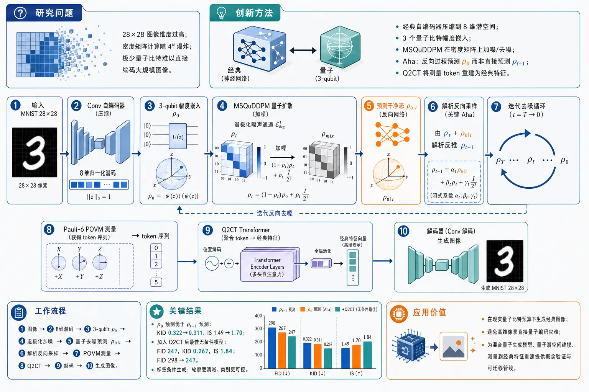
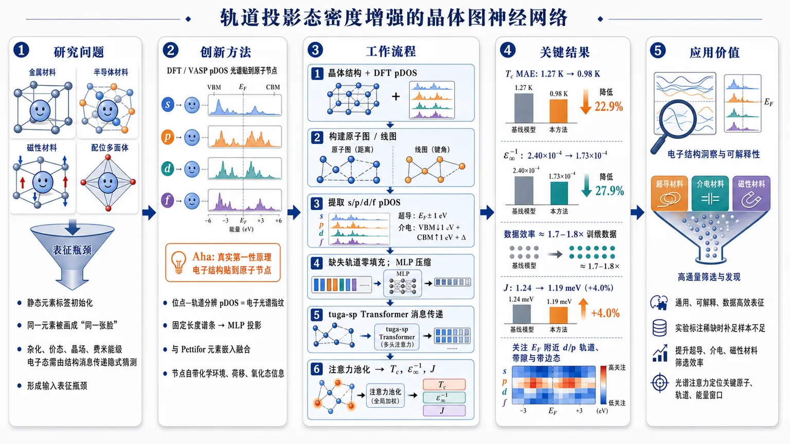
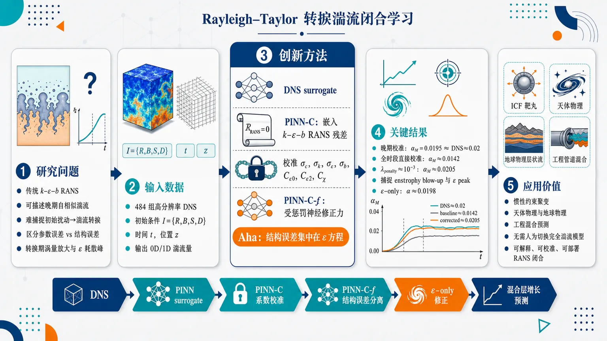
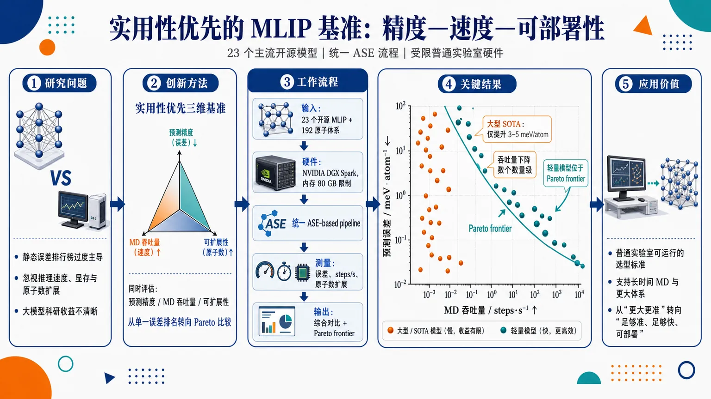
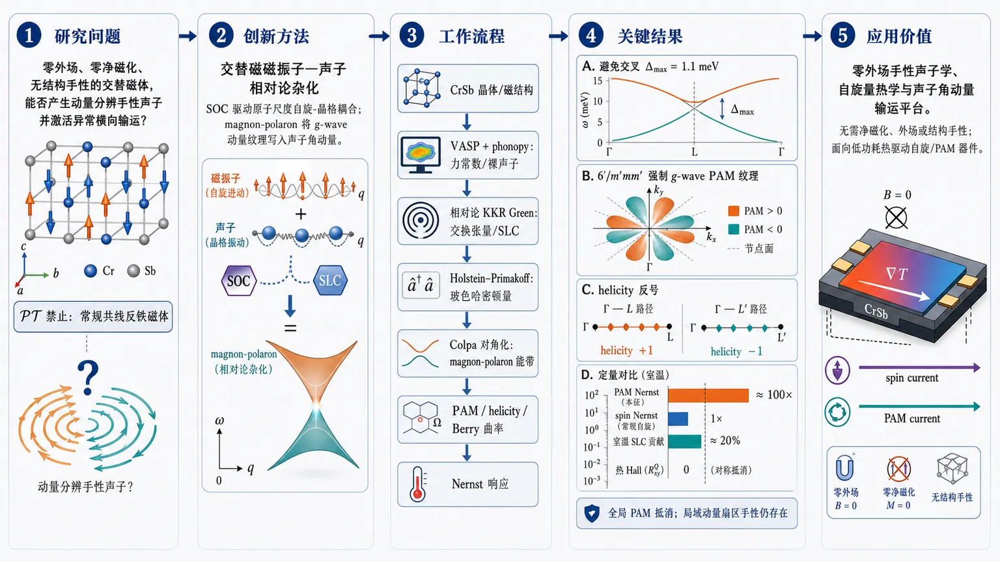
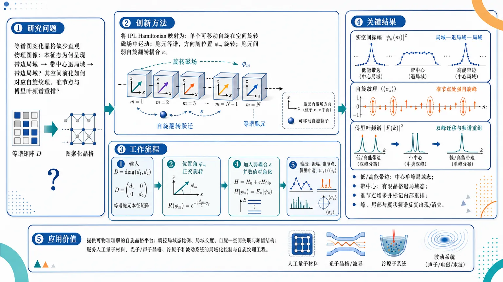
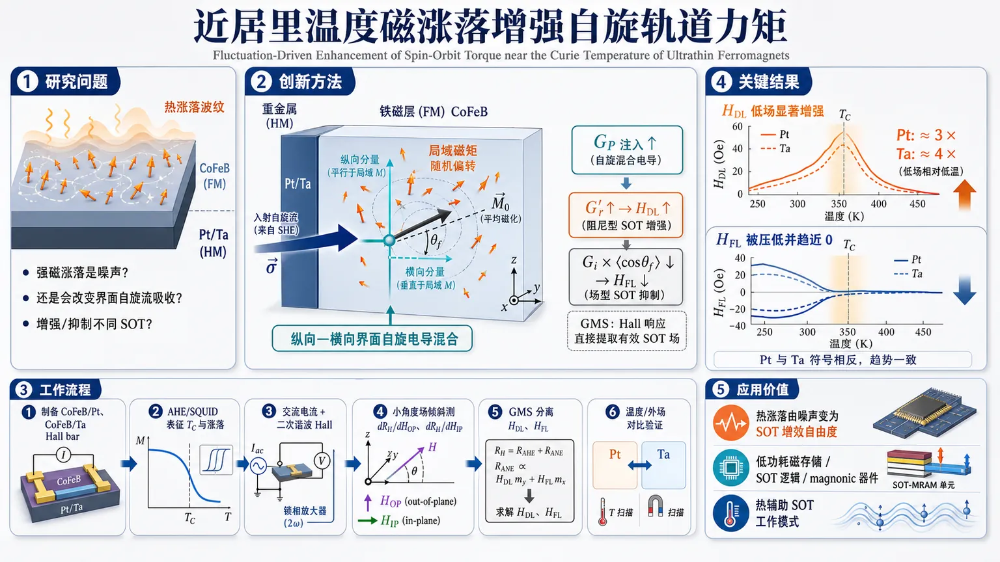
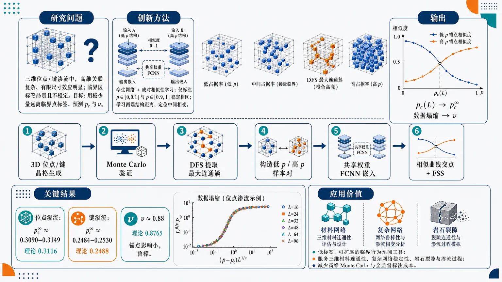
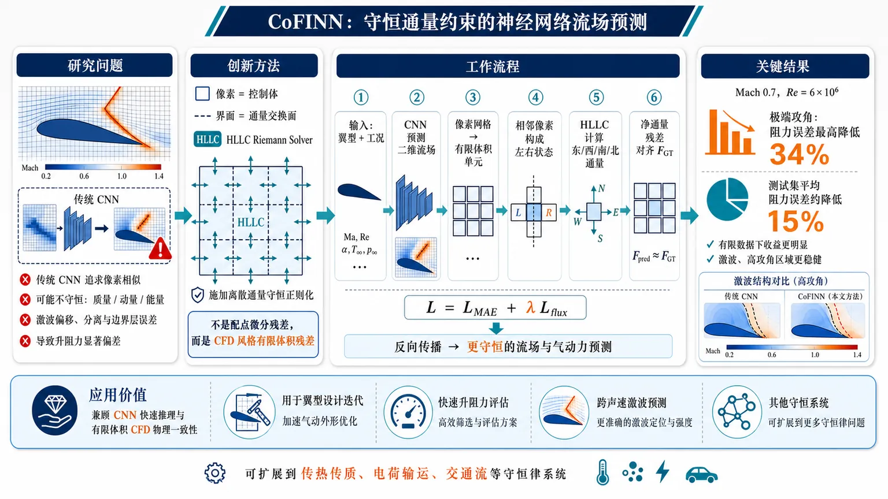
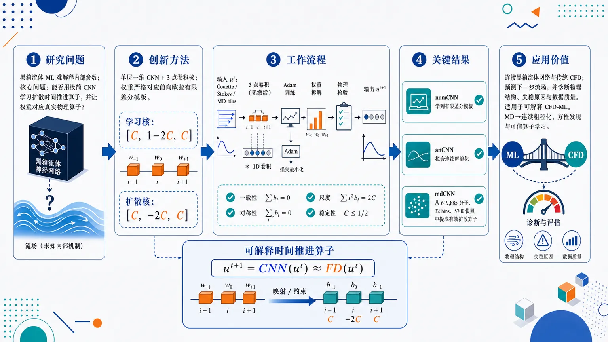

AI × Science 文献日报 2026/07/09
聚焦 AI × 物理 / 化学 / 材料交叉方向，自动过滤明显偏题的医学、教育与社会科学内容，并按主题重新排版，便于快速深读。
AI | 物理 | 化学 | 材料 | 交叉学科 | arXiv | 预印本追踪
原始候选 207 篇中，已剔除 1 篇明显偏离主线的内容，并从剩余 206 篇主线相关文献中精选 60 篇进入日报页，优先保留 AI × 物理 / 化学 / 材料交叉与关键计算方法工作。
核心关注（ML × ferro / 凝聚态）
8 篇今天的主线不是 NbOI2、CrI3、CrSBr、BaTiO3 等具体铁电/二维磁体的单点性质刷新，而是把少标签相变识别、电子态表征和机器学习势推进到可采样的凝聚态问题。三维渗流用 Siamese NN 只靠非临界少量标签外推临界点；无序磁性合金用 GNN+MLIP+MC/MD 把化学、自旋和弛豫耦合在同一热力学采样中。pDOS-GNN 把 DFT 电子结构变成节点特征，Li2TiO3、Al-Li、DGEBA/MTHPA 与热输运工具链则体现 MACE/NEP 类 MLIP 从能量拟合转向缺陷、辐照、扩散和声子热导验证。
-
01孪生网络预测三维渗流临界现象Siamese Neural Network for Label-Efficient Critical Phenomena Prediction in 3D Percolation Models
📄 摘要：针对三维位点和键渗流模型，用孪生神经网络识别相变与临界现象。训练标签仅含 22 个概率点，且全部取自非临界区域，用渗流理论的已知临界行为作基准，展示少标签条件下预测临界点/相变的能力。
💡 亮点：孪生网络用 22 个非临界标注概率点学习三维位点/键渗流相变。它把少标签表征学习用于统计物理临界现象，可作为相变识别模型的严格基准。
📐 方法要点：孪生网络用少量非临界标签学习3D位点/键渗流相似性。
🔗 相关工作关联：呼应无监督/少监督相变识别、Binder判据、有限尺寸标度。
💡 对你方向的启示：铁电畴、磁畴或渗流导电网络可减少临界区昂贵标注。
-
02合金化学自旋结构无序多尺度学习A Multi-Scale Machine Learning Framework for Coupled Chemical, Spin, and Structural Disorder in Alloys
📄 摘要：提出统一处理无序磁性合金中化学构型、自旋与结构自由度的多尺度框架。框架耦合图神经网络、机器学习原子间势、蒙特卡洛和分子动力学采样，用于热力学性质与多重无序耦合效应建模，弥补传统方法难以同时处理构型与原子弛豫的问题。
💡 亮点：该框架把 GNN/机器学习势与 MC/MD 采样结合，面向化学-自旋-结构三重无序合金热力学。它使磁性合金相稳定性与局域弛豫可在同一多尺度流程中处理。
📐 方法要点：GNN、ML原子势、蒙卡和MD耦合化学-自旋-结构无序。
🔗 相关工作关联：呼应磁性集群展开、spin-lattice模型、主动学习势函数。
💡 对你方向的启示：研究CrI3合金化或磁性高熵体系时需同步采样自旋与弛豫。
-
03用轨道投影态密度学习材料性质Machine Learning Materials Properties by Encoding Orbital-Projected Density of States
📄 摘要：将晶体中每个原子的位点投影轨道态密度 pDOS 指纹加入图神经网络节点特征。相较仅用静态元素描述符，pDOS 编码含有原子在具体晶体宿主中的量子电子环境，可提升结构到性质预测的表征能力；pDOS 由电子结构计算直接获得。
💡 亮点：pDOS 节点特征把局域轨道电子环境注入材料 GNN，超越只依赖元素表的静态初始化。该做法强调电子结构先验对晶体性质预测的价值。
📐 方法要点：将原子轨道投影DOS编码为GNN节点量子环境特征。
🔗 相关工作关联：呼应CGCNN、MEGNet、电子态描述符、DFT特征增强学习。
💡 对你方向的启示：对铁电软模、带隙、磁交换预测，pDOS可补足元素表的盲区。
-
04Li2TiO3 机器学习势与缺陷稳定性验证Machine learning interatomic potential for Li 2 TiO 3 with comprehensive validation of lattice defect stability
📄 摘要：面向 Li2TiO3 构建机器学习原子间势，并对晶格缺陷稳定性进行系统验证。论文发表于《计算材料科学》273 卷，摘要信息仅给出主题与作者；可确定其重点是用高效势函数支持含缺陷 Li2TiO3 的大尺度原子模拟。
💡 亮点：Li2TiO3 的机器学习势将验证重点放在晶格缺陷稳定性，而非只报告拟合误差。该体系与锂陶瓷/核材料相关，适合缺陷演化和辐照响应模拟。
📐 方法要点：为Li2TiO3训练ML原子间势并系统验证晶格缺陷稳定性。
🔗 相关工作关联：呼应MACE/NEP/GAP势、缺陷形成能、固态电解质扩散模拟。
💡 对你方向的启示：做含空位、反位、界面的氧化物时，缺陷验证比总RMSE更关键。
-
05κALDo2.0：第一性原理与势的热输运κ ALDo 2.0: Scalable thermal transport from first principles and machine learning potentials
📄 摘要：κALDo 2.0 面向可扩展热输运计算，结合第一性原理与机器学习势。论文发表于《计算物理通讯》327 卷，摘要信息仅列出题名与作者；从题名可知其目标是提高声子/热导率计算在大体系和机器学习势场景下的可用性。
💡 亮点：κALDo 2.0 将第一性原理热输运与机器学习势衔接，强调可扩展计算。它直接服务于复杂晶体、缺陷体系和低热导材料的声子输运筛选。
📐 方法要点：κALDo 2.0连接第一性原理和ML势做可扩展热输运计算。
🔗 相关工作关联：呼应声子BTE、Green-Kubo、ALD、MLIP辅助非谐力常数。
💡 对你方向的启示：铁电相变附近低热导可用MLIP扩大尺寸并检验非谐采样。
-
06文本驱动预测金属有机框架 CO2 吸附MCLFormer: a text-driven deep learning framework for predicting CO 2 adsorption in metal-organic frameworks
📄 摘要：MCLFormer 是用于预测金属有机框架 CO2 吸附的文本驱动深度学习框架。论文发表于《计算材料科学》272 卷；摘要信息未给出具体数据，题名显示其利用文本表征而非传统纯结构/手工描述符来学习 MOF 吸附性能。
💡 亮点：MCLFormer 将文本驱动模型用于 MOF 的 CO2 吸附预测。它把材料文本信息纳入吸附筛选流程，拓展了多模态 AI for porous materials 的输入空间。
📐 方法要点：MCLFormer以文本表征驱动MOF的CO2吸附性能预测。
🔗 相关工作关联：呼应材料语言模型、MOF吸附筛选、结构-文本多模态学习。
💡 对你方向的启示：凝聚态数据库中的合成描述和命名可作为结构特征的补充信号。
-
07Al-Li 合金辐照损伤的高精度学习势Utilizing a high-accuracy machine learning potential for molecular dynamics studies of radiation damage in Al-Li alloys
📄 摘要：构建高精度机器学习势，用于 Al-Li 合金辐照损伤分子动力学研究。论文发表于《计算材料科学》273 卷；摘要信息未提供数值，题名表明工作聚焦级联碰撞/缺陷生成等辐照过程的原子尺度模拟。
💡 亮点：Al-Li 合金高精度机器学习势被用于辐照损伤 MD，面向传统势难准确描述的缺陷与碰撞级联。该方向有助于轻质合金抗辐照性能预测。
📐 方法要点：高精度ML势支撑Al-Li合金辐照损伤级联碰撞MD。
🔗 相关工作关联：呼应辐照缺陷动力学、EAM对照、主动学习短程排斥势。
💡 对你方向的启示：磁性/铁电材料辐照研究需把高能碰撞构型纳入训练域。
-
08水侵入 DGEBA/MTHPA 环氧的学习势Machine learning potential for DGEBA/MTHPA epoxy under water ingress
📄 摘要：针对 DGEBA/MTHPA 环氧树脂在水侵入条件下建立机器学习势。论文发表于《计算材料科学》273 卷；摘要信息未给出训练集和指标，题名显示其目标是描述水分子进入热固性环氧网络后的原子相互作用与动力学行为。
💡 亮点：该机器学习势面向 DGEBA/MTHPA 环氧水侵入过程，覆盖聚合物-水相互作用。它为湿热老化、扩散和界面退化的原子模拟提供工具。
📐 方法要点：面向含水DGEBA/MTHPA环氧网络建立ML原子势。
🔗 相关工作关联：呼应反应/非反应MLIP、聚合物水扩散、界面老化模拟。
💡 对你方向的启示：多相软硬界面中水侵入问题可借鉴其构型覆盖和动力学验证。
今日摘要
总览：今日条目集中在机器学习原子间势与物理约束神经网络：二钛酸锂缺陷稳定性、铝锂合金辐照损伤、二酚基丙烷环氧酸酐体系吸水、合金化学—自旋—结构无序、液体从头算多尺度建模、锂离子正极平均电压筛选，以及热输运自动化计算均被纳入可扩展模拟流程。凝聚态主题以交替磁体和自旋—晶格耦合最突出，覆盖铬锑能带劈裂与自旋极化输运、近邻狄拉克半金属电控垂直交替磁序、反常磁体中手性声子、扭转二硒化钨条纹反铁磁与手性超导、铕铝四应变调控电荷局域化、锶镧钴铌氧双钙钛矿拉曼中的基塔耶夫磁性信号。铁电与器件方向出现从体相极性涡旋、铁电—近晶竞争调制结构，到氮化镓—铝钪氮非易失存储和模拟计算单片集成、场自由自旋轨道矩太赫兹相位反转等面向功能器件的耦合设计。
热点：热点一：机器学习势能面工程化 → 用统一训练框架、主动学习、多保真验证和主流模型横向基准，把势函数从能量力拟合推进到缺陷、辐照、热输运、液体和聚合物服役环境；典型工作包括二钛酸锂缺陷势、铝锂辐照损伤势、水侵环氧势、二十三类机器学习原子间势基准、热输运可扩展框架、统一液体多尺度框架和合金晶界共偏聚迁移框架。热点二：交替磁体与非共线自旋电子学 → 通过对称性保护的手性声子、近邻狄拉克半金属读写、共振杂质隧穿谱、朗道量子化自旋反差、铬锑能带劈裂和自旋极化输运，把无净磁矩反铁磁序转化为可探测、可操控的动量依赖自旋信号；典型工作集中在铬锑、反常磁体中的自旋轨道磁性、螺旋选择性反铁磁共振和电控垂直交替磁序。热点三：强耦合有序态与可调控量子材料 → 用应变、压力、层间扭转、铁电门控和自旋轨道矩探测短程关联、手性超导、极性涡旋、零到π约瑟夫森振荡和太赫兹相位翻转；典型体系包括扭转二硒化钨、锰硅、铕铝四、氮化镓—铝钪氮栅堆、体相铁电极性涡旋和反铁磁约瑟夫森自旋阀。热点四：物理约束人工智能 → 将守恒通量、稀疏长程纠缠门、辛结构提升、超网络权重空间解释和相场降阶代理嵌入湍流闭合、晶格量子场论、激光粉床熔融路径优化和三维渗流临界预测；典型工作包括守恒通量信息神经网络、瑞利—泰勒转捩闭合、孪生神经网络渗流临界预测、权重空间物理和粉床熔融深度强化学习路径规划。
今日文献
60 篇 · 20 含图深析-
01
📊 含图深析
📄 摘要：提出统一处理无序磁性合金中化学构型、自旋与结构自由度的多尺度框架。框架耦合图神经网络、机器学习原子间势、蒙特卡洛和分子动力学采样，用于热力学性质与多重无序耦合效应建模，弥补传统方法难以同时处理构型与原子弛豫的问题。
💡 亮点：该框架把 GNN/机器学习势与 MC/MD 采样结合，面向化学-自旋-结构三重无序合金热力学。它使磁性合金相稳定性与局域弛豫可在同一多尺度流程中处理。
📖 展开分析 + 配图
研究问题如何在磁性合金热力学模拟中，把 Fe/Co 化学占位、自旋上下取向、间隙碳诱导的局域晶格畸变放在同一个采样框架内处理；避免传统固定晶格模型把“离散构型无序”和“连续结构无序”割裂，导致相变温度、碳有序和熔化行为预测失真。创新方法提出“MC 离散构型采样 + MD 连续结构响应 + GNN 能量/磁矩预测 + MLIP/CHGNet 力和应力驱动”的多尺度闭环。Aha 点是：每次 Fe/Co 交换或自旋翻转后，不立即用固定晶格能量判定，而是让晶格通过 NPT-MD 热化畸变，再抽取轨迹快照平均能量作为有效构型能；同时用带初始自旋节点特征的 Transformer-GNN 学习任意自旋构型到弛豫磁矩和总能的映射。工作流程输入 3×3×3 bcc Fe-Co-C 超胞、Fe/Co 占位、碳间隙位置和初始自旋；MC 提议元素交换或自旋翻转；MLIP/CHGNet 计算力和应力并执行结构弛豫或 NPT-MD，使原子位置和晶胞形状响应；从 MD 轨迹抽取多个结构快照；GNN 以原子种类、自旋、键长/方向图结构为输入，预测总能和位点弛豫磁矩；快照能量平均后进入 Metropolis 或 Wang-Landau 接受准则；循环得到热容、磁化、晶格序参量、相变温度和熔点。关键结果Transformer-GNN 达到能量 MAE 34.0 meV/atom、磁矩 MAE 0.065 μB；fine-tuned CHGNet 达到力 MAE 0.119 eV/Å、应力 MAE 0.443 GPa。加入结构畸变后，Fe-Co 有序-无序转变温度预测为 1,000 K，接近实验 1,006 K；熔点预测为 1,690 K，接近实验约 1,700 K。固定晶格会错误稳定三碳线性碳链并把热容峰推到 1,700 K 以上；NPT-MD 允许局域畸变释放碳诱导应力，碳链失稳，主热容峰保持在约 1,000 K，并出现四方到近立方结构转变。应用价值为多重无序磁性合金提供接近第一性原理精度、但可进行大规模热力学采样的建模范式；可用于预测高温相变、熔化、掺杂诱导畸变和磁-化学-结构耦合效应，适合扩展到高熵合金、永磁材料、多铁材料、自旋电子器件材料，以及含替位掺杂、间隙原子、空位和反位缺陷的复杂合金设计。第一部分：核心概览 (Overview)
该研究提出一个把图神经网络（GNN）、机器学习原子间势（MLIP）、蒙特卡洛（MC）与分子动力学（MD）耦合的多尺度框架，用于同时采样合金中的化学无序、磁自旋无序与结构畸变。在 Fe-Co-C 体系中，该框架准确再现实验有序-无序转变温度 1,000 K vs. 1,006 K 和熔点 1,690 K vs. ~1,700 K，并揭示结构畸变会破坏碳链基态、降低碳有序转变温度、诱导四方到近立方结构转变，因而在多重无序磁性合金热力学建模中具有方法学基准意义。
---
第二部分：结构化快速回顾
《A Multi-Scale Machine Learning Framework for Coupled Chemical, Spin, and Structural Disorder in Alloys》（None，）
背景
合金中的构型无序与结构无序通常被分开处理；但在磁性合金中，化学占位、自旋取向和局域晶格畸变强耦合，固定晶格模型、传统簇展开或经典势难以统一描述。
方法
框架将MC 构型采样与MD 结构采样结合：每次 MC 的元素交换或自旋翻转后，用 MLIP/CHGNet 进行结构弛豫或 NPT-MD，再用 Transformer-based GNN 预测总能和弛豫磁矩，用 Metropolis 或 Wang-Landau 准则接受/拒绝构型。
结果
在 Fe-Co-C 中，GNN 达到能量 MAE 34.0 meV/atom、磁矩 MAE 0.065 μB；fine-tuned CHGNet 达到力 MAE 0.119 eV/Å、应力 MAE 0.443 GPa。含结构畸变时，Fe-Co 有序-无序转变温度预测为 1,000 K，熔点为 1,690 K。
讨论
结构畸变显著改变热力学结论：无结构畸变时，三碳体系形成低能线性碳链并导致转变温度升高；引入 NPT-MD 后，局域晶格可释放碳诱导应力，碳链不再稳定，主热容峰保持在约 1,000 K。
局限
框架依赖训练数据覆盖度、GNN 对任意自旋构型的泛化能力、MLIP 对高温结构响应的可靠性；CHGNet 在该工作中仅用于力和应力，不直接用于任意自旋态能量。
结论
同时采样构型自由度与结构自由度是预测多无序合金热力学性质的必要条件；该框架可扩展到高熵合金、永磁材料、多铁材料和自旋电子器件相关体系。
---
第三部分：逐章节冷凝解析 (Section-by-Section Condensing)
Abstract
- Unified treatment of multiple disorder types
多无序磁性合金的热力学性质需要统一处理构型自由度和结构自由度，现有框架尚难覆盖这种耦合问题；核心问题被界定为 *"Understanding the thermodynamic properties of disordered magnetic alloys requires a unified treatment of configurational (chemical, spin, etc.) and structural degrees of freedom"*，并且这种统一处理 *"has remained beyond the scope of existing computational frameworks"*。
- General ML-statistical sampling framework
研究核心是一个结合机器学习模型与统计采样方法的通用框架，明确包含 graph neural networks、machine learning interatomic potentials、Monte Carlo、molecular dynamics；框架定义为 *"a general framework that integrates machine learning models (such as graph neural networks and machine learning interatomic potentials) and statistical sampling methods (such as Monte Carlo and molecular dynamics simulations)"*。
- Fe-Co-C as a prototypical multi-disorder alloy
示范体系为体心立方 Fe-Co 合金掺间隙碳：Fe-Co 主晶格具有化学无序和自旋无序，间隙碳通过局域晶格畸变引入结构无序；该体系被定位为 *"a prototypical multi-disorder magnetic alloy"*。
- Experimental benchmark accuracy
框架预测 Fe-Co 的有序-无序相变温度为 1,000 K，实验值为 1,006 K；预测熔点为 1,690 K，实验约 1,700 K。关键证据为 *"predicts the order-to-disorder phase transition temperature and the melting temperature of Fe-Co alloy to be 1,000 K and 1,690 K, in excellent agreement with the experimentally measured values of 1,006 K and approximately 1,700 K"*。
- Structural transition in Fe-Co-C
Fe-Co-C 随温度升高发生四方到近立方结构转变，即 *"predicts the tetragonal-to-nearly-cubic structural transitions in Fe-Co-C alloy as temperature increases"*，表明结构畸变与碳无序化过程强相关。
---
Introduction
- Disorder controls functional properties
晶体材料中的无序可显著改变物理性质，包括磁相变、力学强化、异常电荷输运；表述为 *"Disorder in crystalline materials can significantly affect their physical properties, leading to phenomena such as magnetic phase transitions, enhanced mechanical strength, and anomalous charge transport"*。
- Two coupled forms of disorder in alloys
合金无序分为两类：构型无序，即不同化学元素或自旋取向占据晶格位点；结构无序，即化学或自旋非均匀性诱导的局域晶格畸变。原文定义为 *"configurational disorder, where atomic sites are occupied by different chemical species or spin orientations"* 和 *"structural disorder, arising from the local lattice distortions induced by chemical or spin inhomogeneity"*。
- MC and MD alone are insufficient
构型无序通常由 MC 采样，结构无序通常由 MD 捕捉，但二者本质纠缠：*“While each type of disorder can be studied individually... the two are intrinsically entangled”*。关键机制是 *"Any change in site occupancy generates forces on neighboring atoms, coupling the configurational and structural degrees of freedom"*。
- Magnetic alloys as natural testbeds
磁性合金具有强烈的化学-自旋-结构耦合，因而适合研究多重无序纠缠；表述为 *"Magnetic alloys represent a well-established class of materials with strong coupling of configurational (chemical and spin) and structural disorder"*。
- Fe-Co is a canonical magnetic alloy
Fe-Co 被定义为原型体系，具有高居里温度、强铁磁性、超低磁阻尼，以及约 1,006 K 的有序-无序相变温度；证据为 *"the Fe-Co binary alloy is a prototypical system"*，并具有 *"an order-to-disorder phase transition near 1,006 K"*。
- Light interstitial dopants create structural disorder
B、C 等轻元素因原子半径小、电子特征不同，倾向占据间隙位点并诱导局域畸变；原文为 *"Due to their small atomic radii and distinct electronic character relative to Fe and Co, those light elements preferentially occupy interstitial sites in the lattice, inducing significant local lattice distortions"*。
- Fe-Co-C is a challenging multi-disorder system
碳间隙分布、局域畸变、Fe-Co 主晶格化学与自旋无序相互耦合，使 Fe-Co-C 成为永磁和自旋电子学相关的复杂体系；表述为 *"making Fe-Co doped with light interstitial elements a challenging multi-disorder system with broad relevance to permanent magnet and spintronic applications"*。
- DFT is accurate but too expensive for disorder sampling
DFT 精度高，但对大超胞和大量构型采样成本过高；核心限制为 *"DFT, while accurate, is expensive for the large supercells and extensive configurational sampling required to study disorder effects"*。
- Traditional surrogate models lack structural flexibility
紧束缚、Ising/Heisenberg、簇展开可用于 MC 能量预测，但通常限制在固定晶格几何中，难以捕捉结构畸变；原文为 *"these approaches are typically restricted to fixed lattice geometries and cannot capture structural distortions"*。
- ML models enable first-principles-level sampling
GNN 和 MLIP 可在远低于 DFT 的成本下预测能量、力、应力和磁矩；优势为 *"enabling accurate predictions of energies, forces, stresses, and magnetic moments at a fraction of the computational cost of DFT"*。
- Existing gap: no unified coupled-disorder framework
尽管 ML 模型发展迅速，但尚未建立一个能同时建模化学、自旋、结构无序耦合的统一框架；关键缺口为 *"a unified framework that integrates these tools to simultaneously model the coupled chemical, spin, and structural disorder has not been established"*。
- Specific computational strategy
每次 MC 的元素交换和自旋翻转后，执行 MLIP 驱动的 MD 捕捉结构畸变，再由 GNN 评估能量和性质；流程为 *"proposed MC moves (elemental swaps and spin flips) are followed by MLIP-driven MD simulations to capture structural distortions, with the GNN evaluating the configurational energy and physical properties of interest at each step"*。
---
Results and Discussions
Machine Learning Framework for Coupled Configurational and Structural Disorder
- MC+MD samples ensembles of trajectories
框架不是标准 MC 中的离散相点采样，也不是标准 MD 中的单条轨迹采样，而是采样一组 MD 轨迹集合；精确定义为 *"the framework samples neither discrete points in the phase space like a standard MC simulation, nor a single trajectory like a standard MD simulation, but an ensemble of trajectories"*。
- Acceptance energy comes from averaged MD snapshots
MC 提议构型后，MD 捕捉结构畸变，从轨迹中抽取若干快照并平均其能量，作为接受/拒绝的有效构型能；原文为 *"A few snapshots are drawn from the MD trajectory, and their energies are averaged as the effective configurational energy"*。
- Metropolis or Wang-Landau sampling governs MC acceptance
有效能量进入 Metropolis 或 Wang-Landau 采样准则；表述为 *"used to accept or reject the proposed move through Metropolis or Wang-Landau sampling"*。
- GNN and MLIP have distinct roles
GNN 用于预测总能和物理性质，MLIP 用于计算力和应力并驱动 MD；分工为 *"we use GNNs to evaluate total energies and physical properties, and MLIPs to compute forces and stresses for MD simulations"*。
- Graph representation encodes species, spin, and geometry
晶体结构被表示为图：原子为节点，键为边；节点编码原子种类和自旋，边编码键长和方向。原文为 *"the crystal structure is represented as a graph where atoms are nodes and bonds are edges"*，并且 *"Node features encode site properties such as atomic species and spin, while edge features encode bonding properties such as bond length and direction"*。
- Magnetic DFT produces initial and relaxed moments
磁性体系中 DFT 同时涉及输入的初始磁矩 `sᵢ,initial` 和自洽弛豫磁矩 `sᵢ,relaxed`；关键区分为 *"DFT produces two sets of magnetic moments: the initial guess... and the self-consistently relaxed moments"*。
- Relaxed moments are not necessarily ground-state moments
`sᵢ,relaxed` 依赖初始磁矩，不一定等于基态磁构型；原文为 *"sᵢ,relaxed depends on the initial guess and is typically not the same as the ground-state magnetic configuration"*。因此计算总磁矩等自旋性质必须使用弛豫磁矩，*“they... are required for computing spin-related properties such as total magnetic moment”*。
- Initial spin features are essential
GNN 节点输入同时包含原子种类 one-hot 编码和初始自旋嵌入，目标同时预测位点弛豫磁矩和总能；表述为 *"include both atomic species (one-hot encoded) and initial spin... as node features, and train the GNN to simultaneously predict... relaxed... as node-level outputs and total energy as a graph-level output"*。
- Forces and stresses must be conservative derivatives
虽然 GNN 也可直接预测力和应力，但为保证保守力场，力和应力需由总能对原子位置和晶胞参数求导；核心原则为 *"they must be calculated as derivatives of total energy with respect to atomic positions and cell parameters in order to ensure a conservative force field"*。
- CHGNet is used only for structure dynamics
CHGNet 能预测能量和磁矩，但其磁态趋于给定结构的最低能磁构型，不适合任意初始自旋构型采样；因此 *"we therefore use CHGNet exclusively for force and stress evaluation, and use the GNN for total energy and magnetic moment predictions"*。
- Non-magnetic MLIP is justified for Fe-Co-C forces
DFT 基准显示磁构型对 Fe-Co-C 的力和应力影响不显著，因此用非磁 MLIP 做结构动力学可接受；证据为 *"magnetic configurations do not significantly affect interatomic forces and stresses in our system... justifying the use of a non-magnetic MLIP for structural dynamics"*。
---
Application to Fe-Co-C Alloys
- Carbon prefers interstitial sites
DFT 证实碳倾向占据间隙位点，形成能约 2.3 eV，显著低于替代 Fe 的 3.98 eV 和替代 Co 的 4.60 eV；证据为 *"carbon preferentially occupies interstitial sites with a formation energy of around 2.3 eV, significantly lower than the substitutional formation energy of 3.98 eV and 4.60 eV"*。
- Interstitial carbon makes Fe-Co-C structurally distorted
间隙碳引入显著晶格畸变和局域原子位移，使 Fe-Co-C 成为检验化学、自旋、结构无序耦合的理想模型；原文为 *"Such interstitial dopants introduce significant lattice distortions and local atomic displacements"*。
- Framework is extensible beyond interstitial carbon
尽管示范对象为间隙碳，框架可扩展到替位掺杂、空位、反位缺陷、高熵合金；表述为 *"the framework can be readily extended to other cases, such as substitutional dopants, vacancies, and anti-site defects"*。
---
Training and Validation of GNN and MLIP Models
- Two datasets based on 3×3×3 Fe-Co-C supercells
MLIP 和 GNN 两个数据集均基于 3 × 3 × 3 体心立方 Fe-Co-C 超胞；Fe/Co 比例在 0 到 1 全范围随机选择，碳浓度 0% 到 11.1%，对应每个超胞 0 到 6 个碳原子。原文为 *"both based on 3 × 3 × 3 supercell Fe-Co alloys doped with various amounts of interstitial carbon atoms"*。
- MLIP dataset contains 2,500 snapshots
MLIP 数据集选择 500 个 FM 构型，每个进行 variable-cell DFT relaxation，再用 farthest point sampling 每条轨迹提取 5 个快照，总计 2,500 snapshots；证据为 *"we selected 500 atomic configurations with ferromagnetic (FM) magnetic ordering"* 和 *"extract 5 snapshots per trajectory, yielding 2,500 snapshots in total"*。
- Dataset includes high-force early relaxation states
力主要集中在 0 eV/Å 附近，少数早期弛豫快照出现接近 ±10 eV/Å 的大力；原文为 *"Forces are concentrated near 0 eV/Å with a small fraction of large forces near ±10 eV/Å arising from the early stages of relaxation"*。
- Fine-tuned CHGNet improves diagonal stress prediction
预训练 CHGNet 可较好预测力和非对角应力，但不能再现对角应力；fine-tuning 后力 MAE 为 0.119 eV/Å，应力 MAE 为 0.443 GPa，R² 分别为 0.887 和 0.916。证据为 *"After fine-tuning, the mean absolute error (MAE) for forces and stresses is 0.119 eV/Å and 0.443 GPa, with R² coefficients of 0.887 and 0.916"*。
- GNN dataset contains 4,000 spin-chemical configurations
GNN 数据集从 MLIP 数据集中随机选 500 个快照，每个固定晶格和原子位置，随机交换 Fe-Co 对并赋予自旋上下取向，生成 8 个构型，总计 4,000 configurations；原文为 *"generated 8 configurations per snapshot... yielding 4,000 configurations"*。
- Initial magnetic moments are species-dependent
初始磁矩设置为 Fe：±3 μB，Co：±2 μB，C：0 μB；精确表述为 *"The initial magnetic moments were set to ±3 μB for Fe, ±2 μB for Co, and 0 μB for C atoms"*。
- Relaxed moments differ from initial guesses
DFT 自洽弛豫后，磁矩分布变宽但仍接近初值；局部位点可能显著偏离初始自旋猜测。证据为 *"sᵢ,relaxed can differ significantly from the initial guess sᵢ,initial"*。
- Transformer GNN achieves high energy and moment accuracy
Transformer convolution GNN 同时预测总能和位点弛豫磁矩；测试性能为能量 MAE 1.821 eV/cell，即 34.0 meV/atom，磁矩 MAE 0.065 μB，R² 分别为 0.978 和 0.999。原文为 *"The trained model achieves MAEs of 1.821 eV/cell (34.0 meV/atom) and 0.065 μB for energy and magnetic moments, with R² coefficients of 0.978 and 0.999"*。
- Initial spin ablation causes model collapse
删除初始自旋特征会导致 GNN 只预测平均磁矩，不能再现位点分布；证据为 *"Omitting the initial spin... leads to model collapse, where the GNN predicts only the mean magnetic moments and fails to reproduce the correct site-resolved distribution"*。
- More complex features or equivariant networks did not improve
persistent homology features 和 equivariant neural network architecture 未带来显著提升，因此未采用；原文为 *"showed no significant improvement over the Transformer-based GNN in this system, and were therefore not adopted"*。
---
Phase Transitions Without Structural Distortions
- Fixed lattice reduces framework to GNN-driven MC
不考虑结构畸变时，原子位置和晶格参数固定，框架退化为只采样构型自由度的 GNN-MC；原文为 *"atomic positions and lattice parameters are held fixed and the framework reduces to a GNN-driven MC simulation sampling only configurational degrees of freedom"*。
- Pure Fe-Co transition appears at 780 K without structural distortions
对 3 × 3 × 3 Fe-Co 50:50、xC = 0%，热容在 780 K 出现显著峰，对应有序-无序相变；原文为 *"the heat capacity exhibits a prominent peak at 780 K, indicating the order-to-disorder phase transition"*。
- Magnetization remains ferromagnetic
在无结构畸变的纯 Fe-Co 中，系综平均磁化强度始终为正并接近 FM 值 4.9 μB per unit cell，说明相变由化学无序驱动而非自旋无序；证据为 *"the ensemble-averaged magnetization remains positive and close to the FM value of 4.9 μB per unit cell"* 和 *"the transition is driven by chemical disorder rather than spin disorder"*。
- Pure Fe-Co ground state is ordered FeCo
MC 中找到的最低能构型为完全有序 FeCo；原文为 *"corresponds to the perfectly ordered FeCo structure"*。
- Single-carbon case is a two-level interstitial problem
对 xC = 1.85%，即每个 3×3×3 超胞 1 个碳原子，碳构型空间只有两个对称不等价间隙位点 Ci1 和 Ci2，且 multiplicity 相同；原文为 *"contains only two symmetry-inequivalent interstitial configurations Ci1 and Ci2, with the same multiplicity"*。
- Decoupled carbon two-level model predicts 292 K, but simulation shows higher broad peak
若碳与 Fe-Co 构型自由度解耦，能级差 ΔE ≈ 0.06 eV 将导致 Schottky anomaly 在 T ≈ 0.42ΔE/kB ≈ 292 K；但实际热容峰更宽且温度更高，说明强耦合。证据为 *"T ≈ 0.42 ΔE/kB ≈ 292 K, where ΔE ≈ 0.06 eV"* 和 *"the simulated heat capacity instead exhibits a broad peak at significantly higher temperatures"*。
- Fe-Co chemical disorder renormalizes carbon transition
单碳体系的碳转变温度被 Fe-Co 化学无序显著重整化；原文为 *"the Fe-Co chemical disorder effectively renormalizes the carbon transition temperature far above its intrinsic two-level value"*。
- Three-carbon case forms a high-temperature transition above 1,700 K
对 xC = 5.55%，即每个超胞 3 个碳原子，热容峰位于 1,700 K 以上，显著高于纯 Fe-Co 的 780 K，表明 C-C 相互作用提高有序-无序相变温度；原文为 *"the heat capacity shows a prominent peak above 1,700 K"* 和 *"C-C interactions significantly increase the order-to-disorder phase transition temperature"*。
- Three-carbon lowest-energy state is a linear carbon chain
无结构畸变时，最低能构型为三个碳原子形成线性链；原文为 *"features three carbon atoms forming a linear chain"*。
- Carbon chain stabilization arises from force cancellation
线性碳链稳定性来自间隙碳沿链轴施加的力部分相互抵消；非共线碳构型会产生不同方向竞争力并提高总能。证据为 *"forces exerted by each interstitial carbon are aligned along the chain axis and partially cancel each other"*。
- Carbon barely perturbs Fe-Co states near Fermi level
C-PDOS 显示碳对费米能级附近电子态贡献很小，说明间隙碳不显著扰动 Fe-Co 主晶格电子结构；原文为 *"carbon does not contribute to the electronic states near the Fermi level"*。
- COHP supports weak and similar C-Fe/C-Co interactions
COHP 显示 C-Fe 和 C-Co 的成键态与反键态分别远低于和远高于费米能级，且两类相互作用强度近似相同；原文为 *"bonding and antibonding states formed between carbon and neighboring Fe or Co atoms lie significantly below and above the Fermi level"*，以及 *"C-Fe and C-Co interactions are nearly identical in strength"*。
---
Phase transitions With Structural Distortions
- NPT-MD introduces lattice response into MC
结构畸变通过 NPT-MD 并入 MC，每一步允许原子位置和晶格参数演化；原文为 *"incorporate structural distortions into the MC framework through NPT-MD simulations, allowing the atomic positions and lattice parameters to evolve at each MC step"*。
- NPT-MD is preferred over NVT-MD for thermodynamic lattice response
NPT-MD 能正确处理热膨胀和碳有序变化伴随的结构相变；原文为 *"NPT-MD is adopted as the primary approach as it correctly accounts for the thermodynamic response of the lattice, including thermal expansion and the structural transitions"*。
- Pure Fe-Co transition becomes experimentally accurate at 1,000 K
含结构畸变后，纯 Fe-Co 热容峰位于 1,000 K，与实验 1,006 K 高度一致；证据为 *"the heat capacity exhibits a peak at 1,000 K, in excellent agreement with the experimentally measured order-to-disorder phase transition temperature of 1,006 K"*。
- Structural distortions destabilize carbon chain
对 xC = 5.55%，最低能构型不再含碳链；原文为 *"the lowest-energy configuration no longer contains the carbon chain"*。机制是局域晶格围绕碳原子畸变，破坏链轴力抵消对称性：*"the lattice locally distorts around each carbon atom, breaking the force cancellation symmetry and the energetic advantage of the chain configuration"*。
- Carbon-induced high transition is suppressed by structural relaxation
含结构畸变后，所有碳浓度均出现约 1,000 K 的显著热容峰，与无结构畸变时随碳浓度升高而移向高温形成对比；原文为 *"a prominent peak near 1,000 K is observed in all cases"*。
- The 1,000 K peak corresponds to Fe-Co chemical ordering
热容峰在所有碳浓度下稳定接近 1,000 K，说明对应 Fe-Co 化学有序，而非碳有序；原文为 *"This robustness of the 1,000 K peak confirms that it is associated with Fe-Co chemical ordering, instead of with carbon-ordering"*。
- Neglecting structural distortions overestimates transition temperature
忽略结构畸变会因错误保留碳链稳定性和 C-C 相互作用而显著高估相变温度；原文为 *"neglecting them could lead to a significant overestimation of the phase transition temperature"*。
- NPT-MD captures melting at 1,690 K
高温热容峰对应熔化；纯 Fe-Co 预测熔点 1,690 K，实验约 1,700 K。证据为 *"the predicted melting temperature of 1,690 K is in good agreement with the experimental value of approximately 1,700 K"*。
- Melting appears in NPT but not NVT
熔化只在 NPT-MD 中出现，不在 NVT-MD 中出现，因为 NVT 固定体积，阻止熔化伴随的热膨胀；原文为 *"melting is observed only in NPT-MD simulations and not in NVT-MD calculations"* 和 *"NVT-MD constrains the cell volume, preventing the thermal expansion that accompanies melting"*。
- Lattice order parameters separate isotropic and anisotropic distortions
定义各向同性晶格参数
l̄ = (a + b + c)/3，以及各向异性参数
Dab = (a − b)/(√2 l̄)，
Dc = (a + b − 2c)/(√6 l̄)。这三个量用于区分热膨胀与偏离立方对称性的畸变；原文为 *"define the isotropic lattice order parameter l̄ = (a+b+c)/3 and two anisotropic lattice order parameters"*。
- Normalization by l̄ accounts for thermal expansion
归一化因子使用有限温度下的 l̄，而不是固定参考晶格常数，以扣除热膨胀影响；原文为 *"l̄ is the normalization factor instead of a fixed reference lattice constant and accounts for the thermal expansion at finite temperature"*。
- Dab and Dc form orthogonal anisotropic basis
Dab 和 Dc 构成正交晶格畸变基，可表达保持正交晶格角的任意偏离立方对称性；证据为 *"Dab and Dc form an orthogonal basis for the anisotropic subspace of lattice distortions"*。
- Thermal expansion is monotonic
三个碳浓度下，l̄ 均随温度单调增加，对应晶格热膨胀；原文为 *"the isotropic order parameter l̄ increases monotonically with temperature, reflecting the lattice thermal expansion"*。
- Tetragonal/orthorhombic distortions disappear at high temperature
低温下各向异性参数略偏离零，说明存在轻微四方或正交畸变；升温后 Dab 和 Dc 在零附近波动，表示向近立方结构转变。原文为 *"At low temperatures, the anisotropic order parameters show small deviations from zero"* 和 *"As temperature increases, both anisotropic order parameters fluctuate near zero, indicating a transition to a nearly-cubic structure"*。
- Carbon disorder drives tetragonal-to-nearly-cubic transition
四方到近立方转变与高温下碳子晶格无序化一致；碳链的对称性破缺效应随无序化消失。证据为 *"This tetragonal-to-nearly-cubic transition is consistent with the disordering of the carbon sublattice at elevated temperatures"*。
- xC = 1.85% shows large anisotropic fluctuations
单碳浓度下 Dab 和 Dc 波动显著大于 xC = 0% 和 xC = 5.55%；机制是两个对称不等价间隙构型 Ci1/Ci2 之间切换，诱导两个不同畸变状态。原文为 *"the fluctuations in Dab and Dc are significantly larger"* 和 *"the system alternates between two structurally distinct states during the simulation"*。
- Broad implication: simultaneous disorder modeling is necessary
构型无序与结构无序必须同步处理，否则热力学性质预测会偏离实验；总结性结论为 *"configurational and structural disorder must be taken into consideration simultaneously to correctly predict the thermodynamic properties of disordered alloys"*。
---
Methods
First-Principles Calculations
- DFT implementation and functional
第一性原理计算使用 VASP，采用 projector augmented wave pseudopotentials 和 PBE-GGA；原文为 *"First-principles calculations were performed using DFT as implemented in the Vienna Ab initio Simulation Package (VASP)"*，并且 *"used the projector augmented wave pseudopotentials and the Perdew-Burke-Ernzerhof functional in the generalized gradient approximation"*。
- Numerical convergence settings
平面波截断能为 550 eV，电子能量收敛阈值 10⁻⁶ eV，离子力收敛阈值 0.01 eV/Å；证据为 *"A plane-wave kinetic energy cutoff of 550 eV was used, with an electronic energy convergence threshold of 10−6 eV and an ionic force convergence threshold of 0.01 eV/Å"*。
- k-point sampling density
布里渊区采样使用密度为 0.03 × 2π/Å 的 k 点网格；原文为 *"The Brillouin zone was sampled using a k-point grid with a density of 0.03 2π/Å"*。
- DFT+U for Fe and Co d orbitals
为处理电子关联，使用 DFT+U，Fe 的 3d 轨道 U = 4 eV，Co 的 3d 轨道 U = 3 eV；证据为 *"Hubbard U values of 4 eV and 3 eV were applied to the 3d orbitals of Fe and Co atoms, respectively"*。
- Spin polarization throughout
所有 DFT 计算均包含自旋极化；原文为 *"All calculations were performed with spin polarization"*。
---
Dataset Construction
- Composition range and interstitial placement
数据集基于 3 × 3 × 3 bcc Fe-Co-C 超胞，Fe 浓度随机覆盖全范围，Co 浓度满足 xCo = 1 − xFe，碳浓度 0%–11.1%，所有碳随机放置在间隙位点；原文为 *"The Fe concentration xFe was randomly chosen across the full composition range... and the carbon concentration xC ranges from 0% to 11.1%"*。
- MLIP trajectory sampling strategy
MLIP 数据集中 500 个构型进行 variable-cell DFT relaxation，每条轨迹用 farthest point sampling 选取 5 个快照；原文为 *"500 atomic configurations were randomly selected with FM magnetic ordering"* 和 *"farthest point sampling was applied to extract 5 snapshots per trajectory"*。
- Farthest point sampling maximizes force/stress diversity
FPS 在归一化力向量空间中迭代选择与已选样本距离最大的快照，以最大化力和应力分布多样性；证据为 *"sampling was performed in the space of normalized force vectors, iteratively selecting snapshots that are maximally distant from all previously chosen snapshots"*。
- Initial and final snapshots always included
每条轨迹的首末快照固定纳入，以覆盖高度畸变初态和弛豫终态；原文为 *"The first and last snapshots of each trajectory were always included to ensure coverage of both the highly distorted initial configuration and the relaxed final structure"*。
- Train/validation/test split
MLIP 数据集总计 2,500 snapshots，按 80/10/10 划分训练、验证和测试集；GNN 数据集总计 4,000 configurations，同样按 80/10/10 划分。原文为 *"was split into training, validation, and test sets with a ratio of 80/10/10"*。
---
Training of GNN and MLIP Models
- Multi-task GNN architecture
GNN 同时预测图级总能和节点级位点磁矩；原文为 *"adopts a multi-task architecture that simultaneously predicts the total energy as a graph-level output and site-resolved magnetic moments as node-level outputs"*。
- Node and edge features
节点特征由原子种类 one-hot 编码和初始磁矩嵌入构成；边特征由原子间距离经 Gaussian basis 展开得到。证据为 *"node features are constructed from one-hot encodings of the atomic species and an embedding of the initial magnetic moments"* 和 *"edge features are constructed from interatomic distances expanded in a Gaussian basis"*。
- Transformer convolution and attention message passing
图经过多层 Transformer convolution，邻居节点通过注意力式 message passing 交换信息；原文为 *"Transformer convolution layers where neighboring nodes exchange messages through attention-based message-passing functions"*。
- Two-headed decoding for magnetic moments and energy
卷积后节点特征由 MLP 解码为位点磁矩，同时池化为图级向量并由独立 MLP 解码为总能；原文为 *"node features are decoded by a multilayer perceptron to predict the site-resolved magnetic moments"* 和 *"pooled into a graph-level feature vector... to predict the total energy"*。
- Combined equally weighted MAE loss
训练目标是总能 MAE 与位点磁矩 MAE 的等权组合；证据为 *"minimizing a combined loss function consisting of the MAE for the total energy and the MAE for the site-resolved magnetic moments, weighted equally"*。
- Bayesian hyperparameter optimization
卷积层数、嵌入通道数、学习率、权重衰减、batch size 通过 Optuna Bayesian optimization 优化；原文为 *"Hyperparameters including the number of convolution layers, the number of embedding channels, the learning rate, the weight decay, and the batch size were optimized using Bayesian optimization as implemented in Optuna"*。
- MLIP training details are truncated in provided text
提供文本在 *"For the MLIP, the pre-trained CHGNet model was fine-tuned on the MLIP dataset to predict interatomic for"* 处截断；可确定信息包括：CHGNet 预训练模型在 MLIP 数据集上 fine-tune，目标至少包括原子间力，并在前文用于预测力和应力以驱动 MD。
---
第四部分：深度理解与语言支持 (Understanding & Nuance)
1. 术语解析
Configurational disorder
Configurational disorder 指离散自由度的无序，例如 Fe/Co 原子在晶格位点上的随机占位、每个原子的自旋向上或向下。语境中其核心是“哪个位点是什么元素、什么初始自旋”。表达 *"atomic sites are occupied by different chemical species or spin orientations"* 强调它不是连续位移，而是离散构型空间中的组合问题。
Structural disorder
Structural disorder 指连续几何自由度的无序，包括原子偏离理想晶格位置、晶胞长短变化、局部四方/正交畸变。语境中由间隙碳、化学非均匀性或磁性非均匀性诱导。与 configurational disorder 的微妙差别在于：前者是“结构坐标怎么变”，后者是“位点身份怎么排”。
Self-consistently relaxed magnetic moments
Self-consistently relaxed magnetic moments 是 DFT 自洽计算后得到的磁矩，不等于输入的初始磁矩，也不一定等于全局基态磁构型。语境中，初始磁矩 `sᵢ,initial` 是模型输入，弛豫磁矩 `sᵢ,relaxed` 是真实用于计算磁化等性质的输出。微妙点在于：DFT 的磁态可能被初始猜测锁定在不同局域极小值。
Conservative force field
Conservative force field 指力必须是势能对原子位置的负梯度，即力场存在单一能量函数来源。若直接用神经网络预测力而不约束其为能量导数，可能出现能量不守恒或路径依赖问题。语境中，MLIP 通过反向传播总能得到力和应力，因此更适合 MD。
Order-to-disorder phase transition
Order-to-disorder phase transition 是低温有序排列向高温随机排列的转变。在 Fe-Co 中主要指 Fe/Co 化学有序结构在高温下变为化学无序固溶体；在碳子晶格中则可指碳从特定间隙位点/链状排列转向随机间隙分布。
---
2. 疑难查证：关键复杂概念解释
为什么 MC 后要接 MD？
普通 MC 只改变离散变量，例如交换 Fe/Co 或翻转自旋。如果晶格固定，每个构型的能量是在一个人为固定几何上评估的。但真实材料中，一旦 Fe/Co 交换或碳移动，周围原子会产生力并重新位移，晶胞也可能膨胀、收缩或变形。
因此每个 MC 提议后接一段 MD，相当于让结构自由度在该构型下“热化”或“响应”，再用 MD 快照平均能量作为该构型的有效自由能近似。这样采样对象从“离散构型点”变为“构型对应的一组热振动结构”。
为什么 CHGNet 不直接负责总能？
CHGNet 的磁性处理倾向于给定结构下的最低能磁态。如果 MC 正在采样任意自旋构型，例如某些 Fe/Co 被指定为 spin-up 或 spin-down，那么需要的是“该初始自旋约束/初始猜测下 DFT 自洽到的能量和磁矩”，而不总是磁基态能量。
因此 CHGNet 适合作为结构动力学工具，计算力和应力；GNN 则专门学习“初始自旋输入 → 弛豫磁矩和总能”的映射。
为什么无结构畸变时碳链稳定，而有结构畸变时不稳定？
固定晶格中，碳原子不能通过周围局域畸变释放应力。三个碳排成线性链时，碳诱导的力沿链轴方向排列并部分抵消，因此总能低。
一旦允许结构畸变，局部 Fe/Co 原子可以围绕每个碳重新位移，原本依赖固定几何的力抵消优势消失；不同碳排列都能通过局域弛豫降低能量，线性链不再特殊稳定。
为什么 NPT-MD 能看到熔化，而 NVT-MD 看不到？
熔化通常伴随体积膨胀、晶格有序性丧失和应力释放。NVT 固定体积，限制了体系在高温下通过体积变化进入液态相关构型空间。NPT 允许晶胞体积和形状随温度、压力响应，因此更接近真实实验热力学条件，也能捕捉熔化峰。
---
第五部分：创新评估与关联 (Synthesis & Novelty)
1. 创新性判断
Unified chemical-spin-structural disorder sampling
近 2–5 年内，GNN 和 MLIP 已广泛用于材料性质预测，MC 可用于构型无序采样，MD 可用于结构动力学，CHGNet 等通用势也能预测力和应力。但关键缺口在于：多数方法只处理固定晶格上的化学/自旋无序，或只处理给定化学构型下的结构动力学。该框架把 MC 离散构型采样 与 MD 连续结构采样放入同一热力学循环，针对的是化学、自旋、结构三类自由度的耦合问题。
Spin-aware GNN for arbitrary magnetic configurations
相较于只预测磁基态性质的模型，该工作显式把初始自旋作为节点特征，并预测 DFT 自洽后的位点弛豫磁矩与总能。这个设计解决了磁性合金中一个常被忽略的问题：不同初始磁构型可导致不同自洽磁态，热力学采样不能只依赖基态磁矩。
Separation of GNN energy model and MLIP force model
框架没有强迫一个模型同时处理任意自旋态能量和保守力场，而是采用功能分离：GNN 负责任意化学/自旋构型能量与磁矩，CHGNet/MLIP 负责结构动力学所需力和应力。这种分工务实地绕开了当前通用 MLIP 对任意磁构型泛化不足的问题。
Direct experimental validation on both transition and melting
Fe-Co 的有序-无序转变温度 1,000 K vs. 1,006 K、熔点 1,690 K vs. ~1,700 K 同时得到验证，使该框架不只是模型精度展示，而是热力学尺度预测能力的验证。尤其是固定晶格预测 780 K，而加入结构畸变后达到 1,000 K，清楚展示结构自由度不是微小修正，而是决定性因素。
New physical insight into carbon ordering in Fe-Co-C
无结构畸变时，C-C 相互作用和力抵消机制稳定线性碳链并把热容峰推至 >1,700 K；有结构畸变时，碳链失稳，碳有序转变被压低，晶格发生四方到近立方转变。这一结论说明，碳掺杂 Fe-Co 的热力学行为不能由固定晶格构型模型可靠预测。
Transferability to complex alloy families
该框架自然适用于含替位掺杂、间隙元素、空位、反位缺陷的体系，也适用于高熵合金、永磁材料、多铁材料、自旋电子学材料。创新点不局限于 Fe-Co-C，而在于提供了一种可迁移的多自由度热力学采样范式。
-
02
📄 摘要：提出混合生成流程：经典自编码器先降维，高维经典图像被映射到潜在空间；混合态量子去噪扩散概率模型 MSQuDDPM 在该潜在表征上执行量子态噪声化与去噪。方法旨在降低量子态编码所需量子比特和大密度矩阵模拟成本。
💡 亮点：该模型用经典自编码器压缩图像，再以混合态量子扩散在潜空间生成。它尝试绕开高维数据量子编码瓶颈，是量子生成学习的可扩展路线。
📖 展开分析 + 配图

研究问题如何在量子比特数量极少、密度矩阵计算随 4ᴺ 爆炸的限制下，把量子去噪扩散模型用于经典图像生成；核心矛盾是 28×28 MNIST 图像太高维，无法直接映射到大规模量子态空间。创新方法提出混合量子—经典潜空间扩散框架：用经典自编码器把图像压缩为 8 维潜码，再用 3 个量子比特幅度嵌入到 Hilbert 空间，由 MSQuDDPM 在密度矩阵上执行退极化加噪与量子去噪。关键 Aha 点是反向过程不直接预测 ρₜ₋₁，而是在任意时间步预测干净态 ρ₀，再用解析公式由 ρₜ 和 ρ₀|t 一步反推 ρₜ₋₁；同时用 Q2CT Transformer 把量子测量 token 重建为经典图像特征。工作流程输入 28×28 手写数字图像 → 卷积自编码器编码为 8 维归一化潜码 → 幅度嵌入为 3-qubit 量子态密度矩阵 ρ₀ → 前向过程反复施加退极化通道，使 ρ₀ 逐步混合到最大熵态 ρₘᵢₓ → 量子去噪线路接收 ρₜ、时间嵌入和可选标签嵌入，预测 clean state ρ₀|t → 解析反向更新得到 ρₜ₋₁，迭代生成最终量子态 → Pauli-6 POVM 测量得到离散量子测量序列 → Q2CT 聚合测量 token 并恢复经典 latent feature → 自编码器解码器输出 MNIST 数字图像。关键结果在 MNIST 上，ρ₀ 预测优于传统 ρₜ₋₁ 预测：无 Q2CT 时 KID 从 0.322 降到 0.311，IS 从 1.49 升到 1.70。加入 Q2CT 后性能显著提升，最佳无条件模型为 ρ₀ prediction + Q2CT，达到 FID 247、KID 0.267、IS 1.84，相比无 Q2CT 的 ρ₀ 模型 FID 从 298 降到 247。标签条件生成让数字轮廓更清晰、类别更可控，但定量指标略低于最佳无条件模型。应用价值展示了一条现实量子比特预算下的经典图像生成路径：经典网络负责压缩和解码，量子扩散负责低维潜空间生成，避免直接处理高维像素的量子编码灾难。该框架可作为未来混合量子生成模型、量子潜空间建模、量子测量到经典特征重建的概念验证基础，并为量子硬件扩展后的生成式 AI 应用提供可迁移管线。第一部分：核心概览
该研究提出一种混合量子—经典潜空间扩散生成框架：先用经典自编码器将 MNIST 图像压缩为低维潜码，再嵌入小量子比特 Hilbert 空间，由混合态量子去噪扩散模型（MSQuDDPM）在密度矩阵层面建模生成分布。核心创新在于以 ρ₀ 预测替代逐步预测 ρₜ₋₁，并用解析反向传播公式完成一步更新。该工作把量子扩散从小规模量子态基准推进到经典图像生成场景，在现实量子比特预算下提供了可运行路径。
---
第二部分：结构化快速回顾
《An Hybrid Quantum-Classical Diffusion Model for Image Generation》（None，）
背景
经典 DDPM 生成质量高但采样成本大；量子扩散模型可在量子态和 CPTP 通道上定义物理一致的加噪—去噪过程，但经典高维图像编码需要大量量子比特，密度矩阵模拟复杂度随量子比特数呈 4ᴺ 增长。
方法
框架由三部分组成：经典自编码器压缩图像至低维潜码；潜码通过幅度嵌入映射为少量量子比特态；MSQuDDPM在潜在密度矩阵空间执行前向退相干加噪与反向量子去噪。反向过程预测 clean state ρ₀，再由解析公式计算 ρₜ₋₁。
结果
MNIST 上，直接预测 ρ₀ 相比预测 ρₜ₋₁ 获得更优 KID 和 IS：无 Q2CT 时 KID 0.311 vs 0.322，IS 1.70 vs 1.49；加入 Q2CT 后最佳无条件结果为 FID 247，KID 0.267，IS 1.84。
讨论
ρ₀ 参数化降低了时间步特异性预测负担，利用前向通道结构进行解析反推。Q2CT通过 Transformer 重建量子测量到经典特征的映射，显著降低 FID 并改善视觉质量。标签条件信号增强可控性与锐度。
局限
实验仅覆盖 MNIST，图像分辨率低；量子部分处于小量子比特模拟范围；无大规模数据集、真实量子硬件、消融统计显著性、采样成本对比、FID/KID 置信区间或多随机种子报告。
结论
潜空间量子扩散可在有限量子比特预算下生成结构化经典图像；ρ₀ 预测 + 解析反向更新 + Q2CT构成当前框架的主要性能来源，显示量子扩散作为混合生成模型骨干具有可行性。
---
第三部分：逐章节冷凝解析
Abstract
Hybrid latent quantum diffusion as the central contribution
核心贡献是将经典自编码器降维与混合态量子扩散模型结合，在低维潜空间而非原始像素空间执行量子扩散生成。摘要明确指出：*"We propose a scalable hybrid generative pipeline that combines a classical autoencoder for dimensionality reduction with a mixed-state quantum denoising diffusion probabilistic model (MSQuDDPM) operating in the learned latent space."* 该设计直接针对经典高维数据的量子编码瓶颈，避免将 28 × 28 = 784 维像素直接映射到高量子比特系统。
Quantum diffusion is framed as physically consistent generative learning
量子扩散的理论吸引力来自前向加噪和反向去噪均在量子态上定义，而非仅借用经典扩散形式。摘要给出定位：*"Quantum diffusion models provide a physics-consistent route to generative learning by formulating noising and denoising directly on quantum states."* 这里的 physics-consistent 指加噪和去噪过程遵守量子态的合法性约束，例如密度矩阵的半正定性和迹为 1。
The bottleneck is qubit cost and density-operator simulation
面向经典图像生成时，障碍不是扩散思想本身，而是状态编码量子比特成本和密度矩阵模拟负担。摘要直接指出：*"applying such models to classical high-dimensional data is constrained by the qubit cost of state encoding and the computational burden of simulating large density operators."* 后文进一步量化该问题为密度矩阵操作随量子比特数 N 按 4ᴺ 缩放。
Reverse dynamics are simplified by predicting ρ₀
算法创新是用网络在时间步 t 预测 clean state ρ₀，再通过解析规则得到 ρₜ₋₁，而不是学习一个直接输出 ρₜ₋₁ 的模型。摘要表述为：*"we simplify the reverse dynamics by predicting an estimate of the clean state ρ0 at timestep t and computing the one-step reverse update via an analytic backward propagation rule, rather than learning an explicit predictor for ρt−1."* 这与经典扩散中的 x₀-parameterization 对应，但作用对象变为密度矩阵。
Empirical demonstration is limited to MNIST
实验场景是 MNIST image generation，不是高分辨率图像或多数据集验证。摘要给出范围：*"We demonstrate the proposed approach on MNIST image generation"*。因此该工作更像是概念验证型混合量子生成管线，而非成熟图像生成系统。
---
1 Introduction
Classical DDPMs motivate the generative formulation but expose computational cost
经典 DDPM 被定位为现代生成模型核心范式，依赖 Markovian 反向过程把噪声逐步变成结构化样本。引言写道：*"Denoising diffusion probabilistic models (DDPMs) have become a central paradigm for modern generative modeling by learning a Markovian reverse process that progressively transforms simple noise into structured samples [4, 14]."* 其优势是训练稳定和样本质量高，但缺点是采样需要跨许多时间步重复调用去噪器：*"sampling typically requires evaluating a denoiser across many timesteps, and the cost grows quickly with the dimensionality of the sample space."*
Quantum machine learning provides a hybrid computational context
量子机器学习被用于说明混合量子—经典训练和变分量子线路的背景，包含图学习和遥感任务例子。引言概括：*"quantum machine learning (QML) leverages variational quantum circuits and hybrid quantum–classical training"*，并列举 QSGCN [17] 与 hyperspectral change detection [9]。这说明框架嵌入的是当前 QML 的混合训练范式，而非纯量子端到端系统。
Prior quantum generative work is dominated by QGANs, while quantum diffusion remains scarce
量子生成模型已有 QGANs [11,1] 与混合变体，应用到 hyperspectral restoration 和 higher-resolution synthesis，但扩散式量子生成仍少。引言明确判断：*"diffusion-style quantum generators remain relatively scarce and largely confined to small-scale benchmarks [5]."* 该定位构成创新空间：把量子扩散从小基准推向经典图像生成。
QuDDPM and MSQuDDPM establish the physical diffusion backbone
前人工作 QuDDPM [16] 和 MSQuDDPM [6] 被视为量子态扩散基础，其中前向噪声和反向去噪是合法量子通道。引言写道：*"forward noising and reverse denoising are physically valid CPTP maps and the reverse model preserves positivity and unit trace; QuDDPM [16] and its mixed-state extension MSQuDDPM [6] exemplify this approach."* CPTP maps 即 completely positive trace-preserving maps，是保证量子态演化合法的数学条件。
Classical image generation is blocked by qubit and density-matrix scaling
关键瓶颈被精确定义为：高维图像编码需要过多量子比特，且密度矩阵运算复杂度随 N 增长为 4ᴺ。引言给出硬约束：*"encoding high-dimensional data (e.g., images) quickly requires too many qubits, and density-matrix operations scale as 4N with the qubit number N."* 该复杂度来自 N 量子比特密度矩阵大小为 2ᴺ × 2ᴺ，矩阵元素数为 4ᴺ。
Latent diffusion is adapted to quantum state space
解决方案借鉴 classical latent diffusion：先学习紧凑潜表示，再做生成。引言写道：*"Inspired by latent diffusion, we mitigate this issue by learning in a compact latent space that can be embedded with only a small number of qubits."* 该策略将高维像素生成问题转化为低维潜量子态生成问题，与 Rombach 等人的 latent diffusion motivation 对齐：*"This 'latent-space' strategy echoes the motivation of classical latent diffusion models [13]."*
The pipeline has three operational stages
具体流程为：经典 AE 压缩样本为低维 latent codes；嵌入 N-qubit Hilbert space；量子扩散学习 latent quantum states 的生成分布；AE decoder 回到像素空间。引言描述：*"a classical AE compresses high-dimensional samples into low-dimensional latent codes, which can be embedded into an N-qubit Hilbert space. The quantum diffusion model then learns the generative distribution over these latent quantum states, and samples are decoded back to pixel space by the AE decoder."*
The reverse update uses ρ₀ prediction rather than ρₜ₋₁ prediction
核心算法贡献再次强调：预测 ρ₀ 并用公式 (8) 一步反推，而非训练 ρₜ₋₁ 预测器。引言写道：*"instead of learning an explicit predictor for ρt−1, we predict ρ0 at time t and obtain ρt−1 by a one-step backward propagation via (8)."* 其理论直觉是 ρ₀ 是跨时间步一致的全局目标：*"predicting ρ0 provides a consistent global target (the 'clean' state) across timesteps and allows the reverse update to explicitly incorporate the known structure of the forward channel."*
Four stated contributions define the work
贡献包括：AE–QDM pipeline、MSQuDDPM backbone、ρ₀ prediction reverse update、MNIST classical image generation demonstration。贡献列表原文为：*"Hybrid latent quantum diffusion for scalable generation"*、*"Mixed-state quantum diffusion backbone"*、*"Reverse update via ρ0 prediction"*、*"Classical generative demonstrations"*。其中实验贡献明确限于 MNIST：*"we apply the proposed quantum diffusion model to classical image generation on MNIST [7]."*
---
2 Preliminary
Preliminaries establish entropy, depolarization, and measurement tools
预备部分服务于两个核心组件：前向过程需要最大熵态与退极化通道；量子态到经典信息转换需要 Pauli-6 POVM。章节开头由 Fig. 1 关联整体框架：*"the forward process is defined in Eq. (4), and the corresponding conditional reverse update is given in Eq. (8)."* 因而 Section 2 的概念不是泛泛量子背景，而是直接支撑 Eq. (4)、Eq. (8) 和测量读出。
---
2.1 Maximum Entropy State and Depolarizing Channel
Von Neumann entropy defines uncertainty for quantum states
量子系统不确定性由 von Neumann entropy 表征，公式为
S(ρ) = −tr(ρ ln ρ)。原文写道：*"For a quantum system, the entropy is usually analyzed by the von Neumann entropy: S(ρ)=-operatornametr(ρ ln ρ)."* 该熵是经典 Shannon entropy 在密度矩阵谱上的推广。
The maximum entropy state is the completely mixed state
所有密度矩阵中熵最大的状态是完全混合态 ρₘᵢₓ = I/d。原文定义：*"the one that maximizes the von Neumann entropy is called the maximum entropy state (i.e., the completely mixed state) ρmix ≜ I/d."* 它代表无偏、最少信息状态：*"It corresponds to the completely unbiased, least informative quantum state."*
The depolarizing channel models uniform quantum noise
退极化通道用于模拟量子系统与环境相互作用导致的均匀随机扰动。原文说明：*"The depolarizing channel is a standard noise model that captures uniform random perturbations acting on a qubit during storage or transmission."* 对 N-qubit 密度矩阵 ρ，通道定义为
ℰ(ρ) = (1 − p)ρ + pρₘᵢₓ。这里 p 是 depolarization probability，控制向最大熵态混合的强度。
---
2.2 Quantum Measurement: The Pauli-6 POVM
Pauli-6 POVM randomizes over X, Y, and Z measurements
Pauli-6 POVM 的实现是随机选择三个 Pauli 可观测量之一，然后做投影测量。原文给出两步：*"Randomly choose one of the three Pauli observables with equal probability 1/3"*；*"Perform a projective measurement of the selected observable."* 单量子比特中，3 个基 × 2 个结果构成 6 种 POVM 输出。
Pauli-6 is informationally complete for a single qubit
该测量方案能完整重构单量子比特密度矩阵。原文写道：*"The Pauli-6 POVM is informationally complete for a single qubit, meaning that the measurement statistics p(m) contain sufficient information to fully reconstruct the quantum state ρ."* 其基础是 Bloch 表示
ρ = 1/2(I + rₓX + rᵧY + r_zZ)，其中 rₓ, rᵧ, r_z 可由 Pauli 测量期望估计。
Local Pauli randomization extends the scheme to N qubits
对于 N-qubit 系统，测量设置是 s ∈ X,Y,Zᴺ，输出是 b ∈ ±1ᴺ。原文写道：*"the measurement setting is a string s ∈ X,Y,ZN, and the outcome is a string b ∈ ±1N."* 局部随机 Pauli 测量同样信息完备：*"the local random Pauli measurement scheme with si ∈ X,Y,Z is informationally complete."*
Pauli-6 measurements provide a classical representation for downstream processing
该工作采用 Pauli-6 方案把量子态转换为经典测量记录。原文明确：*"In our work, we adopt the Pauli-6 scheme. The resulting collection (s,b) provides a classical representation of the quantum state that is rich enough for our downstream tasks."* 这为后续 Q2CT 从量子测量恢复经典特征提供输入。
---
3 Quantum Diffusion Model
The framework consists of forward noising, reverse denoising, measurement conversion, and classical neural components
Section 3 是模型主体，按组件展开：Forward Process、Training loss、Reverse Process、Converting Quantum States to Classical Distributions via POVM、Classical Neural Network。章节开头写道：*"The overall framework of our model is illustrated in Fig. 1. In the rest of this section, we describe each component in detail."* 模型整体在密度矩阵空间运行，但输入和输出由经典神经网络连接到图像域。
---
3.1 Forward Process
Forward noising is a repeated depolarizing channel
前向过程每个时间步对量子态施加退极化通道：
ρₜ = αₜρₜ₋₁ + (1 − αₜ)ρₘᵢₓ，其中 αₜ ∈ [0,1]。原文写道：*"we consider letting original state ρ go through a depolarizing channel at each timestep t"*。这使初始态逐渐向最大熵态移动：*"This forward process gradually 'dilutes' the initial state ρ0 toward the maximum entropy state ρmix."*
Closed-form marginal state mirrors classical DDPM
类似经典 DDPM，任意时间步 t 的状态可由初始态直接闭式表达：
ρₜ = barαₜ ρ₀ + (1 − barαₜ₎ρₘᵢₓ,
barαₜ = ∏ₛ₌₁^t αₛ。原文写道：*"our forward process results in a direct mapping from the initial state ρ0 to the state ρt at any step t in a closed form."* 该闭式形式是后续解析反向公式 (8) 的基础。
---
3.2 Training loss
Quantum relative entropy is rejected because pure states are central targets
虽然 quantum relative entropy（QRE） 更接近经典扩散中的 KL divergence，但该工作不用 QRE，因为目标生成的是纯态。原文解释：*"Although the quantum relative entropy (QRE) is more closely related to the Kullback-Leibler (KL) divergence used in classical diffusion models, QRE cannot be defined on pure states, which are exactly what we want to generate through the quantum diffusion model for our task."* 这一区分很重要：目标不是任意混合态分布，而是由 latent embedding 得到的近似纯态。
Fidelity is used as the quantum-state similarity measure
训练损失基于量子态保真度 fidelity。公式为
F(ρ,σ) = (tr √(√ρ σ √ρ))²。原文描述：*"For two density matrices ρ and σ, the fidelity is defined as F(ρ,σ)=..."* 保真度范围是 [0,1]：*"The fidelity takes values in [0,1], attaining 1 if and only if ρ=σ, and reaching zero for orthogonal states."*
The loss is negative log fidelity across timesteps
损失函数为
ℒ_QDDPM = Eρ₀[∑ₜ₌₀T−¹ −log F(ρ₀|ₜ, ρ₀)]。其中 ρ₀|ₜ 表示时间步 t 的去噪 clean-state 估计。原文写道：*"we adopt a loss function based on fidelity between the generated state and the target state."* 使用负对数形式的原因是当 fidelity 接近 1 时 loss 接近 0：*"we use the negative logarithm form so that the loss approaches zero as the fidelity approaches one."*
---
3.3 Reverse Process
The reverse process departs from prior quantum diffusion by predicting ρ₀
以往量子扩散常直接学习前一时刻状态 ρₜ₋₁。原文写道：*"prior quantum diffusion works usually learn a separate model to directly predict previous state ρt−1."* 该工作转而采用 classical DDPM 中更有效的 clean-image 预测思想：*"in classical denoising diffusion (e.g., DDPM), predicting the clean image is found to be a better choice."*
The quantum denoising network outputs ρ₀|t
每个时间步输入当前混合态 ρₜ，网络输出初始态估计 ρ₀|t。原文写道：*"at each timestep t, our network outputs an estimate of the initial density matrix ρ0|t."* 该输出是全局 clean target，而不是局部上一状态。
The denoising circuit uses Rz, Rx, and fully connected XX gates
Fig. 2(a) 给出去噪网络结构，针对 N = 3 的例子使用 R_z、Rₓ 单量子比特旋转和全连接 XX 门。图注写道：*"Denoising network using Rz, Rx and fully connected XX gates."* 可学习参数记为 θ，线路层数为 L：*"θ denotes learnable parameters and L is the number of layers."*
Time and label information are embedded by auxiliary qubits
网络不仅接收 ρₜ，还接收时间嵌入量子比特和可选标签嵌入量子比特。原文写道：*"It takes the current prediction ρt together with auxiliary qubits: a time-embedding qubit and a label-embedding qubit (if conditional generation is required)."* Fig. 2(b) 中 embedding network 使用 Rₓ、R_y 与全连接 ZZ 门：*"Embedding network using Rx, Ry and fully connected ZZ gates; t′∈[0,π] denotes the normalized time/label input."*
Reverse stochasticity comes from quantum measurement
反向过程中的随机性不是外部注入高斯噪声，而来自量子测量。原文强调：*"the stochasticity at each reverse step is provided intrinsically by quantum measurement, rather than by injecting external noise."* 这与经典 DDPM 的采样噪声机制不同，是量子生成机制的物理特征之一。
Analytic one-step reverse update combines ρₜ and ρ₀|t
反向更新公式为
ρₜ₋₁ = [(1 − barαₜ−₁)/(1 − barαₜ₎]ρₜ + [((1 − αₜ)barαₜ−₁)/(1 − barαₜ₎]ρ₀|t。
原文说明：*"We then compute ρt−1 from ρt and ρ0|t using the following conditioned formula."* 该公式显式利用前向退极化 schedule 的结构，使学习任务从直接建模 ρₜ → ρₜ₋₁ 转为估计 ρ₀。
---
3.4 Converting Quantum States to Classical Distributions via POVM
Pauli-6 POVM maps generated quantum states to classical probability distributions
由于最终生成输出需要用于经典图像域，量子态必须转换为经典表示。原文写道：*"the final generated output must often be utilized or interpreted in a classical context. To bridge this gap, we employ the Pauli-6 POVM to perform a final measurement that maps the generated quantum state to a classical probability distribution."* 该步骤是 quantum latent 到 classical decoder 的接口。
Full-density-matrix simulations allow direct vector extraction
在仿真或理论分析中，如果完整密度矩阵可得，可以直接提取状态向量表示。原文写道：*"in theoretical analysis or simulations where the full density matrix of the state is accessible, one can directly extract the quantum state's vector representation."* 这说明实验很可能依赖可访问密度矩阵的模拟环境，而非仅依赖硬件测量采样。
The final density matrix is expected to be approximately pure
由于初始 quantum states 来自 eigenvector embeddings，且反向扩散目标是恢复纯态，输出 ρ_final 应接近纯态。原文写道：*"the output density matrix ρfinal is expected to be (approximately) pure, which means it has one eigenvalue close to 1 while all other eigenvalues are near 0."* 这支持通过主特征向量恢复状态。
Principal eigenvector extraction recovers |ψ_final⟩
通过特征分解取最大特征值对应的主特征向量：
|ψ_final⟩ = arg max|ψ⟩ ⟨ψ|ρ_final|ψ⟩。原文写道：*"By performing an eigendecomposition and taking the principal eigenvector, we can recover a pure state vector |ψfinal⟩ that fully encapsulates the quantum information."* 该向量随后可作为 2ᴺ-dimensional complex amplitude vector 用于经典特征分析或解码。
---
3.5 Classical Neural Network
Classical neural networks solve dimensionality reduction and quantum-to-classical reconstruction
Section 3.5 包含两个经典模块：Autoencoder 和 Quantum-to-Classical Transformer（Q2CT）。前者把图像压缩成可量子嵌入潜码；后者从量子测量序列恢复经典图像特征。该设计对应摘要中的混合管线：*"combines a classical autoencoder for dimensionality reduction with a mixed-state quantum denoising diffusion probabilistic model."*
---
3.5.1 Autoencoder
The autoencoder reduces image dimensionality before quantum diffusion
AE 先将输入图像压缩为低维潜码，再送入量子扩散。原文写道：*"We utilize a classical autoencoder to reduce the dimensionality of input data, such as images, before passing it to the quantum diffusion model."* 这直接缓解高维图像所需量子比特过多的问题。
The encoder uses three convolutional layers and a fully connected latent head
编码器结构包含三层卷积逐步下采样，再接全连接网络输出 latent code z。原文写道：*"The encoder consists of three convolutional layers, progressively downsampling the input, followed by a fully connected network that produces the latent code z."* 后续实验给出卷积 hidden dimensions 为 32, 64, 128，linear blocks 为 256, 256, 8。
Latent features are normalized for amplitude embedding
AE 输出特征被归一化以满足幅度嵌入 amplitude embedding 要求。原文写道：*"Finally, we normalize the output feature to meet the requirements of amplitude embedding."* 幅度嵌入要求向量范数满足量子态归一化约束，即振幅平方和为 1。
The decoder mirrors the encoder and constrains pixels to [0,1]
解码器使用转置卷积从 latent code 重建图像，并通过 sigmoid 保证像素值范围。原文写道：*"The decoder mirrors the encoder, using transposed convolutions to reconstruct the original image from the latent code. The final output is passed through a sigmoid activation to ensure that the pixel values are between 0 and 1."* 该设置适配 MNIST 归一化灰度图像。
The AE enables scalability under practical qubit limits
AE 的作用不只是压缩，也是在现实量子比特限制下使量子模型可运行。原文写道：*"This architecture allows for efficient encoding and decoding of images, enabling the quantum model to work within practical qubit limits."* 因而 AE 是该工作可扩展性的关键，而非附属预处理。
---
3.5.2 Quantum-to-Classical Transformer
Q2CT reconstructs image features from quantum measurements
Quantum-to-Classical Transformer（Q2CT） 的目标是从量子测量结果重建图像特征。原文写道：*"The Quantum-to-Classical Transformer (Q2CT) aims to reconstruct image features from quantum measurements by leveraging a transformer-based architecture."* 该模块补偿量子测量离散化和信息压缩带来的特征恢复难度。
Measurement outcomes are embedded as discrete tokens
量子测量被表示为整数值，然后通过 embedding layer 映射到连续向量空间。原文写道：*"The process begins by embedding the quantum measurements, which are represented as integer values, into a continuous vector space using an embedding layer."* 这使测量序列可被 Transformer 处理。
Positional encodings distinguish qubits and preserve sequence structure
Q2CT 加入位置编码以区分不同量子比特，建模测量之间的序列关系。原文写道：*"positional encodings are added to the embedded measurements to distinguish between different qubits, capturing the sequential relationships inherent in the quantum data."* 这里的“sequence”来自多个量子比特测量结果的排列结构。
A [CLS] token aggregates quantum measurement information
Q2CT 引入 [CLS] token 汇聚所有量子测量信息。原文写道：*"a special [CLS] token is introduced. This token serves to aggregate the information from all the quantum measurements."* 该机制借鉴 ViT/BERT 类结构，用一个全局 token 形成图像特征重建的输入。
The transformer output reconstructs classical image features
Transformer 输出用于恢复经典图像特征。原文写道：*"The output from the transformer is then used to reconstruct the classical feature of the image, leveraging the learned relationships between the quantum measurements and their corresponding classical features."* 这构成从 quantum measurement 到 AE decoder latent feature 的桥接。
---
4 Experiments
Experiments evaluate MNIST generation under multiple architectural variants
实验部分验证模型在 MNIST 上的生成能力，比较预测目标、Q2CT、标签条件三类因素。章节开头说明：*"To evaluate the effectiveness of our proposed model, we conduct experiments on the MNIST dataset."* 评估包括定量指标 FID、KID、IS 和图像样本视觉比较。
---
4.1 Dataset and Experimental Setup
MNIST contains 70,000 grayscale handwritten digit images
数据集包含 70,000 张灰度手写数字图像，训练集 60,000，测试集 10,000，每张为 28 × 28。原文写道：*"The dataset consists of 70,000 grayscale images of handwritten digits (0-9), divided into a training set of 60.0000 examples and a test set of 10,000. Each sample is a 28 × 28 pixel image."* 文中 “60.0000” 显然对应 MNIST 标准训练集 60,000。
MNIST is used as a structured but low-resolution generative benchmark
MNIST 被描述为视觉简单但结构明确，适合评估类别分布捕捉和高对比拓扑结构生成。原文写道：*"While visually simple, MNIST provides a rigorous testbed for assessing a model's ability to capture discrete class distributions and produce sharp, high-contrast topological structures."* 其作用是比较 ρ₀ prediction 与 iterative refinement strategies：*"it serves as the primary baseline for comparing direct ρ0 prediction against iterative refinement strategies."*
The autoencoder architecture compresses to an 8-dimensional latent code
AE 卷积隐藏维度为 32、64、128，线性块为 256、256、8。原文写道：*"Our architecture utilizes an autoencoder with convolutional hidden dimensions of 32, 64, and 128, complemented by linear blocks of 256, 256, and 8."* 因而最终 latent code 维度为 8，可自然对应 3 qubits 的 2³ = 8 维幅度空间。
The autoencoder is trained for 100 epochs with Adam
AE 训练设置：Adam optimizer，100 epochs，学习率 10⁻³，batch size 2000。原文写道：*"The autoencoder is trained using the Adam optimizer for 100 epochs with a learning rate of 10−3 and a batch size of 2000."*
The QDN uses 30 diffusion timesteps and small-qubit embeddings
QDN 设置：时间嵌入 repetition Lτ = 5，线路 repetition LU = 1，扩散总步数 T = 30。原文写道：*"For the QDN, we set the time embedding repetition Lτ=5 and circuit repetition LU=1, with total diffusion timesteps T=30."* 特征嵌入使用 3 qubits，时间嵌入使用 3 qubits；标签条件时调整为 2 timestep qubits + 1 label qubit：*"The QDN employs 3 qubits for feature embedding and 3 qubits for timestep embedding; in label-conditioned scenarios, this is adjusted to 2 qubits for timesteps and 1 for labels."*
QDN and Q2CT use substantially different learning rates
QDN 和 Q2CT 均用 Adam，但学习率差异很大：QDN 为 10⁻¹，Q2CT 为 4 × 10⁻⁴。原文写道：*"The QDN and the Q2CT ... are optimized via Adam with learning rates of 10−1 and 4×10−4, respectively."* Q2CT 配置为 128-dimensional latent space、4 attention heads、4 layers：*"Q2CT (configured with a 128-dimensional latent space, 4 attention heads, and 4 layers)."*
Evaluation uses FID, KID, and IS
指标包括 FID、KID、IS。原文写道：*"We employ a multi-faceted evaluation strategy comprising FID, KID, and IS scores."* 目标方向为 FID/KID 越低越好，IS 越高越好：*"minimized FID/KID and maximized IS represent optimal model performance."* 未报告置信区间、标准差、随机种子数量或统计显著性检验。
---
4.2 Results
Direct ρ₀ prediction improves KID and IS over ρₜ₋₁ prediction without Q2CT
无 Q2CT 时，Variant 1（预测 ρ₀）取得 FID 298、KID 0.311、IS 1.70；Variant 2（预测 ρₜ₋₁）取得 FID 296、KID 0.322、IS 1.49。原文总结为：*"the direct ρ0 prediction (Variant 1) demonstrates superior efficiency and competitive accuracy compared to the iterative ρt−1 method (Variant 2), achieving better KID (0.311) and IS (1.70) scores."* 但 FID 上 Variant 2 的 296 略优于 Variant 1 的 298，因此“superior”主要由 KID/IS 支撑。
ρ₀ prediction supports global manifold mapping
实验解释认为直接预测 clean state 让模型学习全局流形映射，而非依赖小步修正。原文写道：*"This suggests that our model effectively learns the global manifold mapping in a single step rather than relying on incremental refinements."* 这一点与前文“consistent global target”形成理论—实验闭环。
QDN-only samples contain visible noise and artifacts
仅由 QDN 生成的图像存在明显噪声和伪影。原文写道：*"images generated solely by the QDN exhibit noticeable noise and artifacts."* 解释是小量子线路去噪能力有限：*"This is likely due to the limited denoising capacity of the quantum circuit when handling complex distributions."* 这暴露了小量子比特、小线路深度下表达能力不足的问题。
Q2CT substantially improves quantitative and qualitative performance
加入 Q2CT 后，Variant 3（预测 ρ₀ + Q2CT）达到 FID 247、KID 0.267、IS 1.84，优于 Variant 1 的 FID 298、KID 0.311、IS 1.70。原文写道：*"incorporating the Q2CT significantly enhances both quantitative and qualitative performance."* FID 从 298 降至 247：*"the addition of the transformer-based architecture reduces the FID from 298 to 247 and further improves the KID and IS scores."*
Q2CT also helps the ρₜ₋₁ baseline
Variant 4（预测 ρₜ₋₁ + Q2CT）得到 FID 251、KID 0.274、IS 1.69，相比 Variant 2 的 FID 296、KID 0.322、IS 1.49 也显著改善。原文归因于 Q2CT 捕捉长程依赖和修正 latent 表示：*"the Q2CT effectively captures long-range dependencies and refines the latent representations produced by the QDN."*
Best unconditional variant is ρ₀ prediction with Q2CT
无标签条件下最佳综合结果是 Variant 3：Predict ρ₀ + Q2CT，指标为 FID 247、KID 0.267、IS 1.84。Table 1 中对应行显示：*"Variant 3 ρ0 ✓ FID 247 KID 0.267 IS 1.84."* 它同时优于 Variant 4 的 FID 251、KID 0.274、IS 1.69，说明在加入 Transformer 后 ρ₀ 预测仍优于 ρₜ₋₁ 预测。
Label-conditioned generation improves visual sharpness but not all metrics
Variant 5（预测 ρ₀ + Q2CT + Label）结果为 FID 252、KID 0.291、IS 1.80，略逊于最佳无条件 Variant 3 的 FID 247、KID 0.267、IS 1.84。原文写道：*"While the FID (252) remains slightly higher than the best unconditional model, the qualitative samples in the bottom row of Figure 3 reveal a distinct improvement in visual clarity."* 因此标签条件带来视觉清晰度提升，但定量指标并非全面最好。
Conditioning acts as a structural prior and denoising signal
标签条件不仅控制类别身份，还增强去噪并生成理想化高对比数字。原文写道：*"the conditioning signal serves as a strong structural prior, not only guiding class identity but also exerting a potent denoising effect that forces the synthesis of idealized, high-contrast digit structures."* 该现象解释了为什么 conditioned samples 可更锐利，即使 FID/KID 未达到最佳。
Table 1 defines five ablation variants
五个变体构成消融：
- Variant 1：ρ₀，无 Q2CT，无 Label，FID 298 / KID 0.311 / IS 1.70；
- Variant 2：ρₜ₋₁，无 Q2CT，无 Label，FID 296 / KID 0.322 / IS 1.49；
- Variant 3：ρ₀ + Q2CT，FID 247 / KID 0.267 / IS 1.84；
- Variant 4：ρₜ₋₁ + Q2CT，FID 251 / KID 0.274 / IS 1.69；
- Variant 5：ρ₀ + Q2CT + Label，FID 252 / KID 0.291 / IS 1.80。
表注为：*"Generation performance of different variants under different settings."*
---
5 Conclusions
Quantum diffusion is advanced toward practical classical image generation
结论强调该工作把量子扩散推进到真实经典图像合成方向。原文写道：*"This work advances quantum diffusion toward practical classical image generation by applying a physically grounded quantum diffusion framework to real image synthesis."* “real image synthesis” 在此具体指 MNIST，而非自然图像或高分辨率数据。
The reverse process improves over prior formulations through ρ₀ prediction
结论再次突出反向过程改造：不逐步预测 ρₜ₋₁，而每步预测 clean state ρ₀ 并通过 forward-induced posterior 反推。原文写道：*"rather than predicting ρt−1 step by step, we directly predict the clean state ρ0 at each timestep and compute the reverse update via the forward-induced posterior."* 实验被概括为验证该策略：*"Experiments show this strategy consistently improves generation quality."*
Small-qubit QDM can learn meaningful sample distributions
即使处于小量子比特 regime，QDM 仍能生成结构化输出。原文写道：*"Despite the small-qubit regime, our results show that the proposed QDM can still learn meaningful sample distributions and generate structured outputs."* 该结论与实验中 3 feature qubits、T = 30 的小规模设置一致。
Label conditioning improves controllability and sample quality
结论认为标签条件进一步提升可控性与质量。原文写道：*"label conditioning further improves controllability and sample quality."* 需要注意，Table 1 中标签条件的定量指标并非最优，但视觉样本更清晰，因此“quality”主要由视觉质量解释支撑。
Future practicality depends on hardware and simulation scaling
结论将发展前景绑定到量子硬件和仿真工具扩展。原文写道：*"quantum diffusion is a viable and promising direction for generative modeling, and that its potential will become increasingly practical as quantum hardware and simulation tools continue to scale."* 这也暗含当前工作仍受模拟规模和硬件可用性限制。
---
第四部分：深度理解与语言支持
1. 术语解析
#### Mixed-state quantum denoising diffusion probabilistic model（MSQuDDPM）
Mixed-state 指模型允许密度矩阵表示非纯态，能够描述退相干、随机制备或部分信息导致的混合性。语境中它不是简单“带噪量子态模型”，而是把扩散过程建立在合法密度矩阵和量子通道上。相关表述为：*"enabling generative learning over quantum ensembles while accounting for mixedness from decoherence, partial information, or stochastic preparation."*
#### CPTP maps
Completely positive trace-preserving maps 是量子通道的合法性条件。Trace-preserving 保证概率总和为 1；completely positive 保证即使系统与外部纠缠，作用后仍得到合法半正定密度矩阵。文中说：*"forward noising and reverse denoising are physically valid CPTP maps and the reverse model preserves positivity and unit trace."* 重点是物理合法，而非仅数值稳定。
#### ρ₀ prediction / clean-state prediction
ρ₀ prediction 指在任意时间步 t 预测原始 clean density matrix，而不是预测前一时间步。它对应经典扩散中的 x₀-parameterization。文中说：*"predicting ρ0 provides a consistent global target (the 'clean' state) across timesteps."* 微妙之处在于：模型学的是“从任意噪声强度看见原始状态”的全局映射，再由解析公式注入 timestep-specific 结构。
#### Informationally complete
Informationally complete 不等于“测一次就知道状态”，而是指在足够重复测量并估计概率分布后，统计量足以唯一重构量子态。文中说：*"the measurement statistics p(m) contain sufficient information to fully reconstruct the quantum state ρ."* 由于量子测量随机且会扰动态，实际需要多次重复制备和测量。
#### Amplitude embedding
Amplitude embedding 指把经典向量编码为量子态振幅，长度为 2ᴺ 的归一化向量可嵌入 N qubits。因此 8 维 latent code 对应 3 qubits。文中说：*"we normalize the output feature to meet the requirements of amplitude embedding."* 其优势是指数维度表达；代价是制备任意振幅态可能需要复杂线路。
---
2. 疑难查证
#### 为什么密度矩阵操作按 4ᴺ 缩放
一个 N-qubit 纯态向量有 2ᴺ 个复振幅；一个密度矩阵是 2ᴺ × 2ᴺ 矩阵，因此元素数量为 (2ᴺ)² = 4ᴺ。这解释了文中：*"density-matrix operations scale as 4N with the qubit number N."* 这里排版中的 4N 应理解为 4ᴺ。混合态建模比纯态向量更一般，但计算代价也更高。
#### 公式 (8) 为什么能从 ρₜ 和 ρ₀|t 得到 ρₜ₋₁
前向过程满足：
ρₜ = barαₜρ₀ + (1 − barαₜ₎ρₘᵢₓ。
如果网络给出 ρ₀|t 作为 ρ₀ 的估计，就能利用前向 schedule 中 αₜ 和 barαₜ 的已知关系，构造一个条件反向均值式更新。公式 (8) 本质上把 ρₜ₋₁ 表达为 ρₜ 和 ρ₀|t 的凸组合式近似：
ρₜ₋₁ = Aρₜ + Bρ₀|t。
这样模型不必为每个时间步学习不同的 ρₜ → ρₜ₋₁ 映射，只需学习“去噪到原点”的任务。
#### 为什么 QRE 不适合而 fidelity 适合
QRE 类似 KL divergence，但对 support 条件敏感；当涉及纯态、正交态或 rank-deficient 密度矩阵时可能不可定义或数值不稳定。文中目标是生成由 eigenvector embedding 得到的纯态，因此选择 fidelity 更直接。Fidelity 在纯态情况下退化为重叠程度，例如 F(|ψ⟩,|φ⟩)=|⟨ψ|φ⟩|²，语义更接近“两个量子态是否相同”。
#### 为什么 Q2CT 能显著降低 FID
量子测量输出是离散、随机、局部的；单次或有限测量结果很难直接还原全局 latent feature。Transformer 的 self-attention 可以在不同量子比特测量 token 之间建立依赖关系，[CLS] token 汇总全局信息，因此能把 noisy measurement representation 转为更稳定的 classical feature。实验上 FID 从 298 降到 247，说明性能提升很大一部分来自 Q2CT 的经典后处理能力。
---
第五部分：创新评估与关联
1. 创新性判断
#### 新颖性一：把 MSQuDDPM 放入经典图像潜空间生成管线
过去 2–5 年相关工作包括 QuDDPM [16]、MSQuDDPM [6]、Quantum denoising diffusion models [5]，多集中在量子态生成或小规模基准。该工作的新意是把 MSQuDDPM 接入经典自编码器潜空间，让量子扩散承担低维 latent distribution 建模，再由 classical decoder 输出图像。它解决的问题是：经典图像原空间量子编码不可扩展。核心表述为：*"we introduce an AE–QDM pipeline that mitigates the qubit bottleneck by learning a compact latent representation suitable for quantum-state encoding."*
#### 新颖性二：在密度矩阵层面采用 ρ₀ 参数化反向更新
经典扩散中 x₀ prediction 已很常见，但量子密度矩阵扩散中直接采用 ρ₀ prediction + analytic backward propagation 是该工作主要算法创新。它解决前人量子扩散中“逐步学习 ρₜ₋₁ 预测器”的负担。相关表述为：*"This mirrors the practical advantage of x0-parameterizations in classical diffusion, but is implemented here at the density-matrix level."*
#### 新颖性三：用 Q2CT 桥接量子测量与经典 latent feature
量子生成结果要进入经典 decoder，必须克服测量输出离散、随机且局部的问题。Q2CT 将测量结果 token 化并用 Transformer 聚合，构成量子到经典表示转换器。相较仅取 principal eigenvector 或简单测量统计，Q2CT 是更强的可学习读出模块。实验显示它将 FID 298 → 247，是性能提升最明显的组件。
#### 新颖性四：在小量子比特预算下演示端到端图像生成
实验使用 3 feature qubits、T = 30、AE latent dimension 8，在 MNIST 上形成端到端图像生成闭环。相较 QGAN 或小型量子扩散基准，该工作展示了“经典压缩—量子生成—经典解码”的完整路径。它没有证明量子优势，但证明了现实量子比特预算下的可运行性。
2. 解决的前人未充分解决问题
#### 高维经典数据到量子扩散的编码瓶颈
前人量子扩散天然适合量子态数据，但对图像这类高维经典数据不友好。该工作通过 AE 把 784 维 MNIST 图像压缩到 8 维 latent code，再用 3 qubits 表示，直接降低编码需求。
#### 反向模型学习负担过重
逐步预测 ρₜ₋₁ 需要模型学习不同时间步局部转移。ρ₀ prediction 使用统一 clean target，并通过已知 forward schedule 反推，降低任务复杂度。实验中加入 Q2CT 后，ρ₀ 预测优于 ρₜ₋₁：FID 247 vs 251，KID 0.267 vs 0.274，IS 1.84 vs 1.69。
#### 量子测量结果难以直接用于经典解码
Pauli measurement 产生的是离散测量设置和结果，不能直接作为稳定图像 latent feature。Q2CT 引入 Transformer 聚合量子测量信息，使量子生成模块与 classical decoder 更有效连接。
#### 小量子线路表达能力不足
仅 QDN 样本有噪声和伪影，Q2CT 作为经典增强模块缓解了小量子线路去噪能力有限的问题。该策略不是纯量子解决方案，而是现实混合系统中的工程性创新。
-
03
📊 含图深析
📄 摘要：将晶体中每个原子的位点投影轨道态密度 pDOS 指纹加入图神经网络节点特征。相较仅用静态元素描述符，pDOS 编码含有原子在具体晶体宿主中的量子电子环境，可提升结构到性质预测的表征能力；pDOS 由电子结构计算直接获得。
💡 亮点：pDOS 节点特征把局域轨道电子环境注入材料 GNN，超越只依赖元素表的静态初始化。该做法强调电子结构先验对晶体性质预测的价值。
📖 展开分析 + 配图

研究问题晶体图神经网络的原子节点通常只用原子序数、电负性、半径等静态元素标签初始化，导致同一元素在金属、半导体、磁性材料或不同配位环境中被画成“同一张脸”；模型必须仅靠结构消息传递去猜测杂化、价态、晶场和费米能级附近电子态，形成材料性质预测的输入表征瓶颈。创新方法将每个原子位点的 s/p/d/f 轨道投影态密度 pDOS 作为“电子光谱指纹”嵌入 GNN 节点：从 DFT/VASP 中提取位点—轨道分辨 DOS，在 EF 或 VBM/CBM 附近能量窗口插值成固定长度谱条，经 MLP 投影后与 Pettifor 元素嵌入相加；Aha 点是把真实第一性原理电子结构直接贴到每个原子节点上，让节点从一开始就携带化学环境、杂化、荷移、氧化态和晶场信息，而不是让 GNN 从几何图中隐式重建。工作流程输入晶体结构与 DFT pDOS 数据；构建原子图和线图，原子图编码原子—原子距离，线图编码键—键角度；对每个原子位点提取 s/p/d/f pDOS，超导任务取 EF±1 eV 光谱窗口，介电任务取 VBM 下方与 CBM 上方各 1 eV 并拼接带隙 Δ；缺失轨道零填充，pDOS 经 MLP 压缩后与 Pettifor 元素嵌入融合；tuga-sp 通过 transformer 式消息传递聚合节点、边、三体角度信息；最终注意力池化得到晶体全局表示，输出 Tc、ϵ∞⁻¹ 或磁交换 J 等性质预测。关键结果pDOS 节点增强在主要任务中显著降低误差：超导 Tc 数据集 34,880 条，测试 MAE 从 1.27 K 降至 0.98 K，降低 22.8–22.9%；介电常数数据集 20,000 条，ϵ∞⁻¹ 误差从 2.40×10⁻⁴ 降至 1.73×10⁻⁴，降低 27.9%；数据规模扫描显示 pDOS 约等价于增加 1.7–1.8 倍训练数据。注意力热图显示模型自动聚焦物理关键区域：超导关注 EF 附近 d/p 轨道，介电关注带隙和带边态；小型 Heusler 磁交换数据约 800 条时提升较弱，MAE 从 1.24 meV 降至 1.19 meV，提升 4.0%。应用价值该研究提供一种通用、可解释、数据高效的材料机器学习表征方案：当实验标注数据稀缺但高通量 DFT 电子结构可获得时，pDOS 可像“电子结构放大镜”一样补足训练样本不足，提升超导体、介电材料、磁性材料等性质筛选效率；同时光谱注意力能指出哪些原子、轨道和能量窗口驱动预测，为材料设计提供接近电子结构理论语言的可视化线索。第一部分：核心概览 (Overview)
该研究提出将位点与轨道投影态密度（site-projected orbital density of states, pDOS）编码为晶体图神经网络的原子节点特征，使节点不仅包含静态元素身份，还包含由 DFT 计算得到的化学环境、杂化、价态与晶场信息。在超导临界温度和光学介电常数预测中，误差分别降低 22.8–22.9% 与 27.9%，效果接近将训练数据扩大约 1.7–1.8 倍。其地位在于把第一性原理电子结构显式注入 GNN 节点初始化，补足近年架构创新收益趋缓后的输入表征瓶颈。
---
第二部分：结构化快速回顾
《Machine Learning Materials Properties by Encoding Orbital-Projected Density of States》（None，）
背景
晶体性质预测中，GNN 已成为主流结构，但原子节点通常由原子序数、电负性、共价半径、价电子数等静态元素描述符初始化。同一元素在金属、半导体、磁性材料或不同配位环境中被编码为相同向量，缺乏真实电子环境信息。
方法
每个原子位点的 s/p/d/f 轨道投影态密度 pDOS 从 Alexandria 数据库中的 VASP DFT 计算提取，并在相对于 Fermi level、VBM/CBM 的固定能量窗口上插值。pDOS 指纹经 MLP 投影后与 Pettifor 元素嵌入相加，再输入 tuga-sp 晶体 GNN。tuga-sp 使用原子图与线图，并通过 transformer 式消息传递编码距离与角度信息。
结果
在 34,880 条超导数据上，测试 MAE 从 1.27 K 降至 0.98 K，相对降低 22.8%。在 20,000 条介电常数数据上，预测 ϵ∞⁻¹ 的误差从 2.40 × 10⁻⁴ 降至 1.73 × 10⁻⁴，相对降低 27.9%。pDOS 增益在低数据量区域更显著，约等价于增加 1.7–1.8 倍训练数据。
讨论
pDOS 节点特征绕过了传统 GNN 必须仅从结构图中隐式推断电子环境的瓶颈。注意力机制显示模型会自动聚焦于物理相关区域：超导任务中关注 Fermi 能级附近 d/p 轨道，介电任务中关注带隙与带边态。
局限
pDOS 特征维度较高，训练样本数过小时收益下降。约 800 个 Heusler 化合物的磁交换数据中，pDOS 仅使 MAE 从 1.24 meV 降至 1.19 meV，相对提升 4.0%。当训练数据低于约 500 条、接近 pDOS 特征向量长度时，模型难以可靠学习轨道投影中的统计规律。
结论
将 DFT 计算得到的 pDOS 显式加入 GNN 节点，是一种通用、可解释、物理信息丰富的材料机器学习表征策略，尤其适合标注数据稀缺但电子结构数据可获得的性质预测任务。
---
第三部分：逐章节冷凝解析 (Section-by-Section Condensing)
Abstract
Static node features miss compound-specific electronic states
传统晶体 GNN 的原子节点初始化主要依赖静态元素描述符，无法反映原子在具体晶体宿主中的电子环境差异。核心问题被明确限定为节点特征层面，而非消息传递架构层面：*"the initialization of atomic node features has received comparatively little attention"*，并且常规方法依赖 *"static elemental descriptors that carry no information about the quantum-mechanical electronic environment of each atom in its crystalline host"*。这意味着同一个元素在金属、半导体、磁性材料或不同配位环境中具有相同初始表示。
pDOS augmentation gives large performance gains
将每个位点的轨道投影态密度 pDOS 与 Pettifor 元素嵌入融合后，两个主要性质预测显著改善。超导临界温度 Tc 的预测误差降低 22.9%，光学介电常数 ϵ∞ 的误差降低 27.9%：*"For the superconducting critical temperature Tc and the optical dielectric constant ϵ∞, the pDOS augmentation reduces prediction errors by 22.9% and 27.9%, respectively"*。该提升不是小幅调参收益，而是系统性表征增强。
pDOS gains can match doubling the training set
pDOS 特征带来的收益与扩大数据集规模相当，尤其在数据不足时具有实际价值。摘要给出直接比较：*"These improvements are comparable to those achieved by doubling the training-set size"*。这将 pDOS 定位为一种数据效率提升机制，而非单纯提高模型容量。
Feature-dimensionality versus dataset-size constraint
pDOS 并非在所有数据规模下都同等有效。Heusler 磁交换能数据较小，提升明显减弱：*"For the magnetic exchange energies of Heusler compounds, a substantially smaller dataset, the improvement is reduced"*。关键条件是训练样本数需要超过 pDOS 特征向量长度：*"pDOS augmentation is most effective when the training data exceeds the length of the pDOS feature vector"*。
Attention gating makes spectral learning interpretable
研究引入光谱注意力门控机制，用于识别模型关注的轨道通道和能量窗口。该机制具有物理解释性：*"an interpretable spectral attention-gating mechanism that reveals that the model autonomously learns to prioritize the orbital channels and energy windows most physically relevant to each target property"*。这使 pDOS 不只是性能增强特征，也成为分析模型物理归纳偏置的窗口。
---
I Introduction
DFT bottleneck motivates data-efficient representations
第一性原理数据库驱动的机器学习被定位为缓解 DFT 计算瓶颈的工具。DFT 虽精确但昂贵，机器学习能以较低成本预测材料性质：*"machine-learning models trained on first-principles databases have emerged as a practical solution to the computational bottleneck posed by density functional theory (DFT)"*，并能 *"offering property predictions at a fraction of the cost while retaining much of the accuracy"*。但材料数据库增长速度慢于新功能材料筛选需求，因此需要更数据高效的表征。
GNNs dominate materials property prediction
晶体 GNN 已成为材料发现中最主流的数据驱动架构：*"graph neural networks (GNNs) have become the dominant architecture"*。其关键机制是消息传递，可从晶体图中逐步聚合局部邻域信息：*"Message-passing operations aggregate neighborhood information iteratively"*，从而学习局部化学环境，减少手工特征需求。
Architectural advances mainly improve geometry sensitivity
既有 GNN 改进主要集中在结构几何编码。三体角度相互作用通过方向消息传递或线图形式引入：*"three-body angular interactions have been incorporated either through directional message passing on pairs of bonds or through line-graph formalisms"*。等变网络通过强制物理对称性提升力场和势能面预测：*"equivariant architectures have enforced physical symmetries explicitly"*。这些进展主要提高了对局部配位几何敏感性质的预测能力。
Node initialization remains underexplored
尽管架构发展迅速，节点初始特征仍相对缺乏研究：*"the representation of atomic node features has received comparatively little attention"*。多数晶体 GNN 使用元素查表特征，例如 *"atomic number, electronegativity, covalent radius, valence electron count"*，或基于物理属性的学习式元素表示。这类特征是species-level，不是site-level。
Static elemental embeddings cannot encode host-dependent electronic environments
静态元素嵌入无法区分同一元素在不同晶体中的电子状态。关键表述非常明确：*"Such embeddings carry no information about the electronic state of a particular atom within a given crystal"*。同一元素无论处于 *"metallic, semiconducting, or magnetic host"*，或与 *"oxygen, to nitrogen, or to a transition metal"* 成键，初始特征仍相同。这迫使模型只能从结构图中隐式重建电子环境。
Dynamic embeddings still do not encode quantum electronic states
部分近期工作采用动态图节点嵌入，但仍未直接包含真实量子电子态：*"Some works have approached this problem by implementing dynamic embeddings on the graph nodes"*。核心缺口在于：*"no existing approach directly encodes the actual quantum-mechanical electronic state of each atomic site"*。这种电子状态受到杂化、荷移、晶场效应影响：*"information shaped by hybridization, charge transfer, and crystal-field effects"*。
pDOS is a natural site-specific electronic fingerprint
site and orbital-projected density of states 被提出为编码缺失信息的自然物理量。pDOS 将总电子态密度分解为每个原子位点和轨道的贡献：*"By decomposing the total electronic density of states into orbital-resolved contributions at each atomic site"*。它直接来自量子力学第一性原理计算，是一种 site-specific 与 compound-specific 指纹：*"the pDOS is both a site-specific and compound-specific quantity"*。
pDOS naturally fits GNN nodes better than band structures
pDOS 相比能带结构更适合接入 GNN，因为它是实空间局域量：*"in contrast to the band-structure, it is a real space quantity that can be naturally integrated in a GNN"*。能带结构依赖 k 路径，pDOS 则可直接对应每个原子节点，天然匹配图中节点级别表示。
tuga-sp validates pDOS-enhanced graph learning
验证使用新的不变晶体 GNN 架构 tuga-sp。该模型采用双视角表示，即原子图与线图，并通过线图消息传递捕获角度信息：*"a new invariant crystal graph neural network (GNN) architecture employing dual-view representations: the primal graph and line graph"*。目标是验证 pDOS 节点特征是否提升预测精度，并通过注意力图解释模型如何使用光谱特征。
---
II Results
Three properties test electronic-structure-informed node features
结果部分围绕三类性质展开：超导临界温度 Tc、光学介电常数 ϵ∞、以及 Heusler 化合物最近邻各向同性交换相互作用 J。任务覆盖金属超导、半导体/绝缘体介电响应、磁性交换，体现 pDOS 表征跨性质类型的泛化测试。
---
II.1 Superconducting Tc and dielectric constants
pDOS fingerprints are extracted from Alexandria VASP calculations
每个原子位点的 pDOS 来自 Alexandria 数据库中的 VASP 计算：*"we retrieve the site-resolved orbital-projected density of states (pDOS) from VASP calculations present in the Alexandria database"*。这些 pDOS 被插值到以特定参考能级为中心的均匀能量网格，形成固定长度指纹：*"interpolated onto a uniform energy grid centering on the Fermi energy, producing a fixed-length fingerprint for each atomic site"*。
Absent orbital channels are zero-padded
不同元素可能缺少某些轨道通道，为保证输入维度一致，缺失轨道通道使用零填充：*"Orbital channels absent for a given species are zero-padded, ensuring a consistent feature dimensionality across all elements"*。这使 s/p/d/f 四类轨道通道可统一编码到所有元素节点。
pDOS and Pettifor embeddings are fused at each atomic site
pDOS 指纹先投影到潜在空间，再与同维度的静态元素表示相加。静态元素表示采用 Pettifor elemental embeddings，被描述为 *"a non-orthogonal species representation based on chemical similarity"*。融合后节点同时包含元素本征身份和化合物中特定位点电子结构：*"represent both the intrinsic identity of the atomic species and its site-specific electronic structure within the compound"*。
Inverse dielectric constant avoids metallic divergence
介电常数 ϵ∞ 的分布跨越多个数量级，并在金属体系发散，因此训练目标改为 ϵ∞⁻¹：*"the model is trained to predict the inverse dielectric constant ϵ∞−1, which vanishes naturally in the metallic limit"*。这种变换把金属极限中的无穷大发散转化为接近零的有限目标，有利于回归稳定性。
Tc uses a Fermi-level-centered pDOS window
超导任务关注 Fermi 能级附近电子态，因为 Cooper 配对发生于 Fermi 面附近。pDOS 采样窗口为 [-1, +1] eV，相对于 EF，bin 宽 0.1 eV，每个轨道通道得到 21 点指纹：*"the pDOS is binned onto a grid spanning [−1,+1] eV relative to the Fermi energy EF, with a uniform bin width of 0.1 eV, yielding a 21-point fingerprint per orbital channel per site"*。
Dielectric prediction uses band-edge windows and explicit gap feature
介电任务使用价带顶与导带底附近的 pDOS，而非 Fermi 能级窗口。价带窗口为 [εVBM − 1, εVBM] eV，导带窗口为 [εCBM, εCBM + 1] eV：*"the pDOS is interpolated onto two energy windows, in the valence-band [εVBM−1, εVBM] eV and in the conduction-band [εCBM, εCBM+1] eV"*。此外，间接带隙 Δ = εCBM − εVBM 被作为标量特征拼接，因为带隙与介电响应强相关：*"The indirect band gap Δ=εCBM−εVBM is additionally concatenated as a scalar feature"*。
Hyperparameter optimization is performed separately for property and embedding type
超导与介电任务分别对 pDOS 增强模型和 Pettifor-only 基线进行超参数优化，共 4 个 Optuna study，每个 200 trials：*"This yielded four optimization studies, one per property per embedding type, each comprising 200 trials using the Optuna hyperparameter framework"*。Tc 优化目标为 MAE，ϵ∞⁻¹ 优化目标为 MSE：*"The search minimized the mean absolute error (MAE) for Tc and the mean squared error (MSE) for ϵ∞−1"*。
Dataset sizes and splits are explicitly defined
超导数据集包含 34,880 entries，介电数据集包含 20,000 entries。训练、验证、测试按 8:1:1 划分：*"The Tc dataset comprises in total 34 880 entries and the ϵ∞ dataset contains 20 000 entries, the data was divided into a 8:1:1 ratio for training, validation and test respectively"*。测试集规模约为超导 3,488 条、介电 2,000 条。
pDOS lowers Tc MAE from 1.27 K to 0.98 K
在 Tc 任务中，pDOS 节点特征将测试 MAE 从 1.27 K 降至 0.98 K，相对降低 22.8%：*"the test MAE decreases by 22.8% relative to the Pettifor-only baseline, going from 1.27 K to 0.98 K"*。该数值与摘要中的 22.9% 基本一致，差异来自四舍五入。
pDOS lowers dielectric inverse-error from 2.40 × 10⁻⁴ to 1.73 × 10⁻⁴
在 ϵ∞⁻¹ 任务中，误差从 2.40 × 10⁻⁴ 降至 1.73 × 10⁻⁴，相对降低 27.9%：*"for ϵ∞−1 the corresponding reduction is 27.9%, from 2.40 × 10−4 to 1.73 × 10−4"*。这种增益被解释为电子环境信息带来的收益，而非单纯更换静态元素表示：*"the benefit does not arise merely from a richer elemental encoding but from explicitly informing the model about the electronic states"*。
Training-set scaling reveals low-data advantage
训练集从可用数据的 5% 开始逐步扩大，每一步翻倍并保留已包含材料：*"starting from 5% of the available data and doubling the subset at each step while retaining all previously included materials"*。所有数据规模使用全数据优化得到的同一组超参数：*"The same optimized hyperparameters were applied uniformly across all dataset sizes"*。
Tc pDOS model with 20% data matches baseline with 40% data
对于 Tc，pDOS 模型使用约 7,000 entries（全数据 20%）即可达到基线模型使用约 14,000 entries（40%）的误差水平：*"the pDOS model trained on ∼7 000 entries (20% of the full set) achieves the same prediction error as the baseline model trained with the ∼14 000 entries (40%)"*。这构成“pDOS 相当于训练数据翻倍”的主要证据。
Full-data pDOS is equivalent to 1.8× more Tc training data
在完整 Tc 数据规模下，采用 pDOS 特征等价于约 1.8× 的训练数据：*"adopting pDOS features is equivalent to having approximately 1.8× as much training data for Tc"*。该结论把特征增益转换为数据效率指标，便于与实验数据稀缺场景关联。
Dielectric pDOS advantage exceeds 35% in smallest subsets
介电任务中，低数据量下相对收益更强，最小子集的增益超过 35%，并在全部测试数据规模上保持高于 20%：*"the relative gain exceeds 35% for the smallest subsets and remains above 20% across all tested dataset sizes"*。完整基线数据规模下，pDOS 等价于 1.7× 数据点：*"using the pDOS feature is equivalent of using 1.7× more data points"*。
Very small datasets fail to exploit pDOS reliably
当训练集低于约 500 entries，接近 pDOS 特征向量长度时，pDOS 与基线误差趋同：*"as the training set size decreases below ∼500 entries, a value comparable in size to the pDOS feature vector itself, the model can no longer extract reliable statistical patterns from the orbital projections"*。这说明 pDOS 是高信息量但高维的输入，存在样本复杂度要求。
Wider pDOS energy windows give limited additional accuracy
能量窗口宽度敏感性测试显示，更宽窗口几乎不提升准确率：*"Accuracy barely increases with wider windows"*。但最优范围可能依赖性质：*"the optimal range might be property-dependent"*。这暗示超导和介电任务所需电子信息主要集中在 Fermi 能级或带边附近。
---
II.2 Attention over orbital projections
Attention gate operates before pDOS projection
为增强物理可解释性，引入 pDOS 指纹上的注意力门控机制：*"we introduce an attention gate mechanism over the pDOS fingerprint"*。辅助网络在 pDOS 进入 MLP 投影前为每个位点生成非负注意力权重 aᵢ：
aᵢ = softmax(MLPₐ(sᵢ ∥ Pettifor(Zᵢ)))，
s̃ᵢ = sᵢ ⊙ aᵢ，
hᵢ ← hᵢ + MLPd(s̃ᵢ)。
其中 sᵢ 为拼接后的 pDOS 向量，Zᵢ 为原子序数，∥ 表示拼接，⊙ 表示逐元素乘法。
Attention is conditioned on spectrum and chemical identity
注意力权重不仅由 pDOS 决定，也由元素化学身份决定：*"The weights ai are conditioned on both the pDOS spectral fingerprint and the chemical identity of the site"*。这避免模型把相同形状的光谱在不同元素上视为完全等价，使轨道通道、能量位置与元素身份共同决定重要性。
Tc attention model has only small accuracy penalty
Tc 注意力模型测试误差为 1.01 K，略高于无注意力 pDOS 模型的 0.98 K：*"The model including this attention mechanism for Tc has an error of 1.01 K, a marginally higher loss compared with the model with no attention"*。性能损失约 0.03 K，换来可解释的轨道—能量权重。
Global Tc attention emphasizes d orbitals near EF at low-to-mid Tc
超导测试集中约 3,400 compounds 的注意力热图按 Tc 区间分组。低到中等 Tc 区间，模型更关注 Fermi level 附近与 d 轨道通道：*"for Tc values in the lower to mid range the model assigns stronger attention weights near the Fermi level and in the d-orbital channel"*。这符合许多常规超导体中过渡金属 d 态主导电子-声子耦合的物理图像。
High-Tc attention shifts toward p orbitals near EF
进入高 Tc 区间后，模型增加对 Fermi 能级附近 p 轨道的注意力：*"As we go to the high-Tc regime, the model increases its attention over the p-orbitals close to the Fermi level"*。该现象与 MgB₂ 等由 B p 态参与强耦合的材料相呼应，表明模型没有固定依赖某一轨道，而是按性质区间改变关注重点。
Dielectric attention model has higher error but reveals gap dependence
介电注意力模型的均方误差为 2.0 × 10⁻⁴：*"The attention model for ϵ∞−1 also yields a larger error, with a mean square error of 2.0 × 10−4"*。尽管误差增加，热图显示随着 ϵ∞ 减小，模型更关注带隙：*"as the ϵ∞ decreases, the model increases the attention to the band gap"*。这符合介电常数与带隙近似反相关的经验和理论关系。
Small gaps reduce the discriminative value of the gap
当带隙减小时，可能的介电常数取值范围扩大，带隙不再足以单独区分介电常数：*"As the gap decreases, the domain of possible values for the dielectric constant increases, and the model no longer uses the gap value as a discriminator"*。这说明模型并非机械地把小带隙映射为大介电常数，而是在小带隙区域更多依赖带边态和轨道细节。
Smearing affects interpretability more than accuracy
DFT smearing 参数测试中，Methfessel-Paxton smearing 从 0.2 eV 降至 0.05 eV 后，光谱峰更锐利，注意力峰更集中：*"Reducing the Methfessel-Paxton smearing from 0.2 eV to 0.05 eV sharpens the spectral features and produces more concentrated attention peaks"*。但测试 MAE 仅从 1.51 K 变为 1.50 K：*"the prediction error changes only marginally (1.51 K to 1.50 K)"*。这说明粗 smearing 下模型已能提取关键物理信息。
MgB₂ attention identifies boron p states near EF
MgB₂ 的实验 Tc 为 39.0 K，超导来源于 B 的 px/py σ-bonding states 与 E₂g phonon mode 强耦合：*"Superconductivity in MgB2 (experimental Tc = 39.0 K) originates from σ-bonding states formed by boron px and py orbitals near the Fermi level"*。模型预测 9.5 K，低于实验值，也低于约 17.0 K 的从头算各向同性值：*"The model predicts a Tc of 9.5 K, to be compared with the ab initio isotropic value of around 17.0 K"*。注意力最高权重落在硼原子的 p-channel 与 [0, 0.4] eV 窗口：*"the highest attention weights are assigned to the boron atom, precisely to the p-channel in the [0,0.4] eV window relative to EF"*。
Nb₃Sn attention identifies Nb d conduction states
Nb₃Sn 实验 Tc 为 18.3 K，超导主要由 Fermi 能级附近 Nb d states 主导：*"In Nb3Sn (experimental Tc = 18.3 K), superconductivity is dominated by the Nb d-states near the Fermi energy"*。模型预测 13.7 K，并将注意力转向较高能的 Nb d 导带态：*"the model shifts its attention toward higher-energy Nb d conduction states"*。这与 A15 Nb₃Sn 的 d 态电子结构解释一致。
NbC attention captures d–p hybridization
岩盐相 NbC 实验 Tc 为 11.1 K，超导由 Nb 4d 轨道主导，同时与 Fermi 能级略下方的 C 2p 态强杂化：*"superconductivity is also dominated by Nb 4d-orbitals near EF. However, there is a strong hybridization with C 2p-states lying slightly below the Fermi level"*。模型预测 15.9 K，相比 Nb₃Sn 更关注 Fermi 能级略下方的 d 态，该区域与 C p 注意力热图重叠：*"This region overlaps with the same in C p attention heatmap"*。这证明模型能够捕捉 NbC 的 d–p hybridization。
Orbital-chemistry understanding emerges without supervision
材料个例显示模型能根据化合物不同，把注意力分配到不同能量区域和轨道通道。关键结论是这种能力没有显式轨道化学标签监督：*"This is an emergent capability arising from learning the mapping between pDOS fingerprints and Tc without any explicit orbital-chemistry supervision"*。因此，pDOS 注意力不只是可视化技巧，而反映了模型从性质监督中自主学习到的电子结构规律。
---
II.3 Isotropic exchange in Heusler compounds
Heusler exchange tests generality under data scarcity
为验证 pDOS 编码通用性，模型在约 800 个 Heusler 化合物上预测最近邻各向同性交换相互作用 J：*"we trained tuga-sp on a dataset of ∼800 Heusler compounds to predict the nearest-neighbor isotropic exchange interaction J"*。该任务使用 SIESTA 计算、PBE 泛函，并用 TB2J 结合磁力定理与 LKAG formalism 后处理：*"obtained from SIESTA calculations using PBE and post-processed with TB2J using the magnetic force theorem within the LKAG formalism"*。
Exchange coupling depends on subtle orbital overlaps
Heusler 交换耦合对位点占据和磁性原子局域电子环境高度敏感，特别依赖 d–d 与 d–p 轨道重叠：*"the exchange coupling is determined by subtle d–d and d–p orbital overlaps that depend sensitively on both the site occupancy and the local electronic environment of the magnetic atoms"*。因此这是一类对 pDOS 理论上很适合、但数据量极小的测试。
No hyperparameter optimization is performed for the small dataset
由于数据集仅约 800 entries，未执行单独超参数优化，而复用 Tc 任务的最优超参数：*"Given the small dataset size, hyperparameter optimization was not performed. Instead, the optimal hyperparameters from the Tc study were reused"*。这使 Heusler 结果更像保守估计，因为模型配置并未针对磁交换任务调整。
pDOS gives only a 4.0% improvement in Heusler exchange
无 pDOS 时测试 MAE 为 1.24 meV；加入 pDOS 后降至 1.19 meV，相对提升 4.0%：*"Without pDOS features, the model achieves a test MAE of 1.24 meV. With pDOS augmentation, this decreases to 1.19 meV, a relative improvement of 4.0%"*。提升较小，但方向一致。
Small-data regime limits extraction of high-dimensional pDOS information
Heusler 中收益较弱被归因于样本数太少，pDOS 向量维度与训练样本数可比：*"for such small datasets, the feature dimensionality of the pDOS vector becomes comparable to the number of training samples"*。在此条件下，模型难以可靠提取轨道投影中的统计规律，导致电子结构特征的潜力未完全释放。
pDOS still acts as a useful inductive bias
即使在严重数据受限且无专门超参优化下，pDOS 增强模型仍优于元素基线：*"pDOS-augmented representations still outperform the elemental baseline even under this severe data constraint"*。这支持 pDOS 作为第一性原理电子指纹归纳偏置的有效性：*"the first-principles electronic fingerprint provides a beneficial inductive bias"*。
---
III Discussion
Explicit pDOS node encoding consistently improves different target properties
核心发现是将位点投影轨道态密度显式编码为 GNN 原子节点特征，可以在不同性质上稳定提升性能：*"explicit encoding of site-projected orbital densities of states as atomic node features in a crystal GNN yields consistent, substantial improvements"*。覆盖的性质包括超导、介电与磁交换，说明 pDOS 信息并非只服务单一材料类别。
pDOS bypasses the message-passing bottleneck
传统 GNN 中同种元素节点初始化相同，必须完全通过结构消息传递推断电子环境：*"conventional GNN is forced to infer the compound-specific electronic environment entirely through iterative message passing over the structural graph"*。pDOS 在节点初始化阶段直接提供量子力学谱指纹：*"The pDOS embedding bypasses this bottleneck by providing, at the node initialization step, a quantum-mechanically computed spectral fingerprint"*。该指纹已编码杂化、荷移、氧化态、晶场效应：*"already encodes hybridization, charge transfer, oxidation state, and crystal-field effects"*。
Message passing becomes aggregation rather than reconstruction
加入 pDOS 后，GNN 的消息传递任务从“从几何重建电子结构”变为“聚合和组合已有电子结构信息”。讨论中明确写道：*"Message passing then needs only to aggregate and combine this rich site-level information into a global representation, rather than reconstruct it from structural data alone"*。这解释了为何 pDOS 在数据稀缺区间尤其有效。
Attention maps validate physically meaningful use of pDOS
注意力图证明模型以物理合理方式利用 pDOS：*"The attention-map analysis confirms that the model exploits this information in a physically meaningful way"*。超导中模型发现 Fermi-level spectral weight 与 Tc 的联系，介电中发现 gap and band-edge states 与介电响应的联系：*"discovering, without any type of supervision, the connection between Fermi-level spectral weight and superconductivity, or between gap and band-edge states and dielectric response"*。
Band-structure image encodings suffer from k-path and rescaling artifacts
已有方法之一把能带结构图像输入卷积或视觉神经网络：*"One class of approaches uses convolutional or vision-type neural networks to encode band-structure images"*。但将能带缩放到固定像素网格会扭曲非立方体系的能量轴，并引入依赖任意 k 路径选择的伪影：*"the re-scaling of band structures to a fixed pixel grid distorts the energy axis for non-cubic systems, introducing artifacts that depend on the arbitrary choice of k-path"*。
Secondary-GNN embeddings still lack true electronic states
另一类方法用局域结构环境上的二级 GNN 生成位点特异嵌入：*"A second line of work derives site-specific embeddings from secondary GNNs operating on the local structural environment"*。这些模型避免静态描述符，但仍不能编码真实电子态：*"they still do not encode the actual electronic state of each site, as that quantum-mechanical information is absent from the geometry alone"*。
pDOS contains information not recoverable from the crystal graph alone
pDOS 的优势在于它是由 DFT 直接计算的严谨量子力学可观测量：*"The pDOS, by contrast, is a rigorous, site-resolved quantum-mechanical observable computed directly via DFT"*。更关键的是，它携带晶体图本身无法重构的信息：*"It carries information that cannot be reconstructed from the crystal graph alone"*。这构成 pDOS 相对纯结构 GNN 的根本创新点。
Input-level enrichment complements slowing architectural gains
近年 GNN 架构创新带来的精度收益趋缓：*"As the accuracy gains achievable by architectural innovation in GNNs have slowed in recent years"*。因此，丰富输入层级表征成为互补路线：*"this input-level enrichment offers a complementary and alternative route to improving performance"*。创新重点从“更复杂的消息传递”转移到“更物理的信息注入”。
pDOS-equivalent data doubling matters for experimental datasets
pDOS 特征约等价于训练数据翻倍，这对实验数据稀缺任务有广泛意义：*"The finding that pDOS features are equivalent to approximately doubling the training data carries a practical consequence of broad importance"*。实验 Tc 与介电数据库通常只有几千条记录：*"Experimental Tc databases and dielectric measurements typically contain a few thousand entries"*，正处于 pDOS 增益最大的区域：*"exactly the regime where the pDOS features would provide the greatest benefit"*。
Availability of DFT pDOS is the main prerequisite
应用前提是存在带 pDOS 信息的 DFT 计算：*"The prerequisite is that DFT calculations with pDOS information are available"*。随着高通量数据库扩展，这一条件越来越容易满足：*"which is increasingly the case as large high-throughput databases continue to expand"*。因此 pDOS-GNN 的可扩展性取决于电子结构数据库的覆盖率。
---
IV Methods
tuga-sp combines atom graph and line graph
tuga-sp 是一种不变晶体 GNN，继承 ALIGNN 的原子图和线图表示：*"tuga-sp is an invariant crystal graph neural network that adopts the atom-graph and line-graph representation of ALIGNN"*。晶体结构被表示为主图与对应线图：*"The crystal structure is represented by a primary (atom) graph and its associated line graph"*。原子节点 h 表示原子，边特征 e 编码原子间距离，三体特征 t 编码共中心原子的两条键之间角度。
Pettifor embeddings initialize atom nodes
原子节点初始特征来自 Pettifor chemical-scale embedding，随后经 MLP 投影并归一化：*"The atom nodes are initialized with the Pettifor chemical-scale embedding, which is then projected by an MLP and normalized"*。每个位点的 pDOS 或其他特征再投影并加入节点嵌入：*"Per-site features are then projected and added to the initial node embeddings"*。
Distances and angles use Gaussian basis encodings
原子间距离采用高斯径向基函数展开，并由余弦 cutoff envelope 调制：*"Interatomic distances are encoded with a Gaussian radial basis function expansion modulated by a cosine cutoff envelope"*。键角也类似编码为角度余弦的高斯展宽：*"Bond angles (triplets) are encoded analogously, as Gaussian smeared cosines of the angle"*。这保证连续几何变量被转化为适合神经网络处理的平滑特征。
Each interaction block has update and message-passing phases
每个 interaction block 包含两个阶段。更新阶段中，MLP mixers 按 h → e → t 传播信息：*"MLP mixers propagate information along the sequence h→e→t"*；每条边由两个端点节点更新，每个三体由两条组成边更新：*"each edge is updated from its two endpoint nodes, and each triplet from its two constituent edges"*。skip connections 保留更新前特征。
Transformer message passing aggregates in reverse direction
消息传递阶段中，graph-transformer convolution 按 t → e → h 反向聚合：*"a graph-transformer convolution aggregates information in the reverse direction t→e→h"*。更新后的三体特征调制边聚合，更新后的边特征调制节点聚合：*"updated triplet features mediate edge aggregation (line graph) and updated edge features mediate node aggregation (atom graph)"*。介导特征同时进入注意力权重与聚合消息：*"the mediating feature enters both the attention weights and the aggregated messages"*。
Graph-level representation pools nodes, edges, and triplets
多个 interaction blocks 堆叠，数量由超参数优化选择：*"Multiple interaction blocks are stacked, the number being selected by hyperparameter optimization"*。最终对节点、边、三体分别做注意力加权池化，得到三类图元素的 pooled representation，并拼接为全局晶体表示 [h ∥ e ∥ t]：*"attention-weighted pooling is applied independently to each set of graph elements, yielding pooled node, edge, and triplet representations that are concatenated into a global crystal representation"*。最后由 MLP head 映射到目标性质。
Training data originate from Alexandria
模型训练数据来自 Alexandria database：*"The data used in the training of the models was taken from the Alexandria database"*。该数据库提供结构、性质标签和 VASP pDOS 信息，是 pDOS 节点编码可实现的关键数据基础。
---
Acknowledgements
Computational and funding infrastructure supports high-throughput modeling
研究得到 SuperC collaboration、Simons Foundation、Noctua/Otus、NHR@FAU、Ruhr University Bochum Elysium HPC 等资源支持。原文列出：*"supported by a collaboration between the Kavli Foundation, Klaus Tschira Stiftung, and Kevin Wells"*，以及 *"computing time made available to them on the high-performance computers Noctua and Otus"*。这些资源对大规模 DFT 数据、GNN 超参搜索和多任务训练至关重要。
---
第四部分：深度理解与语言支持 (Understanding & Nuance)
1. 术语解析
Site-projected orbital density of states
site-projected orbital density of states 指把总电子态密度分解到“某个原子位点”和“某类轨道通道”上，例如某个 Nb 原子的 d 态、某个 B 原子的 p 态。它不是全局 DOS，也不是元素的固定属性，而是特定晶体结构中特定位点的电子结构指纹。文中强调其 *"site-specific and compound-specific"*，微妙之处在于：同样是 Nb d 态，在 Nb₃Sn 与 NbC 中因配位、杂化、晶场不同而不同。
Node initialization
Node initialization 是 GNN 中每个节点在消息传递开始前的初始向量。很多材料 GNN 把元素描述符作为初始节点特征。该研究的关键不是改变最终 pooling，也不是只改变消息传递，而是在初始节点层面加入 pDOS。这里的微妙点是：更好的初始化会改变后续所有消息传递的起点，使模型不必从几何结构中“猜”电子态。
Inductive bias
Inductive bias 指模型在学习前被编码进去的偏好或先验。pDOS 是一种物理归纳偏置，因为它提前告诉模型哪些电子态存在、位于什么能量、属于什么轨道。文中说 *"the first-principles electronic fingerprint provides a beneficial inductive bias"*，意思不是 pDOS 一定保证正确预测，而是它让模型更倾向于学习物理合理的函数关系。
Attention gate
Attention gate 是对 pDOS 各个能量-bin 与轨道通道赋予权重的机制。它不同于普通 attention 的全局解释，而是直接作用于输入光谱：哪些能量窗口、哪些轨道更重要，就获得更大权重。文中公式 s̃ᵢ = sᵢ ⊙ aᵢ 表示逐元素加权，因此 attention map 可以直观解释为“模型看重哪些 pDOS 区域”。
Line graph
Line graph 在晶体 GNN 中用于把原子图中的“边”变成新图中的“节点”，从而表达键—键关系和夹角。ALIGNN 与 tuga-sp 使用线图捕捉三体角度信息。这里的微妙点是：原子图负责二体距离，线图帮助编码三体角度，使模型不只是知道谁和谁相邻，还知道键之间的几何排列。
---
2. 疑难查证
为什么 pDOS 比静态元素描述符更有信息量？
静态元素描述符回答的是“这个原子是什么元素”，pDOS 回答的是“这个原子在这个晶体里处于什么电子环境”。例如 Nb 在 Nb₃Sn 和 NbC 中都是 Nb，但 Nb d 态的能量分布、与邻近元素的杂化、Fermi 能级附近态密度都不同。传统 GNN 只能从结构图中间接推断这些差异；pDOS 直接给出 DFT 已经算出的局域电子态。
为什么 pDOS 能在低数据量下等价于更多训练样本？
低数据量下，模型难以从结构—性质样本中自行学出“哪些局域电子结构决定性质”。pDOS 把一部分难学的中间变量直接提供给模型，相当于减少了函数学习难度。例如预测 Tc 时，模型不用从晶格与元素组合中推断 Fermi 能级附近是否有 d 态或 p 态，而是直接看到这些谱权重。因此同样样本数下泛化误差更低。
为什么训练样本太少时 pDOS 反而收益变小？
pDOS 是高维特征。若每个位点有 s/p/d/f 四个通道，每个通道多个能量 bin，输入维度很快达到数百量级。样本只有几百条时，模型容易无法区分真实统计规律与噪声。文中指出低于约 500 entries 时，样本数与 pDOS 特征长度可比，模型难以可靠提取轨道投影规律。这不是 pDOS 信息无用，而是样本复杂度不足。
为什么介电常数预测用 ϵ∞⁻¹ 而不是 ϵ∞？
金属的静态或高频介电响应会出现发散趋势，直接预测 ϵ∞ 会导致目标分布极端长尾。取倒数后，金属极限自然趋近于 0，使回归目标更平滑。对于半导体和绝缘体，带隙越大通常极化越困难，介电常数越小，ϵ∞⁻¹ 越大；这种变换保留物理趋势，同时改善数值稳定性。
为什么超导任务关注 EF 附近，而介电任务关注 VBM/CBM 附近？
常规超导的 Cooper 配对发生在 Fermi 面附近，决定 Tc 的电子态主要来自 EF 附近态密度和轨道成分。介电响应则与电子从价带到导带的跃迁有关，因此关键区域是 价带顶 VBM、导带底 CBM 和带隙 Δ。这解释了两个任务使用不同 pDOS 能量窗口：Tc 用 EF ± 1 eV，介电用 VBM 下方 1 eV 与 CBM 上方 1 eV。
---
第五部分：创新评估与关联 (Synthesis & Novelty)
1. 创新性判断
Novelty 1: 从架构创新转向输入电子结构创新
过去 2–5 年材料 GNN 的主要创新集中在 角度信息、等变性、长程相互作用、transformer 消息传递等架构层面。该研究的主要新颖性在于把问题转向节点初始化的信息瓶颈：即使消息传递再强，若初始节点只知道元素身份，仍必须从结构中隐式恢复电子环境。pDOS 直接提供 DFT 级局域电子结构，使模型从一开始拥有量子力学信息。
Novelty 2: pDOS 是 site-specific、compound-specific，而非 learned elemental embedding
已有元素嵌入、Pettifor 嵌入、Matscholar 等方法仍主要是元素级表征；同一元素在所有化合物中初始相同。pDOS 则随结构、成键、氧化态、杂化与晶场改变。它解决了前人未解决的问题：如何在 GNN 节点层面直接编码每个原子位点在具体晶体中的真实电子态。
Novelty 3: 与 band-structure image 方法相比更自然地适配晶体图
近期使用能带图像或视觉网络的方法存在 k 路径选择、能量轴缩放、非立方体系路径不可比等问题。pDOS 是实空间投影量，可直接附着在原子节点上，不需要把能带压缩成图像，也不依赖任意 k-path。它更适合作为图神经网络节点特征。
Novelty 4: 定量证明 pDOS 可替代约 1.7–1.8 倍训练数据
不仅报告误差下降，还通过训练集规模扫描把 pDOS 增益转换为“等效数据量”。Tc 中完整数据下约等价于 1.8× 数据；介电任务约等价于 1.7× 数据。这个结果对实验数据集尤其重要，因为实验 Tc 和介电数据库通常只有几千条记录。
Novelty 5: 光谱注意力机制提供轨道—能量级解释
注意力门控不仅提高可解释性，还验证模型是否学到物理合理关系。模型在 Tc 中关注 EF 附近 d/p 态，在 MgB₂ 中关注 B p 态，在 NbC 中捕捉 Nb d 与 C p 杂化；在介电任务中关注带隙与带边态。这种解释粒度比普通结构注意力更接近电子结构理论语言。
解决的前人未解问题
- 静态元素节点无法区分同种元素在不同晶体中的电子状态。
pDOS 直接编码具体位点的电子谱。
- 纯结构 GNN 必须隐式学习复杂电子结构中间变量。
pDOS 将 DFT 已知的电子信息显式注入，降低学习难度。
- 小数据性质预测容易过拟合或欠学习。
pDOS 提供强物理先验，在几千条数据规模下显著提升数据效率。
- 模型可解释性常停留在结构或元素层面。
光谱注意力把解释推进到“哪个轨道、哪个能量窗口”层面。
- 能带图像编码难以无伪影接入图模型。
pDOS 作为实空间、位点分辨量，自然对应 GNN 节点。
-
04
📊 含图深析
📄 摘要：在超导量子处理器上评估强化学习量子编译器。NISQ 设备受相干时间和门误差限制，需要短线路编译；实验显示，在双量子比特线路中，强化学习编译优于传统方法，体现其在真实噪声硬件上缩短或优化线路的能力。
💡 亮点：强化学习编译器在超导处理器双量子比特线路上超过传统编译方法。真实硬件验证使其从仿真优化走向 NISQ 线路执行质量提升。
📖 展开分析 + 配图
研究问题在相干时间有限、量子门存在误差的 NISQ 超导量子处理器上，如何把双量子比特量子线路编译成更短、更适合真实硬件执行、受噪声影响更小的线路。创新方法将强化学习用于量子线路编译，让智能体像“自动线路设计师”一样探索量子门序列，通过学习选择更优门操作，生成面向真实超导硬件约束的优化线路；关键亮点是从仿真验证推进到真实超导量子处理器实验评估。工作流程输入目标双量子比特线路与超导硬件约束；强化学习智能体逐步选择量子门操作并构造候选编译线路；依据线路长度、硬件可执行性与噪声表现进行策略优化；将生成线路部署到真实超导量子处理器；与传统编译方法的执行效果进行比较。关键结果强化学习量子编译器在真实超导量子处理器上完成验证；在双量子比特线路任务中表现优于传统方法，显示出缩短线路或降低噪声影响的能力，证明学习型编译策略能在真实 NISQ 硬件中获得更优执行效果。应用价值为近期噪声量子设备提供一种硬件感知的自动编译工具，可减少不必要量子门、缓解退相干和门误差带来的性能损失，提升小规模量子算法在超导处理器上的实际可运行性。核心概览
该论文属于量子计算编译与机器学习交叉方向，评估强化学习量子编译器在超导量子处理器上的表现，重点考察其在 NISQ 噪声硬件中优化双量子比特线路、降低线路长度或误差影响的能力。
方法要点
- 使用强化学习方法进行量子线路编译，目标是生成更适合硬件执行的量子线路。
- 在真实超导量子处理器上评估编译效果，而非仅限于模拟环境。
- 聚焦 NISQ 设备约束，包括有限相干时间和量子门误差。
- 实验对象为双量子比特线路；更大规模线路摘要未详述。
- 与“传统方法”进行性能比较，但具体传统编译器或基线方法摘要未详述。
- 优化目标可能包括缩短线路或提升噪声硬件上的执行表现；具体奖励函数和训练细节摘要未详述。
关键结果
- 强化学习量子编译器在超导量子处理器上完成了实验评估。
- 在双量子比特线路中，强化学习编译优于传统方法。
- 结果表明强化学习编译具有在真实噪声硬件上缩短或优化线路的能力。
- 论文强调该方法适用于 NISQ 设备中受相干时间和门误差限制的编译问题。
- 具体性能提升幅度、误差率变化、线路深度减少比例等摘要未详述。
创新性判断
- 可能的新颖点在于将强化学习量子编译器从仿真推进到真实超导量子处理器实验验证，而不仅是理论或模拟评估。
- 相比传统量子编译方法，该工作可能强调基于学习的策略能适应真实硬件噪声，从而获得更短或更优线路；但适应机制摘要未详述。
- 其创新性也可能体现在面向 NISQ 设备实际限制进行编译优化，而非只追求理想门模型下的等价变换。
- 不确定的是，该论文是否提出了新的强化学习算法、奖励设计或硬件反馈训练机制；摘要未详述。
-
05
📊 含图深析
📄 摘要：提出 MDQ-3L 多指标量子感知基准，用于 AQI 预测中经典机器学习、深度学习和量子机器学习比较。输入包括 PM2.5、PM10、NO、NO2、NOx、NH3、CO、SO2、O3、苯、甲苯、二甲苯；评估 17 个 ML 回归器、9 个 DL 模型和 7 个 QML 线路，指标含 MAE、MSE、RMSE、R²、RMSLE、MAPE、表达能力 0.739–2.0 与纠缠能力 0–0.398。
💡 亮点：MDQ-3L 用误差指标、R²惩罚和量子线路表达/纠缠能力联合评价 AQI 模型。它给 QML 环境预测提供了比单一精度更完整的基准框架。
📖 展开分析 + 配图
研究问题如何在空气质量指数（AQI）预测中，公平、系统地比较经典机器学习、深度学习与量子机器学习模型，并避免只用单一误差指标判断模型优劣。创新方法提出 MDQ-3L 多指标量子感知基准框架，把 MAE、MSE、RMSE、R²、RMSLE、MAPE 等回归指标与量子电路的表达能力、纠缠能力结合起来评估模型；Aha 点是：不仅看 AQI 预测误差，还把量子线路“能表达多复杂函数、能产生多少纠缠”纳入性能画像。工作流程输入 PM2.5、PM10、NO、NO2、NOx、NH3、CO、SO2、O3、苯、甲苯、二甲苯等污染物特征；分别送入 17 个经典 ML 回归器、9 个 DL 模型和 7 个 QML 量子线路；计算多种预测误差指标；对 QML 额外测量量子电路表达能力与纠缠能力；最后形成跨 ML、DL、QML 的 AQI 预测基准比较图谱。关键结果完成了 33 类模型/线路在 AQI 预测任务上的统一基准比较；评估不再依赖单一误差，而是采用多指标评分；量子线路表现出不同的结构能力，其中表达能力范围为 0.739–2.0，纠缠能力范围为 0–0.398；摘要未给出整体最优模型、具体排名或误差数值。应用价值为城市空气污染评估和 AQI 预测模型选择提供统一评测框架；帮助研究者判断经典 ML、DL 与 QML 在环境预测任务中的适用性；为未来设计更有效的量子机器学习线路提供可视化诊断依据。核心概览
该论文提出 MDQ-3L 多指标量子感知基准框架，用于在 AQI 预测任务中比较经典 ML、DL 与 QML 模型表现，属量子机器学习与空气污染评估交叉方向。
方法要点
- 构建名为 MDQ-3L 的多指标量子感知基准，用于 AQI 预测模型评估。
- 使用空气污染物特征作为输入，包括 PM2.5、PM10、NO、NO2、NOx、NH3、CO、SO2、O3、苯、甲苯、二甲苯。
- 比较三类模型：经典机器学习、深度学习和量子机器学习。
- 评估对象包括 17 个 ML 回归器、9 个 DL 模型和 7 个 QML 线路。
- 采用多种回归性能指标：MAE、MSE、RMSE、R²、RMSLE、MAPE。
- 对 QML 线路额外考察量子电路性质，包括表达能力和纠缠能力。
- 摘要给出表达能力范围为 0.739–2.0，纠缠能力范围为 0–0.398。
关键结果
- 论文明确完成了经典 ML、DL 与 QML 在 AQI 预测任务上的基准比较。
- 论文明确纳入了多指标评分，而非仅依赖单一误差指标。
- 论文明确将量子线路的表达能力和纠缠能力纳入评估体系。
- QML 线路的表达能力和纠缠能力存在差异，摘要给出了对应数值范围。
- 哪类模型整体最优、具体模型排名、误差数值、数据集规模与实验划分等，摘要未详述。
创新性判断
- 可能的新颖点在于将 AQI 预测模型性能评估 与 量子电路表达能力、纠缠能力分析结合，而不只是比较预测误差。
- 相比常规空气污染预测研究，该工作可能更强调 经典 ML、DL、QML 的统一基准化比较。
- MDQ-3L 作为“多指标量子感知基准”可能是本文的核心贡献，但其具体定义、计算流程和权重设计 摘要未详述。
- 7 个 QML 线路的比较具有一定探索性，但其是否显著优于经典或深度模型，摘要未给出明确结论，因此不能判断 QML 在该任务上的实际优势。
-
06
📊 含图深析
📄 摘要：面向 Li2TiO3 构建机器学习原子间势，并对晶格缺陷稳定性进行系统验证。论文发表于《计算材料科学》273 卷，摘要信息仅给出主题与作者；可确定其重点是用高效势函数支持含缺陷 Li2TiO3 的大尺度原子模拟。
💡 亮点：Li2TiO3 的机器学习势将验证重点放在晶格缺陷稳定性，而非只报告拟合误差。该体系与锂陶瓷/核材料相关，适合缺陷演化和辐照响应模拟。
📖 展开分析 + 配图
研究问题Li₂TiO₃ 在含晶格缺陷时的原子结构稳定性难以用传统经验势准确描述，而第一性原理计算又难以扩展到大尺度模拟；核心问题是如何构建一个既高效又能可靠刻画缺陷稳定性的 Li₂TiO₃ 原子间势。创新方法针对 Li₂TiO₃ 专门构建机器学习原子间势，并把验证重点从理想晶体性质扩展到晶格缺陷稳定性；Aha 点在于用数据驱动势函数替代固定形式经验势，使含缺陷结构的大规模原子模拟具备更可信的能量与结构描述。工作流程以 Li₂TiO₃ 原子构型为输入，建立机器学习原子间势模型；将势函数用于完美晶格与含缺陷晶格的原子尺度计算；系统检查不同缺陷结构的稳定性表现；最终输出可用于大尺度缺陷模拟的 Li₂TiO₃ 势函数与稳定性验证结果。关键结果研究获得了面向 Li₂TiO₃ 的高效机器学习原子间势，并显示该势函数可用于含晶格缺陷体系的模拟；论文强调对缺陷稳定性进行了全面验证，为后续缺陷结构、扩散行为和辐照损伤等模拟提供了基础。应用价值该势函数可作为 Li₂TiO₃ 大尺度原子模拟工具，服务于含缺陷材料行为研究；尤其适合探索晶格缺陷稳定性、缺陷演化和材料服役可靠性，对锂陶瓷、核聚变包层材料及相关功能氧化物研究具有实际意义。核心概览
该论文属于计算材料/机器学习势函数方向，构建 Li₂TiO₃ 的机器学习原子间势，并验证其晶格缺陷稳定性。
方法要点
- 构建面向 Li₂TiO₃ 材料体系的机器学习原子间势。
- 将该势函数用于支持含晶格缺陷体系的原子尺度模拟。
- 对 Li₂TiO₃ 中晶格缺陷稳定性进行了系统验证。
- 摘要未详述训练数据来源、机器学习模型类型、特征表示、DFT 参照方法或验证指标。
关键结果
- 论文明确目标是获得适用于 Li₂TiO₃ 的高效机器学习原子间势。
- 该势函数被定位为可支持含缺陷 Li₂TiO₃ 的大尺度原子模拟。
- 摘要表明作者对晶格缺陷稳定性进行了“系统验证”。
- 摘要未详述具体缺陷类型、稳定性排序、能量误差、结构预测精度或动力学模拟结果。
创新性判断
- 可能的新颖点在于：针对 Li₂TiO₃ 这一具体材料体系构建专用机器学习原子间势，并将验证重点放在晶格缺陷稳定性上。
- 相比常规经验势或仅验证完美晶体性质的势函数，其潜在价值可能在于更适合含缺陷结构和大尺度模拟。
- 但由于摘要未给出模型形式、数据覆盖范围、对比基准或具体性能，无法确定其相对已有 Li₂TiO₃ 势函数或同类机器学习势的实质性提升幅度。
-
07
📊 含图深析
📄 摘要：κALDo 2.0 面向可扩展热输运计算，结合第一性原理与机器学习势。论文发表于《计算物理通讯》327 卷，摘要信息仅列出题名与作者；从题名可知其目标是提高声子/热导率计算在大体系和机器学习势场景下的可用性。
💡 亮点：κALDo 2.0 将第一性原理热输运与机器学习势衔接，强调可扩展计算。它直接服务于复杂晶体、缺陷体系和低热导材料的声子输运筛选。
📖 展开分析 + 配图
研究问题如何突破传统第一性原理热输运计算在体系尺寸、计算成本和可扩展性上的瓶颈，使晶格热导率/声子热输运能够面向更大材料体系高效计算。创新方法κALDo 2.0 将第一性原理精度与机器学习势的高效力场相结合，构建可扩展热输运计算框架；核心 Aha 点是用机器学习势承接大规模原子模拟，同时保留第一性原理训练/验证来源，像“高精度引擎 + 加速齿轮箱”一样扩展热导率计算能力。工作流程输入材料结构与第一性原理数据，训练或调用机器学习势，生成大体系原子力与力常数信息，再进入 κALDo 2.0 的热输运/声子计算模块，最终输出热导率、热输运性质和可用于材料筛选的计算结果。关键结果论文发布 κALDo 2.0，展示其面向可扩展热输运计算的能力；该框架同时支持第一性原理与机器学习势路线，目标是在保持物理可靠性的同时降低大体系热导率计算成本。具体数值性能提升、材料测试集和精度指标在提供内容中未详述。应用价值可用于高通量筛选热管理材料、热电材料和半导体散热材料，把原本昂贵的小体系第一性原理热导率计算扩展为更大尺度、更高效率的材料热输运预测工具。核心概览
κALDo 2.0 是面向可扩展热输运/热导率计算的软件或方法工作，结合第一性原理与机器学习势。
方法要点
- 从题名可推断，该工作服务于热输运计算，可能涉及声子或晶格热导率相关建模。
- 方法框架结合第一性原理计算与机器学习势，以支持更大规模或更高效率的模拟。
- “2.0”和“Scalable”表明其重点可能是软件升级、算法扩展性或大体系适配；具体实现摘要未详述。
- 是否包含特定求解器、并行策略、力常数计算流程或验证体系，摘要未详述。
关键结果
- 摘要明确表明该工作提出或发布了 κALDo 2.0。
- 其目标是实现可扩展的热输运计算。
- 其技术路线同时面向第一性原理与机器学习势。
- 具体性能提升、精度指标、测试材料、热导率数值或对比结果，摘要未详述。
创新性判断
- 可能的新颖点在于将热输运计算软件 κALDo 扩展到更大规模体系，并兼容机器学习势，从而降低第一性原理热输运模拟的计算瓶颈；但这是基于题名的合理判断。
- 相对传统仅依赖第一性原理力常数的热导率计算，该工作可能强调机器学习势驱动的高效采样或大体系计算；具体创新机制摘要未详述。
- 若其确实提供可扩展实现，则创新性可能主要体现在软件工程、算法并行化和多势函数接口整合上；但摘要未给出足够信息确认。
-
08
📊 含图深析
📄 摘要：比较三类神经网络生成表面电极离子阱电势场的性能。传统有限元方法用于离子阱设计但计算昂贵、拖慢原型优化；神经网络替代模型面向可扩展量子电荷耦合器件架构中的快速势场预测和电极设计。
💡 亮点：论文比较神经网络替代有限元生成表面离子阱电势场。快速势场预测可加速离子量子计算芯片的电极几何优化。
📖 展开分析 + 配图
研究问题表面电极离子阱的电势场通常依赖有限元方法计算，过程像逐点扫描复杂电极几何的“重型仿真网格”，成本高、速度慢，阻碍量子器件原型的快速迭代；论文核心问题是：哪类神经网络替代模型更适合快速、准确生成离子阱电势场。创新方法将三类神经网络方法放在同一个表面离子阱电势场生成任务中进行性能比较，把神经网络作为有限元仿真的快速替代器；Aha 点在于把原本耗时的物理场求解转化为“电极结构输入—势场图像输出”的学习型生成问题，用模型对比支撑离子阱设计自动化。工作流程输入表面电极离子阱的几何/电极配置与相关参数，先由有限元或已有仿真数据形成训练基准，再分别训练三类神经网络模型学习电极布局到电势场的映射，随后对同一测试结构生成电势场预测图，并与基准势场比较精度、速度和适用性，最终筛选更适合快速设计的替代模型。关键结果论文主要结果是围绕三类神经网络在电势场生成中的性能差异展开，指出神经网络替代模型有潜力显著缓解有限元计算昂贵、原型优化缓慢的问题；摘要未给出具体数值排名或误差提升，但明确将快速势场预测和电极设计加速作为核心实验发现方向。应用价值该研究可服务于可扩展量子电荷耦合器件和表面离子阱芯片设计，将慢速物理仿真压缩为快速模型推理，帮助研究人员在屏幕上快速预览不同电极方案产生的电势云图，从而加快量子器件原型优化、结构筛选和自动化设计流程。核心概览
本文比较三类神经网络方法在生成表面电极离子阱电势场中的性能，属于量子器件建模、离子阱设计自动化与神经网络替代模型方向。
方法要点
- 以传统有限元方法为背景基准，指出其在离子阱电势场计算中成本较高。
- 构建或评估三类神经网络方法，用于表面电极离子阱电势场生成。
- 将神经网络作为替代模型，用于加速势场预测与电极设计流程。
- 应用场景面向可扩展量子电荷耦合器件架构中的快速建模与原型优化。
- 具体网络类型、训练数据来源、损失函数、评价指标等摘要未详述。
关键结果
- 论文明确目标是比较三类神经网络在电势场生成任务上的性能。
- 摘要指出神经网络替代模型有望缓解有限元方法计算昂贵、拖慢原型优化的问题。
- 该工作将快速势场预测与电极设计作为神经网络模型的主要应用目标。
- 三类方法的具体性能优劣、数值结果和实验结论摘要未详述。
创新性判断
- 可能的新颖点在于：将多类神经网络方法系统比较于“表面电极离子阱电势场生成”这一特定量子器件设计任务中。
- 相比单一替代模型研究，本文可能更强调不同神经网络架构或方法路线的性能对比，但具体三类方法摘要未说明，因此判断存在不确定性。
- 面向可扩展量子电荷耦合器件架构的快速势场预测与电极设计，可能体现了较强的应用导向创新。
- 是否提出了新的网络结构、数据生成流程或设计优化框架，摘要未详述，不能确定。
-
09
📊 含图深析
📄 摘要：构建高精度机器学习势，用于 Al-Li 合金辐照损伤分子动力学研究。论文发表于《计算材料科学》273 卷；摘要信息未提供数值，题名表明工作聚焦级联碰撞/缺陷生成等辐照过程的原子尺度模拟。
💡 亮点：Al-Li 合金高精度机器学习势被用于辐照损伤 MD，面向传统势难准确描述的缺陷与碰撞级联。该方向有助于轻质合金抗辐照性能预测。
📖 展开分析 + 配图
研究问题如何在原子尺度上准确模拟 Al-Li 合金受辐照后的损伤演化，尤其是级联碰撞、点缺陷生成与复杂局部化学环境变化，而不受传统经验势精度不足的限制。创新方法构建面向 Al-Li 合金辐照损伤场景的高精度机器学习势，用机器学习势替代常规经验势，在分子动力学中同时追求接近第一性原理的原子相互作用精度与可扩展的大尺度动力学模拟能力；Aha 点是把“高精度势能面”直接嵌入辐照级联模拟。工作流程输入 Al-Li 合金原子结构与辐照条件，调用训练好的高精度机器学习势计算原子间作用力与能量，在分子动力学中推进高能碰撞级联、原子位移和缺陷形成过程，最终输出辐照损伤演化图像、缺陷分布与原子尺度结构变化。关键结果研究获得了一个可用于 Al-Li 合金辐照损伤分子动力学模拟的高精度机器学习势，并已将其应用于 Al-Li 合金辐照损伤研究；具体精度数值、缺陷产额、级联形貌及与传统势的定量对比在所给内容中未详述。应用价值为 Al-Li 合金在核辐照或高能粒子环境下的损伤预测提供更可靠的原子尺度计算工具，可辅助理解轻质合金抗辐照机制、优化合金成分与微结构设计，并降低完全依赖实验或昂贵第一性原理模拟的成本。核心概览
该研究构建高精度机器学习势，用于 Al-Li 合金辐照损伤的分子动力学模拟，属计算材料与辐照损伤原子尺度建模方向。
方法要点
- 构建面向 Al-Li 合金体系的高精度机器学习势。
- 将该势函数用于分子动力学模拟。
- 研究对象为 Al-Li 合金在辐照条件下的损伤演化，可能涉及级联碰撞、缺陷生成等过程；具体模拟设置摘要未详述。
- 势函数训练数据来源、机器学习模型类型、验证指标和计算参数摘要未详述。
关键结果
- 摘要明确表明：论文获得了一个用于 Al-Li 合金辐照损伤模拟的高精度机器学习势。
- 摘要明确表明：该势被用于分子动力学研究 Al-Li 合金辐照损伤。
- 具体精度数值、与传统势或第一性原理结果的对比、缺陷产额、级联形貌、Li 对损伤行为的影响等结果摘要未详述。
创新性判断
- 可能的新颖点在于：针对 Al-Li 合金辐照损伤场景开发或应用高精度机器学习势，以提升传统经验势在复杂缺陷和非平衡碰撞过程中的描述能力。
- 相比常规经验势分子动力学，机器学习势通常有望兼顾较高精度与较大尺度模拟，但该优势是否在文中被定量验证，摘要未详述。
- 若该势专门覆盖 Al-Li 合金辐照级联中的高能碰撞、缺陷结构和局部化学环境，则可能具有较强应用价值；但训练集覆盖范围和外推可靠性摘要未详述。
-
10
📊 含图深析
📄 摘要：MCLFormer 是用于预测金属有机框架 CO2 吸附的文本驱动深度学习框架。论文发表于《计算材料科学》272 卷；摘要信息未给出具体数据，题名显示其利用文本表征而非传统纯结构/手工描述符来学习 MOF 吸附性能。
💡 亮点：MCLFormer 将文本驱动模型用于 MOF 的 CO2 吸附预测。它把材料文本信息纳入吸附筛选流程，拓展了多模态 AI for porous materials 的输入空间。
📖 展开分析 + 配图
研究问题如何在缺少或不完全依赖传统 MOF 结构描述符、孔隙参数和手工化学特征的情况下，利用与金属有机框架相关的文本信息预测其 CO₂ 吸附性能。创新方法提出文本驱动的深度学习框架 MCLFormer，将 MOF 的名称、摘要或描述性文本转化为可学习语义表征，用文本中的材料组成、结构线索和吸附相关语义来预测 CO₂ 吸附能力，核心亮点是把“材料文本”作为性能预测的信息入口。工作流程输入 MOF 相关文本信息，经文本预处理与语义编码后，由 MCLFormer 深度模型提取吸附相关特征，再映射到 CO₂ 吸附性能预测值；整体流程可表现为“MOF 文本资料 → 文本向量表征 → 深度特征学习 → CO₂ 吸附预测”。关键结果论文表明 MCLFormer 可用于 MOF 的 CO₂ 吸附预测，并强调文本信息能够承载与吸附性能相关的有效特征；但所给内容未提供具体精度、基线对比、提升幅度、实验条件或消融结果。应用价值为 MOF 材料的 CO₂ 捕集筛选提供一种低成本、文本驱动的预测路径，可从论文、数据库条目或材料描述中快速提取线索，辅助大规模候选 MOF 初筛，拓展材料信息学中非结构化文本数据的利用方式。核心概览
本文提出 MCLFormer，一个面向金属有机框架（MOF）CO₂ 吸附预测的文本驱动深度学习框架，属于材料信息学/计算材料科学中的 MOF 吸附性能预测方向。
方法要点
- 使用深度学习框架 MCLFormer 预测 MOF 的 CO₂ 吸附性能。
- 从题名和摘要可推断，该方法以文本表征为核心输入或主要信息来源，而非仅依赖传统结构特征或手工描述符。
- 具体文本来源、模型结构、训练策略、数据集规模与评估指标摘要未详述。
- 是否结合结构信息、多模态信息或对比学习等技术，摘要未详述。
关键结果
- 摘要明确表明，MCLFormer 被设计用于预测 MOF 的 CO₂ 吸附。
- 论文强调“文本驱动”深度学习框架，说明文本信息被用于学习 MOF 吸附性能相关表征。
- 摘要未给出预测精度、对比基线、适用压力/温度条件、泛化性能或消融实验结果。
创新性判断
- 可能的新颖点在于将文本表征用于 MOF CO₂ 吸附预测，区别于同方向常见的结构描述符、孔结构参数、化学组成特征或图神经网络结构表征方法。
- 若其确实能从 MOF 名称、描述文本、合成/结构说明等文本中提取有效特征，则可能拓展了材料性能预测的数据来源与建模范式。
- 但具体创新程度仍不确定，因为摘要未详述模型架构、文本构造方式、与已有方法的系统比较及性能提升幅度。
-
11
📊 含图深析
📄 摘要：针对 DGEBA/MTHPA 环氧树脂在水侵入条件下建立机器学习势。论文发表于《计算材料科学》273 卷；摘要信息未给出训练集和指标，题名显示其目标是描述水分子进入热固性环氧网络后的原子相互作用与动力学行为。
💡 亮点：该机器学习势面向 DGEBA/MTHPA 环氧水侵入过程，覆盖聚合物-水相互作用。它为湿热老化、扩散和界面退化的原子模拟提供工具。
📖 展开分析 + 配图
研究问题水分子侵入 DGEBA/MTHPA 热固性环氧树脂后，如何在原子尺度准确描述环氧网络、水分子及其界面相互作用与动力学行为。创新方法为 DGEBA/MTHPA 环氧树脂—水体系专门构建机器学习势，用数据驱动势能面替代传统经验力场，以捕捉复杂交联环氧网络中的水侵入相互作用。工作流程以 DGEBA/MTHPA 交联环氧网络和侵入水分子构型为输入，建立原子级训练/模拟体系，训练面向环氧—水相互作用的机器学习势，再用于分子动力学模拟水在树脂网络中的进入、扩散与局部相互作用。关键结果论文建立了适用于 DGEBA/MTHPA 环氧树脂水侵入场景的机器学习势，可用于描述水分子进入热固性环氧网络后的原子相互作用和动力学过程；具体精度指标、性能提升幅度和对比实验摘要未详述。应用价值为研究环氧树脂吸湿、老化、界面失效和耐湿性提供更精细的原子模拟工具，有助于理解水侵入导致的材料性能退化并指导高耐湿环氧材料设计。核心概览
本文属于计算材料/分子模拟方向，目标是为 DGEBA/MTHPA 热固性环氧树脂在水侵入条件下建立机器学习势，用于描述水分子进入环氧网络后的原子相互作用与动力学行为。
方法要点
- 构建面向 DGEBA/MTHPA 环氧树脂—水体系的机器学习势。
- 研究对象包含水分子侵入热固性环氧网络后的原子尺度相互作用。
- 预期用于分子动力学或类似原子模拟中的势能面描述，但摘要未详述具体模拟流程。
- 训练数据来源、量子化学/第一性原理参考方法、模型架构、训练策略和验证指标均摘要未详述。
关键结果
- 摘要明确表明论文建立了用于 DGEBA/MTHPA 环氧树脂水侵入场景的机器学习势。
- 该势的目标是描述水分子进入热固性环氧网络后的相互作用与动力学行为。
- 关于模型精度、泛化能力、与传统力场或第一性原理结果的对比，摘要未详述。
- 关于水侵入导致的具体结构、扩散、力学或热力学结论，摘要未详述。
创新性判断
- 可能的新颖点在于将机器学习势专门用于 DGEBA/MTHPA 环氧树脂的水侵入问题，而非仅使用传统经验力场；这一点有望提高对复杂环氧—水相互作用的原子级描述能力。
- 若论文确实覆盖交联热固性网络、水分子侵入及相关动力学过程，则其贡献可能在于面向实际环氧耐湿性问题建立更高精度的势函数模型。
- 但摘要未提供训练集、模型类型、精度指标和应用案例，因此创新程度和相对已有工作的优势无法可靠判定，只能认为具有潜在方法应用创新。
-
12
📊 含图深析
📄 摘要：针对瑞利-泰勒混合从初始扰动界面向湍流过渡阶段，改进简单 k-ε-b RANS 模型。先把湍流模型嵌入物理信息神经网络替代模型，以校准考虑参数不确定性的系数；目标是改善传统 RANS 在未充分发展湍流阶段的预测不足。
💡 亮点：PINN 被用来校准瑞利-泰勒过渡混合中的 k-ε-b 湍流闭合系数。它把物理方程约束与数据驱动参数识别结合，面向 RANS 早期转捩失效问题。
📖 展开分析 + 配图

研究问题传统 RANS 的 k–ε–b 闭合模型能描述 Rayleigh–Taylor 不稳定性晚期自相似湍流，却难以捕捉从初始扰动界面到湍流的转捩阶段；核心难点是区分“系数没调好”的参数误差与“模型物理缺失”的结构误差，尤其是转捩期涡量急剧放大和耗散峰导致的混合层增长预测偏差。创新方法提出 DNS surrogate + PINN-C + PINN-C-f 的闭合学习框架：用 484 组高分辨率 DNS 训练物理约束代理模型，再把 k–ε–b RANS 方程嵌入 PINN 损失函数中校准系数，并加入受惩罚的神经网络修正力来隔离结构误差；Aha 点在于发现缺失物理主要不是所有方程都错，而是集中在转捩期 ε 耗散方程的耗散生产机制，ε-only 修正即可接近全方程修正效果。工作流程输入为 484 组 RT 混合 DNS 数据及初始条件参数 I=R,B,S,D、时间 t、垂直位置 z；先构建输出 0D/1D 湍流量的 PINN surrogate；再用 PINN-C 在监督数据误差和 RANS 方程残差约束下学习 σc、σk、σε、σb、Cε0、Cε2、Cχ 等闭合系数；随后用 PINN-C-f 在 k、ε、b 方程中加入神经修正项并通过惩罚权重分离结构误差；最后测试仅在 ε 方程加入修正力，输出可解释的转捩敏感闭合修正方向与混合层增长预测。关键结果晚期湍流区间校准得到稳定系数，PINN-C 1D 给出 σc=0.137、σk=0.111、σε=0.188、σb=0.119、Cε0=1.345、Cε2=1.92、Cχ=0.922，对应模型自相似增长率 αM=0.0195，接近 DNS 的约 0.02；若从全时段直接校准，转捩期结构误差会污染系数并使 αM 降至约 0.0142；PINN-C-f 在 λpenalty≈10⁻³ 时恢复 αM≈0.0205，并捕捉基线模型遗漏的 enstrophy blow-up 与 ε 耗散峰；ε-only 修正得到 α≈0.0198，说明主要误差通道位于耗散动力学。应用价值该研究为惯性约束聚变、天体物理、地球物理和工程混合中的 Rayleigh–Taylor 转捩湍流提供更可靠的 RANS 闭合建模路线：不再依赖人为判定“何时进入完全湍流”再切换模型，而是在 RANS 内部识别并嵌入转捩物理；同时把黑箱神经修正定位为可解释的 ε 方程修正，有助于发展可部署、可校准、能预测混合层增长的工程湍流模型。第一部分：核心概览
基于 484 组高分辨率 DNS 与 physics-informed neural networks（PINNs），该研究将 Rayleigh–Taylor 转捩湍流中的 RANS 闭合误差分解为参数误差与结构误差，并把神经网络学习到的修正重新表达为可解释闭合修正。核心贡献在于：不仅校准 k–ε–b 模型，还识别转捩阶段缺失物理，尤其是与涡量/耗散峰值相关的耗散方程修正，从而改善混合层增长预测。
---
第二部分：结构化快速回顾
《Learning Turbulence Closures with Physics-Informed Neural Networks for the Rayleigh-Taylor Transition to Turbulence》（None，）
背景
Rayleigh–Taylor instability（RTI） 在惯性约束聚变、天体物理、地球物理和工程问题中具有核心地位。传统 RANS 模型在完全湍流自相似阶段表现较好，但在从初始扰动界面进入湍流的转捩阶段预测较差，尤其难以捕捉 enstrophy blow-up 与耗散峰值。
方法
使用 484 组 DNS 构建 PINN surrogate，再将 k–ε–b RANS closure 嵌入 PINN 损失函数。通过 PINN-C 校准模型系数，通过 PINN-C-f 引入神经网络修正项以区分参数误差和结构误差，并进一步尝试将修正限制在 ε 方程。
结果
晚期湍流区间校准得到稳定系数，例如 PINN-C 1D 给出
σc = 0.137, σk = 0.111, σε = 0.188, σb = 0.119, Cε0 = 1.345, Cε2 = 1.92, Cχ = 0.922，对应 αM = 0.0195，接近 DNS 中约 0.02 的自相似增长率。全时段校准若不加结构修正会破坏自相似阶段预测。
讨论
结构误差主要集中在转捩阶段，尤其与 ε 方程中耗散生产机制不足有关。PINN 学到的修正项在时间上主要集中于转捩期，在变量上主要作用于 k 和 ε，说明基线模型缺失的是转捩物理而非晚期湍流闭合能力。
局限
神经网络修正项最初依赖 初始条件参数 I、位置 z、时间 t，不直接依赖 RANS 状态变量，因此不能直接作为实用闭合模型。提供文本在 Table 4 后截断，后续关于符号回归、最终解析闭合形式和完整验证结果无法从给定内容中查证。
结论
结合 DNS surrogate + PINN calibration + corrective forcing 可在 RT 转捩湍流中有效分离 RANS 模型的参数误差与结构误差，并将缺失物理定位到耗散动力学。该框架为构建可解释、可部署的转捩敏感 RANS 闭合提供了可行路径。
---
第三部分：逐章节冷凝解析
I Introduction
Rayleigh–Taylor instability is a canonical buoyancy-driven instability
Rayleigh–Taylor instability（RTI） 发生于重流体位于轻流体上方且受向下重力作用的构型，是流体力学中最经典的不稳定性之一。其应用背景覆盖 astrophysical、geophysical、engineering 场景，尤其在 inertial confinement fusion（ICF） 中，烧蚀层与氘氚燃料混合会显著影响靶丸产额。原文直接定义其物理构型：*"which occurs when a heavy fluid is placed above a lighter one in a downward gravitational field"*；并强调其应用广度：*"one of the most widely studied hydrodynamic instabilities owing to its importance in numerous astrophysical, geophysical, and engineering applications"*；ICF 中的关键性体现在：*"mixing between the ablator and the deuterium–tritium fuel has a major impact on the capsule yield"*。
RTI evolves through linear, nonlinear, transitional, and self-similar turbulent regimes
RTI 从初始扰动界面出发，依次经历 linear regime、nonlinear potential-flow regime、由二次不稳定性触发的 transition toward turbulence，最终进入 self-similar turbulent mixing regime。线性阶段扰动幅值指数增长，非线性势流阶段气泡和尖峰以近似饱和速度演化，后期混合层宽度满足
L(t)=2α∞𝒜g(t−t∞)²。原文概括为：*"Starting from an initially perturbed interface, the perturbation amplitude first undergoes exponential growth in the linear regime"*；随后：*"This is followed by a nonlinear potential-flow regime, in which bubbles and spikes evolve at an approximately saturated velocity"*；转捩机制为：*"As secondary instabilities develop, this regime becomes unstable and transitions toward turbulence"*；晚期规律为：*"the flow reaches a self-similar turbulent mixing regime"*。
The asymptotic growth rate is nearly universal, while the virtual origin encodes transition history
在 Boussinesq approximation 即低 Atwood 数极限下，气泡与尖峰统计对称，因此混合区由单组自相似参数表征。α∞ ≃ 0.02 近似普适，但 t∞ 对初始条件高度敏感，反映转捩历史。关键证据为：*"Within the Boussinesq approximation, corresponding to the low-Atwood-number limit, the mixing zone is statistically symmetric"*；参数意义为：*"α∞ is the asymptotic growth-rate coefficient and t∞ is the virtual origin associated with the self-similar solution"*；核心事实为：*"the asymptotic growth rate is nearly universal, with α∞ ≃ 0.02"*，而 *"the virtual origin t∞ is highly sensitive to the initial conditions and, in particular, reflects the transition to turbulence"*。
Existing transition models are difficult to couple unambiguously with RANS
已有 RT 转捩模型从简单 buoyancy–drag formulations 到考虑 multimode nonlinear interactions 的模型不等。这些模型常用于在判断流动已完全湍流后初始化 RANS closures，但问题在于完全湍流起点难以明确，且转捩模型输出与 RANS 状态变量之间的同化并不自然。原文指出：*"a wide range of approaches have been proposed"*，包括 *"simple phenomenological descriptions—such as buoyancy–drag formulations"* 和 *"more elaborate models that explicitly account for multimode nonlinear interactions"*；实际流程为：*"these transition models are often used to initialize Reynolds-Averaged Navier–Stokes (RANS) closures"*；困难在于：*"it is not always possible to unambiguously determine when the flow has become fully turbulent"*，以及 *"one must still consistently assimilate the output of the transition model into the RANS framework"*。
Embedding transition physics directly into RANS motivates data-driven closure correction
一种替代方案是在 RANS framework 内部直接嵌入转捩物理。其依据是转捩控制量可通过模型状态变量、指标函数或有效初始条件重构，但该问题本质上 ill-posed，因此需要基于 DNS 的数据驱动策略。原文明确给出逻辑链：*"An alternative approach to modelling Rayleigh–Taylor dynamics consists in embedding the physics of transition directly within the RANS framework"*；可重构对象包括：*"key quantities controlling transition can be reconstructed or inferred from the model state variables"*；但困难是：*"Since this reconstruction problem is inherently ill-posed, it naturally motivates data-driven strategies, in particular those based on direct numerical simulations (DNS)"*。
Parametric and structural errors must be separated
RANS 误差至少包含两类：parametric errors 来自模型系数校准不当，structural errors 来自闭合函数形式缺失物理。二者若不分离，早期转捩数据会污染晚期湍流系数。原文将两类误差定义为：*"parametric errors, associated with model calibration, and structural errors, arising from the functional form of the closures"*。该区分是后续 PINN-C-f 框架的理论基础。
PINNs provide a solver-free route for calibration and missing-physics detection
physics-informed neural networks（PINNs） 可将 RANS 方程直接写入损失函数，不需要专用 RANS 求解器；加入额外神经网络修正项并强制满足模型方程时，可以解耦参数误差与结构误差。原文强调：*"These approaches offer the advantage of not requiring a dedicated RANS solver, as the RANS model can be incorporated directly into the loss function"*；并指出：*"by augmenting PINNs with an additional neural network while enforcing the model equations in the loss function, parametric and structural errors can be disentangled"*，从而 *"enabling the detection of missing physics in a model"*。
The central objective is to test whether a corrected k–ε–b closure can capture RT transition
研究对象是较简单的 k–ε–b closure，其中 k 表示 turbulent kinetic energy，ε 表示 dissipation rate，b 表示 concentration variance。目标是评估经数据驱动修正后，该模型能否捕捉 RT 转捩湍流。原文目标句为：*"the objective of the present work is to assess whether a relatively simple turbulence model, such as a corrected k–ε–b closure"*，并定义变量：*"where k denotes the turbulent kinetic energy, ε its dissipation rate, and b the concentration variance"*，核心任务是 *"able to capture the transition to turbulence in the Rayleigh–Taylor instability"*。
---
II Database and surrogate model
The DNS database contains 484 simulations of miscible RT transition
研究使用 484 组 DNS，专门覆盖 Rayleigh–Taylor miscible flows 的转捩湍流。DNS 分辨率为 1024² × 2048，使用内部伪谱代码 Stratospec。原文给出数据规模与分辨率：*"we make use of an extensive database of 484 DNS"*；计算网格为：*"performed at a resolution of 1024² × 2048 points using our in-house pseudo-spectral code Stratospec"*。该代码求解低 Atwood 数 Boussinesq approximation 下的不可压 Navier–Stokes 方程和重流体浓度的对流–扩散方程：*"solves here the incompressible Navier–Stokes equations under the Boussinesq approximation"*，以及 *"an advection–diffusion equation for the concentration of heavy fluid C(x,t)"*。
The governing equations are nondimensional Boussinesq Navier–Stokes plus scalar transport
无量纲化使用特征长度 (ν²/𝒜g)¹/³ 和时间 (ν/(𝒜g)²)¹/³，假设运动黏性系数 ν 与扩散系数 κ 常数且相等。控制方程包括不可压约束 ∇·U=0、动量方程 ∂tU+U·∇U=−∇Π−2Cez+∇²U 和浓度方程 ∂tC+U·∇C=∇²C。原文写明：*"by introducing the characteristic length (ν²/𝒜g)¹/³ and time (ν/(𝒜g)²)¹/³"*；条件为：*"Assuming further that the kinematic viscosity ν and the diffusion coefficient κ are constant and equal"*。
Initial conditions are controlled by four nondimensional parameters
初始浓度场设置为重流体在上、轻流体在下，中间为扩散界面；界面由二维随机扰动调制，扰动谱为环状谱。初始速度为零：U(x,0)=0。每个 DNS 由四个无量纲初始条件参数控制：𝖱 初始 Reynolds 数、𝖲 平均初始界面陡峭度、𝖡 重整化扰动带宽、𝖣 重整化扩散厚度，记为 I=𝖱,𝖡,𝖲,𝖣。原文证据为：*"The initial concentration field ... is constructed such that the heavy fluid lies above the lighter fluid"*；扰动为：*"modulated by two-dimensional random perturbations with an annular spectrum"*；速度条件为：*"the initial velocity field is set to zero, U(x,0)=0"*；参数定义为：*"the simulations are parameterized by four non-dimensional numbers"*，并记作 *"I=R,B,S,D"*。
Horizontal Reynolds averaging reduces the mean problem to one vertical dimension
Reynolds 平均定义为水平方向 (x,y) 平面平均，因流动在这些方向统计均匀。任意变量分解为 Q(x,t)=Q̄(z,t)+q(x,t)。在 Boussinesq 极限下，平均速度为零，即 Ū=0，因此平均流由平均浓度场 C̄(z,t) 描述。原文定义为：*"We define the Reynolds average as the average over the horizontal (x,y)-plane"*；分解形式为：*"Q(x,t)=Q̄(z,t)+q(x,t)"*；关键简化是：*"In the Boussinesq limit, it can be shown that the mean velocity vanishes, i.e. Ū=0"*。
Mean concentration evolution requires closure of turbulent scalar flux
平均浓度满足
∂C̄/∂t = −∂(ūzc)/∂z + ∂²C̄/∂z²。因此，混合层演化不仅由分子扩散控制，还取决于未知 turbulent concentration flux：ūzc。原文明确指出：*"the evolution of the mean concentration field is governed not only by molecular diffusion, but also by the turbulent concentration flux ūzc, which needs to be determined by a turbulent model"*。
The mixing-layer width uses the classical integral definition
混合层宽度定义为
L = 6∫ C̄(1−C̄) dz。系数 6 的作用是保证当平均浓度剖面为分段线性时，L 与层厚一致。原文为：*"we adopt the classical integral definition"*，并解释：*"the prefactor 6 ensures that L coincides with the layer thickness for a piecewise linear mean concentration profile"*。
0D diagnostics are normalized vertical integrals of k, ε, and b
一维 Reynolds 平均量可通过沿 z 积分并除以 L 得到零维诊断量。定义包括 K = L⁻¹∫k dz、E = L⁻¹∫ε dz、B = L⁻¹∫b dz。其中 k=ū·ū/2，ε 为黏性耗散率，b=cc̄ 为浓度涨落方差。原文解释：*"Reynolds-averaged quantities ... can be further reduced to “0D” quantities by integration along the vertical direction and normalization by the mixing-layer width"*，并说明这些量 *"provide useful global diagnostics of the Rayleigh–Taylor mixing layer"*。
Representative DNS shows four regimes and high-resolution turbulent profiles
代表性 DNS 参数为 𝖱=25.2, 𝖡=1.23, 𝖲=3, 𝖣=3。图 1 展示 0D 量随时间演化，包含四个阶段：线性指数增长、非线性层流阶段、enstrophy blow-up 后中心转捩、最终自相似湍流。图 2 在 t=146.1 给出同一算例湍流阶段的二维重流体质量分数快照和一维剖面，网格为 2048×2048×4096。原文图注写明：*"Four distinct regime appear, first a linear one in which perturbations grow exponentially followed by non-linear regime while the flow is still laminar"*；随后 *"After the enstrophy blow-up, the mixing zone transitions to turbulence at its center and reaches after some time a self-similar regime"*；图 2 条件为：*"at t = 146.1 on a high resolution 2048 × 2048 × 4096 mesh"*。
A PINN surrogate encapsulates sparse DNS information and provides mild extrapolation
尽管 DNS 数据库覆盖较大初始条件空间，研究仍构建 PINN surrogate，输入为初始条件 I 与时间 t，输出为对应的 0D 与 1D 量。物理约束包括 0D 和 1D 演化方程，带来时间和初始条件空间的温和外推能力。原文说明：*"we use physics-informed neural networks (PINNs) to construct such a surrogate, taking the initial conditions and time as inputs and predicting the corresponding 0D and 1D quantities"*；优势为：*"the surrogate gains mild extrapolation capabilities, both in time and in the initial-condition space I"*；约束包括：*"hard and soft constraints in the loss function, including the 0D and 1D evolution equations"*；用途是：*"we exploit this surrogate to calibrate and improve RANS solutions for RT configurations"*。
---
III Turbulence model and calibration
III.1 A classical k–ε–b turbulence model for the Rayleigh-Taylor instability
The baseline closure evolves k, ε, and b with eddy viscosity νt=Cμk²/ε
基线模型状态变量为 k(z,t)、ε(z,t)、b(z,t)，并定义无量纲湍黏性
νt = Cμ k²/ε。原文为：*"we present the equations of a simple turbulence model with state variables given by the turbulent kinetic energy density k(z,t), its dissipation rate ε(z,t), and the concentration variance density b(z,t)"*；湍黏性定义为：*"These quantities define a turbulent viscosity ... as νt=Cμk²/ε"*。
The right-hand side contains diffusion, buoyancy production, and dissipation
模型方程中，右端项依次表示物理/湍流扩散、浮力生产与耗散。k 方程含扩散、浮力生产 2νt/σc ∂C̄/∂z 与耗散 −ε；ε 方程含扩散、耗散生产项 2Cε0(ε/k)(νt/σc)∂C̄/∂z 与破坏项 −Cε2 ε²/k；b 方程含扩散、方差生产 2νt/σc(∂C̄/∂z)² 与耗散 −2Cχ(ε/k)b。原文概括为：*"the terms on the right-hand side represent, respectively, physical and turbulent diffusion, buoyancy production, and dissipation"*。
Scalar variance dissipation is algebraically closed using ε/k
模型没有为浓度方差耗散引入额外输运方程，而是用湍流频率 ε/k 与系数 Cχ 代数闭合。原文写明：*"We do not introduce an additional equation for the dissipation of the concentration variance"*；闭合方式为：*"this term is closed algebraically using the turbulent frequency ε/k and the coefficient Cχ"*。
The first-gradient scalar-flux closure couples turbulence to mean concentration
湍流量 k、ε 通过平均浓度方程与 C̄ 耦合，其中竖直浓度通量采用一阶梯度闭合：
ūzc = −νt/σc ∂z C̄。原文说明：*"turbulent quantities k, ε are coupled to the mean concentration field through Eq. (3), using the first-gradient closure for the vertical concentration flux"*。
The scalar variance b does not feed back in the baseline model
尽管模型包含 b 方程，但在一阶梯度闭合下，b 不反馈到平均流，也不反馈到 k 与 ε。这是后续数据驱动修正的主要目标之一。原文明确指出：*"within the first-gradient closure framework ... b does not feed back either on the mean flow or on the other turbulent quantities, namely k and ε"*；研究目标之一是：*"to introduce such a dependence through a data-driven strategy"*。
Eight closure coefficients require calibration
完整模型由八个系数确定：σk、σε、σb、σc、Cε0、Cε2、Cχ、Cμ。原文给出：*"the turbulence model is fully specified by eight coefficients, namely σk,ε,b,c and Cε0,ε2,χ,μ, which must be calibrated"*。
---
III.2 Classical calibration
III.2.1 Methodology
Two standard coefficients are fixed before RT-specific calibration
基于均匀各向同性湍流衰减，Cε2 固定为 1.92；湍黏性系数 Cμ 固定为 0.09。原文为：*"set the value of Cε2 to 1.92, as is commonly done in most RANS models"*；以及 *"we fix the coefficient setting the turbulent viscosity at Cμ = 0.09"*。
Calibration uses DNS surrogate data rather than only self-similar constraints
传统 RT RANS 校准常在晚期自相似阶段进行，以重现 α∞。这里利用大型 DNS surrogate 直接对数据校准剩余系数，然后检查与晚期自相似阶段的一致性。原文说明：*"it is often carried out in the late-time self-similar regime, in particular to reproduce the self-similar growth rate α∞"*；本研究策略是：*"perform the calibration of the remaining coefficients directly on the data, and then to check the consistency of the results with the late-time self-similar regime"*。
0D calibration estimates production and dissipation coefficients but not diffusion coefficients
首先使用附录 A 中的 0D system 校准模型。该系统能确定与生产和耗散相关的系数，但不能确定扩散相关系数 σk、σε、σb。原文为：*"we use the 0D system detailed in App. A to calibrate the model"*；其能力边界是：*"determine the values of the coefficients related to production and dissipation, but not those related to diffusion"*。
Static calibration uses linear regression over late turbulent intervals
static 策略从 DNS surrogate 抽取初始参数 I 样本并执行线性回归，时间区间取 t∈[80,150] 或更严格的 t∈[100,150]。转捩时间按涡量局部最大值识别，大约 t=30，但随初始条件变化。原文证据为：*"The first approach, referred to as static, consists in taking samples of the initial parameters I from the surrogate of the DNS database and performing a linear regression"*；时间区间为：*"using times chosen either in the interval t∈[80,150] or in the interval t∈[100,150]"*；转捩时间为：*"the transition to turbulence, identified from the local maximum of enstrophy, occurs around t = 30"*。
Dynamic Bayesian calibration integrates full trajectories from t=80
第二种 dynamic 策略是 Bayesian calibration，对从 surrogate 采样的完整轨迹进行校准，初始条件取 t=80。原文为：*"The second approach, referred to as dynamic, is a Bayesian calibration ... performed on fully integrated trajectories"*，并说明：*"with initial conditions taken at t=80"*。
PINN-C learns both trajectories and closure coefficients through supervised and physics losses
第三种策略 PINN-C 也是动态校准。PINN 输入 I 和 t，输出 0D 状态向量 L、K、E、B。损失函数由两部分组成：基于 surrogate 数据的监督项，从 t=80 开始；强制满足 0D 方程的非监督项。模型系数作为训练参数学习。原文描述为：*"PINN ... takes as inputs the initial conditions I and the time t, and returns as outputs the 0D state vector ... L, K, E, and B"*；损失结构为：*"decomposed into a supervised part ... and an unsupervised part, which enforces the 0D equations"*；系数学习机制是：*"the model coefficients are therefore learned during the training phase so as to fit both the data and the 0D equations"*。
PINN-C also performs data assimilation for model initialization
PINN 解与直接积分 0D 系统一致，且其在 t=80 的初始 0D 状态可由训练学习，不必严格等于数据初值。这形成了模型初始化的数据同化过程。原文为：*"we verify that the PINN provides an accurate solution of the 0D equations, since it yields the same solution as that obtained by direct integration"*；同化机制为：*"the initial conditions corresponding to the PINN solution ... are learned during training and may therefore differ slightly from the initial values given by the data"*；其定义为：*"This feature defines a data assimilation procedure for initializing the model"*。
A 1D PINN-C extension calibrates diffusion coefficients through the full RANS system
为了校准包括扩散相关系数在内的完整系数集，扩展 PINN-C 直接输出 1D RANS solutions，并强制满足平均浓度方程 Eq. (3) 和 k–ε–b 方程 Eq. (6a)–(6c)。原文为：*"we also propose an extended calibration approach PINN-C, which directly provides the 1D solutions of the RANS model and enforces the full system of equations"*。
---
III.2.2 Results
Different calibration approaches give consistent late-time coefficients
表 1 显示线性回归、Bayesian calibration、PINN-C 0D 与 PINN-C 1D 的系数相互接近。晚期区间 t≥80 与 t≥100 的线性回归结果也相近，表明校准收敛。原文为：*"the calibrated coefficients obtained from the different approaches—regression, Bayesian calibration, and PINN-C 0D or 1D—are in good agreement"*；并指出：*"calibrating the model over the ranges t≥80 or t≥100 ... leads to similar results, indicating that the calibration procedure is well converged"*。
Calibrated production and scalar coefficients differ substantially from standard values
表 1 中，标准 Schilling and Mueschke 取值范围包括 σc=0.6–1.48, σk=0.87–1.0, σε=1.3, Cε0=0.815–0.95, Cε2=1.90–1.92, Cχ=1.5；而针对 RT 数据校准得到的 σc≈0.135–0.144, Cε0≈1.319–1.375, Cχ≈0.864–0.985。例如 Bayesian 结果为 σc=0.135±5.5e−5, Cε0=1.375±2.2e−4, Cχ=0.926±5.5e−4，且 Cε2=1.92 固定。表 1 原文说明：*"Comparison of the k–ε–b coefficient values from different sources and methods"*；并注明：*"The Bayesian method intervals are given at 95%"*。
The calibrated model recovers the DNS self-similar growth rate
0D 方程给出模型自相似增长率
αM = Cμ/σc · (Cε2−Cε0)² / [(4Cε0−3)(4Cε2−3)]。当使用 t≥80 数据校准时，αM≈0.0195，接近 DNS 数据库均值 ≈0.02。原文写明：*"the self-similar growth rate αM of the model can be estimated as"* Eq. (8)；并强调：*"This predicted value is close to the mean value obtained from the database ... approximately 0.02 when the calibration is performed using data for t≥80"*；该一致性 *"further supports the legitimacy of the data-based calibration"*。
Late-time initialized 0D predictions match the DNS surrogate well
图 4 对未参与校准的测试轨迹进行比较，测试参数为 𝖱=14.8, 𝖡=0.06, 𝖲=5.35, 𝖣=1.46。各模型从 t=100 用 surrogate 初值初始化，在完全发展湍流阶段对 0D 湍流量预测很好。Bayesian 方法给出 95% error margins，且后验分布紧密集中。原文图注给出测试条件：*"defined by R=14.8, B=0.06, S=5.35 and D=1.46"*；结果总结为：*"in the fully developed regime, the k–ε–b model calibrated on data provides very good predictions of the turbulent quantities"*；后验性质为：*"the posterior distributions of the calibrated coefficients are tightly clustered around their mean values"*。
1D PINN-C gives small diffusion coefficients, consistent with enhanced RT diffusion
PINN-C 1D 得到 σk=0.111, σε=0.188, σb=0.119，显著小于常规模型中约 O(1) 的标准值。小 σ 对应较强湍流扩散，反映 RT 不稳定性的增强扩散特征。原文为：*"The calibrated values of σk,ε,b are relatively small compared to standard values, of the order of 0.1–0.2"*；解释为：*"reflecting the enhanced diffusion that characterizes the Rayleigh–Taylor instability"*。
The 1D calibrated model reproduces vertical profiles in the turbulent regime
图 5 将未参与训练测试轨迹的 1D vertical profiles 与校准积分解比较，变量包括 C̄、k、ε、b 随时间拼接的剖面。结果为满意预测。原文图注为：*"Comparison of horizontal concatenation of 1D vertical profiles in time between the surrogate and the calibrated integrated equations on the test simulation"*；正文评价为：*"This again leads to very satisfactory predictions"*。
Early-time calibration reveals severe structural error during transition
当使用 PINN-C 1D 从 RT 初始阶段开始校准时，模型表现变差，尤其在 t≈30 转捩期难以捕捉 enstrophy blow-up。原文为：*"when the same calibration strategy is applied from the onset of the Rayleigh–Taylor instability ... the calibrated model performs less well"*；问题集中在：*"the accuracy of the model deteriorates during the transition phase around t = 30"*；具体缺陷是：*"reveals difficulties in capturing the enstrophy blow-up"*。
Including transition data corrupts late-time self-similar predictions
表 2 比较不同校准起点：t∈[1,150]、[15,150]、[30,150]、[50,150]、[80,150]。当从 t=1 开始，系数为 σc=0.133, σk=0.146, σε=0.245, σb=0.265, Cε0=1.411, Cχ=0.958，但 αM=0.0142；从 t=80 开始则 αM=0.0195，接近 DNS。原文表注指出：*"The values vary significantly for early calibration showing a high underlying structural error"*；正文解释为：*"including data from the transition regime progressively deteriorates the quality of the solution in the self-similar regime"*；主要原因是：*"mainly due to the change in the coefficient Cε0, which is related to the production of dissipation ε"*。
---
III.3 Disentangling parametric and structural errors
PINN-C-f augments the RANS equations with neural corrective terms
为分离参数误差与结构误差，PINN-C-f 在 PINN-C 基础上向模型方程加入神经网络表示的修正项。这些修正项用于捕捉转捩湍流中的模型误差。原文描述为：*"augmenting the model equations with corrective terms represented by a neural network"*；目的为：*"These corrective terms are intended to capture the model error associated with the transition to turbulence"*。
The corrective strategy avoids assuming a Gaussian model-error form
相较 Bayesian 方法，PINN-C-f 不需要预设模型误差分布形式，例如高斯分布。原文直接指出：*"One advantage of this strategy, compared for instance with a Bayesian approach, is that it does not presuppose a specific form for the model error, such as a Gaussian distribution"*。
Correction terms require penalization to prevent absorbing all calibration effort
修正项必须在总损失中被惩罚，否则误差会完全由修正网络吸收，模型系数无法获得物理意义。该惩罚由超参数 λpenalty 控制。原文为：*"the additional corrective terms introduced into the model equations must be penalized in the total loss of the PINN"*；否则：*"the calibration effort would be absorbed entirely by these corrective terms rather than by the model itself"*；超参数作用为：*"λpenalty, which controls the penalization of the corrective terms relative to the supervised and unsupervised contributions to the loss"*。
The penalty level controls whether structural error contaminates coefficients
表 3 给出 λpenalty=10² 到 10⁻⁵ 的结果。大惩罚时修正项太弱，结构误差转移到系数，导致 αM 偏小；小惩罚时修正项吸收几乎全部差异。原文总结为：*"When the corrective terms are strongly penalized ... the calibration results are unsatisfactory"*；原因是：*"the structural error is transferred almost entirely to the coefficients"*；相反：*"when the corrective terms are insufficiently penalized, the discrepancy is absorbed almost entirely by these terms"*。
λpenalty≈10⁻³ recovers late-time coefficients and DNS growth rate
表 3 中，当 λpenalty=10⁻³，系数为 σc=0.131, σk=0.112, σε=0.201, σb=0.158, Cε0=1.344, Cε2=1.92, Cχ=0.878，αM=0.0205，接近 DNS 的 0.02，也接近仅用 t≥80 校准得到的晚期湍流系数。原文说明：*"the model self-similar growth rate αM ... recovers the DNS value for λpenalty≈10−3"*；并指出：*"the calibrated coefficients are also close to those obtained when calibrating only in the fully turbulent regime (t≥80)"*。
The learned correction is active mainly during transition and mainly affects k and ε
图 8 显示修正模型在未训练轨迹上能捕捉转捩阶段，尤其是基线模型无法捕捉的 enstrophy blow-up。修正项主要在转捩期激活，且主要作用于 k 和 ε。原文评价为：*"The model is thus able to capture the transition phase efficiently, and in particular the enstrophy blow-up"*；修正项性质为：*"the corrective terms ... are active only during this transition phase"*；图注进一步明确：*"The correction forces have a notable contribution only in the transition regime and mostly on k and ε"*。
The neural correction is accurate but not directly deployable
PINN-C-f 修正项依赖 初始条件参数 I、位置 z、时间 t，而非 RANS 模型状态变量，因此实践中不能直接作为闭合使用。原文指出：*"The corrected model is, however, not usable in practice, since the corrective terms depend on the initial condition parameters I, as well as on position and time, rather than on the state variables of the model"*。这直接引出下一节的模型修正与可解释化目标。
Baseline coefficients alone recover late-time growth but not transition features
图 9 比较同一测试算例 𝖱=14.8, 𝖡=0.06, 𝖲=5.35, 𝖣=1.46：仅用 PINN-C-f 校准后的基线方程积分可得到正确自相似增长率，但转捩阶段错误；加入修正网络预测的 f 后可重构复杂特征，包括 ε 上的耗散峰。原文图注写明：*"The self-similar growth rate is correct but the transition regime is not"*；加入修正后：*"This reconstruction is more accurate and includes complex features such as the dissipation peak on ε"*。
---
IV Model correction
The main baseline failure is the missing dissipation peak during transition
基线 k–ε–b 模型难以捕捉转捩湍流，主要源于不能再现与涡量放大相关的 dissipation peak。因此修正应优先作用于 ε 方程，并可能通过 Cε0 所代表的耗散生产机制体现。原文开篇判断为：*"The difficulty of the baseline k-ε-b model in capturing transition to turbulence arises principally from its inability to reproduce the dissipation peak associated with enstrophy amplification during transition"*；推论为：*"the required model correction should primarily act through the dissipation equation, and possibly through the coefficient Cε0"*。
A restricted PINN-C-fε correction tests whether ε forcing is sufficient
为验证该假设，重新执行 PINN 校准，但只在 dissipation equation 中加入神经网络修正力，记为 PINN-C-fε。原文为：*"we repeat the PINN calibration procedure using the corrective neural network ... with the correction introduced only as a forcing term in the dissipation equation"*。
ε-only correction yields coefficients close to full correction
表 4 给出 λpenalty=10⁻³ 时的 PINN-C-fε 系数：
σc=0.126, σk=0.106, σε=0.195, σb=0.187, Cε0=1.358, Cε2=1.92, Cχ=0.934, α=0.0198。这些值与全方程修正下的校准结果接近，并保持接近 DNS 的自相似增长率。原文说明：*"The results of the PINN-C-fε calibration are reported in Tab. 4, showing coefficient calibrations similar to those obtained with the PINN correction applied to all equations"*。
Restricting correction to ε does not drastically degrade performance
表 5 被引入用于比较全方程修正与仅 ε 方程修正的性能。给定文本未包含表 5 数值，但保留了结论性陈述：*"restricting the correction to the dissipation equation does not deteriorate drastically the model performance compared to the full correction on all the equations"*。因此，结构误差的主导通道可定位为 ε dynamics，而非所有方程同等缺失。
Provided text is truncated after Table 4
给定内容在 Table 4 后截断，缺失 Table 5 具体数值、后续符号回归或解析修正形式、最终 DNS 数据库验证和结论章节。无法基于原文证据继续逐章节提取。
---
第四部分：深度理解与语言支持
1. 术语解析
#### Physics-informed neural networks（PINNs）
PINNs 不是普通监督学习网络，而是在损失函数中同时加入数据误差和控制方程残差。语境中，PINN 的作用有两层：一是构建 DNS surrogate；二是把 RANS 方程嵌入 loss，从而校准闭合系数或学习修正项。关键表达是 *"the RANS model can be incorporated directly into the loss function"*。微妙点在于：PINN 不一定替代物理模型，而是把物理模型作为训练约束。
#### Parametric errors
参数误差 指模型函数形式基本可接受，但系数值不合适。例如 σc、Cε0、Cχ 校准不准会导致晚期湍流增长率错误。原文定义为 *"parametric errors, associated with model calibration"*。它通常可通过更好数据、更合理校准区间或 Bayesian/PINN 优化修复。
#### Structural errors
结构误差 指闭合模型的数学形式缺失必要物理，即使系数任意调整也无法同时拟合转捩期与自相似期。原文定义为 *"structural errors, arising from the functional form of the closures"*。该研究中，结构误差集中表现为不能捕捉转捩阶段 enstrophy amplification 导致的 dissipation peak。
#### Enstrophy blow-up
Enstrophy 是涡量平方的体积分量级，表示小尺度旋转强度。enstrophy blow-up 在这里不一定指数学奇异性，而是指转捩期涡量急剧增强，对应湍流小尺度快速生成。原文称转捩识别为 *"the local maximum of enstrophy"*，并指出基线模型难以 *"capturing the enstrophy blow-up"*。
#### Virtual origin
Virtual origin t∞ 是把晚期自相似公式 L(t)=2α∞𝒜g(t−t∞)² 向前外推时得到的时间偏移。它不是实际起始时间，而是晚期湍流增长曲线记忆早期转捩历史的一种参数。微妙点在于：α∞ 近似普适，而 t∞ 对初始条件敏感，因此更能反映转捩差异。
---
2. 疑难查证
#### 为什么晚期校准有效，但全时段校准反而破坏模型？
晚期完全湍流阶段具有自相似结构，k–ε–b 模型的基本假设较合理，因此调整系数即可得到 αM≈0.02。转捩阶段却包含线性增长、非线性势流、二次不稳定性和涡量爆发，这些机制不在基线闭合形式中。若强行用同一组常数系数拟合全时段，优化器会把结构误差“塞进”系数，例如改变 Cε0 来制造耗散峰，但这样会破坏晚期自相似增长率。
#### 为什么 ε 方程是修正重点？
RT 转捩期最显著的缺失现象是 耗散峰。在 k–ε 类模型中，ε 控制湍流时间尺度 k/ε、湍黏性 νt=Cμk²/ε，也影响所有生产与扩散过程的强度。若 ε 的峰值错误，模型会同时错估湍流发展速度、混合层增长和能量耗散。因此，仅在 ε 方程加入修正就可能接近全方程修正效果。
#### 为什么神经网络修正项不能直接用于实际 RANS？
最初的修正网络输入是 I、z、t，即它知道“这次 DNS 的初始条件是什么、现在几点、空间位置在哪”。真实 RANS 闭合应只依赖局部或半局部状态变量，如 k、ε、b、∂zC̄、νt 等。若修正依赖 DNS 初始参数和绝对时间，它更像轨迹拟合器，而不是可迁移的湍流闭合。因此必须将修正重新表达到模型状态变量和流动指标上。
---
第五部分：创新评估与关联
1. 创新性判断
From coefficient tuning to error disentanglement
过去 2–5 年中，RANS 数据驱动校准已广泛使用 Bayesian calibration、FIML、遗传算法、PINNs 等方法，但很多工作主要目标是寻找更优系数或直接学习黑箱修正。该研究更进一步：在 RT 转捩湍流 中明确把误差拆成 parametric error 与 structural error，并用 PINN-C-f 证明转捩期误差不应由常数系数承担。
RT transition is treated inside the RANS closure rather than as a separate initializer
传统 RT 建模常把转捩模型作为 RANS 的前置初始化器，待流动“足够湍流”后再切换 RANS。该策略的难点是湍流起点不明确，且转捩模型输出难以与 RANS 状态一致同化。该研究直接将转捩物理嵌入 RANS 闭合修正中，避免人为切换时间。
Large DNS database enables statistically meaningful closure learning
使用 484 组 DNS，并由 PINN surrogate 覆盖初始条件空间，使校准不是单算例拟合。RT 问题对初始条件高度敏感，尤其 t∞ 对转捩历史敏感；因此大数据库和 surrogate 对发现通用修正规律非常关键。
The missing physics is localized to dissipation dynamics
创新点不止是“加神经网络修正”，而是通过全方程修正和 ε-only correction 的对比，将结构误差定位到 dissipation equation，尤其是 enstrophy amplification 相关的耗散峰。这比一般黑箱闭合更有物理可解释性。
Interpretability is treated as a final target rather than optional feature
神经网络修正最初不可部署，因为依赖 I、z、t。研究目标是将修正重新表达为模型状态变量和流动指标上的解析闭合。即使给定文本在 Table 4 后截断，摘要已明确最终方向：*"re-expressed onto the model state variables and relevant flow indicators, leading to explicit analytical modifications of the closure"*。这使其区别于仅提高预测精度的黑箱机器学习湍流模型。
-
13
📊 含图深析
📄 摘要：在低成本 NVIDIA DGX Spark 上，用统一 ASE 流程测试 23 种开源机器学习原子间势；原生内存 128 GB、限制为 80 GB，固定 192 原子体系。评价预测精度、MD 吞吐和原子数扩展性，揭示大模型虽精度高但效率与硬件可用性存在明显折衷。
💡 亮点：23 种 MLIP 在同一 192 原子 ASE 流程和 80 GB 内存限制下横向比较。结果把静态精度、MD 吞吐和扩展性放到同一坐标系，直指实验室硬件上的可实践性。
📖 展开分析 + 配图

研究问题机器学习原子间势是否真的适合实际分子动力学模拟：现有排行榜过度强调静态预测精度，却忽视推理速度、显存限制、普通实验室硬件可运行性和体系原子数扩展能力，导致模型越做越大但真实科研收益不清晰。创新方法提出“实用性优先”的三维 MLIP 基准：在统一 ASE 流程和受限硬件环境下，同时评估 23 个主流开源模型的预测精度、MD 模拟吞吐量和原子数可扩展性。Aha 点是把模型从单一误差排行榜放到“精度—速度—可部署性”的 Pareto 图上比较，直接暴露大模型的边际精度收益与巨大计算代价。工作流程输入 23 个开源 MLIP 模型和固定 192 原子体系；在低成本 NVIDIA DGX Spark 上运行，并将 128 GB 内存限制到 80 GB 以模拟普通实验室硬件；通过统一 ASE-based pipeline 调用各模型；分别测量静态预测误差、MD 每秒步数/吞吐量、随原子数增加的扩展表现；输出精度—效率—可扩展性综合对比和 Pareto frontier。关键结果大型 SOTA MLIP 相比轻量模型只带来约 3–5 meV/atom 的精度提升，但 MD 吞吐量下降数个数量级；最差情况下大型模型仅比 DFT 略快，几乎失去 MLIP 加速模拟的核心优势。轻量模型反而位于 Pareto frontier，在可接受精度、极高速度和普通硬件可运行性之间取得更优平衡。应用价值为材料模拟中的 MLIP 选型提供现实标准：普通实验室不应只追逐最低静态误差，而应优先选择能在有限显存和常规硬件上稳定运行、支持长时间 MD 和更大体系模拟的模型。该研究推动领域从“更大更准”转向“足够准、足够快、可扩展、可部署”。第一部分：核心概览
该研究将 MLIP 基准测试从单一静态精度扩展到 预测精度、分子动力学吞吐量、原子数可扩展性三维评估，覆盖 23 个主流开源模型。核心贡献在于揭示 大模型精度收益很小但效率损失巨大：SOTA 大模型仅提升 3–5 meV/atom，却牺牲数个数量级吞吐量；轻量模型反而位于 Pareto frontier，更适合普通实验室硬件。
---
第二部分：结构化快速回顾
《Are Machine Learning Interatomic Potentials Truly Practical? A Benchmark of 23 Mainstream Models》（None，）
背景
现有 机器学习原子间势 MLIP 基准长期偏重 静态预测精度，忽视 推理效率与 硬件可扩展性，导致模型规模膨胀，但实际科研价值不清晰。摘要明确指出：*"Most MLIP benchmarks reward static accuracy while ignoring inference efficiency and hardware scalability -- driving model bloat with unclear real-world value."*
方法
基准覆盖 23 个主流开源 MLIP，硬件平台为低成本 NVIDIA DGX Spark，原生内存 128 GB，测试时限制到 80 GB，以模拟普通实验室硬件；体系固定为 192-atom system，流程统一基于 ASE。核心评估维度为 predictive accuracy、MD simulation throughput、atomic scalability。
结果
结果呈现尖锐的 accuracy-efficiency trade-off：大型 SOTA 模型相较轻量模型仅获得 3–5 meV/atom 的精度增益，但吞吐量下降数个数量级，最差情况下仅比 DFT 略快。摘要表述为：*"large SOTA models deliver only 3-5 meV/atom more accuracy than lightweight ones, but lose orders of magnitude in throughput -- in the worst case, becoming only marginally faster than DFT itself."*
讨论
单维度基准会误导领域发展方向；真正实用的 MLIP 需要同时满足 精度、效率、可扩展性、普通硬件可运行性。轻量模型在效率和可部署性上具有明显优势，并且位于 Pareto frontier。
局限
可见材料仅包含题名、摘要与 arXiv 元数据，缺少完整正文、模型清单、误差表格、吞吐量曲线、原子数扩展实验、统计重复次数、显著性检验、训练/推理设置等细节。无法核查 23 个模型具体名称、各模型精度数值、MD 步长、批大小、邻居截断、GPU/CPU利用率、内存峰值等关键实验条件。
结论
MLIP 发展不能继续以 静态精度排行榜为唯一目标；未来模型设计和评测应将 效率与可扩展性置于与精度同等重要的位置。摘要结论明确：*"future MLIP development should value efficiency and scalability alongside accuracy."*
---
第三部分：逐章节冷凝解析
可解析材料仅包含 arXiv 页面题名、摘要与元数据；完整论文正文、章节标题和章节内容未提供。以下按可见原始栏目进行证据化解析；未提供章节无法进行逐章节还原，避免虚构章节标题、实验表格或原文引述。
---
Title
Benchmarking practicality rather than accuracy alone
题名 “Are Machine Learning Interatomic Potentials Truly Practical? A Benchmark of 23 Mainstream Models” 直接将问题从“是否准确”转向“是否真正实用”。关键词 Truly Practical 暗示评价标准不再局限于能量/力误差，而是扩展到真实使用场景中的 推理速度、硬件成本、系统规模扩展能力。题名中的模型数量为 23，覆盖范围定位为 mainstream models，即非少数专门模型，而是领域内常用开源模型集合。原文题名为 *"Are Machine Learning Interatomic Potentials Truly Practical? A Benchmark of 23 Mainstream Models"*。
Field positioning through mainstream model coverage
题名中的 23 mainstream models 表明基准范围具有横向比较性质，而非单模型方法论文。该设计更接近领域基础设施型工作：通过统一测试框架比较已有模型在相同硬件和任务上的表现。直接证据为 *"A Benchmark of 23 Mainstream Models"*。
---
Abstract
Static accuracy is an insufficient benchmark target
摘要开头将现有评测体系的问题归纳为过度奖励 static accuracy，即固定结构上的能量、力、应力等误差指标，而忽略真实分子动力学模拟中的计算开销。关键表述为 *"Most MLIP benchmarks reward static accuracy while ignoring inference efficiency and hardware scalability"*。这里的批判对象不是精度本身，而是 单指标优化导致的评价偏差。
Model bloat is linked to unclear real-world value
大型模型不断堆叠参数、层数、特征表达或等变架构，可能带来小幅误差下降，却未必改善实际模拟效率。摘要将这种趋势概括为 *"driving model bloat with unclear real-world value"*。其中 model bloat 强调模型复杂化与资源消耗膨胀，unclear real-world value 指这些复杂度在真实材料模拟中的收益没有得到充分证明。
Benchmark scale includes 23 open-source MLIPs
实验对象为 23 个主流开源 MLIP，这是该基准的覆盖广度核心。摘要给出直接证据：*"We benchmark 23 mainstream open-source MLIPs"*。open-source 的限定很重要，因为可复现性、部署门槛、社区可验证性都依赖模型和代码可访问性。
Hardware setting targets ordinary laboratory constraints
硬件平台为 low-cost NVIDIA DGX Spark，原生内存 128 GB，并人为限制到 80 GB，以模拟普通实验室条件。摘要中的完整细节为 *"on a low-cost NVIDIA DGX Spark (128 GB native memory, capped at 80 GB to mimic ordinary lab hardware)"*。这一设置使评测更接近中小课题组、材料实验室和普通计算平台，而非高端超算环境。
Fixed system size controls task variability
所有模型在统一的 192-atom system 上测试，减少系统尺寸差异对吞吐量和内存占用的混杂影响。摘要中的证据为 *"using a fixed 192-atom system"*。固定原子数有助于比较不同模型在同一规模任务上的实际推理效率，但也意味着该结果主要代表 192 原子尺度附近的性能。
ASE-based pipeline improves workflow consistency
测试流程统一基于 ASE，即 Atomic Simulation Environment。摘要给出 *"under a unified ASE-based pipeline"*。这意味着模型调用、结构输入、MD 执行或接口封装尽可能统一，从而减少不同代码库、不同驱动脚本、不同模拟环境造成的非模型因素差异。
Three-dimensional evaluation framework
评估维度包含 predictive accuracy、MD simulation throughput、atomic scalability 三项。摘要直接写明：*"We evaluate three dimensions: predictive accuracy, MD simulation throughput, and atomic scalability."*
其中：
- predictive accuracy 对应模型预测能量/力等物理量的误差；
- MD simulation throughput 对应单位时间内可完成的 MD 步数或原子步数；
- atomic scalability 对应体系原子数增长时速度、内存和稳定性的扩展表现。
Accuracy-efficiency trade-off is sharp
核心实验发现为显著的 accuracy-efficiency trade-off，即更高精度与更低效率之间存在强烈冲突。摘要表述为 *"Our results expose a sharp accuracy-efficiency trade-off"*。这里的 sharp 说明该冲突不是轻微边际差异，而是足以改变模型选择的实用性问题。
Large SOTA models gain only 3–5 meV/atom accuracy
大型 SOTA 模型相较轻量模型只获得 3–5 meV/atom 的精度增益。摘要中的定量证据为 *"large SOTA models deliver only 3-5 meV/atom more accuracy than lightweight ones"*。在材料模拟中，meV/atom 是能量误差的常用单位；3–5 meV/atom 虽非完全无意义，但若代价是吞吐量下降数个数量级，其实际收益需要重新评估。
Throughput loss reaches orders of magnitude
大型模型的吞吐量损失达到 orders of magnitude，即至少一个或多个数量级，而非百分之几十的差别。摘要中紧接着指出 *"but lose orders of magnitude in throughput"*。这说明某些模型可能从可用于长时间 MD 的速度下降到只能进行短轨迹或小规模测试的速度。
Worst-case large models approach DFT-level slowness
最差情况下，大型 MLIP 仅比 DFT 略快。摘要原文为 *"in the worst case, becoming only marginally faster than DFT itself."* 这是一项非常强的实用性警示：MLIP 的核心价值之一是替代昂贵的第一性原理计算；若速度优势接近消失，其应用意义将大幅减弱。
Lightweight MLIPs occupy the Pareto frontier
轻量模型在精度-效率平衡中位于 Pareto frontier，即没有其他模型能在不牺牲某一指标的情况下同时优于它们。摘要证据为 *"Lightweight MLIPs, by contrast, sit on the Pareto frontier and run on modest hardware."* 这一结论将轻量模型从“低端近似方案”重新定位为实用场景中的优选模型。
Modest hardware compatibility is a central practical criterion
轻量 MLIP 可在 modest hardware 上运行，适合普通实验室资源。关键引述为 *"run on modest hardware"*。这直接关联模型民主化和可部署性：实际科研中，能在有限 GPU 内存和普通工作站上稳定运行，往往比极限精度更重要。
Single-dimensional benchmarks can mislead research priorities
摘要给出的规范性结论是单维度基准会误导领域发展。原文为 *"The lesson is that single-dimensional benchmarks mislead the field"*。单一精度排名可能鼓励模型规模膨胀，却掩盖真实 MD 模拟中速度慢、内存高、扩展差等问题。
Future MLIP development should balance accuracy, efficiency, and scalability
未来 MLIP 研发应同时重视 efficiency 与 scalability，而不是只追求误差下降。摘要结论为 *"future MLIP development should value efficiency and scalability alongside accuracy."* 这里的 alongside 表示并列地位：效率和扩展性不是附属指标，而是与精度共同决定模型价值。
---
Subjects / Classification
Cross-disciplinary placement spans materials science, computational engineering, and computational physics
学科分类包括 Materials Science、Computational Engineering, Finance, and Science、Computational Physics。arXiv 页面列出：*"Subjects: Materials Science (cond-mat.mtrl-sci) ; Computational Engineering, Finance, and Science (cs.CE); Computational Physics (physics.comp-ph)"*。这表明该工作位于材料科学应用、计算工程方法与计算物理模拟三者交叉处。
Primary relevance lies in materials science
主分类为 cond-mat.mtrl-sci，引用格式显示 *"arXiv:2607.07647 [cond-mat.mtrl-sci]"*。因此，尽管涉及机器学习和计算工程，核心应用领域仍是 材料科学中的原子尺度模拟。
---
Submission metadata
Version and submission date
版本为 v1，提交时间为 2026 年 7 月 8 日 17:04:42 UTC。页面显示：*"[v1] Wed, 8 Jul 2026 17:04:42 UTC"*。这说明当前可见版本为初始 arXiv 版本，后续可能出现修订版。
Paper size
arXiv 页面显示文件大小为 1,968 KB，对应：*"(1,968 KB)"*。该信息只能说明 PDF 文件体量，无法推断实验完整性或图表数量。
Authors
作者为 Hanwen Kang、Tenglong Lu、Sheng Meng、Miao Liu。页面列出：*"Authors: Hanwen Kang , Tenglong Lu , Sheng Meng , Miao Liu"*。通讯或提交来源显示为 Miao Liu：*"From: Miao Liu"*。
---
第四部分：深度理解与语言支持
1. 术语解析
Static accuracy
Static accuracy 指模型在固定结构数据集上的预测误差，通常包括能量 MAE/RMSE、力 MAE/RMSE、应力误差等。语境中的问题在于，静态精度高不等于 MD 模拟实用：一个模型可以在测试集上误差很低，但单步推理极慢、内存占用很高、体系稍大即崩溃。摘要中的批判为 *"reward static accuracy while ignoring inference efficiency and hardware scalability"*。
Inference efficiency
Inference efficiency 指训练完成后的模型在实际预测时的效率，通常包括每秒 MD 步数、每秒原子步数、单步 wall-clock time、GPU 显存占用、CPU/GPU 利用率等。它不同于训练效率；MLIP 作为势函数进入 MD 时，推理会被调用数百万到数十亿次，因此推理效率直接决定能否进行长时间尺度模拟。
Hardware scalability
Hardware scalability 指模型在不同硬件资源、不同内存限制、不同 GPU/CPU 条件下保持可运行和高效运行的能力。这里尤其强调 ordinary lab hardware，即不是只在高端 A100/H100 集群上有效，而是在较低成本硬件或有限显存条件下仍可部署。
Atomic scalability
Atomic scalability 指体系原子数增加时模型计算成本如何增长。理想局域 MLIP 通常希望接近线性扩展；若模型含全局注意力、长程交互或高阶张量操作，原子数增加可能导致显存或时间超线性增长。摘要将其列为独立维度：*"atomic scalability"*，说明该问题不是吞吐量的简单附属项。
Pareto frontier
Pareto frontier 指多目标优化中的非支配前沿。若一个模型位于 Pareto frontier，意味着不存在另一个模型能在所有评价指标上同时更好。例如，在精度和速度两维中，一个轻量模型可能精度略低但速度极高；若没有模型既比它更准又比它更快，它就是 Pareto 最优点之一。摘要中的 *"Lightweight MLIPs, by contrast, sit on the Pareto frontier"* 表示轻量模型在综合实用性上具有不可替代的位置。
---
2. 疑难查证
为什么 3–5 meV/atom 的精度提升可能不值得数个数量级的吞吐量损失？
能量误差 3–5 meV/atom 在某些精细热力学问题中可能有价值，但 MLIP 的用途通常包括长时间、大体系 MD、结构搜索、相变模拟、缺陷扩散、界面演化等。这些任务需要大量势能面调用。若模型速度慢 10 倍、100 倍甚至 1000 倍，可采样时间尺度会大幅缩短，统计误差、构型覆盖不足和采样偏差可能超过静态误差收益。
换言之，精度收益是“每个构型更准一点”，效率损失则是“能探索的构型少几个数量级”。在很多材料问题中，后者更致命。
为什么“仅比 DFT 略快”是严重问题？
DFT 的主要瓶颈是电子结构求解，计算成本极高；MLIP 的存在意义之一是以接近 DFT 的精度提供远高于 DFT 的速度。如果某些大型 MLIP 在最差情况下 *"only marginally faster than DFT itself"*，则失去替代 DFT 进行长轨迹 MD 的核心优势。此时模型可能仍适合小规模、高精度单点筛选，但不再适合作为大规模 MD 势函数。
为什么统一 ASE pipeline 重要？
不同 MLIP 往往有不同接口、邻居表实现、单位约定、设备管理方式和 batch 策略。若每个模型用各自最优脚本测试，结果可能混入工程优化差异；若统一到 ASE-based pipeline，比较更接近普通用户的真实调用方式。缺点是某些模型原生框架的极致性能可能无法完全发挥。因此，统一流程提高公平性，但也可能牺牲部分模型的最佳性能展示。
为什么轻量模型可能位于 Pareto frontier？
轻量模型参数少、算子简单、邻居计算开销低，单步推理快，显存占用低，体系变大时更稳定。即使其静态误差略高，只要误差仍处于可接受范围，其速度优势和硬件适配性会让它在综合目标中不可替代。所谓 Pareto frontier 并不意味着轻量模型在每一项都最好，而是其“精度-效率-可扩展性”的组合无法被其他模型完全支配。
---
第五部分：创新评估与关联
1. 创新性判断
从精度中心转向实用性中心
过去 2–5 年的 MLIP 研究大量集中在更强表征、更大数据、更低能量/力误差、更复杂等变网络、更高阶多体信息和更大基础模型。该研究的新颖性在于评价问题本身发生转向：不再只问“哪个模型最准确”，而是问“哪个模型在普通硬件上真正适合跑 MD”。摘要中的核心批判为 *"single-dimensional benchmarks mislead the field"*。
三维基准框架补足前人盲区
已有很多 benchmark 强调 energy MAE、force MAE、stress MAE，较少将 MD throughput 与 atomic scalability 作为同等重要指标系统比较。该研究明确建立三维评估：*"predictive accuracy, MD simulation throughput, and atomic scalability."* 这一设计补足了“静态测试集表现”和“实际模拟表现”之间的缺口。
普通实验室硬件约束提高现实相关性
很多模型在论文中使用高端 GPU、多卡节点或大内存环境评估，普通实验室难以复现。该研究使用 DGX Spark，并将 128 GB native memory 限制为 80 GB 来模拟普通硬件：*"capped at 80 GB to mimic ordinary lab hardware"*。这种设置将“能否实际部署”纳入科学评价，而非默认无限算力可用。
23 个主流开源模型提供横向实证基础
覆盖 23 mainstream open-source MLIPs 的横向比较具有领域地图意义。它不仅评价单个新模型，而是重估整个 MLIP 生态中不同设计路线的实用性排序。相对于单模型方法论文，这类工作更能揭示群体趋势，例如大型 SOTA 模型与轻量模型之间的系统性 trade-off。
揭示大模型边际收益与实际代价失衡
最关键的新信息是：大型 SOTA 模型相较轻量模型只提升 3–5 meV/atom，却损失 orders of magnitude 吞吐量。这个量化对比直接挑战“更大模型必然更好”的隐含假设。摘要中的证据为 *"large SOTA models deliver only 3-5 meV/atom more accuracy than lightweight ones, but lose orders of magnitude in throughput"*。
将轻量模型重新定位为实用前沿方案
轻量 MLIP 常被视为精度较弱的折中方案；该研究将其定位为 Pareto frontier 上的有效选择。原文为 *"Lightweight MLIPs, by contrast, sit on the Pareto frontier and run on modest hardware."* 创新点不在于发明新轻量模型，而在于通过系统基准改变模型选择逻辑：轻量化不是退而求其次，而可能是现实模拟中的最优策略之一。
-
14
📄 摘要：在 PT 对称破缺的替代磁体中，预言零磁场手性声子可由相对论性磁振子-声子耦合产生。以 CrSb 为原型，第一性原理计算整个布里渊区的杂化磁振子-极化子，显示耦合把替代磁序特征印刻到声子手性上，绕开常规反铁磁 PT 对称禁阻。
💡 亮点：CrSb 替代磁体中，相对论性磁振子-声子耦合在零场诱导手性声子。该结果把替代磁性与声子角动量连接起来，为零场声子自旋电子学提供候选机制。
📖 展开分析 + 配图

研究问题常规共线反铁磁体在零外磁场下因𝒫𝒯对称性禁止声子角动量与Berry曲率；核心问题是：补偿、零净磁化、无结构手性的交替磁体，能否在零场中产生动量分辨的手性声子，并激活异常横向输运？创新方法提出“交替磁磁振子—声子相对论杂化”机制：利用自旋轨道耦合驱动的原子尺度自旋-晶格耦合，使CrSb中的磁振子与声子形成magnon-polaron，把交替磁体的g-wave动量空间对称纹理直接写入声子角动量；Aha点是：即使总磁矩和总声子角动量全局补偿，局域动量扇区仍可出现相反手性的手性声子。工作流程输入体相交替磁体CrSb晶体与磁结构；用VASP/phonopy计算晶格力常数与裸声子，用完全相对论KKR Green函数计算交换张量和自旋-晶格耦合张量；经Holstein–Primakoff变换构造磁振子-声子玻色哈密顿量；用Colpa算法对角化得到杂化magnon-polaron能带；计算声子角动量、helicity、Berry曲率；最后积分得到自旋Nernst与声子角动量Nernst响应。关键结果CrSb中磁振子与声子在交叉处形成明显避免交叉，最大能隙达1.1 meV；杂化声子获得非零PAM与helicity，且helicity在Γ–L与Γ–L′路径间反号；磁点群6′/m′mm′强制形成g-wave PAM纹理，包含穿过Γ点的节点面和相邻扇区正负交替；零场总PAM严格抵消，但局域手性声子存在；PAM Nernst强度比纯spin Nernst大约两个数量级，室温下相对论SLC贡献最高约20%，而零场热Hall响应因对称抵消为零。应用价值为零外场手性声子学、自旋量热学和声子角动量输运提供新材料平台：无需净磁化、外加磁场或结构手性，即可在体相交替磁体中产生可动量分辨的手性晶格动力学与横向自旋/PAM热流；CrSb等交替磁体可用于设计低功耗、零场工作的热驱动自旋与声子角动量器件。第一部分：核心概览 (Overview)
该研究提出并用第一性原理证明：交替磁体可在零外磁场、零净磁化、非结构手性条件下，通过相对论自旋-晶格耦合产生手性声子。以体相 CrSb 为原型，磁振子与声子杂化形成 magnon-polaron，在声子角动量中写入交替磁相特有的 g-wave 动量空间纹理，并打开最高 1.1 meV 的避免交叉能隙。有限 Berry 曲率进一步诱导自旋 Nernst 与声子角动量 Nernst 响应。该工作把交替磁体从电子/磁振子自旋劈裂拓展到手性晶格动力学与热输运，为零场自旋量热学和手性声子学提供新材料平台。
---
第二部分：结构化快速回顾
《Symmetry-Enforced Chiral Phonons in Altermagnets via Magnon-Phonon Coupling》（None，）
背景
手性声子具有可探测、可操控的声子角动量，但常规共线反铁磁体因保持 𝒫𝒯 对称性，零场下声子角动量和 Berry 曲率在整个布里渊区逐点消失。交替磁体虽为补偿共线磁基态，却破缺 𝒫𝒯，因此可能绕过这一禁阻。
方法
采用第一性原理与原子尺度自旋-晶格耦合模型：VASP/phonopy 计算 IFCs，完全相对论 KKR Green’s function 方法计算交换张量与自旋-晶格耦合张量；用 Holstein–Primakoff 变换构造磁振子-声子哈密顿量，并用 Colpa 算法精确对角化。
结果
CrSb 中磁振子与声子在交叉处形成 magnon-polaron，打开最高 1.1 meV 能隙；杂化使声子获得有限 PAM 和非零 helicity。PAM 在动量空间呈由磁点群 6′/m′mm′ 强制的 g-wave 分布，具有四个穿过 Γ 点的节点面。零场总 PAM 严格抵消，但局域动量空间手性仍存在。
讨论
PAM 纹理是交替磁性的声子对应物：局域手性劈裂存在，但整体角动量补偿。有限 Berry 曲率激活异常横向输运；热 Hall 响应因普通 Berry 曲率在全 BZ 积分抵消而为零，自旋与 PAM Nernst 响应则允许存在。
局限
结果主要基于理论与第一性原理计算，未给出实验验证；具体数值结果依赖 CrSb 材料参数和补充材料中的计算细节。线性响应电流不能直接反映 g-wave 纹理，解析该纹理需要非线性输运或动量分辨探测。
结论
体相交替磁体可在零场中产生手性声子和异常自旋/声子角动量输运，无需净磁化、外磁场或结构手性；CrSb 是代表性候选材料。
---
第三部分：逐章节冷凝解析 (Section-by-Section Condensing)
Abstract
- Zero-field chiral phonons become symmetry-allowed in altermagnets
常规反铁磁体中，零场手性声子受 combined parity and time-reversal symmetry, 𝒫𝒯 禁止；交替磁体破缺 𝒫𝒯，因此可在无外场下产生手性声子。摘要明确给出核心禁阻与突破：*"their zero-field generation in conventional antiferromagnets is forbidden by combined parity and time-reversal (𝒫𝒯) symmetry"*，以及核心发现：*"the emergence of chiral phonons in 𝒫𝒯-breaking altermagnetic systems at zero field arising from relativistic magnon-phonon coupling"*。
- CrSb serves as the first-principles prototype
研究对象为典型交替磁体 CrSb，计算覆盖完整布里渊区的杂化磁振子-声子模式。摘要给出方法范围：*"Focusing on the prototypical altermagnet CrSb, we utilize first-principles methods to calculate the hybridized magnon-polarons across the complete Brillouin zone."*
- Altermagnetic g-wave symmetry is transferred to phonon angular momentum
相对论磁振子-声子耦合把交替磁体的 g-wave 对称性直接写入 phonon angular momentum, PAM。核心表述为：*"this coupling imprints an altermagnetic g-wave symmetry directly onto the phonon angular momentum."*
- Berry curvature generates spin and PAM Nernst responses
杂化能带获得有限 Berry curvature，从而产生异常横向输运，包括自旋 Nernst 与声子角动量 Nernst。摘要写明：*"we demonstrate anomalous spin and phonon angular momentum Nernst responses arising from finite Berry curvatures."*
- Compensated magnets become candidates for zero-field chiral phononics
即使磁基态总磁矩补偿，手性晶格动力学仍可存在。应用定位为零场自旋量热学与手性声子学：*"chiral lattice dynamics can arise in compensated magnetic ground states without requiring external fields"*，并使体相交替磁体成为 *"material candidates for zero-field spin caloritronics and chiral phononics."*
---
Introduction—
- Phonon angular momentum is an experimentally accessible lattice degree of freedom
PAM 已通过多类实验技术观测，包括 circular dichroism、x-ray、Raman、transport、torque。引言开篇强调：*"Lattice vibrations possessing angular momentum have emerged as a degree of freedom that can be detected, manipulated, and exploited in condensed matter physics."* 具体探测渠道为：*"detected in noncentrosymmetric systems via circular dichroism, x-ray, Raman, transport, and torque measurements."*
- Axial and chiral phonons are distinguished by propagation-direction alignment
声子具有角动量时可称 axial；当 PAM 赝矢量与时域传播方向对齐时称 chiral。语义界定来自：*"These modes—termed axial, or chiral when the PAM pseudovector aligns with the time-domain propagation direction"*。这一差别决定了后文用 helicity (hₙ,ₖ=kḑotLₙ,ₖ/|k|) 判定手性。
- Chiral phonons link to magnetic moments and ultrafast magnetism
手性/轴向声子与大声子磁矩、超快退磁、Barnett 效应驱动的磁序反转相关。证据句为：*"associated with large phonon magnetic moments, ultrafast demagnetization, and the ultrafast reversal of magnetic order via phononic Barnett effects."*
- PAM can drive anomalous transverse transport under thermal gradients
稳态下，PAM 可导致热梯度下的异常横向响应。已有理论包括非相对论晶格中普适 PAM Hall 效应，以及结构手性激活的 spin Seebeck 效应：*"PAM underlies anomalous transverse transport under thermal gradients"*；*"a universal PAM Hall effect arises even in nonrelativistic lattices without structural chirality"*；*"structural chirality enables a chiral-phonon-activated spin Seebeck effect."*
- Bare phonons in centrosymmetric lattices are nonaxial without relativistic spin-lattice coupling
中心对称晶格的裸声子只能是线性、非轴向振动；解除该限制需要相对论自旋-晶格耦合。关键句为：*"bare phonons in centrosymmetric lattices describe purely linear, nonaxial vibrations"*，以及 *"This constraint is lifted only by relativistic spin-lattice coupling (SLC)."*
- Magnon-polaron formation can endow phonons with finite PAM
在破缺 𝒯 的磁环境中，SLC 使自旋与晶格自由度杂化，形成 magnon-polarons，并可携带有限 PAM。引文为：*"When the SLC hybridizes spin and lattice degrees of freedom in a 𝒯-breaking magnetic environment, the resulting magnon-polarons can carry finite PAM."*
- Berry curvature becomes possible when time-reversal breaking is transferred to lattice dynamics
破缺 𝒯 的磁环境经 SLC 传递给晶格，使有限 Berry curvature 成为可能，并驱动异常热与自旋 Nernst 效应：*"the 𝒯-breaking environment, transmitted to the lattice via SLC, permits finite Berry curvature"*；*"This drives anomalous thermal and spin Nernst effects."*
- Conventional collinear antiferromagnets forbid both PAM and Berry curvature at zero field
常规共线反铁磁体保持 𝒫𝒯，导致零场下有限 PAM 与 Berry 曲率均被禁止。关键机制是：*"both effects — finite PAM and the Berry curvatures that drive anomalous transverse transport — are forbidden at zero field in conventional collinear antiferromagnets"*。原因是：*"Since 𝒫 and 𝒯 impose opposite signs on the PAM at each k-point, and Berry curvature is odd under 𝒫𝒯, both vanish identically throughout the Brillouin zone."*
- Altermagnets bypass the PT constraint despite compensated collinear order
交替磁体虽保持补偿共线磁基态，却破缺 𝒫𝒯，因此具有自旋劈裂电子与磁振子能带。引文为：*"Despite maintaining a compensated collinear magnetic ground state, they break 𝒫𝒯 symmetry, yielding the spin-split electronic and magnonic bands that define the altermagnetic phase."*
- Broken PT symmetry extends from spin bands to lattice angular momentum
核心拓展不是仅证明交替磁电子或磁振子劈裂，而是证明破缺 𝒫𝒯 可通过 SLC 进入晶格部门。关键句为：*"this broken 𝒫𝒯 symmetry is not confined to the spin system"*，以及 *"relativistic SLC hybridizes altermagnetic magnons with phonons, imprinting the unconventional symmetry of the altermagnetic phase onto the phonon angular momentum distribution."*
- CrSb is selected as a representative g-wave altermagnet
计算对象为 CrSb，该材料已有交替磁相关研究基础。引言中定位为：*"the altermagnet CrSb"*，并直接承接目标：*"first-principles calculations demonstrating the zero-field emergence of chiral phonons."*
---
Atomistic spin-lattice coupling —
- The Hamiltonian combines lattice, magnetic exchange, and spin-lattice coupling
总哈密顿量由三类物理项组成：谐和晶格、磁交换、SLC。原文定义为：*"The total Hamiltonian, comprising harmonic lattice dynamics, magnetic exchange, and SLC, reads"*。式 (1) 中第一项为动能 ((hat P^αᵢₗ)²/2Mₗ)，第二项为 IFCs 控制的谐和势能，第三项为广义交换张量 (Jαβᵢₙ,ⱼₘ)，第四项为位移线性修正的 SLC 张量 (Jαβμᵢₙ,ⱼₘ,ₖₗ)。
- Phonons are obtained from first-principles IFCs
interatomic force constants, IFCs (Φαβᵢₗ,ⱼₗ') 决定声子频率 (ømegaₖłₐₘbdₐ) 与本征矢 (eₖłₐₘbdₐ ₗ)。原文给出：*"The real-space interatomic force constants (IFCs) ... yield the phonon frequencies ... and eigenvectors ... via the Fourier-transformed dynamical matrix"*。计算工具为：*"We calculate the IFCs using VASP and phonopy."*
- The magnetic exchange tensor includes isotropic exchange, anisotropy, and DMI
广义 Heisenberg 交换张量 (Jαβᵢₙ,ⱼₘ) 不限于各向同性交换，还包括磁晶各向异性与 Dzyaloshinskii-Moriya interaction, DMI。证据为：*"including isotropic exchange, magneto-crystalline anisotropy, and the antisymmetric Dzyaloshinskii-Moriya interaction (DMI)."*
- The SLC tensor is a first displacement derivative of exchange
SLC 来源于交换相互作用对原子位移的显式依赖，一阶 Taylor 展开给出
(Jαβμᵢₙ,ⱼₘ,ₖₗ=partial Jαβᵢₙ,ⱼₘ/partial u^μₖₗ)。原文为：*"A first-order Taylor expansion around the equilibrium coordinates yields the SLC tensor"*，并明确：*"This derivative accounts for the full crystalline environment."*
- Ligand displacements are included in the exchange modulation
SLC 不仅考虑磁性原子位移，还包括邻近非磁配体对磁性原子对交换的调制。关键句为：*"capturing how the exchange between a magnetic pair n,m is altered by the displacements of all neighboring atoms l, including the mediating nonmagnetic ligands."*
- Magnetic parameters are fully first-principles and relativistic
磁参数由完全相对论 KKR Green’s function method 计算。原文写明：*"The magnetic parameters were calculated entirely from first principles within the fully relativistic KKR Green’s function method."* 交换张量由 magnetic force theorem 的相对论 LKAG 扩展得到：*"obtained using an approach based on the magnetic force theorem, which acts as a relativistic extension of the LKAG formula."*
- The SLC tensor is computed via a force-theorem scheme of arbitrary displacement order
SLC 张量由高效力定理方案计算，能够访问对原子位移扰动任意阶的 SLC 参数。原文为：*"the SLC tensor ... was calculated using an efficient scheme also based on the force theorem"*，以及 *"giving access to the SLC parameters of any order with respect to perturbations due to atomic displacements."*
- Holstein–Primakoff and phonon quantization yield the magnon-phonon Hamiltonian
局域自旋映射为磁振子算符 ( hat bₖₙ⁽dagger⁾ )，原子位移映射为声子算符 ( hat aₖłₐₘbdₐ⁽dagger⁾ )。原文为：*"Mapping localized spins to magnon operators ... via the Holstein-Primakoff transformation and atomic displacements to phonon operators ... yields the magnon-phonon Hamiltonian."*
- The magnon sector contains normal and anomalous antiferromagnetic terms
式 (2) 的磁振子部分包含正常交换矩阵 (mathcal Aₖₙₘ) 与反常配对矩阵 (mathcal Bₖₙₘ)，后者是反铁磁体玻色 BdG 描述中的典型项。原文为：*"capturing both the normal exchange ... and the anomalous pairing ... characteristic of antiferromagnets."*
- Magnon-phonon coupling is relativistic and requires spin-orbit coupling
磁振子-声子相互作用顶点 (c^±qłₐₘbdₐ ₙ) 是相对论修正，依赖 SOC。原文明确：*"Arising as a relativistic correction that requires spin-orbit coupling"*。这使得该机制不同于纯非相对论磁弹耦合。
- The coupling vertices project the Fourier-transformed SLC tensor onto phonon polarizations
顶点
(c^±qłₐₘbdₐ ₙ=sumₘ,ₗsqrthbar/(SₙMₗømegaqłₐₘbdₐ)e^μqłₐₘbdₐ ₗD^±ₙₘₗ(mathbf q))，把 SLC 张量 Fourier 分量投影到声子极化矢量。原文为：*"These vertices project the spatial Fourier transform of the spin-lattice coupling tensor ... onto the polarization vectors."*
- Dynamic phonon-induced DMI-like terms survive even when static DMI is forbidden
顶点包含 on-site 与 two-site 各向异性，以及由 SLC 张量对称/反对称部分得到的 DMI-like 相互作用。中心对称晶格中静态 DMI 可被禁止，但动态声子诱导项仍可有限：*"While standard DMI is forbidden in centrosymmetric lattices, this dynamic phonon-induced term remains finite."*
- Macroscopic magnetoelastic theories miss the essential interaction
常规宏观磁弹理论无法捕捉该相互作用，因此不足以描述这里的杂化与异常输运。原文强烈限定：*"conventional macroscopic magnetoelastic theories inherently lack this interaction"*，并结论为：*"they are insufficient to capture the hybridization and anomalous transport reported here."*
- The bulk framework differs from 2D altermagnetic toy models
该计算为定量体相框架，不依赖 2D 模型中所需的面外镜面对称破缺和界面 DMI。原文对比为：*"this quantitative bulk framework is distinct from minimal 2D altermagnetic toy models"*，后者中 *"broken out-of-plane mirror symmetry and interfacial DMI are required to generate d-wave patterns."*
---
Coupled magnon-phonon spectrum —
- Exact diagonalization uses Colpa’s algorithm for the bosonic Hamiltonian
式 (2) 的耦合哈密顿量经 Colpa’s algorithm 精确对角化，得到本征态 (|nₖångle)。原文为：*"We perform an exact diagonalization of the coupled Hamiltonian (2) to find its eigenstates ... using Colpa’s algorithm."*
- Band structures are calculated along Γ–L and Γ–L′ where bare magnons show altermagnetic spin splitting
图 1 展示沿 (Γ-L) 与 (Γ-L') 的能带，路径定义为
(Γ=(0,0,0))，
(L=(-π/a,-π/sqrt3a,π/c))，
(L'=(-2π/sqrt3a,0,π/c))。原文说明这些路径上裸磁振子有交替磁自旋劈裂：*"along the Γ−L and Γ−L′ paths, along which the bare magnon branches exhibit altermagnetic spin splitting."*
- The fastest low-energy branches near Γ are mainly magnonic
(Γ) 附近群速度最高的分支主要为磁振子性质。原文为：*"The branches with the highest group velocity near the Γ point are predominantly magnonic."*
- Avoided crossings up to 1.1 meV prove magnon-polaron formation
裸磁振子与声子分支相交处，SLC 解除简并并形成避免交叉，最大能隙 1.1 meV。原文为：*"SLC lifts the degeneracies via avoided crossings, opening energy gaps of up to 1.1 meV that signify the formation of magnon-polarons."*
- PAM operator follows the displacement–momentum cross product
实空间 PAM 算符定义为 (hatmathbf L=sumᵢₗhatmathbf uᵢₗ×hatmathbf pᵢₗ)。原文为：*"The real-space PAM operator is defined as ... where u and p are the displacement and momentum operators."*
- Bare phonon PAM is controlled by complex phonon eigenvectors
在裸声子基中，单模角动量为
(mathbf Lₖłₐₘbdₐ=ihbarsumₗmathbf eₖłₐₘbdₐ ₗ×mathbf e^*ₖłₐₘbdₐ ₗ)。原文引入：*"In the basis of bare phonons, this yields the expression derived in Ref. [61]"*。该式说明只有复极化、圆/椭圆振动才能给出非零 PAM。
- Zero-point fluctuations can carry PAM when symmetry allows
((nₖłₐₘbdₐ+1/2)) 中的 (1/2) 项意味着即使 (T=0)，若对称性允许，也可有零点 PAM。原文为：*"The 1/2 term dictates that symmetry-permitting systems can host a net PAM at zero temperature due to zero-point fluctuations."*
- Hybrid magnon-polaron eigenstates acquire finite PAM
在杂化本征基中计算 (mathbf Lₙ,ₖ=łangle nₖ|hatmathbf L|nₖångle)。通过与交替磁磁振子杂化，声子获得有限 PAM。原文为：*"Through hybridization with the altermagnetic magnon modes, the phonons acquire finite PAM."*
- Helicity identifies chiral phonons
声子 helicity 定义为 (hₙ,ₖ=kḑotmathbf Lₙ,ₖ/|k|)。非零 (h) 判定为手性声子。原文为：*"Projecting the PAM onto the propagation direction yields the phonon helicity"*，并说明：*"a non-zero value of which classifies the phonon as chiral."*
- Helicity reverses between Γ–L and Γ–L′ paths
诱导 helicity 高度各向异性，并在相差 (60ⁱ̧rc) 的两条路径之间反号。原文为：*"The induced helicity is highly anisotropic, reversing sign between the Γ−L and Γ−L′ paths."* 这一现象直接引出后续群论分析：*"this momentum-space anisotropy motivates a group-theoretical analysis of the PAM."*
---
Symmetry-enforced g-wave PAM —
- CrSb magnetic point group enforces the PAM texture
CrSb 的磁点群为 (6′/m′mm′)。各对称操作约束 (mathbf Lₙ,ₖ) 在不同 (mathbf k) 点之间的变换，使 PAM 形成 g-wave 图案。原文为：*"The momentum-space distribution of the PAM is dictated by CrSb’s point group 6′/m′mm′"*，以及 *"together they enforce a g-wave pattern with four nodal planes intersecting at the Γ point."*
- The visualized BZ planes pass through L, L′, and A where altermagnetic magnon splitting is maximal
图 2 展示穿过 (L,L′,A) 的布里渊区切片，这些位置是裸磁振子交替磁劈裂最大处。原文为：*"Figure 2 visualizes this highly anisotropic PAM across BZ planes passing through the high-symmetry points (L,L′,A), where the altermagnetic splitting of the bare magnons reaches its maximum."*
- Horizontal nodal plane follows from (C′₂z)
时间反演复合二重旋转 (C′₂z) 将 (k_z→ -k_z)，并使 (L^z) 为奇，从而要求 (k_z=0) 为水平节点面。原文为：*"The time-reversed rotation C′2z (kz→−kz) imposes an odd parity on Lz, requiring a horizontal nodal plane at kz=0."*
- Vertical nodal planes follow from mirror and threefold rotation
镜面对称 (mₓ) 将 (kₓ→ -kₓ)，产生 (kₓ₌₀) 垂直节点面；(C₃z) 将其复制到 (±120ⁱ̧rc)。原文为：*"the vertical mirror mx (kx→−kx) creates a vertical nodal plane at kx=0, which C3z symmetry replicates at ±120°."*
- Adjacent sectors alternate sign due to (C′₆z)
时间反演六重旋转 (C′₆z) 要求相邻扇区的方位 PAM 反号。原文为：*"The alternating sign of adjacent sectors is dictated by the time-reversed sixfold rotation, C′6z."* 机制为：*"Because 𝒯 flips the sign of a pseudovector, the mapping k→C6z k requires that the azimuthal PAM reverses between adjacent sectors."*
- (C′₆z) maps Γ–L to Γ–L′ and enforces helicity reversal
(Γ-L) 被 (C′₆z) 映射到邻近 (Γ-L′) 扇区，因此 helicity 必须严格反号。原文为：*"By mapping the Γ−L path into the neighboring Γ−L′ sector, the C′6z operation enforces a strict reversal of the phonon helicity."*
- Opposite-chirality band splittings reflect chirality-selective hybridization
图 1 中各向异性、相反手性的带劈裂源于上述对称性；体相 CrSb 因选择性手性杂化形成 g-wave PAM。原文总结为：*"This explains the anisotropic, opposite-chirality band splittings observed in the magnon-polaron spectrum"*，并指出：*"bulk CrSb hosts a g-wave PAM distribution arising from chirality-selective hybridization."*
- Total equilibrium PAM vanishes at zero field despite local chiral phonons
单个手性声子可携带 PAM，但零场全局平衡 PAM 严格为零。原文为：*"Although individual chiral phonons carry PAM, the total equilibrium PAM vanishes identically in the field-free state."*
- Global compensation is symmetry-enforced
(L^z) 因在 (mₓ) 与 (C′₂z) 下为奇而在 BZ 中成对抵消；面内 (L^x,L^y) 被 (C₃z) 严格禁止。原文为：*"the out-of-plane component Lz cancels pairwise across the BZ due to its odd transformation under mx and C′2z"*，以及 *"any net in-plane PAM ... is strictly forbidden by the C3z rotational symmetry."*
- The lattice realizes a phononic analogue of altermagnetism
动量依赖的手性劈裂与总角动量补偿并存，构成“声子版交替磁性”。原文为：*"By having momentum-dependent chiral splittings while maintaining a compensated total angular momentum, the lattice establishes a direct phononic analogue to altermagnetism."*
- A z-axis magnetic field breaks compensation and induces finite zero-point PAM
沿 (z) 方向外场破坏 (mₓ) 与 (C′₂z)，把磁点群降至 (bar3m′)，从而阻止能量成对抵消并产生有限零点 (L^z)。原文为：*"Applying an external field along the z-axis breaks mx and C′2z, lowering the magnetic point group to (bar3m′) and preventing pairwise energetic cancellation, resulting in a finite zero-point PAM, Lz."*
- Finite-temperature PAM decays at high temperature
升温后 (L^z) 渐近消失。原文为：*"At elevated temperatures, Lz vanishes asymptotically."*
---
Anomalous Nernst transport —
- Previous magnon-polaron anomalous transport required magnetization or fields
早期磁振子-极化子驱动的异常热、自旋横向输运主要见于铁磁体、多铁体、场极化反铁磁体等有净磁化或外场系统。原文为：*"Anomalous transverse transport ... driven by magnon-polaron formation has thus far been demonstrated in systems possessing net magnetization or subject to external magnetic fields."*
- Altermagnets activate anomalous transport without net magnetization or applied field
通过扩展纯磁振子与纯声子输运模型到杂化自旋-晶格区域，交替磁体可在无净磁化、无外场时激活异常输运。原文为：*"we demonstrate how altermagnets activate anomalous transport without net magnetization or an applied field."*
- Linear response links thermal gradient to normal, spin, and PAM currents
线性输运写作 (J^mathcal O_μ=-sum_να^mathcal Oμνnabla_ν T)。算符 (hatmathcal Oin2g⁻¹,hbarhat S^τ,hat L^τ) 分别选择普通、 spin、PAM 输运。原文为：*"The linear transport coefficients are given as..."*，并说明：*"the operator ... selects the normal, spin, and PAM transport, respectively."*
- Generalized Berry curvature controls transverse response
横向系数 (α^mathcal Oμν) 与广义 Berry 曲率 (Ømegaμνₙ,ₘₐₜₕcₐₗ O(mathbf k)) 相关。式 (4) 采用带间矩阵元
(łangle nₘₐₜₕbf ₖ|hat j^mathcal O_μ|mₘₐₜₕbf ₖånglełangle mₘₐₜₕbf ₖ|hat v_ν|nₘₐₜₕbf ₖångle)
与能量差平方分母。原文为：*"The coefficients ... are related to the generalized Berry curvature."*
- The generalized current operator uses bosonic BdG metric (g)
电流算符为 (hat j^mathcal O_μ=frac14hat v_μ,ghatmathcal O)，速度为 (hat v_ν=partialhatmathcal H/partial(hbar k_ν))，玻色 BdG 度规为 (g=σ_zøtimesmathbf IN_b× N_b)。原文逐项给出：*"Here j is the generalized current operator"*，*"v is the velocity operator"*，以及 *"g=σz⊗I."*
- Macroscopic Nernst coefficients are BZ integrals weighted by Bose occupation
自旋与 PAM Nernst 系数由式 (5) 给出：
(α^mathcal Oμν=-(2k_B/V)sumₘₐₜₕbf ₖsumₙ₌₁N_bc₁₍ₙₖₙ)Ømegaμνₙ,ₘₐₜₕcₐₗ O(mathbf k))，
(c₁₍ₓ₎₌₍₁₊ₓ₎łn(1+x)-xłn x)。原文为：*"Integrating the spin and PAM curvature over the BZ yields the macroscopic anomalous Nernst coefficients for spin and PAM."*
- PAM and normal Berry curvatures obey the magnetic point-group symmetries
图 4(a,b) 计算 (k_z=0.9π/c) 平面内的 (ØmegaL^zₓy) 与 (Ømegaₓy)。原文为：*"Figures 4(a),(b) show the computed PAM and normal Berry curvatures ... for the kz=0.9π/c plane."* 并强调：*"These obey the symmetries detailed in Table."*
- The Nernst tensor reproduces the symmetry-imposed form
图 4(c,d) 的 Nernst 张量与该磁点群线性响应理论允许的形式一致。原文为：*"The computed Nernst tensors reproduce the symmetry-imposed form tabulated for this magnetic point group in linear-response theory."*
- PAM Nernst response has a nonrelativistic background even without SLC
PAM 输运在没有 SLC 时仍有有限背景，低温下由 acoustic modes 驱动近似线性增长。原文为：*"For PAM transport, the anomalous Nernst coefficient exhibits a finite background even in the absence of SLC."* 低温行为为：*"At low temperatures, this signal grows linearly, driven exclusively by acoustic modes."* 物理归属为：*"This aligns with theoretical predictions for the universal, nonrelativistic PAM thermal Hall effect."*
- Relativistic SLC modifies PAM transport above the hybridization energy scale
杂化能隙从约 11 meV 开始，因此 (Tapprox0) 时相关高能 Berry 曲率区域未被占据；当热能跨过阈值，约 100 K 以上，杂化态被热占据并改变 PAM Nernst 输运。原文为：*"the hybridization gaps open at higher energies (starting around 11 meV)"*；*"these regions of significant Berry curvature remain unoccupied for T≈0"*；*"Once the thermal energy crosses this threshold (above 100 K), the population of hybridized states modifies the PAM Nernst transport."*
- Different PAM tensor components are enhanced or reduced by SLC
SLC 使 (αL^zₓy=-αL^zyₓ) 增强，同时使 (αL^xyz=-αL^yₓz) 相对非相对论背景降低。原文为：*"the components αLzxy=−αLzyx are enhanced, while αLxyz=−αLyxz are reduced relative to the nonrelativistic background."*
- Spin Nernst response is entirely relativistic and vanishes without SOC
异常 spin Nernst 系数在无自旋轨道相互作用时严格为零。原文为：*"the anomalous spin Nernst coefficient ... vanishes identically without spin-orbit interactions."* 其物理定位为：*"an intrinsic, magnetically driven counterpart to spin currents activated by structural chirality or the nonrelativistic electrical spin-splitter effect."*
- Thermal Hall effect vanishes at zero field despite allowed spin and PAM currents
虽然横向 spin 与 PAM currents 被对称性允许，零场异常 thermal Hall effect 消失。原因是普通 Berry 曲率在至少一个动量空间对称操作下为奇，BZ 积分严格抵消。原文为：*"while transverse spin and PAM currents are symmetry-allowed, the zero-field anomalous thermal Hall effect vanishes"*；机制为：*"the odd Berry curvature cancels exactly, yielding a zero net anomalous transverse thermal conductivity."*
- PAM Nernst is much larger than pure spin Nernst in bulk CrSb
在体相 CrSb 中，PAM Nernst 系数比纯 spin Nernst 大两个数量级；室温下相对论 SLC 对总 PAM 信号贡献最高约 20%。原文为：*"the magnitude of the PAM Nernst coefficient exceeds the pure spin Nernst effect by two orders of magnitude"*，以及 *"relativistic SLC contributing up to ∼20% of the total PAM signal at room temperature."*
- Linear-response currents cannot reveal the g-wave texture
线性响应中宏观 spin 与 PAM currents 随温度梯度角度至多以 (π) 为周期，因此不能反映 g-wave PAM 纹理；解析 g-wave 需要非线性输运。原文为：*"the macroscopic spin and PAM currents ... are periodic in the angle of the temperature gradient ∇T with period π at most"*，并指出：*"The g-wave symmetry of the PAM distribution is therefore not reflected in the linear-response current; resolving it would require accessing the nonlinear transport regime."*
---
Conclusion —
- Zero-field chiral phonons arise from altermagnetic magnon-phonon hybridization
结论重申核心机制：交替磁磁振子与声子杂化在零场产生手性声子。原文为：*"the existence of chiral phonons at zero magnetic field arising from the hybridization of altermagnetic magnons with phonons."*
- Relativistic SLC transfers altermagnetic symmetry to full-BZ PAM distribution
相对论 SLC 将交替磁相的非常规对称性写入整个 BZ 的 PAM 分布；CrSb 为第一性原理示例。原文为：*"Relativistic SLC imprints the unconventional symmetry of the altermagnetic phase onto the phonon angular momentum distribution across the full BZ"*，以及 *"shown exemplary using first-principles calculations for the bulk altermagnet CrSb."*
- The g-wave PAM distribution contrasts with PT-symmetric antiferromagnets
杂化态中的 PAM 呈 g-wave 分布；常规共线反铁磁体因 𝒫𝒯 使每个 (mathbf k) 点 PAM 与 Berry 曲率消失。原文为：*"the PAM acquires a characteristic g-wave distribution, unlike conventional collinear antiferromagnets, where 𝒫𝒯 symmetry forces the PAM to vanish at every k-point and suppresses Berry curvature throughout the BZ."*
- PAM texture is the phononic analogue of compensated spin-split altermagnetic bands
该 PAM 分布通过解除相反手性模式简并，同时在整个 BZ 精确抵消，构成补偿自旋劈裂能带的声子对应物。原文为：*"a direct phononic analogue to the compensated spin-split bands of altermagnets"*，具体表现为：*"lifting the degeneracy of opposite chirality modes while enforcing an exact cancellation across the BZ."*
- Mechanism differs from electron-phonon-coupling-induced PAM
该机制不同于近期提出的电子-声子耦合诱导 PAM。原文为：*"this mechanism is distinct from the recently proposed PAM induced by electron-phonon coupling."*
- Hybrid magnon-polarons drive anomalous transverse transport
有限 Berry 曲率驱动异常横向输运。原文为：*"these magnon-polarons exhibit finite Berry curvatures that drive anomalous transverse transport."*
- Spin Nernst is entirely activated by hybridization, while PAM Nernst has a modified background
PAM Nernst 存在非相对论背景并受杂化修正；宏观 spin Nernst 完全由杂化激活。原文为：*"the PAM Nernst response features a nonrelativistic background modified by this hybridization"*，以及 *"the macroscopic spin Nernst effect is activated entirely by the hybridization."*
- Bulk altermagnets require neither magnetization, field, nor structural chirality
体相交替磁体成为手性声子与输运平台，且不要求净磁化、外场或结构手性。结论句为：*"bulk altermagnets as a suitable materials class for the generation of chiral phonons and transport – requiring neither net magnetization, applied magnetic field, nor structural chirality."*
---
Acknowledgments —
- Funding and computational infrastructure
研究支持来自 Swedish Research Council、German Research Foundation CRC/TRR 227 “Ultrafast Spin Dynamics”、K. and A. Wallenberg Foundation，以及 NAISS at NSC Linköping。原文为：*"We acknowledge support by the Swedish Research Council (VR), the German Research Foundation ... and the K. and A. Wallenberg Foundation."* 计算资源说明为：*"Part of the calculations were supported by the National Academic Infrastructure for Supercomputing in Sweden (NAISS) at NSC Linköping."*
---
Data availability —
- Data available upon reasonable request
数据可向研究人员合理请求获取。原文为：*"The data that support the findings of this article are available from the authors upon reasonable request."*
---
第四部分：深度理解与语言支持 (Understanding & Nuance)
1. 术语解析
- Altermagnet / 交替磁体
指一种补偿共线磁有序，宏观净磁矩为零，但能带可出现动量依赖自旋劈裂的磁相。它不同于常规反铁磁体的关键在于破缺 𝒫𝒯，因此允许某些类似铁磁体的输运或能带效应。语境核心是：*"Despite maintaining a compensated collinear magnetic ground state, they break 𝒫𝒯 symmetry."*
- Magnon-polaron / 磁振子-极化子
指磁振子与声子因耦合而形成的混合准粒子。不是单纯磁激发，也不是单纯晶格振动，而是具有磁与晶格双重成分。判据通常是能带交叉处出现避免交叉；此处能隙最高 1.1 meV。原文用语：*"avoided crossings ... signify the formation of magnon-polarons."*
- Phonon angular momentum, PAM / 声子角动量
晶格振动中原子位移与动量的叉乘总和，(hatmathbf L=sumhatmathbf u×hatmathbf p)。线性振动 PAM 为零；圆偏振或椭圆偏振振动可有非零 PAM。此处 PAM 不是电子轨道角动量，而是晶格运动的角动量。
- Helicity / 螺旋度、手征投影
指角动量在传播方向上的投影 (h=kḑotmathbf L/|k|)。非零 helicity 表明振动角动量与传播方向相关，因此可归类为 chiral phonon。微妙点在于：有 PAM 不一定是 chiral；只有 PAM 沿传播方向有投影时才具有此处定义的手性。
- Symmetry-enforced / 对称性强制的
不是数值偶然，也不是材料参数调节结果，而是由磁点群操作必然约束出的结果。此处 g-wave PAM 的节点面、符号反转、总量抵消都由 (6′/m′mm′) 强制。
2. 疑难查证
- 为什么常规反铁磁体零场不能有 PAM，但交替磁体可以？
常规共线反铁磁体通常保留 𝒫𝒯。空间反演 (𝒫) 与时间反演 (𝒯) 对 (mathbf k)、角动量、Berry 曲率的作用组合起来，会要求每个 (mathbf k) 点的 PAM 与 Berry 曲率等于自身相反数，因此只能为零。交替磁体虽然同样没有净磁化，但缺少这一 𝒫𝒯 保护，所以局域 (mathbf k) 点可以有非零 PAM 和 Berry 曲率；只是更高阶空间群对称性仍可使全 BZ 积分抵消。
- 为什么总 PAM 为零仍然可以说有手性声子？
“总量为零”与“局域非零”并不矛盾。类似交替磁体中自旋劈裂能带：每个动量扇区有自旋/手性劈裂，但全空间积分后补偿。CrSb 中相邻动量扇区的 helicity 反号，导致总 PAM 抵消；但沿特定 (Γ-L) 或 (Γ-L′) 路径，声子确实携带非零 helicity。因此手性是动量分辨性质，不是宏观总角动量。
- 为什么是 g-wave 而不是 d-wave？
g-wave 指角向符号变化与节点结构具有更高阶角动量特征。CrSb 的磁点群 (6′/m′mm′) 通过水平节点面、多个垂直节点面、相邻扇区反号，强制出四个穿过 Γ 的节点面。2D toy model 中可出现 d-wave PAM 纹理，但该体相 CrSb 的六角对称与时间反演复合旋转给出 g-wave 纹理。
- 为什么热 Hall 为零而 spin/PAM Nernst 不为零？
普通热 Hall 由普通 Berry 曲率控制；该 Berry 曲率在某些对称操作下为奇，整个 BZ 积分精确抵消。spin/PAM Nernst 使用带有 (hat S^τ) 或 (hat L^τ) 的广义 Berry 曲率，对称变换性质不同，因此某些张量分量不被抵消。换言之，热流本身被对称性禁止产生净横向响应，但携带 spin 或 PAM 标签的横向流可以保留。
---
第五部分：创新评估与关联 (Synthesis & Novelty)
1. 创新性判断
- 从“电子/磁振子交替磁性”扩展到“声子手性纹理”
过去 2–5 年交替磁体研究主要集中在电子自旋劈裂、异常 Hall、magnon spin splitting、spin Seebeck / spin Nernst 等。该研究把交替磁体的核心对称性从电子与磁振子能带推广到声子角动量分布，提出“交替磁性的声子对应物”：局域手性劈裂存在，整体角动量补偿。
- 解决常规反铁磁体零场手性声子的 PT 禁阻问题
前人已在铁磁体、非中心对称材料、多铁体、场极化反铁磁体中讨论手性声子或 magnon-polaron，但这些体系通常依赖净磁化、结构手性或外场。该研究指出交替磁体破缺 𝒫𝒯，无需净磁化即可允许零场 chiral phonons，解决了“补偿磁体中如何无场地产生手性晶格动力学”的问题。
- 提出体相 CrSb 中 symmetry-enforced g-wave PAM
与极简 2D 交替磁 toy model 不同，该研究给出体相材料 CrSb 的第一性原理计算，并由磁点群 (6′/m′mm′) 推导出 g-wave PAM 纹理。其新颖性不只是“有 PAM”，而是 PAM 具有对称性强制的节点面、扇区反号与全局补偿。
- 揭示动态 phonon-induced DMI-like SLC 的关键作用
常规宏观磁弹理论缺少此类动态 DMI-like 相互作用，因此无法捕捉所报道的杂化与异常输运。该研究采用完全相对论 KKR 与 force-theorem SLC 张量，提供了比宏观磁弹模型更细的微观机制。
- 把手性声子与异常 Nernst 输运统一到 magnon-polaron Berry curvature 框架
不仅计算能谱和 PAM，还进一步给出广义 Berry 曲率与自旋/PAM Nernst 响应。尤其重要的是：spin Nernst 在无 SOC 时严格为零，说明它由相对论杂化激活；PAM Nernst 则存在非相对论背景并被 SLC 在高温修正。
- 明确线性输运无法直接读出 g-wave 纹理
研究不仅给出效应，还指出检测限制：线性响应宏观电流角周期至多为 (π)，不能反映 g-wave PAM；解析该纹理需要非线性输运或动量分辨实验。这一判断对后续实验设计有直接指导意义。
-
15
📊 含图深析
📄 摘要：研究等谱图案晶格中由相位梯度调控的复合能带结构，局域与离域本征态比例可调。晶格哈密顿量可解释为单个自旋处于旋转磁场中，并伴随带自旋翻转的跃迁；低能和高能带局域态具有振荡包络和准节点，自旋峰出现在准节点位置。
💡 亮点：等谱图案晶格把可调相位梯度转化为局域/离域本征态比例控制。自旋翻转跃迁图像揭示局域态准节点处的自旋峰结构。
📖 展开分析 + 配图

研究问题等谱图案化晶格此前主要是抽象矩阵构造，缺少直观物理图像；核心问题是：由等谱胞元组成的非周期晶格中，本征态为何会从带边局域、到带中心退局域、再到带边局域，并且这种空间演化如何对应到自旋纹理、准节点和傅里叶频谱重排。创新方法将 IPL Hamiltonian 重新映射为“单个可移动自旋在空间旋转磁场中运动”的模型：每个等谱胞元对应同一磁场强度但方向随位置在 x-z 平面旋转，胞元间耦合由 Pauli 升降算符实现自旋翻转跃迁。Aha 点是把数学等谱块变成可画出的物理场景：一条晶格上排布旋转磁针，自旋粒子边跳跃边翻转，并在准节点处产生尖锐自旋峰。工作流程输入同一对角种子矩阵 D=diag(d1,d2)，用位置相关角度 φm 对每个胞元做正交旋转，生成一维等谱胞元链；加入弱最近邻自旋翻转耦合 ε 和开放边界；对 Hamiltonian 数值对角化得到本征态；依次分析实空间振幅包络与准节点、空间傅里叶谱的双峰/单峰迁移、每个胞元局域自旋期望值〈σx〉和〈σz〉；最终得到局域—退局域—局域的本征态演化图谱。关键结果低能和高能带边出现以晶格中心为核心的单中心局域态，带中心出现覆盖整个有限晶格的退局域态；低能局域态有振荡包络，激发阶数越高准节点越多，准节点位置对应强局域自旋峰；低能傅里叶谱表现为低频端和高频端两个分离分布，随后展宽、脱离边界、向中心迁移，在带中心压缩成极窄双频峰，越过带中心后重组为单一频率分布；局域—退局域交叉并非平滑扩展，而伴随峰、尾部和翼状频谱结构的反复出现与消失。应用价值该研究为等谱图案化晶格提供了可物理理解的自旋晶格平台，可用于调控局域态比例、局域长度、自旋—空间关联和频谱结构；准节点处自旋峰可作为识别本征态内部重排的可视化标记；未来可扩展到更高维晶格或更高内部自由度，用于人工量子材料、光子/声子晶格、冷原子和波动系统中的局域化控制与自旋纹理工程。第一部分：核心概览 (Overview)
该研究将等谱图案化晶格（Isospectrally patterned lattices, IPL）重新解释为单个可移动自旋在空间旋转磁场中运动、并通过自旋翻转跃迁跨晶格传播的量子模型。核心贡献在于把此前偏数学构造的等谱晶格赋予明确物理嵌入，并系统揭示本征态从局域到退局域再到局域过程中的准节点结构、傅里叶频谱重排、局域自旋纹理与自旋涨落模式。该工作推进了近年局域对称性、等谱退化工程与非周期非随机晶格研究，突出显示 IPL 可作为调控局域化、自旋空间关联和谱结构演化的平台。
---
第二部分：结构化快速回顾
《Spin Textures and Eigenstate Evolution of Isospectrally Patterned Lattices》（None，）
背景
谱简并是量子物理和波动物理中的基础机制，可源自强对称性或偶然参数调谐。局域对称系统中，本征态倾向于局域在具备局域反射对称的空间区域；该机制进一步发展为等谱图案化晶格（IPL），即由相互耦合的等谱胞元构成的非周期、非随机、非均匀晶格。
方法
构造由 (K=2) 等谱胞元组成的一维有限 IPL，每个胞元由同一对角种子矩阵 (mathbf D=diag(d₁,d₂₎) 经角度 (φₘ) 旋转得到。采用开放边界条件、等间距相位网格、典型参数 (d₁₌₁,d₂₌₂,ϵ=0.01,Nₛ₌₃₀₂) 或 (Nₛ₌₁₂₀₂)。将 Hamiltonian 改写为自旋在 ((x,z)) 平面旋转磁场中的模型，并分析本征态、准节点、傅里叶谱和局域自旋期望值。
结果
低能和高能带边出现单中心局域态，带中心出现跨完整有限晶格的退局域态。低能局域态具有振荡包络和随激发阶数增加而增多的准节点；准节点位置出现显著自旋峰。傅里叶谱从低/高频边缘的双峰分布逐步展宽、迁移、收窄，最终在带中心形成极窄双频峰；继续升高能量后演化为单一中心频率分布。
讨论
本征态的空间结构、自旋纹理和频谱内容高度关联。低能局域态的包络行为来自高频成分之间的小间距拍频以及低频成分的调制；准节点越接近零振幅，自旋峰越强。局域—退局域交叉并非平滑过程，而伴随频谱峰的出现、消失、尾部与翼状结构重排。
局限
研究主要限制在有限一维晶格、二能级胞元 (K=2)、实对称 Hamiltonian、开放边界条件、固定相位区间 (L=π/4) 和弱耦合 (ϵ=0.01) 的情形。文中提供的内容未包含完整强耦合分析、实验实现方案细节和最终结论段落。
结论
IPL 可被理解为一种具备空间旋转磁场、自旋依赖跃迁和可调局域化谱结构的有效自旋晶格。其本征态同时携带丰富的空间包络、频谱迁移和自旋纹理信息，尤其在更高晶格维度或更高胞元维度中具有拓展潜力。
---
第三部分：逐章节冷凝解析
Abstract
Composite band structure controlled by phase gradient
等谱图案化晶格具有由局域态和退局域态共同组成的复合能带结构，二者比例由底层相位梯度调控。摘要明确指出：*"Isospectrally patterned lattices exhibit a composite band structure with a tunable ratio of localized versus delocalized eigenstates that is controlled by the underlying phase gradient."* 这意味着 IPL 的核心可调参量不是传统周期势强度或无序强度，而是胞元内部等谱变换角度 (φₘ) 的空间变化率。
Spin interpretation of the lattice Hamiltonian
IPL Hamiltonian 可物理解释为单个自旋在旋转磁场中运动，并通过自旋翻转跃迁在晶格上跳跃。摘要给出关键表述：*"the lattice Hamiltonian can be interpreted as that of a single spin exposed to a rotating magnetic field which is allowed to hop with a spin-flip across the lattice."* 该解释把抽象等谱胞元构造转化为可理解的自旋—空间耦合模型。
Localized states carry oscillatory envelopes and quasi-nodes
能带低能端与高能端的局域态具有振荡包络，并由准节点分隔。对应原文为：*"In the low- and high-energy part of the band the localized states show an envelope of oscillatory character separated by quasi-nodes."* 这里的准节点不是严格零点，而是本征态振幅接近零的位置。
Spin peaks identify quasi-node positions
自旋峰出现在准节点位置，从而赋予本征态独特自旋纹理。摘要表述为：*"Spin peaks occur at the locations of these quasi-nodes and provide a unique spin texture to the eigenstates which becomes increasingly complex with increasing degree of excitation."* 激发阶数越高，准节点越多，自旋峰排列越复杂。
Fourier fingerprints of localization-delocalization crossover
局域—退局域交叉会在本征态傅里叶谱中留下明显指纹：原始双模频率分布展宽、穿越谱窗，最终形成极窄峰。摘要写道：*"the original bimodal frequency distribution widens with increasing degree of excitation, moves across the spectral window and finally culminates in an extremely narrow frequency peak."* 频谱演化成为判别本征态结构重排的核心工具。
Spin rearrangement quantified by total variation
自旋纹理在演化中发生重排转变，包含规则与不规则图案，并可通过局域自旋涨落总变差量化。摘要表述为：*"the spin texture undergoes a rearrangement transition involving different characteristic (ir)regular patterns which we quantify by considering the total variation of the local spin fluctuations."* 这显示研究不仅描述图像现象，还引入了结构复杂度的量化指标。
---
I Introduction
Spectral degeneracy as a universal organizing principle
谱简并被定位为多数量子与波动现象的基础机制。开篇直接指出：*"Spectral degeneracies are a key ingredient and cornerstone of many quantum physical and wave phenomena."* 简并可来自强对称性，也可由参数空间中的偶然条件产生，即：*"Their origin can typically be attributed either to the existence of sufficiently powerful symmetries or they can be of accidental character due to the available parameter space."*
Canonical examples span atoms, molecules, superconductors, condensates and flat bands
典型简并现象横跨多个物理层级：原子系统连续旋转对称性、分子绝热势能面的锥形交叉、s 波超导 Cooper 配对、超冷原子 Bose-Einstein 凝聚、扩展晶格和平带体系统。原文列举：*"Well-known examples herefore are continuous rotational symmetries of atomic systems... and conical intersections of adiabatic molecular potential energy surfaces..."*，并进一步指出宏观简并与量子态位于重大量子现象核心：*"Macroscopic degeneracies and quantum states are at the heart of major quantum phenomena, such as the famous Cooper pairing of s-wave superconductivity... Bose-Einstein condensation... flat band occurence..."*
Degenerate subspaces are highly perturbation-sensitive
简并本征子空间对无序、相互作用、外场效应高度敏感，这种敏感性产生丰富物理。原文表述为：*"degenerate eigenstate (sub-)spaces are highly sensitive to perturbations such as disorder, interactions and external field effects thereby providing intriguing quantum phenomena at their individual scales."* 对称性破缺扰动可混合简并本征态，从而制备具有特定性质的新本征态：*"the perturbation is of symmetry-breaking character and mixes the degenerate eigenstates which can allow for the preparation of specific new eigenstates with desired properties or even functionalities."*
Local symmetry breaks global symmetry while retaining finite-domain symmetry
一种关键路径是破坏全局反射/反演对称性，但在有限空间区域保持局域对称。原文描述：*"One pathway is to break a global symmetry, such as a reflection/inversion symmetry, but to retain it locally, in the sense that it now holds only on a finite region of space for a system that applies globally."* 这为局域对称结构理论与实验提供出发点。
Locally symmetric systems favor localization on symmetric domains
局域对称系统中，本征态倾向于局域在势场具备局域对称性的空间域上。原文给出核心观察：*"A key observation omnipresent in locally symmetric setups is the fact that eigenstates have a strong tendency to localize on spatial domains where the underlying potential possesses a local symmetry, such as reflection symmetric potential domains."* 该行为被追溯到局域对称区域内孤立部分的等谱性：*"The origin of this behaviour has been traced back to the isospectrality of the isolated symmetry-related parts of the locally symmetric region."*
IPL emerges as spectral degeneracy engineering
等谱图案化晶格把局域对称中的等谱机制提升为构造原则。原文明确：*"The above-described mechanism has been elevated to a guiding construction principle for the so-called isospectrally patterned lattices (IPL)."* IPL 由对角线上等谱块组成：*"IPLs are composed of coupled cells corresponding to isospectral blocks located on the diagonal of the lattice Hamiltonian."* 各块来自同一个对角种子 Hamiltonian 经正交或酉变换得到：*"all obtained from a single diagonal 'seed' block Hamiltonian by orthogonally, or generally unitarily, transforming the seed Hamiltonian."*
IPL occupies the intermediate regime between quasiperiodic and random lattices
IPL 一般是非周期、非均匀晶格，不属于传统周期、准周期或随机晶格。原文表述：*"They are, in general, non-periodic inhomogeneous lattice setups."* 并强调其位置：*"They fall into the rich gap between (quasi-)periodic and random lattices."* 这给 IPL 赋予明确领域地位：一种介于确定性准周期结构与随机无序之间的等谱退化工程平台。
Previous IPL studies identified localized edge-sector states and delocalized band-center states
早期研究发现，IPL 能带由靠近带边的一系列单中心局域态和靠近带中心的一系列退局域态组成。原文总结：*"the bands are composed of a sequence of single center localized eigenstates energetically neighboring to the band edges and a sequence of delocalized states neighboring to the band center, which span across the complete finite lattice."* 相位梯度是关键参数：*"The key parameter is the phase gradient of the lattice which allows to tune the fraction of localized versus delocalized eigenstates and determines the localization length."*
Alternative IPL setups produced multicenter localization and symmetry breaking
近期变体通过改变晶格覆盖角度范围，改变谱分解，并得到多中心局域化与局域行为的对称性破缺。原文表述：*"several alternative IPL setups have been explored where the range of angles covered by the lattice has been varied thereby changing the decomposition of the spectrum and obtaining a multi-center localization as well as a symmetry breaking of the localization behaviour."*
Physical realization had remained unsettled
此前 IPL 现象丰富，但具体物理实现和解释尚不明确。原文指出：*"its concrete physical realization and interpretation as well as experimental implementation has not been settled."* 该空白构成本研究的直接动机。
Current contribution: mobile spin in rotating magnetic field
核心推进在于将 IPL Hamiltonian 解释为旋转磁场中的可移动自旋，并分析其本征态局域自旋纹理。原文表述：*"we address this gap and show that the IPL Hamiltonian can be interpreted in terms of a single mobile spin in a rotating magnetic field allowed to move across the lattice by a spin-dependent hopping."*
Low- and high-energy localized states host spin peaks at quasi-nodes
研究发现，在低能和高能局域态中，除平滑背景外，准节点位置出现强局域自旋峰。原文写道：*"in the low- and high-energy sector, on top of a smoothly varying background strongly localized spin peaks occur at the positions of the quasi-nodes of the eigenstates."*
Fourier evolution captures structural rearrangement
本征态傅里叶分解从低/高频双分布演化到单一谱峰，并反向演化。原文概括：*"the Fourier spectral decomposition of the eigenstates changes from two separated distributions occurring at low and high frequencies to a single spectral peak and vice versa while moving across the entire frequency spectrum."* 同时出现强自旋—空间相关和大总自旋涨落：*"Strong spin-spatial correlations and large total spin fluctuations are found with increasing degree of excitation."*
---
II Setup, Hamiltonian and Spin Interpretation
IPL cells are exactly isospectral blocks
IPL 由彼此等谱的胞元构成，每个胞元是 (K× K) 矩阵 (mathbf Aₘ)，(m) 是晶格胞元索引。原文定义：*"Isospectrally patterned lattices... are composed of coupled isospectral cells, i.e. of individual cells which possess the same set of energy eigenvalues."* 每个胞元由同一对角结构 (mathbf D) 经角度参数化正交变换得到。
Cell construction uses orthogonal transformations of a diagonal seed
胞元满足
[
mathbf Aₘ₌mathbf Oφ_ₘ⁻¹mathbf Dmathbf Oφ_ₘ,quad min1,łdots,N.
]
原文说明：*"these degeneracies among different cells can be systematically designed by creating the cells from the same diagonal structure (mathbf D) while applying different orthogonal (or in general unitary) transformations."* 角度数为
[
Nₚ₌fracK(K-1)2.
]
这意味着对于 (K=2)，只有一个相位参数 (φₘ)。
Hamiltonian combines onsite isospectral blocks and intercell coupling
总 Hamiltonian 包含胞元对角项和最近邻胞元耦合项：
[
mathcal H=sumₘ₌₁N|månglełangle m|øtimes mathbf Aₘ₊
sumₘ₌₁N⁻¹łeft(|m+1ånglełangle m|øtimes mathbf Cₘ₊ₕ.c.i̊ght).
]
胞元耦合固定为
[
mathbf C=mathbf Cₘ₌fracϵ2(σₓ₊ᵢσ_y).
]
原文说明：*"the coupling between the cells is provided by (mathbf C=mathbf Cₘ₌fracϵ2(σₓ₊ᵢσ_y)) with the coupling parameter (ϵ)."* 该耦合就是 Pauli 升降算符相关的自旋翻转跃迁。
The model specializes to real two-level cells
研究聚焦于实情形 (K=2)，因此每个胞元有两个内部自由度。原文写道：*"We will focus throughout this work on the real case (K=2) resulting in a single phase parameter (φ)."* 相位覆盖有限区间
[
łeft[fracπ4-frac L2,fracπ4+frac L2i̊ght],
quad L=fracπ4.
]
角度网格等间距：
[
φₘ₌fracπ4-frac L2+fracm-1N-1L,quad min1,łdots,N.
]
The lattice is inversion symmetric around (φ=π/4)
构造保证晶格围绕 (φ=π/4) 具有反演酉对称性：
[
mathcal I=|månglełangle N-m+1|øtimesσₓ,quad mathcal I²⁼mathbf I.
]
原文表述：*"Our lattice possesses, by construction, an inversion (unitary) symmetry around its center (φ=fracπ4)."* 边界条件为开放边界：*"We employ open boundary conditions for our lattice."*
The (2×2) onsite block explicitly mixes two internal components
对于 (mathbf D=diag(d₁,d₂₎)，旋转后胞元为
[
mathbf Aₘ₌
beginbmatrix
d₁ₒ̧s²φₘ₊d₂sin²φₘ &(d₂₋d₁₎sinφₘₒ̧sφₘ
(d₂₋d₁₎sinφₘₒ̧sφₘ &d₁sin²φₘ₊d₂ₒ̧s²φₘ
endbmatrix.
]
这显示同一对角谱 (d₁,d₂) 被空间依赖角度重新编码为不同局域基底中的耦合块。
Hamiltonian decomposes into identity shift plus spin-field terms
Hamiltonian 可写成
[
mathcal H=
sumₘ |månglełangle m|øtimes
łeft[
fracd₁₊d₂2mathbb 1+
fracd₁₋d₂2
(o̧s 2φₘσ_z-sin 2φₘσₓ₎
i̊ght]
+
ϵsumₘ
łeft[
|m+1ånglełangle m|øtimesfracσₓ₊ᵢσ_y2+h.c.
i̊ght].
]
迹为
[
Tr(mathcal H)=N(d₁₊d₂₎.
]
原文指出可通过减去全局位移得到无迹形式：*"can be rendered into a traceless form simply by subtracting... which shifts all eigenvalues by the global amount (frac12(d₁₊d₂₎)."*
Physical embedding: a spin in a rotating magnetic field
去除全局能量位移后，Hamiltonian 可写为
[
mathcal H=
sumₘ |månglełangle m|øtimes
łeft[
α B_z(m)σ_z+α Bₓ₍ₘ₎σₓ
i̊ght]
+ϵsumₘ
łeft[
|m+1ånglełangle m|øtimesσ₊ +h.c.
i̊ght].
]
其中
[
α B_z(m)=frac12(d₁₋d₂₎ₒ̧s 2φₘ,
]
[
α Bₓ₍ₘ₎₌₋frac12(d₁₋d₂₎sin 2φₘ.
]
原文给出物理图像：*"Our IPL corresponds to a single spin in an external spatially varying magnetic field, more precisely a field of constant magnitude that rotates in the ((x,z))-plane, and of a spatial hopping spin-dependent process due to the Pauli-ladder operator (mathbf C)."*
Magnetic field magnitude is set by (d₁₋d₂)
磁场分量正比于对角种子矩阵两个能级差。原文明确：*"The magnetic field strength components are proportional to the difference of the diagonal elements ((d₁₋d₂₎)."* 因此 (d₁₌d₂) 时自旋场消失，等谱胞元之间不再产生这种旋转磁场结构。
---
III Eigenstate Analysis
Each energy band splits into three qualitative subdomains
IPL 能带分为三个行为不同的子区域：低能带边局域态、带中心退局域态、高能带边局域态。原文写道：*"each energy band consists of three subdomains with a qualitatively different behaviour of the eigenvalue spectra."* 这些子域对应不同本征态局域化行为：*"these subdomains correspond to a different localization behaviour of the corresponding eigenstates."*
Low-energy states near the lower band edge are centered localized states
低能本征态靠近第一能带下边缘，形成围绕晶格中心局域的一系列态，并随激发阶数增加而扩展。原文表述：*"For low energy eigenstates close to the lower band edge of the first band we observe a series of localized states which are all centered around the center of the lattice and spread with increasing degree of excitation."*
Localization originates from discrete phase gradient plus intercell coupling
局域长度由离散相位梯度和胞元耦合共同决定。原文强调：*"the origin of this localization behaviour and the resulting localization length is due to the discrete phase gradient in conjunction with the coupling between the cells of the lattice."* 这区别于 Anderson 局域化中的随机无序机制。
Delocalized states appear when localized widths reach boundaries
当局域态宽度达到有限晶格边界时，出现覆盖完整晶格的退局域态。原文写道：*"Once the widths of these eigenstates reaches the boundaries of the finite lattice we obtain a series of delocalized states which occupy energetically a subdomain around the center of the band."*
High-energy localized states reappear near the upper band edge
在更高能量、靠近上带边处，再次出现一系列局域态。原文表述：*"For higher energies and neighboring to the upper band edge, again a series of localized states emerge and this behaviour repeats for the upper band."*
Representative eigenstates use (d₁₌₁,d₂₌₂,ϵ=0.01,Nₛ₌₃₀₂)
图 1 展示参数为
[
d₁₌₁,quad d₂₌₂,quad ϵ=0.01,quad Nₛ₌₃₀₂
]
的 IPL，在开放边界条件下围绕 (π/4) 对称放置。图注给出：*"Individual eigenstates of the IPL for (d₁₌₁,d₂₌₂,ϵ=0.01,Nₛ₌₃₀₂) with open boundary conditions, placed symmetrically around (fracπ4)."* 子图对应第一能带第 (0,1,19,30,70,75) 个本征态：*"The subfigures (a-f) correspond to the (0,1,19,30,70,75)-th eigenstate in the first band, respectively."*
Energy difference between low- and high-energy localized states reflects short-range oscillations
低能局域态与高能局域态的显著能量差可归因于本征态短程最近邻振荡行为不同。原文说明：*"the significant energetical difference between the low-energy and high-energy localized states can be ascribed to the different short-range behaviour, i.e. the different nearest neighbor site oscillatory behaviour of the eigenstates."*
Localization terminology is finite-system specific
研究只讨论有限非均匀晶格，因此“局域态”指振幅主要位于晶格内部且不触及边界，“退局域态”指扩展到完整晶格。原文界定：*"we apply the term localized eigenstates to those states which possess a substantial amplitude solely inside the lattice and dont reach the boundaries. Delocalized eigenstates extend over the complete lattice."* 局域态与退局域态并非交错混合，而是位于特定能区：*"Localized and delocalized states are not intermingled but occur in specific energetical regimes and are separated by a finite system localization delocalization crossover."*
---
III.1 Quasi-Nodal Structure of the Eigenstates
Localized eigenstates display oscillatory envelopes with quasi-nodes
局域本征态具有明显包络行为，并出现振幅接近零的准节点。原文表述：*"The envelope behaviour of the eigenstates... is particularly evident for the localized states but extends into the domain of delocalized states where it eventually looses its meaning."* 准节点定义为本征态接近零的位置：*"The oscillatory envelope exhibits quasi-nodes where the eigenstates possess close to zero values."*
For (Nₛ₌₃₀₂), the first band contains about 25 localized states near each edge and 50 delocalized states
在图 1 的 (Nₛ₌₃₀₂) 情形中，第一能带约有每个带边 (25) 个局域态和 (50) 个完整扩展的退局域态。原文给出：*"for the case (Nₛ₌₃₀₂) shown in Fig. 1 there are within the first band (approximately) (25) localized eigenstates around each band edge and (50) delocalized states that extend over the complete finite IPL."*
Quasi-node count increases with excitation in the low-energy sector
低能局域态中，准节点数随激发阶数增加而增加。原文写道：*"In the low energy sector the number of quasi-nodes increases with increasing degree of excitation."* 高能带边局域态则相反：*"whereas the opposite holds for the high energy sector of localized states close to the upper band edge."*
Quasi-node spacing is reflection symmetric around the lattice center
图 2 分析低能局域态相邻准节点间晶格距离，选取第一能带第 (4,7,12,19,22,25) 个本征态。图注给出：*"The lattice distances between neighboring quasi-nodes versus their consecutive labeling... (a-f) correspond to the (4,7,12,19,22,25)-th eigenstate."* 这些距离关于中心反射对称，源于 IPL 的反演对称性。原文说明：*"First of all we observe a reflection symmetry around the center which goes back to the inversion symmetry of the IPL."*
Quasi-node spacing grows outward and contains oscillations and plateaus
从晶格中心向外，准节点间距通常随节点编号增加而增加，同时叠加振荡；还存在等间距平台结构。原文依次指出：*"the spacing increases with increasing node number from the center with some oscillations on top."* 以及：*"we encounter plateau-like features of equal spacing of the quasi-nodes."*
Fourier analysis is introduced to distinguish regularity and irregularity
准节点规则/不规则性通过本征态傅里叶谱进一步分析。原文过渡为：*"To explore the regular vs. irregular character of the localized versus delocalized eigenstates we analyze... the spectral content of the eigenstates in terms of their Fourier transform."*
---
III.2 Fourier Analysis and the Evolution of the Eigenstates
Fourier transform uses sampling rate (fₛ₌₁) because no natural lattice scale exists
傅里叶分析采用本征态傅里叶系数绝对值。由于 IPL 无天然晶格尺度，设采样频率
[
fₛ₌₁.
]
原文说明：*"for the Fourier transformation of our IPL there is no scale of the lattice naturally available, and we therefore choose the sample frequency or sampling rate (fₛ₌₁)."* 频率概念基于晶格位点排列：*"the notion of frequency is here based on the lattice site arrangement."*
For (Nₛ₌₁₂₀₂), frequency binning is (Δ f=fₛ/Nₛ)
在 (Nₛ₌₁₂₀₂) 情形，频率最小间隔为
[
Δ f=fracfₛNₛ.
]
原文写道：*"Together with the given size of our lattice (Nₛ₌₁₂₀₂) this defines all resulting parameters such as the frequency binning (Δ f=fₛ/Nₛ), which corresponds to the smallest frequency."*
Representative Fourier spectra cover eigenstates 6 to 600 in the first band
图 3 展示第 (6,70,130,213,302,416,480,550,600) 个本征态的傅里叶振幅分布，参数为
[
d₁₌₁,quad d₂₌₂,quad ϵ=0.01,quad Nₛ₌₁₂₀₂.
]
原文图注为：*"Absolute values of the amplitudes in frequency space for the individual (6,70,130,213,302,416,480,550,600)-th eigenstate..."*
Low-lying localized states show two separated edge frequency distributions
低能局域态，尤其第 (6) 个本征态，在有限频率窗口两端出现两个分离的有限宽度频率分布。原文描述：*"For the energetically low-lying localized eigenstates, and in particular for the eigenstate (6)... we observe two well-separated frequency distributions of finite width being located at the edges of the finite frequency window."*
High-frequency distribution near 0.5 contains chirp-like peak sequence
靠近 (0.5) 的高频分布由峰列组成，峰间距小且非恒定，比主峰频率小超过一个数量级。原文写道：*"The frequency distribution close to (0.5) consists of a sequence of peaks with a small non-constant spacing being more than an order of magnitude smaller than the main peaks frequency close to the value (0.5)."* 第 (105) 个态的低频和高频窗口显示峰间距递减，类似 chirp：*"a progression of individual peaks with decreasing frequency spacing is observed, reminescent of a chirp."*
High-frequency components generate short-distance oscillations and long-distance envelope through beating
高频分布负责短程振荡，也通过近邻频率叠加产生长程包络。原文指出：*"The high frequency distribution is responsible for the short distance oscillations as well as the much longer distance envelope behaviour of the eigenstates."* 包络形成机制类似拍频：*"The latter emerges due to the combination of the high frequency components with a small spacing... similar to the well-known beating effect."*
Low-frequency distribution modifies envelope modulation
扩展局域态的包络会获得额外调制，低频分布负责这种修改。原文写道：*"for extended localized eigenstates it acquires additional modulations. The low frequency distribution in the neighborhood of zero frequency is responsible for this modification of the envelope structure."* 低频峰列间距近似匹配高频分布的间距多样性：*"The spacings of the series of peaks of this low frequency distribution matches approximately the spacing and variety of spacings in the high frequency distribution."*
Excitation increase first broadens both edge distributions
第 (70) 个本征态显示两个边缘频率分布宽度增加，并出现更多峰。原文描述：*"When increasing the degree of excitation... each of the well-separated frequency distributions... shows an increasing width with many more individual peaks on top of the corresponding background."*
At eigenstate 130, distributions detach from frequency-window boundaries
第 (130) 个本征态中，两个频率分布开始脱离全局频率区间边界，并各自具有显著宽度。原文表述：*"For the state (130) we observe the onset of the separation of these frequency distributions from the boundaries of the global frequency interval. Now each of the two distributions possesses a substantial width."*
At eigenstate 213, two distributions move toward center and narrow
继续提高激发阶数，两个分布向频率区间中心移动并变窄。原文写道：*"With further increasing degree of excitation these distributions 'move' towards the center of the frequency interval while becoming narrower, as can be seen... for the (213)-th state."*
At eigenstate 302, band-center state is formed by essentially two frequencies
第 (302) 个本征态位于第一能带中心，傅里叶谱出现两个极窄单峰。原文描述：*"for the (302)-th state which is the eigenstate at the center of the (first) band, extremely narrow two single peaks are encountered, thereby indicating that only two frequencies are forming the eigenstate."* 更细检查显示高频大峰几乎是单频：*"the larger (higher frequency) peak is indeed essentially only a single frequency."*
Beyond band center, distributions broaden and overlap
远离带中心后，频率分布重新变宽，背景上逐步出现更多峰。第 (416) 个态体现这种趋势。原文写道：*"Further increasing the degree of excitation away from the band center, the frequency distributions broaden again and develop, step by step, an increasing number of peaks on top of a background."* 分离分布继续向中心移动并开始重叠：*"These still separated distributions in frequency space move towards the center... where they start to overlap."*
For eigenstates 480 and 550, localization sets in with a single narrowing distribution
第 (480) 和 (550) 个本征态进入重新局域化过程，傅里叶谱表现为单一分布并随激发增加变窄。原文表述：*"For the (480,550)-th eigenstates localization sets in and we observe a single frequency distribution which narrows with increasing degree of excitation."*
At eigenstate 600, only a few neighboring frequencies remain
第 (600) 个本征态中，单一频率分布成为窄峰，只由少数相邻频率组成。原文写道：*"Finally, for the (600)-th state this one distribution has become a single narrow peak, which demonstrates that only a very few neighboring frequencies contribute that form this peak."*
Upper-edge localized states have one central high-frequency distribution and no extra envelope modulation
靠近上带边的局域态只有一个位于频率区间中点附近的高频分布，因此没有低能局域态那样的额外包络调制。原文说明：*"for the series of localized states approaching the upper band edge we have only a single frequency distribution centered around the midpoint of the frequency interval and consequently we observe no extra modulations of the envelope structure."*
The 600th-state sharp peak occurs at half the maximum frequency of the ground state
第 (600) 个本征态尖峰频率为第 (0) 个态最大频率的一半，提示离散波函数最近邻与次近邻振荡动力学差异。原文写道：*"the sharp peak for the (600)-th eigenstate is at half the value of the maximal frequency encountered for the state 0."*
Fourier widths and centers quantify spectral evolution
图 5 分析第一能带完整本征态傅里叶谱，参数为
[
d₁₌₁,quad d₂₌₂,quad ϵ=0.01,quad Nₛ₌₁₂₀₂.
]
图 5(a) 给出两分离频率分布宽度，直到约第 (480) 个本征态合并。原文说明：*"Fig. 5 (a) shows the widths of the two separated frequency distributions... ranging from the ground state to the case where the two subdistributions merge ((approx480)-th eigenstate)."*
Widths maximize near localized-delocalized crossover
从基态开始，两分布宽度均增加并达到最大值，大约发生在局域—退局域交叉处。原文写道：*"starting from the ground state we observe for both distributions an increasing width up to a maximum, which is approximately occurring at the crossover from localized to delocalized states."*
Transition from two distributions to one distribution is non-smooth
双分布到单分布的转变并非平滑过程，而伴随峰的出现/消失、尾部和翼状结构反复生成。原文强调：*"this transition from two to a single distribution is truely non-smooth in the sense that many individual peaks emerge and disappear, tails and wings of the distributions appear and reappear."* 这种结构重排在粗粒化宽度和中心曲线上体现为非平滑行为：*"reflects itself on the coarse-grained level of Fig. 5 (a,b,c) as a non-smooth behaviour."*
Centers of the two separated distributions increase monotonically and approximately linearly
图 5(b) 显示两个分离频率分布中心随激发阶数增加而单调上升，近似线性。原文写道：*"Fig. 5 (b) shows the evolution of the centers of the two separated frequency distributions: it is a simple monotonic increase of approximately linear character."*
Single central distribution width decreases by about one order of magnitude
对于高于第 (480) 个本征态的单中心分布，宽度除初始增加外，总体下降约一个数量级，最终在上带边形成窄峰。原文描述：*"apart from an initial increase there is an overall decrease by approximately an order of magnitude resulting in a narrow peak for the eigenstate at the upper band edge."*
Lower-edge and upper-edge localized states differ by bimodal versus unimodal frequency content
低能带边局域态具有两个分离频率分布，而高能带边局域态只有一个位于最大频率一半附近的高频分布。原文总结：*"The main difference between the series of localized states at the lower band edge and the upper band edge is that for the lower band edge series we have two frequency distributions which are well-separated whereas there is only a single higher frequency distribution centered at the half the maximum frequency for the series of localized states at the upper band edge."*
---
IV Spin Textures of the Eigenstates
Spin analysis connects quasi-nodes, spectra and local spin expectation values
在准节点结构与谱演化之后，自旋解释成为分析本征态纹理的自然工具。原文写道：*"Having analyzed the quasi-nodal structure and the spectral evolution of the eigenstates across the band, we now return to the spin interpretation of our IPL Hamiltonian."* 目标是研究随激发阶数增加的自旋纹理：*"it is then natural to explore the spin textures of the eigenstates with increasing degree of excitation."*
Low-energy localized states show strong spin-spatial correlations
低能局域态中的自旋激发结构与准节点结构紧密相关，形成强自旋—空间关联。原文明确：*"the spin excitation structure is closely related to the previously discussed quasi-nodal structure in the low-energy regime of localized states, i.e. there exist strong spin-spatial correlations."*
---
IV.1 Basic Concepts and the Decoupled Case (ϵ=0)
At zero coupling, IPL becomes (N) independent two-level subsystems
当 (ϵ=0) 时，IPL 退化为 (N) 个彼此解耦的 (2×2) 子系统，每个由角度 (φₘ) 表征。原文表述：*"the simple zero coupling case (ϵ=0) where our IPL turns into a set of (N) decoupled two by two subsystems, each characterized by an angle (φₘ)."*
Zero-coupling eigenvalues are (±(d₁₋d₂₎/2) after offset subtraction
减去全局偏移 ((d₁₊d₂₎/2) 后，每个子系统本征值为
[
±fracd₁₋d₂2.
]
原文写道：*"The eigenvalues... are for each subsystem (±fracd₁₋d₂2)."*
Zero-coupling eigenvectors rotate with (φₘ)
两个本征向量分别为
[
(o̧sφₘ,-sinφₘ₎,
quad
(sinφₘ,o̧sφₘ₎.
]
原文明确：*"the corresponding eigenvectors are ((o̧sφₘ,-sinφₘ₎) and ((sinφₘ,o̧sφₘ₎), respectively."* 特殊角度 (φₘ₌₀,π/4,π/2) 对应标准基、自旋 (x) 方向叠加态、交换后的标准基。
Local spin expectation values define local spin polarization
每个 (2×2) 子系统有局域自旋算符 (σₓ^m,σ_y^m,σ_z^m)，局域期望值为
[
łangle ψ^m|σᵢ^m|ψ^mångle,
quad m=1,łdots,N,quad iinx,y,z.
]
原文说明：*"This provides us with the local spin polarisation."*
(σ_y) expectation is always zero in the real symmetric Hamiltonian
由于 Hamiltonian 为实对称形式，(σ_y) 期望值恒为零。原文指出：*"the expectation values of (σ_y^m) are always zero due to our real symmetric Hamiltonian."*
For the lower eigenvector, spin rotates from (+z) to (-z) through (-x)
对于本征向量 ((o̧sφₘ,-sinφₘ₎)，当 (φₘ₌₀,π/8,π/4,3π/8,π/2) 时，(łangleσₓångle) 从 (0) 经 (-1) 回到 (0)，(łangleσ_zångle) 从 (1) 经 (0) 到 (-1)。原文给出：*"the (σₓ)-polarization ranges from 0 via (-1) to 0 again, and the (σ_z)-polarization ranges from (1) via (0) to (-1)."*
For the upper eigenvector, spin expectation values are inverted
对于本征向量 ((sinφₘ,o̧sφₘ₎)，(łangleσₓångle) 从 (0) 经 (+1) 回到 (0)，(łangleσ_zångle) 从 (-1) 经 (0) 到 (+1)。原文表述：*"the (σₓ)-polarization ranges from 0 via 1 to 0, and the (σ_z)-polarization goes from -1 via 0 to 1."* 两个本征态的自旋期望值互为反号：*"the spin expectation values of one of the eigenstates can simply be obtained from the other one by multiplying by ((-1))."*
---
IV.2 Spin Structure of the IPL
Exact IPL eigenvectors define local spin expectation values cell by cell
对于完整耦合 IPL，本征向量在每个 (2×2) 胞元中的两个分量组成局域归一化 ket (|Ψ^mångle)，定义
[
łangleσₓångleₘ₌łangleΨ^m|σₓ|Ψ^mångle,
quad
łangleσ_zångleₘ₌łangleΨ^m|σ_z|Ψ^mångle.
]
原文定义：*"We employ the local spin expectation values for given eigenstates..."*，并说明 (|Ψ^mångle) 是完整 IPL 精确本征向量在第 (m) 个 (2×2) 胞元中的两个分量：*"it represents the ket of a normalized vector that consists of the two components of the eigenvector of the IPL living in the m-th (2×2) cell."*
Number of spin subdomains is (Nₛ/2)
由于每个胞元包含两个内部自由度，胞元数等于 Hamiltonian 维数 (Nₛ) 的一半。原文说明：*"the number of cells is half the dimension (Nₛ) of the lattice Hamiltonian."* 图 6 中子域数就是 (2×2) 胞元数：*"The number of subdomains is the number of (2×2) cells of the lattice, i.e. half the total number of its sites (Nₛ)."*
Spin textures are highly diverse across the band
自旋纹理随本征态阶数呈现丰富变化。原文直接评价：*"there is a stunning variety of spin textures accompanying the bands of eigenstates."* 图 6 使用与图 1 相同的本征态编号 (0,1,19,30,70,75)，参数仍为
[
d₁₌₁,quad d₂₌₂,quad ϵ=0.01,quad Nₛ₌₃₀₂.
]
Ground state is Gaussian-like and localized between sites 100 and 200
基态空间分布近似 Gaussian，并主要局域在晶格位点 (100) 到 (200) 之间。原文写道：*"The ground state is Gaussian-like... and essentially localized between the lattice sites (100) and (200)."*
Ground-state spin texture varies smoothly near (łangleσₓångle=-1) and crosses (łangleσ_zångle=0)
基态自旋纹理中，(łangleσₓångle) 围绕极值 (-1) 近似二次平滑变化；(łangleσ_zångle) 近似线性变化并从正值穿过零到负值。原文表述：*"The spin texture of the ground state varies smoothly and quadratically around the extremal value (łangleσₓångle=-1) and linearly, thereby crossing zero from positive to negative values, around the value (łangleσ_zångle=0)."* 这与 (ϵ=0) 极限的低能态预期一致：*"This is in accordance with what one might expect from the lowest energy eigenstate, see the (ϵ=0) case in table 1."*
First excited state has a central quasi-node and a localized spin peak
第一激发态在晶格中心有准节点结构，(łangleσₓångle) 在该位置出现从 (-1) 到 (+1) 的局域自旋峰。原文描述：*"Right at the position of this quasi-nodal structure the corresponding spin texture now shows for (łangleσₓångle) a spin peak involving a change of the corresponding local expectation value from (-1) to (+1)."* 同一位置 (łangleσ_zångle) 出现较小凹陷：*"At the same location (łangleσ_zångle) shows a minor dip."*
Spin excitation at quasi-nodes costs little energy
第一激发态与基态的主要区别是准节点附近的高度局域自旋激发，这种激发能量代价低，因为发生在本征态振幅接近零处。原文指出：*"this first excited state discriminates itself from the ground state by a very localized spin excitation which obviously costs little energy since it happens close to the quasi-node of the eigenstate."*
For the (n)-th localized excited state, the envelope has (n-1) quasi-nodes
在局域态区域，随激发阶数增加，包络准节点数量规律增长。原文写道：*"moving on to the (n)-th excited states in the regime of localized states we observe for the envelope (n-1) quasi-nodal structures."* 对应自旋纹理出现成对自旋峰：*"Correspondingly the spin texture shows pairs of spin peaks for (łangleσᵢångle,i=x,z) with varying amplitudes."*
Odd states often have a large central (łangleσₓångle) spin peak
奇数态通常在中心出现大的 (łangleσₓångle) 自旋峰。原文表述：*"Odd states typically possess a large central spin peak of (łangleσₓångle)."*
The 19th eigenstate lies near localization-delocalization crossover and has 19 quasi-node spin peaks
第 (19) 个本征态位于局域到退局域交叉附近。原文写道：*"the (19)-th eigenstate which is a state at the crossover from localization to delocalization."* 其自旋纹理在平滑背景上出现一系列位于 (19) 个准节点位置的自旋峰：*"We encounter a series of spin peaks for (łangleσᵢångle,i=x,z)... located at the positions of the (19) quasi-nodes."*
Spin peak magnitude grows when quasi-nodal amplitude approaches zero
自旋峰高度和符号变化较大，但一般准节点越接近零振幅，自旋峰越大。原文指出：*"the closer the quasi-nodal structure approaches the value zero the larger the spin peaks are."* (łangleσₓångle) 与 (łangleσ_zångle) 行为存在显著差异：*"with a marked difference in the behaviour of (łangleσₓångle) vs. (łangleσ_zångle)."*
The 30th eigenstate is delocalized and has irregular short spin-texture segments
第 (30) 个本征态是退局域态。原文写道：*"the (30)-th eigenstate which is a delocalized state."* 相邻自旋峰之间背景片段长度显著缩短，自旋涨落不规则：*"the length of the segments of the background of the spin texture between neighboring spin peaks has decreased substantially and the spin fluctuations are quite irregular."* 此时低能包络行为已消失：*"We are here in the regime of increased excitation energies where the low-energy envelope behaviour is absent."*
Regular spin behavior reemerges near the band center
靠近带中心时规则性重新出现。原文表述：*"Regular behaviour reemerges when approaching the center of the band."* 第 (70) 个本征态展示更结构化、重复的自旋纹理；提供文本在此处截断于 *"The eigenstate now shows a well-structured regular and repetitive spin tex"*，可确认其趋势但无法提取后续完整细节。
---
第四部分：深度理解与语言支持
1. 术语解析
Isospectrally patterned lattices
Isospectral 指“具有完全相同本征值谱”。在该研究中，每个胞元 (mathbf Aₘ) 都由同一对角种子矩阵 (mathbf D) 经正交旋转得到，因此所有胞元谱相同，但局域基底不同。Patterned 强调角度 (φₘ) 沿晶格按特定规则变化，而不是随机变化。该术语的重点不是晶格周期性，而是“等谱块按空间图案排列”。
Phase gradient
Phase gradient 指相位角 (φₘ) 在相邻胞元间的离散变化率。在本文语境中，(φₘ) 不是波函数相位，而是构造胞元 Hamiltonian 的旋转角。该梯度控制局域态比例和局域长度。容易误解之处在于它不是外加 Peierls 相位，也不是磁通相位，而是等谱胞元基底旋转的空间梯度。
Quasi-node
Quasi-node 是“准节点”，指本征态包络振幅接近零但不必严格等于零的位置。与无限连续系统中的严格波函数节点不同，有限非均匀离散晶格中，振幅可因耦合、边界和胞元混合而仅接近零。其物理重要性在于：自旋翻转或自旋重排发生在该处能量代价较低。
Spin texture
Spin texture 指局域自旋期望值 (łangleσₓångleₘ,łangleσ_zångleₘ) 随空间胞元 (m) 的分布图案。它不是单个总自旋，而是每个胞元内两分量本征态形成的局域自旋极化剖面。该研究中的 spin texture 与准节点强相关，表现为平滑背景上的局域尖峰。
Bimodal frequency distribution
Bimodal frequency distribution 指傅里叶谱中存在两个彼此分离的主要频率分布。在低能局域态中，一个分布位于低频端，另一个位于高频端。这里“frequency”不是时间频率，而是基于晶格位点序列的空间频率；高频代表相邻格点快速振荡，低频代表长尺度包络调制。
---
2. 疑难查证
为什么等谱胞元仍然会产生局域化？
单个胞元都具有相同本征值，因此若没有胞元间耦合，系统有大量简并：每个空间位置都有同样两个能级。加入胞元间耦合后，这些简并态会混合。关键在于，不同胞元的局域本征基底由不同 (φₘ) 旋转而来，因而相邻胞元之间“基底不匹配”。这种不匹配由离散相位梯度控制。若某些能量区域中耦合无法有效把局域态扩展到边界，态就局域在中心；若激发态宽度超过有限系统尺寸，便表现为退局域态。这里的局域化不是随机散射导致，而是等谱退化、空间基底旋转和有限尺寸共同造成。
为什么准节点位置会出现自旋峰？
局域自旋期望值由每个胞元中本征向量两个分量的相对权重决定：
[
łangleσₓångleₘ sim 2aₘbₘ,quad
łangleσ_zångleₘ sim |aₘ|²⁻|bₘ|².
]
当空间波函数包络在某处接近零时，整体概率密度小，但两个内部分量的相对比例可以快速变化。由于总振幅小，这种内部自旋方向突变对能量影响有限，于是系统可在准节点处“隐藏”自旋重排。结果就是：空间振幅接近零的位置，局域自旋期望值反而出现尖锐变化，即自旋峰。
为什么低能局域态傅里叶谱有两个分离分布？
低能局域态同时包含两类空间结构：一类是短距离格点间快速振荡，对应高频分布；另一类是长距离包络和调制，对应低频分布。高频分布中的多个相近频率会产生拍频，形成长尺度包络；低频分布进一步调制该包络。因此低能局域态不是单纯 Gaussian，而是带有短程振荡和长程包络的复合结构。
为什么带中心本征态只需很少频率？
带中心态扩展到整个有限晶格，并呈现更规则的空间振荡模式。规则周期性越强，傅里叶谱越集中。第 (302) 个态几乎由两个频率构成，说明其空间结构接近少数正弦/余弦模式的叠加。与之相比，局域—退局域交叉区域结构复杂，需大量频率分量描述，因此傅里叶谱展宽、峰列增多、背景增强。
为什么高能带边局域态只有单一频率分布？
低能带边局域态具有低频和高频双重结构，因此包络存在额外调制。高能带边局域态的主要差异是短程振荡模式改变，傅里叶谱集中在频率窗口中点附近，缺乏低频分布的额外调制来源。因此其包络更单一，谱结构从双峰变为单峰。
---
第五部分：创新评估与关联
1. 创新性判断
From mathematical IPL construction to physical spin model
近年 IPL 工作主要强调等谱退化工程、局域/退局域能带分解、相位梯度控制局域长度、多中心局域化和对称性破缺。该研究的新颖点在于将 IPL Hamiltonian 明确映射为：
[
单个自旋+空间旋转磁场+自旋翻转跃迁.
]
这一解释把原先抽象的等谱矩阵块模型转化为具备物理实现直觉的自旋晶格模型，解决了此前“物理实现和解释尚未确定”的问题。
Spin texture becomes a diagnostic of IPL eigenstate evolution
过去 IPL 研究主要关注谱结构与空间局域性；该研究进一步引入局域自旋期望值，揭示本征态携带非平凡自旋纹理。尤其是准节点处出现自旋峰，说明局域化结构不只是空间概率密度现象，还伴随内部自由度的重排。这一层面在早期等谱图案化晶格分析中并未成为核心对象。
Quasi-node–spin-peak correspondence is a concrete microscopic mechanism
低能局域态的第 (n) 个激发态具有 (n-1) 个准节点，而对应自旋纹理在这些位置出现成对自旋峰。这建立了空间包络节点结构与内部自旋激发之间的对应关系。该机制解释了为什么激发阶数增加时自旋纹理复杂化，也解释了为什么自旋重排倾向发生在波函数振幅接近零的位置。
Fourier-spectrum evolution provides a second structural order parameter
研究不只用实空间本征态图像描述局域—退局域交叉，而是用傅里叶谱的分布数量、宽度、中心位置、峰列结构和非平滑重排进行刻画。双峰分布展宽、移动、合并、再演化为单峰窄峰的全过程，为 IPL 本征态演化提供了一种频域“指纹”。这比单纯参与比或局域长度更能捕捉结构重排细节。
Non-smooth spectral rearrangement identifies hidden complexity of the crossover
局域—退局域交叉不是平滑形变，而伴随多个傅里叶峰的出现和消失、尾部与翼状结构反复生成。该点使有限系统中的 crossover 不再只是几何扩展长度超过边界的问题，而是本征态内部空间频率成分的大规模重排。
The work opens IPL toward higher-dimensional spin-texture engineering
结论性贡献在于提示 IPL 在更高晶格维度或更高胞元维度中可能产生更丰富谱性质。由于 (K=2) 已能产生复杂自旋纹理，若扩展到 (K>2) 或二维/三维晶格，内部自由度、等谱变换参数 (Nₚ₌K(K-1)/2)、局域对称结构和频谱重排将显著增加，具备构造复杂人工量子材料和波动系统的潜力。
-
16
📊 含图深析
📄 摘要：研究居里温度因限域降低的超薄铁磁异质结构中，磁涨落对自旋轨道力矩的影响。T_C 以上阻尼型自旋轨道场显著增强，场型分量被抑制，且两者呈相反磁场依赖；结果可由涨落驱动的纵向与横向界面自旋电导混合解释，该混合增强横向自旋吸收。
💡 亮点：超薄铁磁体 T_C 附近的磁涨落增强阻尼型自旋轨道力矩并抑制场型分量。界面自旋电导纵横混合为热涨落调控自旋力矩提供了机制。
📖 展开分析 + 配图

研究问题超薄铁磁体在 Curie 温度附近会出现强磁涨落和微观磁无序：这些涨落究竟只是削弱磁有序的噪声，还是能主动改变重金属/铁磁体界面的自旋流吸收，从而增强或抑制不同类型的自旋轨道力矩？创新方法提出“磁涨落驱动的纵向—横向界面自旋电导混合”机制：局域磁化方向不断偏转时，原本相对平均磁化为横向的自旋流，在局域坐标中分解出纵向分量，并通过较大的纵向自旋电导 G_P 高效注入铁磁体，使实部混合电导 G′ᵣ 增大、阻尼型 SOT 增强；同时涨落使相干自旋进动退相干，使虚部 Gᵢ 被 ⟨cosθ_f⟩ 缩小、场型 SOT 被抑制。实验上引入广义磁电易感性 GMS 方法，直接用 Hall 电阻对面外/面内微扰场的实测响应提取有效 SOT 场，绕开传统二次谐波 Hall 方法对均匀饱和磁态和单一各向异性场的依赖。工作流程制备 Curie 温度被超薄限域压低到约 150–300 K 的 CoFeB/Pt 与 CoFeB/Ta Hall bar → 通过 AHE/SQUID 表征磁化、Curie 温度、涨落强度和各向异性 → 在不同温度与外场下施加低频交流电流并测量二次谐波 Hall 电压角依赖 → 用小角度场倾斜直接测量 dR_H/dH_OP 与 dR_H/dH_IP → 用 GMS 公式分离 H_DL 与 H_FL → 比较低温有序态、Curie 点附近和高于 Curie 温度的场依赖/温度依赖 → 用 Pt 与 Ta 符号相反但趋势一致的结果验证涨落混合机制。关键结果在 CoFeB/Pt 和 CoFeB/Ta 中均观察到 Curie 温度附近的镜像式异常：Pt 与 Ta 因自旋 Hall 角相反导致 SOT 符号翻转，但低场强涨落时均表现为阻尼型有效场 H_DL 显著增强、场型有效场 H_FL 被压低。CoFeB/Pt 在 325 K、高于 Curie 温度时，H 从 1.6 kOe 降至 0.2 kOe，H_DL 增大约 3 倍而 H_FL 近乎消失；CoFeB/Ta 在高于 T_C 时低场 H_DL 增强约 4 倍，H_FL 向零外推。温度扫描显示 ξ_DL 在 T_C1 以上明显上升，而 ξ_FL 在 T_C2 附近达到峰值后骤降，证明该效应超越简单的 1/M 磁化强度缩放。应用价值把热涨落、近 Curie 点操作和短波长 magnon 从器件噪声转化为可利用的 SOT 增效自由度，为低功耗磁存储、SOT 逻辑、自旋波/magnonic 器件提供新设计路线。该机制提示可通过 Joule heating、工程化微观磁无序、FM/AFM 界面挫折交换或自旋流激发 magnon 来提高阻尼型 SOT 吸收效率，形成类似热辅助磁记录的“热辅助 SOT”工作模式。第一部分：核心概览 (Overview)
该研究提出磁涨落增强自旋轨道力矩的界面输运机制：在超薄铁磁体 Curie 温度附近，微观磁无序将纵向界面自旋电导混入横向自旋混合电导，从而增强阻尼型 SOT并抑制场型 SOT。通过广义磁电易感性方法绕开传统二次谐波 Hall 分析对饱和均匀磁态的依赖，在 CoFeB/Pt 与 CoFeB/Ta 中观察到符号相反但规律一致的异常行为，为利用热涨落或短波长 magnon 提升 SOT 器件效率提供了新路径。
---
第二部分：结构化快速回顾
《Fluctuation-Driven Enhancement of Spin-Orbit Torque near the Curie Temperature of Ultrathin Ferromagnets》（None，）
背景
自旋轨道力矩（SOT）是磁存储、逻辑与 magnonic 器件的关键电控机制，但 Pt、Ta、W 等重金属自旋 Hall 源的能效仍低于应用需求。传统提升路径侧重材料的自旋 Hall 角、拓扑绝缘体、轨道 Hall 效应或补偿磁体；该研究转向调控铁磁体自身的微观磁态。
方法
建立磁涨落导致纵向—横向界面自旋电导混合的模型，并提出广义磁电易感性（GMS）方法，从实测 Hall 易感性直接提取有效 SOT 场，避免传统 HHV 方法对均匀饱和磁态与单一各向异性场的假设。样品包括 CoFeB(0.65)/Pt(2.5)、CoFeB(1.1)/Ta(4) 及控制样品 CoFeB(1.3)/Pt(2.5)。
结果
在 Curie 温度附近或以上，阻尼型有效场 H_DL 显著增强，场型有效场 H_FL 被抑制。在 CoFeB/Pt 与 CoFeB/Ta 中，SOT 符号随 Pt/Ta 自旋 Hall 角相反而翻转，但场依赖和温度依赖高度一致：低场强涨落增强 H_DL，高场抑制涨落并恢复 H_FL。
讨论
异常行为符合公式化的涨落机制：若纵向自旋电导 G_P > Gᵣ，涨落平均后实部自旋混合电导变为 G′ᵣ = Gᵣ + D⟨sin²θ_f⟩/2，从而增强横向自旋流吸收；虚部项 Gᵢ⟨cosθ_f⟩ 被降低，导致 FL-SOT 减弱。
局限
低于 Curie 温度时，有限尺寸效应、局部各向异性分布和超薄膜非连续性使磁化强度估算半定量；ST-FMR 在涨落磁态下难以像低频谐波法一样定量分离 DL 与 FL 分量。
结论
磁涨落不是简单削弱磁有序的噪声源，而是可主动提升 SOT 吸收效率的自由度。通过 Joule heating、近 Curie 点操作、静态微观磁态工程或自旋流激发短波长 magnon，有望实现类似热辅助磁记录的高效 SOT 器件工作模式。
---
第三部分：逐章节冷凝解析 (Section-by-Section Condensing)
Abstract
- Fluctuations reshape spin-orbit torque near suppressed Curie temperature
研究对象是由于超薄限域而 Curie 温度 T_C 被压低的磁性异质结构，核心变量是磁涨落对 spin-orbit torque 的影响。摘要开宗明义指出：*"We investigate how magnetic fluctuations influence spin-orbit torque in ultrathin-film magnetic heterostructures whose Curie temperature T_C is suppressed by confinement."* 这一定义将研究范围限定在超薄铁磁体，而非块体铁磁体或传统厚膜。
- Damping-like torque is enhanced while field-like torque is suppressed above T_C
最直接实验现象是 T_C 以上 DL 分量增强、FL 分量下降，且二者的外场依赖相反。摘要给出明确结论：*"Above T_C, the damping-like contribution to spin-orbit field is significantly enhanced while the field-like contribution is suppressed, with the two contributions exhibiting opposite field dependencies."* 这不是单纯由磁化强度下降导致的有效场放大，因为 DL 与 FL 出现方向相反的变化。
- Longitudinal-transverse spin conductance mixing provides the mechanism
机制被归结为涨落诱导的界面自旋电导通道混合，尤其是纵向自旋电导与横向自旋混合电导的耦合。摘要表述为：*"these behaviors are consistent with fluctuation-driven mixing between the longitudinal and transverse interfacial spin conductances, which enhances absorption of transversely polarized spin current by the ferromagnet."* 关键物理量包括 longitudinal spin conductance G_P、real mixing conductance Gᵣ 与 imaginary mixing conductance Gᵢ。
- Device implication resembles heat-assisted magnetic recording
该机制不仅存在于 T_C 以上，也可通过微观磁态工程或自旋流产生短波长 magnon 在 T_C 以下激活。摘要指出：*"This mechanism can be activated below T_C by engineering the microscopic magnetic state and by harnessing spin current-generated short-wavelength magnons, suggesting a spintronic analog of heat-assisted magnetic recording."* 这意味着涨落可作为器件设计变量，而非必须避免的热噪声。
---
I Introduction
- SOT is central for electronic control of nanomagnets but efficiency remains insufficient
自旋轨道力矩可用于磁存储与逻辑器件的电控，驱动材料研究持续寻找高效电荷—自旋转换体系。开篇定位为：*"Spin-orbit torques (SOTs) provide a versatile mechanism for electronic control of nanomagnetic devices such as magnetic memory and logic, motivating the search for materials enabling efficient charge to spin conversion."* 当前高效体系主要依赖 spin Hall effect（SHE） 与 Rashba-Edelstein effect（REE），即：*"SOTs are usually generated by some combination of the spin Hall effect (SHE) in materials with strong spin-orbit coupling (SOC) and the Rashba-Edelstein effect (REE) at interfaces."*
- Topological insulators have large spin Hall angles but poor power efficiency
拓扑绝缘体虽报告了巨大 spin Hall angle，但高电阻限制功耗表现。原句为：*"Very large spin Hall angles have been reported for topological insulators, but their power efficiency is limited by high resistivities."* 与之相比，Pt、Ta、W 等重金属合金仍是单位自旋角动量生成能耗最低的来源，但仍不足以满足应用：*"The smallest electric energy required to generate a unit of spin angular momentum is presently achieved with SHE sources based on alloys of heavy metals (HMs) such as Pt, Ta, and W, which still fall short of application requirements."*
- Orbital and magnetic spin-current sources broaden the design space
近年方向包括 orbital Hall / orbital Rashba-Edelstein 机制以及磁材料自身产生自旋流。文中指出：*"orbital counterparts of the SHE and REE can generate orbital torques supplementing the SOT"*，并进一步说明：*"Magnetic materials themselves can also serve as a source of spin current via the magnetic SHE and SOC-driven spin dynamics at magnetic interfaces."* 这些路径指向混合 spin-orbitronic 结构，但器件示范尚缺：*"practical devices exploiting this hybrid approach have yet to be demonstrated."*
- Engineering the magnetic state offers a complementary route
另一条路径不是改自旋源，而是调控磁体本身。文中明确：*"A complementary avenue for enhancing SOT is to engineer the magnetic state of the system itself."* 因 SOT 作用随磁化强度反比缩放，近补偿 ferrimagnet 与 antiferromagnet 可能增强效率：*"Since the effects of SOTs on magnetic systems scale inversely with magnetization, SOT efficiencies are expected to be enhanced in nearly compensated ferrimagnets (FIM) and antiferromagnets (AFMs)."*
- Ferrimagnets and antiferromagnets face relaxation-rate and energy-conservation constraints
FIM 与 AFM 的问题是动力学频率高、弛豫率大，抵消部分低磁化强度带来的优势。文中指出：*"the SOT effects on magnetization dynamics are scaled by the magnetic relaxation rates, which are proportional to the characteristic dynamical frequencies and are significantly higher in nearly compensated FIMs and AFMs than in FMs."* AFM 还受到 magnon 生成能量守恒约束：*"An additional constraint on SOT efficiency in AFMs is imposed by energy conservation in the magnon generation."*
- Ferromagnets avoid the dominant energy-conservation bottleneck of AFMs
FM 中控制开关的长波长 magnon 能量远小于电子特征能量，因此能量守恒限制可忽略。文中对比为：*"In FMs, the energies of long-wavelength magnons that dominate switching dynamics are at least two orders of magnitude smaller than the characteristic energies of electrons"*；而 AFM 中二者可比，导致：*"the dominant role of energy conservation, rather than spin transfer, in spin current-driven magnetization dynamics."*
- Near T_C ultrathin ferromagnets violate standard HHV assumptions
传统 second-harmonic Hall voltage（HHV） 方法假设饱和磁态与均匀各向异性场 Hₐ，但超薄 FM 在 T_C 附近存在短程涨落与局部各向异性变化。文中直指：*"Traditional second-harmonic Hall voltage (HHV) analysis assumes a saturated magnetic state and a uniform anisotropy field Hₐ."* 这些假设在 T_C 附近失效：*"These assumptions break down in ultrathin FMs near T_C due to short-range magnetic fluctuations and local variations of anisotropy due to its scaling by the film roughness."*
- GMS method bypasses saturation and enables SOF extraction under fluctuations
为避免依赖饱和均匀磁态，引入 generalized magnetoelectronic susceptibilities（GMS）。关键方法声明为：*"We bypass the requirement of magnetic saturation by reformulating the response in terms of generalized magnetoelectronic susceptibilities (GMS), which allows the direct extraction of effective SOFs even in the presence of strong fluctuations."* 这构成方法学创新点。
- CoFeB/Pt and CoFeB/Ta reveal anomalous DL enhancement and FL suppression near T_C
研究体系为 ultrathin CoFeB/Pt and CoFeB/Ta bilayers。核心发现是：*"Applying this method to ultrathin CoFeB/Pt and CoFeB/Ta bilayers, we uncover an anomalous enhancement of the damping-like (DL) and suppression of field-like (FL) SOT efficiencies near T_C."* Pt 与 Ta 自旋 Hall 角符号相反，因此两类样品若表现相同规律，能强化机制的普适性。
- Heat-assisted SOT operation becomes a proposed device concept
结尾给出器件方向：*"The demonstrated effect provides an approach for SOT-driven devices harnessing Joule heating and short-wavelength magnons generated directly by spin current, for improved-efficiency operation analogous to heat-assisted recording."* 这将 Joule heating 从副作用转化为可能的功能资源。
---
II Effect of fluctuations on the spin-orbit torque
- SOT is represented through effective field-like and damping-like spin-orbit fields
力矩写为局域磁化方向 m 与有效自旋轨道场 H_SOT 的叉乘：
τ = −γ μ₀ Mₛ m × H_SOT。文中定义：*"we consider SOT expressed in terms of effective SOF H_SOT = H_FL + H_DL, where H_FL and H_DL are the effective field-like and damping-like SOFs"*，并给出：*"τ = −γ μ₀ Mₛ m × H_SOT."* 该表达强调几何投影：SOF 与 m 垂直时力矩最大。
- Geometric maximum is not equivalent to useful switching geometry
虽然力矩在有效场垂直于磁化时最大，但实际 SOT 开关或进动通常由接近共线的 SOF 驱动。原文指出：*"Equation (1) shows that the SOT is dependent on the orientation of the uniform magnetization, becoming maximized when the effective fields are orthogonal to m."* 随后限定其器件相关性：*"This geometric optimum is not directly useful for SOT-driven magnetization switching or precession usually driven by SOF nearly collinear with m."*
- SHE-dominated SOF scales inversely with magnetization and FM thickness
在 SHE 主导情形，复数形式写为
H_DL + iH_FL = ħ ξ_SH j_c / (2e μ₀ Mₛ t_FM)。该式直接说明 Mₛ 与 t_FM 越小，有效场越大。原文给出：*"H_DL + i H_FL = ħ ξ_SH j_c / 2 e μ₀ Mₛ t_FM"*，其中：*"t_FM is the FM thickness, j_c is the charge current density in the SHE layer, and ξ_SH = Tᵢₙₜ θ_SH is a complex spin Hall efficiency."*
- Interface transparency depends on complex spin-mixing conductance
Tᵢₙₜ 由 SHE 层厚度 t_N、自旋扩散长度 λₛ、体自旋电导 G_N ≈ λₛ/ρ_N 与界面自旋混合电导 Gₘᵢₓ = Gᵣ + iGᵢ 决定。原文写出：*"the complex interface transparency is given by"* 后接公式
Tᵢₙₜ = 2Gₘᵢₓ tanh(t_N/2λₛ₎ / [2Gₘᵢₓ coth(t_N/λₛ₎₊G_N]。在常见 Gᵢ,r ≪ G_N 极限下：*"the SOFs scale approximately linearly with Gᵢ,r."*
- Spin-conductance tensor separates transverse and longitudinal channels
在 ẑ ∥ m 坐标中，界面自旋电导张量为
G₀ = [[Gᵣ, −Gᵢ, 0], [Gᵢ, Gᵣ, 0], [0,0,G_P]]。原文解释：*"The real and imaginary parts of Gₘᵢₓ are the off-diagonal elements of the spin-conductance tensor in a reference frame with ẑ ∥ m"*，其中 G_P 是纵向界面自旋电导：*"where G_P is the longitudinal interface spin conductance."*
- Longitudinal conductance is expected to exceed transverse mixing components at clean TM interfaces
对清洁过渡金属界面，G_P 接近 Sharvin conductance，而 Gᵣ 与 |Gᵢ| 较小。原文为：*"For clean interfaces between similar materials such as TMs, G_P is close to the Sharvin conductance, and Gᵣ, |Gᵢ| < G_P."* 这为后续 G_P − Gᵣ > 0 的 DL 增强条件提供物理基础。
- High SOT currents inevitably generate Joule heating and magnetic fluctuations
SOT 开关或自激进动需要高电流密度，会带来 Joule heating 与非均匀磁涨落。原文指出：*"The high current densities required for SOT-driven magnetization switching or precession inevitably produce Joule heating, as well as spin current-driven magnetic fluctuations not limited to quasi-uniform precession."* 这使涨落机制具有器件现实性。
- Short-lengthscale fluctuations justify averaged spin-conductance tensor
假设涨落特征长度短于自旋扩散长度，则界面自旋输运由不同微观磁构型的平均电导决定。原文为：*"We consider the limiting case in which the characteristic length scale of these fluctuations is shorter than the spin-diffusion length, so that the relevant spin transport properties of the interface are determined by the average of G₀ over the microscopic magnetic configurations."*
- Averaging over fluctuating orientations mixes longitudinal and transverse conductance
设瞬时磁化相对平均方向 ⟨m⟩ 的球角为 (θ_f, φ_f)，且 φ_f 均匀分布，平均后得到：
⟨G⟩ₓₓ = ⟨G⟩ᵧᵧ = Gᵣ + D⟨sin²θ_f⟩/2，
⟨G⟩ₓᵧ = −Gᵢ⟨cosθ_f⟩，
D = G_P − Gᵣ。原文总结为：*"Equation (5) describes fluctuation-induced mixing between the longitudinal and transverse channels of the interfacial spin conductance."*
- Fluctuations enhance real mixing conductance and suppress imaginary mixing conductance
若 G_P > Gᵣ，则 G′ᵣ = Gᵣ + D⟨sin²θ_f⟩/2 增大；同时 Gᵢ 被 ⟨cosθ_f⟩ ≤ 1 缩小。原文明确：*"The imaginary mixing component is reduced by ⟨cos θ_f⟩ ≤ 1, while the real component G′ᵣ = Gᵣ + D/2 ⟨sin² θ_f⟩ is increased if G_P > Gᵣ."*
- Physical picture: transverse spin current gains locally longitudinal components
相对于平均磁化横向极化的自旋，在局部磁化坐标中包含与局域磁化共线的分量；该分量通过较大的 G_P 高效注入 FM。原文解释：*"the spin component transverse to ⟨m⟩ contains a component collinear with the local magnetization, which is efficiently injected into FM due to the large longitudinal conductance."* 结果是：*"the DL torque is expected to be enhanced."*
- FL torque is suppressed by dephasing of coherent spin precession
FL-SOT 来自注入自旋绕局域交换场的相干进动，磁涨落会使这种进动退相干。原文指出：*"the FL torque, which originates from the coherent precession of injected spins about the local exchange field, is suppressed because that precession is dephased by the fluctuations."* 这解释了 DL 与 FL 的相反趋势。
- DL enhancement is especially useful for switching and magnon generation
DL-SOT 是电流驱动磁开关与 spin-wave 生成中的主导项。原文指出：*"Enhancement of the DL-SOT is desirable since it dominates current-driven magnetization switching and spin-wave generation in magnonic applications."* 因此，该机制的工程价值优先体现为 DL 通道增强。
- Mechanism can operate below T_C through engineered microscopic disorder
涨落机制不局限于热涨落，可通过静态微观磁态工程激活。原文为：*"The proposed longitudinal-transverse mixing mechanism is not restricted to thermal fluctuations: it can also be activated below T_C by engineering the static microscopic magnetic state."* 例子包括 FM/AFM 界面 frustrated exchange coupling：*"for example through frustrated exchange coupling across a ferromagnet/antiferromagnet (AFM) interface."*
- Prior reports involving NiO spacers and near-critical magnetic sources may contain this contribution
文中将机制关联到已有观测：超薄 AFM NiO spacer 插入磁界面导致 DL-SOT 增强，以及 near-critical 磁材料作为源时增强 SHE。原文指出：*"This may have contributed to the DL-SOT enhancement reported upon insertion of an ultrathin AFM NiO spacer at the magnetic interface, and to the enhanced SHE observed when a near-critical magnetic material was used as the source."* 这些过去被完全归因于 magnon-mediated torque。
- Studying the magnetic layer near its own T_C isolates geometry from magnon transport
在磁层自身 Curie 温度附近，传统 SOT 与 magnon-mediated SOT 无法清晰区分，反而有助于凸显微观非均匀磁态的几何作用。原文为：*"where no distinction between magnon-mediated and conventional SOT can be made, allowing us to isolate the essential geometric role of an inhomogeneous magnetic state as opposed to dynamic magnon transport."*
---
III Magnetoelectronic susceptibility method for SOF characterization
- Standard HHV formula assumes saturation and uniform anisotropy
标准二次谐波 Hall 分析给出角依赖：
V₂ω(φ)=I₀/√2 [R_AHE H_DL/(H+Hₐ₎₊₂R_PHE(H_FL+H_Oe)/H cos2φ] cosφ。原文说明：*"The standard HHV analysis of SOTs assumes a saturated state with uniform anisotropy field Hₐ."* 公式中 R_AHE、R_PHE 分别对应 anomalous 与 planar Hall 幅度，H_Oe 为 Oersted 场。
- Thermal Nernst contributions are negligible for these ultrathin films
对这里的超薄磁膜，法向热梯度很小，原因是热导由 Kapitza resistance 主导。因此：*"Planar and anomalous Nernst contributions to V₂ω are negligible for the ultrathin magnetic films considered here, where normal to the film thermal gradients are small since thermal conductance is dominated by the Kapitza resistance."*
- Near T_C the standard HHV angular description fails
T_C 附近热涨落造成微观非均匀磁态，无法用单一平面角 φ 描述；膜厚粗糙引起的界面各向异性缩放还造成 Hₐ 局域变化。原文指出：*"Equation (6) is not directly applicable near T_C, where thermal magnetic fluctuations result in a microscopically inhomogeneous state that cannot be described by a unique value of φ."* 另一个原因是：*"the scaling of interfacial anisotropy by the inhomogeneous film thickness in ultrathin magnetic films results in non-negligible local variations of Hₐ."*
- GMS replaces model prefactors with directly measured Hall susceptibilities
GMS 方法用实测 Hall resistance 对面外与面内扰动场的响应替代 1/(H+Hₐ₎ 与 1/H 等假设型因子。原文方法声明为：*"we introduce a self-consistent generalized magnetic susceptibility (GMS) approach, which replaces the field- and anisotropy-dependent prefactors in Eq. (6) with directly measured Hall susceptibilities."*
- GMS second-harmonic expression separates DL and FL through measured susceptibilities
GMS 公式为：
V₂ω(φ)=I₀/√2 [H_DL dR_H/dH_OP + (H_FL+H_Oe)dR_H/dH_IP cos2φ] cosφ。原文定义：*"dR_H/dH_OP and dR_H/dH_IP are the susceptibilities of the Hall resistance with respect to out-of-plane and in-plane transverse perturbations of the magnetic field when the latter is aligned with the current."* 关键优点是：*"This formulation requires no a priori knowledge of the magnetic state, drawing only on the directly measured magnetoelectronic response."*
- Control sample validates GMS against standard HHV at room temperature
控制样品为 CoFeB(1.3)/Pt(2.5)，温度 T = 300 K。原文给出：*"we performed a comparative study of a control sample of CoFeB(1.3)/Pt(2.5) at room temperature (RT) T = 300 K."* 厚度单位为 nm：*"Numbers in parentheses are thicknesses in nanometers."* 该 CoFeB 厚度足以使 T_C well above RT，同时保持超薄输运特征。
- Susceptibilities are extracted from small field tilts
通过小角度面外与面内倾斜测量 R_H(H)，面外示例使用 θ_H = ±3°, ±6°；线性响应由 inset 展示。易感性近似为：
dR_H/dH_OP ≈ [R_H(θ)−R_H(−θ)]/(2Hθ)，
dR_H/dH_IP ≈ [R_H(φ)−R_H(−φ)]/(2Hφ)。原文说：*"As expected, the dependence is linear at small tilt angles."*
- Independent HHV inputs include AHE, PHE, anisotropy, and Oersted estimates
对比标准方法时，Hₐ 与 R_AHE 由 AHE loops 得到，R_PHE 由面内角扫描得到。原文：*"we independently measured Hₐ and R_AHE from AHE loops, R_PHE from in-plane angular sweeps."* Oersted 场估计为：*"H_Oe/I₀ ∼ 2πμ₀/w = 1.2 Oe/mA"*，显著小于后续 SOF，因此忽略：*"is significantly smaller than the typical SOFs reported below, and is neglected in our subsequent analysis."*
- GMS and standard HHV agree within 10% at H > 400 Oe
对控制样品，两个方法提取的 SOF 在较高场中一致。原文给出精确阈值与误差：*"At fields H > 400 Oe, the SOFs calculated by the two methods agree to within 10%."* 这验证了 GMS 在传统适用区间不会引入系统偏差。
- Low-field discrepancy originates from random in-plane anisotropy captured only by GMS
小场差异归因于 Pt 界面诱导 CoFeB 随机面内各向异性。原文：*"The increasing discrepancy at small fields can be attributed to the effects of random in-plane anisotropy induced in CoFeB by its interface with Pt."* GMS 对此“无偏见”：*"The GMS method is agnostic to these effects, since the in-plane anisotropy is captured by the response to in-plane field tilt."* 标准 HHV 公式 Eq. (6) 不包含这些效应。
- Both methods reveal low-field FL reduction consistent with nanoscale inhomogeneity
即使在控制样品中，低场 H_FL 下降也被两个方法共同观察到。原文指出：*"Notably, both the standard HHV and GMS methods show a decrease of H_FL at small H, which is consistent with the effects of nanoscale magnetic inhomogeneity discussed below."*
---
IV Sample fabrication and magnetic characterization
- Prototype systems are CoFeB/Pt and CoFeB/Ta ultrathin FM/HM bilayers
用于检验涨落效应的体系是经典 ferromagnet/heavy-metal bilayers。原文为：*"we studied ultrathin-film heterostructures based on the prototypical FM/HM bilayers CoFeB/Pt and CoFeB/Ta."* 薄膜沉积方式为：*"The films were deposited on sapphire by ultrahigh vacuum sputtering"*，并加工为 5 μm-wide Hall bars：*"patterned for magnetoelectronic measurements into 5 μm-wide Hall bars."*
- CoFeB thickness tunes Curie temperature into 150–250 K range
非晶 CoFeB 组成为 Co₄₀Fe₄₀B₂₀，通过厚度调节使块体 T_C = 900 K 降至测量可达区间 150–250 K。原文：*"The thickness t_FM of amorphous CoFeB=Co40Fe40B20 was adjusted so that its Curie temperature was reduced from the bulk value T_C = 900 K to 150–250 K due to the quantum confinement."*
- Pt proximity magnetism and Ta dead layer require different CoFeB thicknesses
Pt 会增强 FM/Pt 双层磁有序，而 Ta 体系存在 magnetically dead layer。原文：*"Proximity magnetism in Pt enhances magnetic ordering in FM/Pt bilayers. In contrast, FM/Ta bilayers exhibit a magnetically dead layer."* 因此目标 T_C 范围由 CoFeB/Pt 的 t_FM = 0.65 nm 与 CoFeB/Ta 的 t_FM = 1.1 nm 实现：*"the desired range of T_C was achieved with t_FM = 0.65 nm for CoFeB/Pt, smaller than t_FM = 1.1 nm for CoFeB/Ta."*
- Surface roughness is comparable to ultrathin magnetic thickness scale
原子力显微镜测得表面粗糙度约 0.3 nm RMS，接近超薄磁层厚度的重要比例。原文：*"The film surface roughness of about 0.3 nm RMS characterized by atomic force microscopy was similar to that of the substrate."* 因此磁层可能非完全连续：*"ultrathin magnetic layers are likely not fully continuous, resulting in finite-size effects and local variations of magnetic anisotropy."*
- Similar behavior in Pt and Ta despite opposite SHE signs supports generality
Pt 与 Ta 自旋 Hall 角符号相反、样品厚度差异也显著，但接近 Curie 点表现相似。原文强调：*"Despite substantial differences in film thicknesses and the opposite SHE signs of Ta and Pt, the studied structures exhibited similar current-driven behaviors close to the Curie point, confirming that the observed effects are a general consequence of fluctuations close to T_C."*
- CoFeB(0.65)/Pt(2.5) AHE loops show finite-size-limited ordered state at low T
低温下 AHE 曲线存在小 hysteresis，并在 |H| > 2 kOe 饱和。原文：*"At cryogenic T the curves display a small hysteresis that closes as |R_H| saturates for |H| > 2 kOe."* 这符合超薄膜有序态受到 finite-size effects、热激活 domain-wall motion 与局部各向异性分布限制：*"consistent with the ordered state of an ultrathin film whose stability is limited by finite-size effects, thermally activated domain-wall motion, and a distribution of local anisotropies."*
- AHE amplitude decreases and curves broaden toward paramagnetic regime
随温度升高，AHE 幅度减小、曲线变宽，指向顺磁转变。原文：*"As T increases, the AHE amplitude decreases and the curves broaden, indicating a transition to the paramagnetic regime."*
- Additional high-temperature nonlinear feature is associated with Rashba magnetism
在 T ≈ 300 K 以上，小场出现额外非线性特征。原文：*"Above T ≈ 300 K an additional nonlinear feature emerges at small H."* 类似特征被归因于 Rashba magnetism：*"incipient magnetic ordering driven by the competition between Rashba SOC and exchange interaction."*
- Full Hall curve is fitted by two sigmoids with two characteristic Curie temperatures
Hall 曲线拟合为：
R_H(H)=R_AHE tanh(H/ΔH₁)+R′_AHE tanh(H/ΔH₂)。原文：*"The full R_H(H) curve is well described by a sum of two sigmoids."* 两个宽度 ΔH₁,₂ 是由 Hall 振幅归一化的 inverse magnetoelectronic susceptibilities。Curie–Weiss 外推得到 T_C1 = 250 K 与 T_C2 = 300 K：*"with extrapolated Curie temperatures T_C1 = 250 K for the conventional contribution that persists at low temperatures, and T_C2 = 300 K for the anomalous feature."*
- T_C1 is used as the Curie temperature for brevity
后续将 T_C1 简称为 T_C。原文明确：*"For brevity we will refer to T_C1 simply as the Curie temperature, and use the label T_C interchangeably with T_C1."* 因此在 CoFeB(0.65)/Pt(2.5) Hall bar 中，主要 Curie 温度为 250 K。
- Constant sigmoid width below T_C1 rules out superparamagnetic blocking
若磁性区域为不连续超顺磁颗粒，低温宽度应显示阻塞特征；但实验中 T_C1 以下宽度近似恒定。原文指出：*"The nearly constant sigmoid width below T_C1 rules out superparamagnetic blocking of discontinuous magnetic regions."*
- Above T_C1 effective fluctuating moment decreases with temperature
对 T > T_C1，ΔH₁(T) ∝ (T − T_C1)，由 μ ∼ k_B T / ΔH 可知有效涨落磁矩随 T 升高而减小。原文：*"the linear dependence ΔH1(T) ∝ (T − T_C1) at T > T_C1 implies that the effective fluctuating moment μ ∼ k_B T/ΔH decreases with increasing T above T_C."* 因此高于 T_C 足够远时满足短长度尺度假设：*"the fluctuations satisfy the short-lengthscale assumption underlying Eq. (5)."*
- SQUID on sapphire is compromised by background artifacts
超薄磁膜磁矩极小，sapphire 或 silicon 衬底、样品夹杂质会支配 SQUID 信号。原文：*"our SQUID magnetometry measurements showed that the magnetic response of ultrathin films deposited on sapphire silicon substrates was dominated by artifacts from the trace amounts of magnetic impurities in the substrates and the sample holder."*
- Polyimide stack geometry amplifies magnetic signal for M(H,T)
为估算磁化，制备 Ti(2)/Pt(2)/CoFeB(0.32)/AlOx(4) 多层膜于 25 μm-thick polyimide film。原文：*"we performed SQUID magnetometry on a Ti(2)/Pt(2)/CoFeB(0.32)/AlOx(4) multilayer deposited on a 25 μm-thick polyimide film."* 约 50 layers 堆叠以增强信号：*"glued with GE varnish into a stack of about 50 layers to amplify the magnetic signal."* 裸 polyimide 堆叠用于背景扣除。
- SQUID stack has T_C1 = 150 K and low-T Mₛ close to bulk CoFeB
该堆叠由 sigmoid 拟合得到 T_C1 = 150 K。低温饱和磁化接近 Mₛ = 1.25 × 10³ emu/cm³。原文：*"The Curie temperature of this stack estimated from sigmoid fits of M(H,T) is T_C1 = 150 K."* 以及：*"At cryogenic T the saturation magnetization approaches Mₛ = 1.25 × 10³ emu/cm³, close to the bulk CoFeB value."*
- AHE amplitude tracks magnetization within 20%
尽管 stack 结构不同，归一化 R_AHE(T/T_C) 与 Mₛ₍T/T_C) 在全测量范围内相差不超过 20%。原文：*"the normalized AHE amplitude R_AHE(T/T_C)/R_AHE(0) tracks Mₛ₍T/T_C)/Mₛ₍₀₎ to within 20% over the full measured range."* 这支持将 Hall resistance 作为面外磁化分量代理：*"Consequently R_H(H,T) provides a direct proxy for the out-of-plane magnetization component."*
- Dirty transport regime justifies ρ_AHE proportional to Mₚₑᵣₚ
小残余电阻率比约 1.1，AHE 主要由温度无关 intrinsic 与 side-jump 贡献控制。原文：*"This is consistent with a 'dirty' transport regime in which the AHE is dominated by the temperature-independent intrinsic and side-jump contributions."* 因而 σ_AHE ∝ M⊥(H,T)，且 ρ_AHE = σ_AHE ρ² ∝ M⊥(H,T)。
- Empirical sigmoidal model estimates in-plane and out-of-plane magnetization
面外与面内磁化写为：
M⊥,∥(H)=Mₛ₍T)tanh(H/ΔH⊥,∥)。宽度为：
ΔH⊥,∥ = √[a²Θ(T−T_C)(T−T_C)² + (Hₐ ± ΔHᵢₙ₎²]。原文：*"We adopt an empirical sigmoidal parametrization"*，并说明该形式捕捉 T > T_C1 的 Curie–Weiss 与 T < T_C1 的温度无关展宽：*"This form captures the crossover between the Curie–Weiss law at T > T_C1 and the temperature-independent broadening at T < T_C1."*
- Anisotropy is nearly temperature-independent below T_C
SQUID 与 AHE 均表明 T_C 以下各向异性近似不随温度变化。原文：*"Both SQUID and AHE data indicate that the anisotropy is nearly T-independent below T_C."* 从面内与面外 SQUID 数据比较得到 ΔHᵢₙ = 0.4 kOe：*"Comparing in-plane and out-of-plane SQUID data below T_C1 yields ΔHᵢₙ = 0.4 kOe."*
- Magnetization estimates below T_C are semi-quantitative but improve above T_C
由于 ΔHᵢₙ 存在不确定性，T_C 以下的 M∥(H) 估算半定量；T_C 以上涨落主导、各向异性作用减弱，准确性提高。原文：*"Because of the uncertainty in ΔHᵢₙ, this estimate is semi-quantitative below T_C, but it becomes increasingly accurate above T_C where M(H) is dominated by fluctuations and the role of anisotropy is reduced."*
---
V Results
V.1 Harmonic measurements
- GMS harmonic Hall measurements use low-frequency AC current and angular scans
SOT 通过 Hall 几何中的 GMS 方法测量，分析二次谐波混合电压 V₂ω 随面内场角 φ 的变化。原文：*"We characterized the SOTs in ultrathin films using the GMS method in the Hall geometry, by analyzing the dependence of the second-harmonic mixing voltage V₂ω on the in-plane field angle φ."* 交流电流为 I = √2 I₀ cos(2πft)，频率 f = 1.3 kHz：*"with the current I = √2 I₀ cos(2π f t) at frequency f = 1.3 kHz applied to the Hall bar."*
- CoFeB/Pt ordered state shows nearly sinusoidal V₂ω and field-independent SOFs
对 CoFeB(0.65)/Pt(2.5)，在 T = 50 K 有序态，角依赖近似正弦且弱依赖 H。原文：*"In the ordered state at T = 50 K, the angular dependence is nearly sinusoidal and only weakly dependent on H."* 幅度随 H 单调下降，符合 field-independent SOFs 的 Eq. (6)：*"with an amplitude that decreases monotonically with H as expected from Eq. (6) for field-independent SOFs."* GMS 提取的有效 SOF 在 H > 0.4 kOe 几乎恒定。
- Low-temperature FL-SOF is much smaller than DL-SOF and reverses at low field
在 CoFeB/Pt 低温下，FL-SOF 比 DL-SOF 小一个数量级。原文：*"The FL-SOF is smaller than DL-SOF by an order of magnitude."* 在 H ≳ 0.4 kOe 与厚 FM 控制样品同号，但低场幅值下降并在 H = 0.2 kOe 反向：*"Its magnitude decreases at small H, and the direction is reversed at H = 0.2 kOe."*
- Low-field FL sign reversal cannot be explained solely by Oersted field
反向可能来自 interfacial Rashba-Edelstein effect、Oersted field、orbital Hall contribution 与 spin backflow 的组合。原文：*"the sign reversal can be attributed to an additional competing contribution with the opposite sign, which may originate from some combination of the interfacial Rashba-Edelstein effect, Oersted field, orbital Hall contribution, and the effect of spin backflow."* 但 Oersted 估计 H_Oe/I ≈ 1.2 Oe/mA 太小：*"its estimated normalized magnitude H_Oe/I ≈ 1.2 Oe/mA is too small to fully account for the sign reversal."*
- Above both T_C1 and T_C2, CoFeB/Pt angular response becomes strongly field-dependent
在 T = 325 K，高于 T_C1 = 250 K 与 T_C2 = 300 K，角依赖显著随场变化。原文：*"at T = 325 K above both the Curie temperature T_C1 = 250 K and T_C2 = 300 K, the angular dependence noticeably varies with the field magnitude."* 小场近似正弦，高场峰变平，说明 FL 相对贡献增加：*"At small field, the dependence is almost sinusoidal, while at large fields the peaks of the curves are flattened, indicating an increased relative FL contribution."*
- CoFeB/Pt above T_C shows FL increasing with field and DL decreasing by factor 3
GMS 拟合显示 H_FL 在 H = 0.2 kOe 几乎消失，在 H = 1.6 kOe 达到约 H_DL 的 1/3。原文：*"the magnitude of FL-SOFs ... nearly vanishes at H = 0.2 kOe but increases with H and reaches about 1/3 of H_DL at H = 1.6 kOe."* 同一场区间 H_DL 下降 3 倍：*"Meanwhile, H_DL decreases in this field range by a factor of 3."*
- CoFeB/Ta shows the same phenomenology with flipped signs
CoFeB(1.1)/Ta(4) 的场依赖与 Pt 样品极为相似，但 SOF 符号翻转，符合 Pt 与 Ta 的 θ_SH 符号相反。原文：*"The field-dependences of SOFs for the CoFeB(1.1)/Ta(4) sample are remarkably similar except for the flipped sign of both SOFs, consistent with the opposite signs of θ_SH in Pt and Ta."*
- CoFeB/Ta ordered state has negligible FL and field-independent DL
在 T = 12 K 有序态，H_FL 在 H > 0.2 kOe 可忽略，H_DL 与 H 无关。原文：*"In the ordered state at T = 12 K, H_FL is negligible at H > 0.2 kOe while H_DL is independent of H."* 在 H = 0.2 kOe 两个有效场幅值略增，与 Pt 样品一致。
- CoFeB/Ta above T_C shows FL suppressed toward zero and DL enhanced by factor 4 at low field
在 T = 325 K 高于 T_C1 = 300 K，H_FL 在 H = 1.6 kOe 与 H_DL 可比，随 H 降低而减小并外推至 H = 0 约为零。原文：*"H_FL is comparable to H_DL at H = 1.6 kOe and decreases with decreasing H, extrapolating to a value close to 0 at H = 0."* 同时 H_DL 在 H 从 1.6 kOe 降至 0.2 kOe 时增强 4 倍：*"H_DL exhibits an opposite dependence, increasing by a factor of 4 as H is decreased from 1.6 kOe to 0.2 kOe."*
- Temperature dependence at H = 1 kOe separates magnetization scaling from fluctuation physics
在固定 H = 1 kOe 下提取 CoFeB/Pt 与 CoFeB/Ta 的 H_DL 与 H_FL。原文图注说明：*"Temperature dependence of the damping-like and field-like effective fields and SOT efficiencies ... extracted with the GMS method at H = 1 kOe."* 低于 T_C 时二者随 T 缓慢增加，符合 M 降低导致 Eq. (2) 中有效场放大：*"The magnitudes of both H_DL and H_FL show a slow increase with increasing T below the Curie temperature, consistent with the decreasing magnetization."*
- H_DL accelerates above T_C1 while H_FL drops above T_C2
温度异常表现为：*"The increase of H_DL accelerates above T_C1, while H_FL abruptly begins to decrease at T > T_C2."* 后者 T_C2 与前面归因于 Rashba magnetism 的异常特征有关：*"the critical temperature previously attributed to Rashba magnetism."*
- Field and temperature trends are unified by fluctuation amplitude
因涨落幅度随温度升高而增加、随磁场增强而减少，若涨落增强 H_DL 且抑制 H_FL，即可统一解释所有趋势。原文写道：*"Since fluctuation amplitude decreases with increasing H and increases with T, an increase (decrease) of H_DL (H_FL) with increasing fluctuation amplitude explains all the observed dependences."*
- SOT efficiencies quantify absorbed spin current relative to HM charge current
效率定义为：
ξ_DL,FL = 2e μ₀ M t_FM H_DL,FL / (ħ j_c)。原文：*"we convert the effective fields into SOT efficiencies which represent the ratio of the spin current absorbed by the ferromagnet to the charge current density injected into the HM layer."* 这里 M 是 Sec. IV 估算的场与温度相关磁化强度。
- Efficiencies fall within broad literature values for Pt and Ta
计算的 ξ_DL,FL 与文献中 Pt/Ta 的范围一致。原文：*"The calculated efficiencies are within the broad range of values reported in the literature for Pt and Ta."* 这说明异常不是由不合理的效率标定造成。
- DL efficiency increases gradually below T_C1 and sharply above T_C1
两个样品中 ξ_DL 在 T < T_C1 逐渐增加：*"In both samples, ξ_DL exhibits a gradual increase for T < T_C1."* 在该区间 H_DL 温度依赖主要来自磁化变化：*"the temperature dependence of H_DL results mostly from the variation of magnetization."* 但 T_C1 以上出现显著增加：*"The DL efficiency exhibits a pronounced increase above T_C1."*
- FL efficiency peaks at T_C2 then abruptly drops
ξ_FL 从深低温近零增至 T_C2 附近最大，随后急降。原文：*"the FL efficiencies increase from negligible values at deep cryogenic temperatures to a maximum at T_C2, and drop abruptly at higher T."* 这种突变与 AHE hysteresis loop 的平滑变化形成强对比：*"These abrupt variations stand in stark contrast with gradual changes of AHE hysteresis loops."*
- Microscopic dynamical state actively controls SOT beyond magnetization scaling
由于 AHE 回线平滑而 SOT 效率突变，单纯 1/M 缩放无法解释。原文结论为：*"confirming that the microscopic dynamical state of the magnetic system plays an active role in SOTs not limited to scaling of their effects by the magnetization."*
---
V.2 ST-FMR measurements
- ST-FMR provides an independent test near Curie temperature
为独立验证 Curie 温度附近的异常 SOF 行为，采用 Hall geometry 中的 spin-torque ferromagnetic resonance（ST-FMR）。原文：*"As an independent test of the anomalous SOF behaviors in the vicinity of the Curie temperature, we performed spin-torque ferromagnetic resonance (ST-FMR) measurements in the Hall geometry."*
- RF current drives SOT-induced magnetization precession and produces mixing voltage
ST-FMR 中施加 Iᵣf cos(2πft)，频率接近 FM 膜 FMR 频率，驱动 SOT 诱导的磁化进动。原文：*"an rf current Iᵣf cos(2π f t) is applied to the Hall bar at frequencies f close to the FMR frequency of the FM film, inducing SOT-driven magnetization precession."* Hall resistance 振荡与 rf 电流混合产生 dc 电压：*"Mixing dc voltage Vₘᵢₓ produced by mixing between the resulting oscillation of the Hall resistance and rf current is recorded."*
- ST-FMR sample is Ta(1.5)/CoFeB(0.65)/Pt(2.5) with T_C1 = 220 K
测量样品结构为 Ta(1.5)/CoFeB(0.65)/Pt(2.5)，Hall bar 宽度与 HHV 样品相同，Curie 温度 T_C1 = 220 K。原文：*"We performed ST-FMR measurements on a Hall bar with the same width as the HHV samples and structure Ta(1.5)/CoFeB(0.65)/Pt(2.5), and the Curie temperature T_C1 = 220 K."* 引线图形化为 microstrip lines 以支持微波测量。
- RF current amplitude is calibrated at 0.3 mA
rf 电流幅度为 Iᵣf = 0.3 mA，校准考虑 impedance mismatches 与 microwave transmission 测得的 line losses。原文：*"The rf current amplitude Iᵣf = 0.3 mA was calibrated using known impedance mismatches and the line losses determined by microwave transmission measurements."*
- ST-FMR is less quantitative in fluctuating states than harmonic Hall measurements
对热涨落磁态，ST-FMR 解释不如低频谐波测量直接。原文明确：*"the interpretation of ST-FMR measurements for thermally fluctuating magnetization state is less straightforward than harmonic measurements, and does not permit quantitative analysis similar to low-frequency harmonic measurements."* 原因是 HHV 中 DL 与 FL 驱动的磁化分量可由角对称性区分，而 ST-FMR 中二者都驱动进动：*"in ST-FMR both DL- and FL-SOTs drive the precession itself and cannot be uniquely distinguished based on the angular dependence."*
- DL and FL separation by thickness dependence is impractical for ultrathin films
在传统 ST-FMR 中，DL 与 FL 可通过不同 t_FM 依赖分离，但对这些超薄样品不可行。原文：*"They can be separated through their different t_FM dependences, which is not practical for ultrathin films like ours."* 后续方法依赖场依赖区分，但近 T_C 时磁态本身也随场改变，因此更不精确：*"near T_C the fluctuating magnetization state also depends on the field, making this approach inherently less precise than HHV measurements due to the finite FMR width."*
- Saturated-state ST-FMR signal is decomposed into symmetric and antisymmetric Lorentzians
在饱和态，混合电压写为：
Vₘᵢₓ₍H)=Vₛ S(H)+Vₐ A(H)。其中：
S(H)=[1+((H−H₀)/Δ)²]⁻¹，
A(H)=(H−H₀)Δ⁻¹S(H)。原文：*"In the saturated state, Vₘᵢₓ₍H) can be written as a sum of symmetric and antisymmetric Lorentzians."*
- Linewidth, damping, and gyromagnetic ratio are specified
半线宽 Δ = αω/γ，α 为 Gilbert damping，γ = 1.76 × 10⁷ s⁻¹ Oe⁻¹。原文：*"Here H0 is the resonance field, Δ = αω/γ is the half-linewidth, α is the Gilbert damping, and γ = 1.76 × 10⁷ s−1 Oe−1 is the gyromagnetic ratio."*
- ST-FMR amplitudes link Lorentzian components to SOFs
饱和态中 Vₛ 与 Vₐ 通过 AHE、PHE、H_DL、H_FL、H_Oe、Hₐ 联系。原文给出：
*"Vₛ = Iᵣf / 4αH₊ (R_AHE(H_FL + H_Oe) − R_PHE H_DL)"*，
*"Vₐ = − Iᵣf / 4αH₊ [R_PHE(H_FL + H_Oe) γ(H₀ + Hₐ₎/ω + R_AHE H_DL γH₀/ω]"*，
其中 H₊ = H₀ + Hₐ/2。
- Spin pumping and thermoelectric contributions are neglected for ultrathin CoFeB
对厚度小于约 6 nm 的 CoFeB，spin pumping 与 spin Seebeck/Nernst 效应可忽略。原文：*"Contributions from spin pumping and spin Seebeck/Nernst effects are negligible for CoFeB layers thinner than ∼6 nm and are not retained in our analysis."*
---
第四部分：深度理解与语言支持 (Understanding & Nuance)
1. 术语解析
- Damping-like torque / field-like torque
Damping-like（DL） 与 Gilbert 阻尼形式相似，通常对应自旋流角动量被磁体吸收后改变磁化方向，常主导开关与 magnon 生成。Field-like（FL） 更像一个有效磁场造成磁化绕场进动，常与界面 Rashba 效应、虚部 spin-mixing conductance 或交换场中相干自旋进动相关。文中关键对比是 DL 被涨落增强，FL 被涨落退相干抑制。
- Spin-mixing conductance
Spin-mixing conductance Gₘᵢₓ = Gᵣ + iGᵢ 是描述界面对横向自旋流吸收与反射相位旋转的复数电导。Gᵣ 通常关联横向自旋角动量吸收，即 DL-SOT；Gᵢ 关联相干相位旋转，即 FL-SOT。文中将其嵌入三维自旋电导张量，并进一步引入纵向电导 G_P。
- Longitudinal-transverse mixing
这里不是指磁化纵向/横向动态模式简单耦合，而是指相对于平均磁化方向为“横向”的自旋极化，在局域涨落磁化坐标中分解出“纵向”分量。由于 G_P 大，原本横向注入效率被纵向通道增强，从而提高 DL-SOT。
- Generalized magnetoelectronic susceptibility (GMS)
GMS 是直接测量 Hall resistance 对小面外/面内扰动场的响应，并用这些响应替代标准 HHV 中假设的 1/(H+Hₐ₎ 和 1/H 因子。微妙之处在于：它不是假定磁化均匀旋转，而是把复杂磁态的整体磁电响应当作实验输入。
- Rashba magnetism
Rashba magnetism 指界面 Rashba SOC 与交换相互作用竞争或协同导致的初始磁有序特征。文中 T_C2 = 300 K 的额外 sigmoid 特征与高温小场非线性被关联到这一概念，但 SOT 异常并未完全归因于它，而是与涨落强度有关。
2. 疑难查证
- 为什么涨落会增强 DL-SOT，而不是简单破坏自旋注入？
关键在局域坐标变换。外部看，一个自旋流相对于平均磁化 ⟨m⟩ 是横向的；但局域磁化方向 m(r,t) 因涨落偏离平均方向后，同一自旋极化可以分解为局域横向分量与局域纵向分量。纵向分量通过 G_P 注入，而 G_P 通常大于 Gᵣ。因此平均后横向通道的有效实部电导增加：
G′ᵣ = Gᵣ + (G_P − Gᵣ₎⟨sin²θ_f⟩/2。
若涨落角度越大，⟨sin²θ_f⟩ 越大，DL-SOT 越强。
- 为什么 FL-SOT 会被抑制？
FL-SOT 需要注入自旋在局域交换场中保持相干进动。若不同位置、不同时间的局域磁化方向不同，注入自旋的进动轴和相位也不同，宏观平均后相干信号相互抵消。数学上表现为 Gᵢ → Gᵢ⟨cosθ_f⟩，其中 ⟨cosθ_f⟩ ≤ 1。涨落越强，平均投影越小，FL-SOT 越弱。
- 为什么传统 HHV 方法在 T_C 附近不可靠？
标准 HHV 假设整个磁体像单畴宏自旋一样随外场均匀倾斜，因此可用单一 φ、单一 Hₐ 描述。但超薄 CoFeB 在 T_C 附近同时存在短程涨落、厚度粗糙、局域各向异性分布和有限尺寸效应。Hall 电压来自许多非等价微区的平均响应，不能再用一个全局磁化角代替。GMS 的优势在于直接测量这种平均响应的导数。
- 为什么 Pt 与 Ta 样品符号相反但趋势相同很重要？
Pt 与 Ta 的 spin Hall angle θ_SH 符号相反，因此 SHE 产生的 SOT 符号应相反。如果异常来自某个材料特有界面伪影，Pt 与 Ta 不一定呈现镜像行为。实验中两者 SOF 符号翻转但场/温度趋势一致，说明控制因素更可能是共同的磁涨落几何机制，而非单一材料偶然效应。
---
第五部分：创新评估与关联 (Synthesis & Novelty)
1. 创新性判断
- 从“优化自旋源”转向“优化磁态吸收端”
过去 2–5 年 SOT 提升主要集中在高自旋 Hall 角材料、拓扑绝缘体、W/Ta/Pt 合金、轨道 Hall 效应、Rashba-Edelstein 界面和磁性自旋源。该研究的新颖性在于把提升机制放在铁磁体接收端的微观磁态，说明磁涨落可增强横向自旋流吸收，而不仅是降低磁化强度导致有效场变大。
- 提出可计算的纵向—横向自旋电导混合机制
关键理论创新是把涨落平均写入界面自旋电导张量，得到
G′ᵣ = Gᵣ + (G_P − Gᵣ₎⟨sin²θ_f⟩/2 与
G′ᵢ = Gᵢ⟨cosθ_f⟩。
这同时解释 DL 增强与 FL 抑制，而不是分别引入两个经验机制。
- 解决传统 HHV 在近 T_C 非均匀磁态下失效的问题
传统二次谐波 Hall SOT 测量依赖均匀饱和磁态；超薄 FM 近 T_C 时这一前提不成立。GMS 方法通过直接测量 dR_H/dH_OP 与 dR_H/dH_IP，使强涨落与局部各向异性分布下的 SOF 提取成为可能。这是实验方法上的核心创新。
- 区分磁化强度缩放与微观动态态效应
若只是 H_SOT ∝ 1/M，DL 与 FL 应随温度大体同向变化。实验中 H_DL/ξ_DL 增强 与 H_FL/ξ_FL 抑制 同时出现，且在 T_C1、T_C2 附近出现非平滑变化，说明微观涨落动态状态主动改变了界面自旋吸收。
- 提供热辅助 SOT 的物理基础
Joule heating 通常被视为 SOT 器件可靠性问题；该研究提出在受控条件下利用 Joule heating 或自旋流生成短波长 magnon，可提高 DL-SOT 吸收效率，形成类似 heat-assisted magnetic recording 的 spintronic 策略。
- 重新解释部分 magnon-mediated torque 相关现象
NiO spacer 增强 DL-SOT、near-critical 磁材料增强 SHE 等现象过去常被完全归因于 magnon-mediated torque。该研究指出其中可能包含静态或动态微观磁非均匀导致的几何电导混合贡献，从而为近临界磁性自旋输运提供更基础的统一解释。
-
17
📊 含图深析
📄 摘要：针对三维位点和键渗流模型，用孪生神经网络识别相变与临界现象。训练标签仅含 22 个概率点，且全部取自非临界区域，用渗流理论的已知临界行为作基准，展示少标签条件下预测临界点/相变的能力。
💡 亮点：孪生网络用 22 个非临界标注概率点学习三维位点/键渗流相变。它把少标签表征学习用于统计物理临界现象，可作为相变识别模型的严格基准。
📖 展开分析 + 配图

研究问题三维位点/键渗流模型中，如何在高维空间关联复杂、有限尺寸效应明显、临界区标签昂贵且不稳定的情况下，用极少量远离临界点的标注样本，准确预测渗流阈值 p_c 与临界指数 ν。创新方法将孪生神经网络用于三维渗流临界预测：先用 DFS 从三维二值晶格中提取最大连通簇，把最接近序参量的物理结构作为输入；再用成对相似性学习替代传统全监督分类，只标注 p∈[0,0.1] 与 p∈[0.9,1] 两端稳定相区，通过相似度曲线交点和有限尺寸标度恢复临界点。Aha 点是：不需要标注临界附近样本，只学习“非渗流端点”和“完全渗流端点”的结构距离，就能定位中间相变。工作流程生成三维立方晶格位点/键渗流配置 → Monte Carlo 验证数据与有限尺寸阈值 → 对每个配置用 DFS 提取最大连通簇 → 仅从远离临界点的低 p、高 p 区间构造正负样本对 → 两个共享权重 FCNN 分支将配置对映射到潜在空间 → 计算嵌入差异并输出 0–1 相似度 → 测试时选取非临界锚点，与 p∈[0,1] 全范围配置逐一扫描 → 从正负相似曲线交点估计 p_c(L) → 用 FSS 外推 p_c^∞，并通过数据塌缩得到 ν。关键结果三维位点渗流热力学极限阈值预测约为 0.3090–0.3149，接近理论值 0.3116；三维键渗流约为 0.2484–0.2530，接近理论值 0.2488；数据塌缩得到 ν≈0.88，贴近理论值 0.8765。不同锚点对 p_c 和 ν 影响很小，说明模型鲁棒；扩大标签范围后精度没有一致显著提升，证明窄标签区间已足够。应用价值为三维材料连通性、复杂网络稳定性、岩石裂隙与渗流过程提供低标签、可扩展的临界行为预测工具；可减少高维 Monte Carlo 与全监督深度学习对大量标注和计算资源的依赖，并把机器学习输出与有限尺寸标度、临界指数等统计物理量连接起来。第一部分：核心概览
该研究将孪生神经网络（SNN）引入三维位点与键渗流模型的临界现象预测，结合最大连通簇特征、少量远离临界点的标签数据与有限尺寸标度（FSS），实现对三维渗流阈值与临界指数的高精度估计。相较传统 CNN 或全监督方法，该框架显著降低标签需求，并在三维高维体系中保持接近文献值的预测能力，推动了机器学习在高维临界现象建模中的可扩展应用。
---
第二部分：结构化快速回顾
《Siamese Neural Network for Label-Efficient Critical Phenomena Prediction in 3D Percolation Models》（None，）
背景：三维渗流体系具有复杂空间关联与簇形态演化，传统 Monte Carlo 与全监督深度学习在高维系统中面临计算成本高、标签需求大等问题。
方法：采用孪生神经网络进行成对相似性学习，输入为经 DFS 提取的最大连通簇；仅标注远离临界区间的样本，即 p ∈ [0,0.1] ∪ [0.9,1]。
结果：三维位点渗流预测得到 (p_cⁱⁿfty) 约为 0.3090–0.3149，键渗流约为 0.2484–0.2530；临界指数 (ν approx 0.88)，接近理论值 0.8765。
讨论：锚点选择对阈值和临界指数影响较小，说明模型具有较强鲁棒性；临界附近输出峰值可辅助识别相变区域宽度。
局限：数值结果仍存在有限尺寸效应；标签区间扩展带来的提升有限；尚未验证更复杂非平衡或非规则网络体系。
结论：SNN 可用极少标签准确捕捉三维渗流临界行为，为高维统计物理、材料设计和复杂网络稳定性分析提供可扩展工具。
---
第三部分：逐章节冷凝解析
Abstract
Three-dimensional percolation is the target gap
三维渗流模型被定位为现有机器学习渗流研究中的关键缺口，因为既有方法主要集中于二维系统，难以表达真实三维材料中的空间关联、簇形成和形态演化。摘要明确指出：*"existing machine learning frameworks for percolation analysis predominantly focus on two-dimensional systems"*，并强调二维处理会 *"oversimplify the intricate spatial correlations and cluster formation and morphological evolution characteristic of realistic three-dimensional materials"*。
SNN uses largest-cluster features as discriminative input
核心方法是使用孪生神经网络（SNN），并显式利用最大簇特征作为判别输入。该设计不是直接使用任意原始配置，而是将物理上最接近序参量的结构信息嵌入模型输入。摘要表述为：*"we employ a Siamese Neural Network (SNN) architecture that explicitly leverages features of the largest cluster as discriminative input"*。
Sub-1% threshold prediction is claimed
性能目标聚焦于三维位点渗流和键渗流的临界阈值与临界指数，摘要宣称误差达到低于 1% 的水平，并显著减少标签样本需求：*"achieving sub-1% error margins while requiring significantly fewer labeled training samples compared to conventional methods"*。对应结果中，位点渗流文献值 (p_c=0.3116)，SNN 估计范围约 0.3090–0.3149；键渗流文献值 (p_c=0.2488)，SNN 估计范围约 0.2484–0.2530。
Broader impact is materials and networks
方法被赋予跨学科意义，尤其面向精密材料发现与拓扑网络表征。摘要中使用强表述：*"unlocks transformative potential in precision materials discovery and topological network characterization"*，并进一步强调其 *"dual advantages in computational efficiency and data economy"*。
---
1. Introduction
Machine learning is framed as a tool for modern theoretical physics
机器学习被置于现代科学建模框架中，用于处理从量子材料到天体物理网络的复杂系统。引言开篇指出：*"The advent of machine learning (ML) has revolutionized scientific inquiry by enabling unprecedented modeling of complex systems across scales, from quantum materials to astrophysical networks"*。其物理意义不只是预测，而是通过数据驱动算法补充传统理论与实验方法。
Traditional Monte Carlo methods face high-dimensional scaling limits
相变研究传统依赖理论分析和数值模拟，但在 (d>2) 的高维系统中，Monte Carlo 方法受到计算成本和尺度扩展的限制。关键表述为：*"their computational demands and scaling limitations become prohibitive in high dimensions (d > 2), where critical fluctuations span non-trivial length scales"*。这直接构成三维渗流中引入 SNN 的方法动机。
Percolation theory is a canonical disordered-system model
渗流理论被定义为无序系统的经典模型，在临界现象、材料科学、复杂网络中具有广泛应用。引言指出：*"Percolation theory, a canonical model for disordered systems, finds broad applications in critical phenomena and material science"*。传统临界指数估计依赖 MC sampling 和 renormalization group (RG)，即 *"critical exponent estimation relied on MC sampling and renormalization group (RG) techniques"*。
Three-dimensional percolation creates severe scalability constraints
三维模型比二维模型更难，因为有限尺寸效应和采样低效会限制临界行为估计的分辨率。引言明确指出：*"These advancements are particularly significant for three-dimensional (3D) models, where traditional methods face severe scalability constraints, as finite-size effects and sampling inefficiencies limit their resolution and precision in critical behavior estimation"*。
Supervised learning has succeeded but remains label-heavy
已有监督学习包括 CNN 识别二维 Ising、XY、三维 Ising 相变。引言总结：*"CNNs have been deployed to resolve nuanced phase boundaries in the 2D Ising model through RG-inspired architectures"*，并扩展到 XY 模型和三维 Ising 系统。问题在于监督分类器通常需要大量标注样本与人工物理特征。
Unsupervised and semi-supervised learning motivate the SNN strategy
已有 SNN 可在 Monte Carlo 模拟和 Rydberg 原子阵列中无监督识别相边界：*"Siamese neural Networks (SNNs) have enabled unsupervised identification of phase boundaries in both Monte Carlo simulations and Rydberg atom arrays"*。半监督 DANN 已用于二维渗流和有向渗流，能用少量自动选择标签预测临界点：*"reliable critical point prediction can be achieved with only a small, automatically selected set of labeled configurations"*。
SNN metric learning replaces extensive CNN-style training
SNN 的核心优势是度量学习：将配置映射到潜在空间，使嵌入间的几何相似性反映相空间接近程度。引言明确区分 CNN 与 SNN：*"Unlike CNNs, which rely on extensive training sets, SNNs leverage metric learning to embed percolation configurations into a latent space, where geometrical similarity between embeddings reflects proximity in phase space"*。
Few-shot training uses only non-critical labeled subsets
少样本效率是第一项贡献：训练样本来自远离临界区的少量标签子集，例如 (pin[0,0.1]u̧p[0.9,1]) 的 100 configurations。原文写道：*"By training on small labeled subsets sampled from non-critical regions (e.g., 100 configurations at p ∈ [0,0.1] ∪ [0.9,1]) across multiple system sizes, SNNs accurately infer critical behavior near the transition point"*。
DFS-extracted largest clusters encode high-dimensional spatial correlations
第二项贡献是通过 DFS 提取最大簇特征来显式建模空间关联。引言表述为：*"The architecture explicitly models spatial correlations via depth-first search (DFS)-extracted largest cluster features"*。该策略使模型能估计临界阈值和临界指数。
Labeling interval extension is tested and found unnecessary
第三项贡献是验证扩大标签区间并不会显著提高精度。原文指出：*"expanding the labeling interval does not significantly improve prediction accuracy"*，从而支持 SNN 能以较低标签成本完成临界性预测。
---
2. Percolation Models
Percolation originated from porous-media flow and now models networks
渗流模型最初用于研究煤层等多孔介质中的流体流动，现在成为复杂网络理论中研究韧性、传播和连通性的基础工具。原文表述为：*"originally developed to investigate fluid flow through porous media such as coal seams"*，并扩展到 *"resilience, epidemic spreading, and connectivity in complex networks"*。
Sites or bonds are binary occupied-vacant variables
在格点系统中，每个位点或键处于占据或空缺两种状态，因此构成随机无序系统。关键定义为：*"each site (or bond) exists in one of two states: occupied or vacant"*，以及 *"Such configurations constitute random disordered systems"*。
Clusters are nearest-neighbor connected occupied components
簇由相邻占据位点通过最近邻关系连接而成。原文定义：*"When adjacent occupied sites form a connected component via nearest-neighbor adjacency, they constitute a cluster"*。该定义对应 DFS 提取最大连通簇的物理基础。
Percolation threshold marks transition to spanning connectivity
随着占据概率 (p) 增加，系统从孤立小簇进入跨越整个晶格的宏观连通状态。原文写道：*"As the occupation probability p increases, the system transitions from a fragmented state of isolated clusters to a connected state where at least one macroscopic cluster spans the entire lattice"*。临界占据概率被定义为 (p_c)，即 *"known as the percolation threshold"*。
Order parameter follows a power law near criticality
序参量 (Pᵢₙfty(p)) 是随机选取位点或键属于无限渗流簇的概率；在临界点以上遵循幂律：
[
Pᵢₙfty(p)propto(p-p_c)^β,quad p→ p_c⁺ .
]
原文说明：*"Near (p_c), (Pᵢₙfty(p)) exhibits a power-law singularity"*，其中 (β) 是控制序参量标度行为的临界指数：*"β is the critical exponent that governs the scaling behavior of the order parameter near the percolation threshold"*。
Largest cluster is the key finite-size observable
有限尺寸系统中最大簇 (Sₘₐₓ) 是理解临界行为的关键观测量。原文写道：*"In finite-size systems, the size of the largest cluster, (Sₘₐₓ), is a key observable for understanding critical behavior"*。当 (p→ p_c) 时，最大簇因长程关联出现而快速增长，但受系统尺寸限制仍为有限。
Finite-size scaling links largest cluster to critical exponents
有限尺寸标度关系为：
[
Sₘₐₓsim Ld⁻fracβν fłeft((p-p_c)L¹/νi̊ght).
]
原文说明该关系 *"follows a FSS relation governed by the critical exponents β and ν"*。其中 (L) 是系统大小，(d) 是空间维数，(ν) 控制相关长度发散：*"ν characterizes the divergence of the correlation length near (p_c)"*。
Both models are defined on three-dimensional cubic lattices
研究对象是规则三维立方晶格上的位点渗流与键渗流。原文表述：*"The site and bond percolation models studied in this work are defined on a regular three-dimensional cubic lattice"*。
Visualization confirms largest-cluster growth around known thresholds
图 1 展示 (L=20) 位点渗流，概率为 0.15、0.312、0.47，其中 (p=0.312) 接近临界阈值 (p_capprox0.3116)。图注写道：*"p = 0.312 (near the critical threshold (p_c approx 0.3116) for this system size)"*。图 2 展示 (L=10) 键渗流，概率为 0.12、0.249、0.38，其中 (p=0.249) 接近 (p_capprox0.2488)，图注写道：*"p = 0.249 (near the critical threshold (p_c approx 0.2488) for this system size)"*。
---
3. Siamese Neural Network
SNN was originally designed for similarity learning
SNN 起源于签名验证任务，目标是学习输入对之间的相似性度量。原文写道：*"SNNs were originally introduced by Bromley in 1993 for signature verification tasks, with the primary goal of learning a similarity metric between input pairs"*。
Twin branches share weights and process paired inputs
SNN 由两个权重共享的并行网络组成，对输入对进行同步处理。原文定义：*"An SNN typically consists of two identical feedforward networks that share weights and process paired inputs in parallel"*。相似性通过输出嵌入之间的欧氏距离或余弦距离评估：*"using metrics such as Euclidean or cosine distance"*。
Training encourages close embeddings for similar pairs
SNN 使用对比损失或三元组损失，使相似样本靠近、不同样本远离。原文写道：*"the network is optimized using a contrastive or triplet loss, which encourages similar pairs to produce nearby embeddings and dissimilar pairs to remain distant"*。本文实际训练损失使用二元交叉熵。
Limited-label settings motivate SNN use
SNN 在有限标签和大类别空间场景中常用。原文指出其广泛用于 *"face recognition, image retrieval, and audio representation"*，尤其适合 *"scenarios involving limited labeled data or large category spaces"*。这与三维渗流少标签预测目标一致。
---
SNN Architecture for Percolation Model Analysis
Architecture consists of two FCNN feature extractors and a similarity evaluator
模型由两个并行全连接神经网络（FCNN）分支作为特征提取器，之后接相似性评估器。原文说明：*"the SNN architecture designed for identifying critical points in percolation models comprises two parallel fully connected neural networks (FCNNs) as feature extractors, followed by a similarity evaluator"*。
Each branch has 128 and 32 neurons
每个 FCNN 分支结构为：
[
{Fl-FC(128)-B-Ac(Swish)-FC(32)-B-Ac(Sigmoid)}.
]
原文写道：*"Each FCNN branch consists of two fully connected layers, each followed by batch normalization (BatchNorm) and an activation function"*。其中 FC(128) 和 FC(32) 分别表示 128 与 32 个神经元。
Flatten converts tensor configurations into vectors
Flatten 层将输入数据展平成一维向量，供全连接层处理。原文解释：*"Fl represents the Flatten layer, which reshapes the input data into a one-dimensional vector for downstream processing"*。
Similarity evaluator outputs a scalar in [0,1]
相似性评估器结构为：
[
FC(32)-B-Ac(Swish)-FC(1)-B-Ac(Sigmoid).
]
最终输出一个 ([0,1]) 范围内的标量相似度。原文写道：*"producing a scalar similarity in the range [0,1]"*。
---
Similarity Learning and Optimization
Pair labels define positive and negative similarity
输入对 ((x₁,x₂₎) 对应二元标签 (y)：(y=1) 表示同类正样本，(y=0) 表示异类负样本。原文定义：*"where (y = 1) denotes that (x₁) and (x₂) belong to the same class (“positive”) and (y = 0) indicates they belong to different classes (“negative”)"*。
Shared transformation maps both inputs to latent space
两个输入通过共享权重 (W) 映射到同一潜在表征空间：
[
S_W(x)=σ(Wx+b).
]
原文说明：*"the SNN learns a shared transformation, parameterized by a weight matrix W, to map both inputs into a common latent representation space"*。
Distance between embeddings quantifies dissimilarity
潜在表示之间的距离定义为：
[
D_W(x₁,x₂₎₌łVert S_W(x₁₎₋S_W(x₂₎V̊ert.
]
原文写道：*"The distance between the latent representations (S_W(x₁₎) and (S_W(x₂₎) is then computed"*。相似性网络输出 (s(x₁,x₂₎ᵢₙ[0,1])，表示两输入属于同一相的概率：*"representing the likelihood that the two inputs belong to the same phase"*。
---
Training and Loss Function
Binary cross-entropy is used for pairwise similarity learning
训练损失为二元交叉熵：
[
L=-frac1Nsumᵢ₌₁Nłeft[y(xᵢ,xⱼ₎łog(s(xᵢ,xⱼ₎₎₊₍₁₋y(xᵢ,xⱼ₎₎łog(1-s(xᵢ,xⱼ₎₎ᵢ̊ght].
]
原文明确：*"The SNN is trained using the binary cross-entropy loss function"*。其中 (N) 是 batch size，(y(xᵢ,xⱼ₎) 是真实成对标签，(s(xᵢ,xⱼ₎) 是预测相似度。
Backpropagation optimizes shared weights
梯度形式为：
[
fracpartial Lpartial W=frac1Nsumᵢ₌₁Nłeft[(s(xᵢ,xⱼ₎₋y(xᵢ,xⱼ₎₎ḑotfracpartial s(xᵢ,xⱼ₎partial Wi̊ght].
]
原文说明该过程 *"enabling the optimization of W to minimize the loss and improve model performance"*。
---
4. Result
Results combine MC validation, SNN prediction, and labeling-range tests
结果部分依次包含三项核心实验：Monte Carlo 验证数据可靠性、SNN 预测三维位点/键渗流临界阈值与临界指数、扩展标签范围对精度的影响。该逻辑由各小节标题直接体现：*"4.1 Monte Carlo Results"*、*"4.2 Input Data and Preprocessing for SNN"*、*"4.3 SNN Results"*、*"4.4 Extension of Data Labeling Range"*。
---
4.1 Monte Carlo Results
Monte Carlo simulations validate generated configurations
在机器学习分析前，使用 Monte Carlo 模拟验证三维位点与键渗流配置生成的可靠性。原文写道：*"Prior to conducting ML analysis, we performed Monte Carlo simulations on 3D site and bond percolation models defined on cubic lattices to validate the reliability of the generated configurations"*。
Five system sizes and 1000 samples per probability are used
系统尺寸包括 (L=10,16,20,24,30)，每个占据概率生成 1000 independent samples。原文给出：*"Simulations were carried out for system sizes (L = 10, 16, 20, 24,) and (30), generating 1000 independent samples per occupation probability p to reduce statistical uncertainties"*。
Sigmoid fits determine finite-size critical thresholds
每个系统尺寸的临界阈值通过对渗流概率曲线进行 Sigmoid function 拟合得到。原文写道：*"The critical thresholds (p_c) for each system size were determined by fitting a Sigmoid function to the percolation probability curves"*。
All sigmoid fits exceed 99.9% goodness of fit
图 4 和图 5 的说明表明，位点与键渗流所有 Sigmoid 拟合优度均超过 99.9%：*"All sigmoid fits achieve a goodness of fit exceeding 99.9%"*。这为后续 SNN 训练数据提供数值可信度。
Thermodynamic-limit thresholds are close to theory
FSS 外推得到位点渗流：
[
p_csimeq0.3146(14),
]
键渗流：
[
p_csimeq0.2513(7).
]
原文写道：*"yielding estimates (p_c simeq 0.3146(14)) for site percolation and (p_c simeq 0.2513(7)) for bond percolation"*。对应理论预测分别为 0.3116 和 0.2488，原文说明：*"These results align well with theoretical predictions ((p_c = 0.3116) and (p_c = 0.2488), respectively)"*。
---
4.2 Input Data and Preprocessing for SNN
Site percolation is encoded as L×L×L binary tensors
位点渗流输入为 (L× L× L) 二值张量，1 表示占据位点，0 表示空位。原文定义：*"Site percolation: (L × L × L) binary tensors, where entries of 1 represent occupied sites and 0 represent vacant ones"*。
Bond percolation is encoded as (2L+1)³ binary tensors
键渗流输入为 ((2L+1)×(2L+1)×(2L+1)) 二值张量，1 表示占据键，0 表示空键。原文定义：*"Bond percolation: ((2L+1) × (2L+1) × (2L+1)) binary tensors, where entries of 1 represent occupied bonds and 0 represent vacant bonds"*。
Each p has 1000 independent configurations over 101 probability points
每个占据概率 (p) 生成 1000 个独立配置，概率范围 (pin[0,1])，共有 101 data points。原文写道：*"For each percolation probability p, 1000 independent configurations were generated and stored individually, resulting in 101 data points spanning the range (p in [0,1])"*。
Largest clusters are extracted by DFS
每个配置的最大簇通过深度优先搜索（DFS）提取，并作为 SNN 输入对。原文写道：*"The largest cluster from each configuration was extracted using the Depth-First Search (DFS) algorithm"*，以及 *"These extracted configurations were subsequently used as input pairs for training and evaluating the SNN"*。
---
Labeling Strategy for Semi-Supervised Learning
Only far-from-critical intervals are labeled
训练采用半监督框架，仅标注小部分数据，标签区间选择为 ([0,0.1]u̧p[0.9,1])，避免临界附近物理偏置。原文写道：*"only a small subset of the dataset is labeled"*，并说明样本 *"selected exclusively from the regions far from criticality, specifically the intervals ([0,0.1]u̧p[0.9,1])"*。
Only 22 labeled probability points are used
该策略在多个系统尺寸上仅产生 22 labeled probability points。原文明确：*"This strategy resulted in only 22 labeled probability points across multiple system sizes"*。这是论文“标签高效”的核心证据之一。
Labels are assigned to pairs rather than individual samples
不同于传统监督学习给单个样本贴标签，SNN 给配置对贴标签。原文指出：*"Unlike traditional supervised learning, which assigns labels to individual samples, the SNN adopts a pairwise labeling strategy"*。
Positive and negative pairs are defined by interval membership
若两个配置来自同一区间 ([0,0.1]) 或 ([0.9,1])，标为正样本；若来自不同区间，标为负样本。原文定义：*"Positive: if (xᵢ) and (xⱼ) belong to the same interval"*，以及 *"Negative: if (xᵢ) and (xⱼ) are sampled from different intervals"*。
Shuffling prevents sampling bias
为避免采样偏差，每个 (p) 值下的 1000 个配置在成对生成前独立打乱。原文写道：*"To prevent sampling bias, the pool of 1000 configurations at each p value were independently shuffled prior to pair generation"*。
---
Training Process
Two configurations are mapped to latent representations
训练时，配置 (xᵢ) 与 (xⱼ) 分别输入 SNN 两个分支，映射为 (S_W(xᵢ₎) 和 (S_W(xⱼ₎)。原文写道：*"The selected configurations (xᵢ) and (xⱼ) are input to the two branches of the SNN feature extractor, which maps them to latent representations (S_W(xᵢ₎) and (S_W(xⱼ₎)"*。
Embedding distance feeds the similarity evaluator
潜在嵌入距离 (D_W(xᵢ,xⱼ₎) 按 Eq. 6 计算，并进入相似性评估器。原文描述：*"The distance (D_W(xᵢ,xⱼ₎) between the latent embeddings is computed (Eq. 6) and used as input to the similarity evaluator"*。
Sigmoid output gives scalar similarity
最终层 Sigmoid 输出标量相似度 (s(xᵢ,xⱼ₎)。原文写道：*"The similarity evaluator outputs a scalar similarity (s(xᵢ,xⱼ₎), obtained by applying a Sigmoid activation to the final layer"*。
Binary cross-entropy is minimized by backpropagation
模型参数通过最小化 Eq. 7 的二元交叉熵并使用反向传播优化。原文写道：*"Model parameters are optimized by minimizing the binary cross-entropy loss function (Eq. 7) via backpropagation"*。
---
Testing Phase
An anchor probability defines the reference configuration
测试时随机选择一个参考占据概率 (p) 作为锚点，并从测试概率 (pᵢᵢₙ[0,1]) 中采样配置与锚点配对。原文写道：*"A reference occupation probability p serving as the anchor, is randomly selected"*。
Similarity curve is scanned over all probabilities
SNN 计算锚点配置 (xₚ) 与测试配置 (xᵢ) 的相似性 (s(xₚ,xᵢ₎)，并随 (pᵢ) 作图。原文写道：*"By plotting the similarity (s(xₚ,xᵢ₎) as a function of (pᵢ)"*。
Critical threshold is found by curve intersection
临界阈值 (p_c) 被识别为正负样本平均相似曲线的交点。原文说明：*"the critical threshold (p_c) is identified as the intersection point between the average similarity curves of positive and negative sample pairs"*。
---
4.3 SNN Results
Site percolation uses anchor (pₐ₌₀.47) in the main example
三维位点渗流中，选取 (pₐ₌₀.47) 作为相似性评估参考锚点。原文写道：*"In the three-dimensional site percolation model, an anchor probability of (pₐ = 0.47) was selected as the reference for similarity evaluation"*。
Site similarity curves identify [0.2,0.4] as transition region
位点渗流相似曲线在 ([0,0.2]) 和 ([0.4,1]) 较稳定，在 ([0.2,0.4]) 快速上升，故该区间被识别为相变区域。原文写道：*"the similarity curve remains relatively stable in the intervals ([0,0.2]) and ([0.4,1]), but exhibits a sharp rise within ([0.2,0.4])"*，并指出：*"This interval is identified as the phase-transition region"*。
Bond percolation uses anchor (pₐ₌₀.12) in the main example
三维键渗流中，主要示例采用锚点 (pₐ₌₀.12)。原文写道：*"for the three-dimensional bond percolation model with an anchor probability of (pₐ = 0.12)"*。
Predicted thresholds agree with theoretical values
位点和键渗流的预测临界阈值均与理论值一致。原文总结：*"For both site and bond percolation models, the predicted critical thresholds are in good agreement with the theoretical values"*。位点渗流理论值为 0.3116，键渗流理论值为 0.2488。
Anchor selection has minor impact on site percolation thresholds
位点渗流不同锚点结果如下：
- (pₐ₌₀)：(p_cⁱⁿfty=0.3103(19))
- (pₐ₌₀.15)：(p_cⁱⁿfty=0.3090(20))
- (pₐ₌₀.47)：(p_cⁱⁿfty=0.3149(20))
- (pₐ₌₁)：(p_cⁱⁿfty=0.3147(20))
原文解释：*"variations in anchor selection have only a minor effect on prediction accuracy, demonstrating the robustness of the model"*。
Anchor selection has minor impact on bond percolation thresholds
键渗流不同锚点结果如下：
- (pₐ₌₀)：(p_cⁱⁿfty=0.2484(14))
- (pₐ₌₀.12)：(p_cⁱⁿfty=0.2485(14))
- (pₐ₌₀.38)：(p_cⁱⁿfty=0.2530(19))
- (pₐ₌₁)：(p_cⁱⁿfty=0.2530(18))
这些结果围绕理论值 0.2488 波动，支持模型鲁棒性。
Finite-size fluctuations are expected
不同系统尺寸估计阈值存在轻微波动，归因于有限尺寸效应。原文写道：*"slight fluctuations in the estimated critical threshold across system sizes are observed, likely due to finite-size effects, in accordance with the expectations of FSS theory"*。
Anchors are deliberately selected away from criticality
锚点刻意避开临界阈值，以避免临界附近尖峰行为。原文写道：*"all selected anchors are deliberately positioned away from the critical threshold to avoid the emergence of spiking behavior"*。
Spikes near criticality can help estimate transition-region width
临界点附近出现的尖峰虽然需避免作为锚点，但可作为估计相变区域宽度的线索。原文指出：*"the appearance of such spikes near (p_c) also provides a useful indicator for estimating the width of the phase-transition region"*。
Data collapse yields (νapprox0.88)
对不同锚点的 SNN 输出进行数据塌缩分析，三维位点与键渗流均在 (νapprox0.88) 时塌缩为一条普适曲线。原文写道：*"when the critical exponent is set to (ν approx 0.88), the data curves corresponding to different anchors in both the three-dimensional site and bond percolation models collapse onto a single universal curve"*。该值接近理论值 (ν=0.8765)：*"in good agreement with the theoretical value (ν = 0.8765)"*。
Critical exponent estimation is robust to anchors
不同锚点对 (ν) 估计影响很小。原文总结：*"anchor selection has minimal impact on the estimation of the critical exponent (ν), further demonstrating the robustness and effectiveness of the SNN approach"*。
---
4.4 Extension of Data Labeling Range
Labeling range extension tests whether more labels improve accuracy
该部分检验扩大标签范围是否提高预测精度。原文写道：*"we extend the labeling range to study its impact on prediction accuracy"*。初始标签区间仍为 ([0,0.1]u̧p[0.9,1])。
New boundaries are updated from 99% and 1% similarity thresholds
迭代过程中，(l⁽ⁱ⁾) 与 (r⁽ⁱ⁾) 分别定义为相似曲线首次低于 99% 和 1% 的概率点。原文写道：*"the probability values (l⁽ⁱ⁾) and (r⁽ⁱ⁾) are identified as the points at which the similarity curve first falls below 99% and 1%, respectively"*。
Boundary update follows midpoint iteration
标签区间边界按：
[
p⁽ⁱ⁾=fracp⁽ⁱ⁻¹⁾+l⁽ⁱ⁻¹⁾2,quad
q⁽ⁱ⁾=fracq⁽ⁱ⁻¹⁾+r⁽ⁱ⁻¹⁾2
]
更新。原文给出：*"The initial probability boundaries (p⁽⁰⁾=0.1) and (q⁽⁰⁾=0.9) are iteratively updated"*。
Iteration stops when boundaries stabilize
终止条件为 (p⁽ⁱ⁾=l⁽ⁱ⁾) 或 (q⁽ⁱ⁾=r⁽ⁱ⁾)。原文写道：*"The iterative labeling process terminates once the condition (p⁽ⁱ⁾ = l⁽ⁱ⁾) or (q⁽ⁱ⁾ = r⁽ⁱ⁾) is satisfied"*。
Example uses site percolation (L=24), anchor (pₐ₌₀.47)
图 9(a) 展示了三维位点渗流在 (L=24)、(pₐ₌₀.47) 下的迭代标签区间调整。原文写道：*"Figure 9(a) illustrates this iterative process for the 3D site percolation model with system size (L = 24) and anchor (pₐ = 0.47)"*。
Expanded intervals remain in stable single-phase regions
选择这些区间是因为其中配置主要属于单一相，即完全渗流或完全非渗流，并表现稳定非临界行为。原文写道：*"configurations within them predominantly belong to a single phase—either fully percolating or entirely non-percolating—and thus exhibit stable, non-critical behavior"*。
Most system sizes converge after four iterations
三维位点渗流所有系统尺寸从 (i=0) 的 ([0,0.1]u̧p[0.9,1]) 开始；除 (L=16) 三次收敛外，其余系统尺寸均四次收敛。原文写道：*"All system sizes require four iterations to converge, except for (L = 16), which converges after three iterations"*。
Final labeling intervals expand near but avoid transition
表 3 给出迭代后的标签范围。例如：
- (L=10)：最终 ([0,0.20]u̧p[0.39,1])
- (L=16)：最终 ([0,0.24]u̧p[0.42,1])
- (L=20)：最终 ([0,0.25]u̧p[0.38,1])
- (L=24)：最终 ([0,0.26]u̧p[0.38,1])
- (L=30)：最终 ([0,0.25]u̧p[0.38,1])
这些范围靠近相变区边缘，但仍避免最强临界区域。
Iterative refinement changes thresholds but not consistently improves them
表 4 显示扩展标签后阈值如下：
- (pₐ₌₀)：从 (0.3103(19)) 到 (0.3182(25))
- (pₐ₌₀.15)：从 (0.3090(20)) 到 (0.3157(29))
- (pₐ₌₀.47)：从 (0.3149(20)) 到 (0.3122(16))
- (pₐ₌₁)：从 (0.3147(20)) 到 (0.3127(19))
原文特别举例：*"at anchor (pₐ = 0.47), the estimated critical threshold improved from (p_c = 0.3149(20)) to (p_c = 0.3122(16))"*。但整体结论并非普遍提升。
Critical exponent remains (ν=0.88) before and after iteration
表 4 中所有锚点迭代前后 (ν) 与 (νⁱt) 均为 0.88，接近文献值 0.8765。原文总结：*"extending the labeling interval does not significantly improve the accuracy in predicting either the critical threshold or the critical exponent"*。
Narrow labeling intervals are sufficient
核心结论是即使标签区间较窄，SNN 仍能准确预测临界阈值和临界指数。原文写道：*"the critical threshold and critical exponent of the three-dimensional percolation model can be accurately predicted, even with relatively narrow labeling intervals"*。
---
5. Conclusion
SNN is successfully generalized to 3D site and bond percolation
研究系统考察了 SNN 在三维立方晶格位点与键渗流模型中的应用。结论写道：*"we systematically investigated the application of SNNs to site and bond percolation models defined on a three-dimensional cubic lattice"*。
Monte Carlo validation precedes SNN estimation
配置生成首先由 Monte Carlo 模拟验证，随后通过 DFS 提取最大连通簇并输入 SNN。原文写道：*"We first validated the configuration-generation procedure through Monte Carlo simulations"*，以及 *"extracted the largest connected clusters using a DFS"*。
SNN estimates both thresholds and critical exponents
SNN 被用于估计三维位点与键渗流的临界阈值和临界指数。原文总结：*"We then applied SNNs to estimate the critical thresholds and critical exponents of the three-dimensional site and bond percolation models"*。
The method remains accurate despite 3D complexity
SNN 此前更多用于二维系统，此处推广到三维后仍能保持相变识别高精度。原文写道：*"the SNN approach, previously applied to two-dimensional systems, can be effectively generalized to three-dimensional models, maintaining high accuracy in identifying phase transitions despite the added complexity"*。
Computational efficiency and predictive accuracy are key advantages
相较传统方法，SNN 的优势在于计算效率与预测准确性。结论指出：*"One of the key advantages of the SNN approach over traditional methods lies in its superior computational efficiency and predictive accuracy"*。
Large-scale systems benefit from scalability
大尺度系统中传统方法常受高计算成本限制，而 SNN 提升了可扩展性和性能。原文写道：*"In large-scale systems, where traditional approaches are often constrained by high computational costs, the SNN method exhibits notable improvements in scalability and performance"*。
Expanding labeling range does not substantially improve accuracy
结论再次强调，扩大标签范围不一定带来明显提升。原文写道：*"expanding the data labeling range does not necessarily lead to substantial improvements in prediction accuracy"*。这验证了少标签策略的实用性。
First successful SNN application to 3D percolation threshold prediction
关键贡献之一是首次成功将 SNN 用于三维渗流临界阈值预测。原文明确：*"it presents the first successful application of the SNN method for predicting critical thresholds in three-dimensional percolation models"*。
SNN plus finite-size scaling forms a methodological framework
该研究将机器学习与有限尺寸标度分析结合，为神经网络用于统计物理提供理论和实践验证。原文写道：*"this study establishes a robust methodological framework that integrates machine learning with finite-size scaling analysis"*。
Applications include materials, networks, geology, and civil engineering
应用前景包括材料临界行为预测、材料设计、复杂网络稳定性、岩石断裂和渗流分析。原文写道：*"It can accurately predict the critical behavior of materials, potentially informing material design and engineering applications"*，并指出该方法可用于 *"identify critical thresholds in complex networks"*，以及 *"analyze rock fracture and seepage phenomena"*。
Future directions include RG, field theory, and non-equilibrium transitions
未来方向是将深度学习与重整化群理论和场论方法结合，并扩展到非平衡相变。原文写道：*"One promising direction is to investigate how deep learning can be integrated with traditional methods—such as renormalization group theory and field-theoretic techniques"*。最后一句虽被截断，但明确出现：*"the study of non-equilibrium phase transitions is expected to become a central research direction"*。
---
第四部分：深度理解与语言支持
1. 术语解析
Label-efficient
Label-efficient 指模型在较少标注数据下仍能达到良好预测性能。这里不是完全无监督，而是只标注远离临界点的少量概率区间，例如 ([0,0.1]u̧p[0.9,1]) 的 22 个概率点。其微妙之处在于：节省的不是原始配置数量，而是物理标签覆盖范围与人工标注成本。
Critical phenomena
Critical phenomena 指系统在临界点附近出现的普适行为，如相关长度发散、序参量幂律、有限尺寸标度等。本文中的关键临界量包括 (p_c)、(ν)、(β)、(Sₘₐₓ)。该词比 “phase transition” 更强调临界点附近的标度规律，而不仅是相变是否发生。
Finite-size scaling
Finite-size scaling（FSS） 是用有限系统尺寸 (L) 的数值结果外推热力学极限的方法。三维模拟不能直接做到 (L→infty)，因此先在 (L=10,16,20,24,30) 上估计 (p_c(L))，再外推 (p_cⁱⁿfty)。FSS 的关键不是简单拟合，而是依赖临界标度假设。
Data collapse
Data collapse 指用合适的临界指数把不同系统尺寸的数据重标度后，使曲线塌缩到同一条普适曲线上。这里当 (νapprox0.88) 时，不同 (L) 和不同锚点的数据曲线重合，说明 SNN 输出捕捉到了真实临界标度结构。
Anchor probability
Anchor probability 是测试阶段作为参考的占据概率 (pₐ)。它不是训练标签，也不是临界点，而是与所有测试配置配对以生成相似度曲线的基准。锚点通常应避开临界区，否则输出可能出现尖峰，影响阈值交点判断。
---
2. 疑难查证
为什么只用远离临界点的标签也能预测临界点
SNN 学到的不是“某个具体 (p) 的类别”，而是两个配置之间的相似性度量。在 ([0,0.1]) 中，系统几乎完全不渗流，最大簇小而分散；在 ([0.9,1]) 中，系统几乎完全渗流，最大簇宏观连通。SNN 通过正负样本对学习两端相的结构差异。测试时，从低 (p) 到高 (p) 扫描相似度，配置形态会从非渗流相逐渐变为渗流相，曲线交叉或急变位置自然对应临界区域。
为什么最大连通簇足以作为输入核心
渗流相变的物理本质是最大簇从局域小团簇增长为贯穿系统的宏观簇。最大簇 (Sₘₐₓ) 与序参量 (Pᵢₙfty) 密切相关，并满足有限尺寸标度：
[
Sₘₐₓsim Ld⁻β/νf((p-p_c)L¹/ν).
]
因此，提取最大簇不是任意降维，而是将神经网络输入集中到最相关的物理自由度上。这样既减少噪声，也提升少标签学习效率。
为什么锚点不能选在临界点附近
临界点附近系统涨落最强，同一个 (p) 下的配置也可能呈现很大差异：有些样本出现跨越簇，有些没有。若把这类高涨落配置作为锚点，SNN 的相似度响应可能出现尖峰或不稳定结构。论文中观察到临界附近 spikes，说明这些尖峰可用于识别相变区域宽度，但不适合作为稳定参考点。
为什么扩展标签区间没有显著提升
远离临界点的样本已经足够定义两相的结构端点。继续向临界区扩展标签，会加入更多“过渡态”样本，这些样本本身涨落强、相归属不再清晰，可能并不会增加判别信息，甚至引入边界噪声。因此 (pₐ₌₀.47) 的位点渗流结果虽从 (0.3149(20)) 改善到 (0.3122(16))，但其他锚点并非一致改善，(ν) 也始终为 0.88。
---
第五部分：创新评估与关联
1. 创新性判断
从二维渗流机器学习推进到三维渗流临界预测
近 2–5 年机器学习相变研究大量集中在二维 Ising、XY、二维渗流、有向渗流或三维 Potts 等模型。三维渗流的空间关联更复杂，原始输入维度更高，有限尺寸效应更强。该研究的创新点在于直接处理三维位点与键渗流，并报告热力学极限阈值与临界指数，而不只是相分类。
SNN 被用于三维渗流阈值和临界指数联合估计
已有 SNN 常用于相似性学习、图像检索或某些相边界识别；该研究将 SNN 与最大簇物理特征、FSS 外推、data collapse结合，用于同时估计 (p_c) 和 (ν)。这比单纯用神经网络分类“渗流/非渗流”更接近统计物理中的临界现象分析。
少标签策略避开临界点标注难题
许多监督模型需要大量横跨相变区域的标签，而临界附近样本本身最难标注、涨落最大。该研究只使用 ([0,0.1]u̧p[0.9,1]) 的远离临界样本，形成成对标签，并成功恢复临界点。这解决了高维系统中“临界点附近标签昂贵且不稳定”的问题。
最大簇特征引入物理归纳偏置
不同于完全黑箱 CNN 直接吃入原始配置，该方法用 DFS 提取最大连通簇，使输入聚焦于渗流相变的核心物理对象。此举降低模型学习难度，也增强了与 FSS 理论的对应关系。创新性不只在神经网络结构，而在物理可解释特征 + 度量学习的组合。
验证标签区间扩展的边际收益
很多半监督方法默认更多标签会带来更好精度。该研究系统扩展标签区间并发现提升有限，说明在三维渗流中，少量远离临界区标签已足够学习相空间结构。这一结论对后续高成本物理模拟具有实际价值。
前人未充分解决的问题
该研究针对以下问题给出直接方案：
- 三维渗流机器学习分析不足：二维模型无法充分代表真实三维材料和网络。
- 高维系统标签成本高：全监督 CNN 需要大量标注样本。
- 临界附近样本不稳定：临界涨落导致标签边界模糊。
- 仅分类不足以刻画临界性：临界现象需要 (p_c)、(ν)、FSS 和 data collapse。
- 锚点与标签范围鲁棒性未知：不同锚点和扩展标签区间实验表明模型结果总体稳定。
-
18
📊 含图深析
📄 摘要：CoFINN 用于预测由守恒律支配的可压缩流场。不同于仅优化像素误差的 CNN，它在训练中嵌入有限体积守恒物理；不同于依赖自动微分配置点残差的常规 PINN，它采用有限体积通量约束，更贴近数值流体离散守恒结构。
💡 亮点：CoFINN 以有限体积通量而非点残差约束神经网络，预测可压缩守恒律流场。该设计让深度学习模型直接继承守恒型数值格式的物理结构。
📖 展开分析 + 配图

研究问题传统 CNN 将翼型流场当作多通道图像回归，只追求压力、速度、密度等像素相似，容易产生“看起来像 CFD、但质量/动量/能量不守恒”的预测；在跨声速翼型中，激波位置轻微偏移、高攻角分离、壁面边界层误差会被放大为显著升阻力偏差。核心问题是：如何让神经网络流场预测器在保持快速推理的同时，像有限体积 CFD 一样遵守离散守恒律？创新方法CoFINN 的 Aha 点是把 CNN 输出图像重新解释为有限体积网格：每个像素是一个控制体，每条像素边界是通量交换面；用 HLLC Riemann solver 在东/西/南/北四个界面计算对流通量，并将预测通量残差与高保真 CFD 预计算的 Ground Truth Flux Residual 对齐。它不是 PINN 式配点微分残差，而是在像素级控制体上施加 CFD 风格的离散通量守恒正则化。工作流程输入翼型/工况数据，经 CNN 预测二维流场变量；将输出像素网格转为结构化有限体积单元；每个像素取压力、密度、速度、能量等单元中心值；相邻像素形成界面左右状态；HLLC Riemann solver 计算四个方向界面通量；汇总每个像素的净通量并与 CFD 预计算的 F_GT 比较；总损失由原始变量 MAE 数据损失和 CoFINN 通量损失按 λ 加权；反向传播更新网络，输出更守恒的跨声速翼型流场和气动力预测。关键结果在 Mach 0.7、Re=6×10⁶ 的跨声速翼型流动中，CoFINN 明显提升气动力预测精度；极端攻角下阻力误差最高降低 34%，测试集平均阻力误差约降低 15%。有限数据场景收益更明显，说明通量守恒损失能像物理正则器一样约束模型，特别有利于激波、高攻角和传统图像式 CNN 容易失真的区域。应用价值CoFINN 为航空气动 surrogate 提供了一种兼顾 CNN 快速推理与有限体积 CFD 物理一致性的训练框架，可用于翼型设计迭代、快速升阻力评估、跨声速激波流场预测和有限 CFD 数据下的可靠代理建模。其“像素即控制体、界面即通量面”的思想具有架构无关性，也可扩展到其他受守恒律支配的系统，如传热传质、电荷输运和交通流。第一部分：核心概览
CoFINN 将 CNN 输出像素重解释为有限体积控制单元，用 HLLC Riemann 数值通量在训练中约束质量、动量、能量守恒，弥合了图像式流场预测与 CFD 有限体积离散之间的断层。相较于传统 CNN 的像素误差优化和 PINN 的配点 PDE 残差，CoFINN 在离散守恒层面施加物理正则化。跨声速翼型流动实验显示，阻力误差在极端攻角下降最高 34%，测试集平均下降约 15%，尤其适合有限数据与激波主导场景。
---
第二部分：结构化快速回顾
《CoFINN: Conservation Flux Informed Neural Networks for Physics Problems Governed by Conservation Laws》（None，）
背景
跨声速翼型流场预测需要同时捕捉激波、边界层、分离流、压力—速度耦合等强物理现象。传统 CNN surrogate 可高速预测流场，但通常只优化像素级误差，无法保证质量、动量、能量守恒。传统 PINN 通过自动微分惩罚 PDE 残差，但与现代 CFD 中主流的有限体积守恒离散不完全一致。
方法
CoFINN 将 CNN 输出的二维像素网格解释为结构化有限体积网格：每个像素是一个控制体，每条像素边界是通量交换界面。使用 HLLC Riemann solver 计算单元界面上的对流通量，并将预测通量与由高保真 CFD 预计算得到的 Ground Truth Flux Residual 对齐。总损失由 MAE 数据损失与 CoFINN 通量损失按权重 (łambda) 组合。
结果
在 (M=0.7)、(Re=6×10⁶) 的跨声速翼型流动上，CoFINN 提升了气动力预测精度。阻力预测误差在极端攻角下降最高 34%，测试集平均下降约 15%。有限数据情形下收益更明显，说明守恒损失具有有效的物理正则化作用。
讨论
CoFINN 的关键价值不在于替代 CFD，而在于将 CFD 中成熟的有限体积通量平衡思想嵌入 CNN 训练。预测场不再只是视觉上接近 CFD 图像，而是被迫满足更接近 CFD 求解器的离散守恒关系。方法具有架构无关性，理论上可用于其他受守恒律支配的物理系统。
局限
CoFINN 损失依赖高保真 CFD 数据预计算 (FGT)，因此不是完全自监督的 PINN 式约束，不能减少训练数据需求。当前实现主要采用一阶离散，通量损失主要针对对流通量，并将黏性、边界、源项等合并到监督残差中。完整实验表格、数据集规模、统计显著性、训练超参数在提供内容中未给出。
结论
CoFINN 通过像素—有限体积映射和Riemann 通量损失，使 CNN surrogate 获得离散守恒意识，在保持快速推理优势的同时提高气动力量预测和物理一致性，尤其适用于激波、高攻角、有限数据等传统图像式 CNN 容易失真的区域。
---
第三部分：逐章节冷凝解析
Abstract
Conservation-aware surrogate modeling
CoFINN 是一种面向守恒律支配压缩流场的物理信息深度学习框架，目标是预测跨声速翼型周围的压缩流场，而不是仅进行图像式流场回归。核心定位由原文直接给出：*"We present CoFINN (Conservation Flux Informed Neural Networks), a physics-informed deep learning framework for predicting compressible flow fields governed by conservation laws."* 这里的关键不是一般意义上的物理信息网络，而是将守恒通量作为训练目标的一部分。
Finite-volume physics embedded into CNN training
传统 CNN 只优化像素相似度，CoFINN 将有限体积守恒物理直接加入训练过程。抽象层面的区别非常明确：*"Unlike conventional data-driven convolutional neural networks (CNNs), which optimize only pixel-wise similarity metrics, CoFINN embeds finite-volume conservation physics directly into the training process."* 这意味着预测压力、速度、密度等场变量时，不只要求每个像素数值接近 CFD，还要求相邻单元之间的通量交换满足守恒平衡。
Departure from classical PINN residual enforcement
CoFINN 与典型 PINN 的差异在于：不通过自动微分在配点上惩罚微分方程残差，而采用接近 CFD 的有限体积离散视角。原文区分为：*"Unlike classical physics-informed methods which enforce differential-equation residuals at collocation points through automatic differentiation, CoFINN adopts a finite-volume perspective consistent with modern CFD methodology."* 该差异非常重要，因为压缩流、激波、接触间断等问题常出现非光滑解，微分残差形式在间断附近可能不如有限体积通量形式自然。
Pixels as finite-volume cells
CoFINN 将 CNN 输出场视为结构化计算网格，每个像素对应一个有限体积单元。原文表述为：*"CoFINN interprets CNN output fields as structured computational grids, where each pixel represents a finite-volume cell, and enforces conservation consistency through sophisticated numerical flux calculations."* 这一映射使图像预测模型与 CFD 网格求解器之间建立了可计算接口。
Transonic airfoil benchmark
实验对象是 (M=0.7)、(Re=6×10⁶) 的翼型跨声速流动，包含激波和高攻角条件。原文给出具体流动条件：*"The framework is evaluated on transonic flow prediction around airfoils at (M = 0.7, Re = 6 × 10⁶⁾, including challenging conditions involving shock waves and high angles of attack."* 该设置属于气动 surrogate 中较难场景，因为激波位置微小偏差可导致压力积分力显著变化。
Aerodynamic force improvement
CoFINN 对气动力，尤其是阻力预测有明显提升。摘要中的核心量化结果是：*"Results show that CoFINN improves aerodynamic force prediction accuracy, reducing drag prediction error by up to 34% at extreme angles of attack and by approximately 15% on average across the test set."* 已报告的具体数值包括：极端攻角阻力误差最高降低 34%，测试集平均约降低 15%。未报告 P 值、置信区间或样本量 (n)。
Limited-data regularization effect
守恒损失在数据较少时更有效，表现为物理正则化。原文直接指出：*"Improvements are particularly significant in limited-data regimes, demonstrating that the conservation-based loss acts as an effective physical regularizer."* 这说明 CoFINN 的价值不只是提高拟合精度，还在于限制模型落入视觉合理但物理不守恒的解空间。
Architecture-agnostic extensibility
CoFINN 不绑定特定 CNN 架构，理论上可扩展到更多守恒律问题。原文为：*"The framework is architecture-agnostic and extensible to broader classes of conservation-law-governed physical systems."* 这意味着只要输出场可组织为网格，并能定义控制体通量，方法可迁移到热传导、交通流、电荷守恒、质量传递等系统。
---
1 Introduction
Data-driven surrogates are fast but physically underconstrained
传统机器学习流场预测模型速度快、插值能力强，但本质上多为数据驱动近似器，缺乏对控制方程的内在感知。原文开篇指出：*"Traditional machine learning approaches for fluid-flow prediction have demonstrated impressive speed and interpolation capability, yet they often remain fundamentally data-driven approximators that lack awareness of the governing physics."* 对航空气动而言，这种局限尤其严重，因为流动行为不是图像相似度决定的，而是由严格的守恒律耦合决定。
Aerodynamic flow depends on coupled conservation laws
气动流场中的压力、密度、动量、速度、能量并非独立图像通道，而是通过Navier–Stokes 方程和状态方程耦合。原文强调：*"physically meaningful flow behavior is governed not merely by visual similarity of flow fields, but by strict conservation laws that couple pressure, density, momentum, velocity, and energy throughout the domain."* 因此，单变量或逐像素 MAE 低不等于物理预测可信。
CFD accuracy conflicts with design-cycle cost
高保真 CFD 能捕捉激波、分离、边界层发展，但迭代设计和优化中成本高。原文给出应用背景：*"High-fidelity Computational Fluid Dynamics (CFD) simulations can accurately capture complex phenomena such as shock waves, flow separation, and boundary-layer development, but these simulations remain computationally expensive for iterative design and optimization studies."* surrogate 的必要性来自工程中大量重复评估翼型或流动条件的需求。
CNNs exploit image-like structured flow fields
CNN 适用于结构化网格流场，因为 CFD 输出可表示为类似图像的数据。原文说明：*"Convolutional Neural Networks (CNNs) are particularly attractive because flow solutions on structured grids resemble image-like data representations."* 这使 CNN 能学习从几何/工况输入到压力、速度等空间场输出的映射。
Pixel-wise similarity can hide conservation violations
纯数据驱动 CNN 的核心缺陷在于只优化像素级相似度，不显式约束质量、动量、能量守恒。原文指出：*"Standard training procedures optimize pixel-wise similarity metrics without explicitly enforcing conservation of mass, momentum, or energy."* 因此，视觉上合理的预测仍可能违反压缩流的基础物理约束。
Shock waves amplify small spatial errors
激波区域中的压力、速度梯度极陡，小的空间错位会造成大误差。原文给出非常具体的误差机制：*"The sharp gradients in pressure and velocity in these regions means that even small spatial inaccuracies in the CNN’s predictions leads to large errors in standard metrics."* 进一步地，*"a few pixel shifts of the shock location can lead to discrepancies in force calculations since the flow properties at the both sides of the shock are very different."* 这解释了为什么流场 MAE 和气动力误差之间可能高度不一致。
Wall boundary and boundary-layer regions are hard for CNNs
翼型表面附近存在无滑移边界条件和薄边界层，CNN 图像网格难以精细表达几何细节，也无法直接施加壁面物理条件。原文指出：*"The CNN model can not capture the geometric details as finely as the CFD mesh, and it is not possible to directly impose physical boundary conditions."* 尤其是：*"This is especially true considering the no-slip boundary conditions at the solid walls and thin boundary-layer region."*
Central scientific question
核心问题是如何让神经网络直接吸收压缩流守恒物理，而不只依赖数据相似性。原文将问题表述为：*"Can a neural-network-based flow predictor be trained in a manner that directly incorporates the conservation physics governing compressible flow, rather than relying solely on data similarity?"* 这构成 CoFINN 的研究动机。
CoFINN trains against both CFD fields and conservation residuals
CoFINN 的训练目标包含两部分：与 CFD 参考场匹配，同时最小化由预测场直接计算得到的离散守恒律残差。原文为：*"the neural network is trained not only against CFD-generated reference fields, but also against discretized conservation-law residuals computed directly from the predicted flow field itself."* 这使网络输出在数值层面参与守恒方程，而非只作为后处理图像。
Finite-volume formulation distinguishes CoFINN from PINNs
CoFINN 不是通过自动微分求 PDE 残差，而是使用数值通量在像素边界上计算守恒误差。原文强调：*"the present approach embeds finite-volume conservation directly into the learning process through numerical flux calculations."* 这与现代 CFD 的单元守恒、界面通量、Riemann 求解器框架一致。
CNN output is reinterpreted as a computational mesh
CoFINN 的关键思想是把输出图像变成有限体积网格。原文直述：*"The key idea underlying this work is to reinterpret the CNN output field as a finite-volume computational mesh."* 具体而言，*"Each pixel of the predicted flow image is treated as a control volume, while neighboring pixels define computational interfaces across which numerical fluxes are evaluated."*
HLLC Riemann solver supplies Godunov-type fluxes
CoFINN 使用 Godunov-type HLLC Riemann solver 计算单元界面通量。原文写道：*"By computing intercell fluxes using a Godunov-type Harten-Lax-van Leer Contact (HLLC) Riemann solver, the model is trained to minimize violations of the same conservation principles enforced in high-fidelity CFD solvers."* HLLC 适合捕捉压缩流中的激波、接触间断和稀疏波结构。
From image-processing model to conservation-aware predictor
CoFINN 的目标不是让 CNN 更像图像处理器，而是让其输出属于更物理可接受的解空间。原文给出概念转变：*"This formulation transforms the neural network from a purely image-processing system into a conservation-aware predictive model."* 因此，模型优化目标从“图像像不像”扩展为“预测场是否满足离散守恒”。
Compressible airfoil flow requires conservation laws and equation of state
压缩流必须同时满足质量、动量、能量守恒以及状态方程。原文指出：*"The fundamental principles governing fluid flow are the conservation laws: conservation of mass, momentum, and energy."* 同时，*"For compressible flows, an equation of state, such as the ideal gas law used in our case, is also essential."*
Finite-volume interpretation of conservation
有限体积法将守恒律表达为控制体边界通量之和与内部守恒变量变化之间的关系。原文解释：*"In FVM, the conservation laws are interpreted such that the sum of the fluxes through the surfaces of a cell equals the rate of change of the conserved variables within that cell."* CoFINN 正是将这种思想作用于 CNN 输出像素。
Pixels as control volumes
像素被视为控制体，像素间边界为通量交换面。原文具体说明：*"each pixel represents a computational cell, and the interfaces between pixels can be seen as the control surfaces through which fluxes occur."* 图 1 的核心概念是 Pixels as control volumes，即“图像—网格”的一一对应。
Primitive and conservative variables can be assigned to cells
压力、密度、速度、温度等原始变量以及质量、动量、能量等守恒变量均可映射到像素单元。原文写道：*"Similarly ‘cell values’ of other primitive (i.e. density velocity, temperature) or conservative variables (i.e. mass, momentum, energy) can be assigned from the available ‘image’ data."* 这使得守恒律可在每个像素控制体上计算。
Same HLLC family used for CFD and CoFINN loss
高保真 CFD 数据与 CoFINN 损失均采用 HLLC 通量思想。原文给出选择理由：*"We have selected the HLLC flux scheme Toro and Chakraborty (1994), which is considered highly accurate and robust method."* 其适用速度范围被描述为：*"suitable for a wide range of flow speeds, from low subsonic to very high supersonic regimes."*
Flux-scheme independence
CoFINN 不依赖特定通量格式，也不要求 CFD 与损失计算使用同一通量方法。原文说明：*"the implementation of the model is not depend on any flux calculation method, nor it requires the same method for the flux calculation method of CFD and loss function calculations."* 因而 HLLC 是本研究的实现选择，而非方法本身的必要条件。
Expected trade-off between pixel accuracy and physical quantities
CoFINN 可能在某些传统像素误差指标上略有下降，但预期提高物理派生量如升力、阻力，以及激波表示。原文表述：*"While we might observe a slight decrease in the overall accuracy as measured by traditional pixel-wise error metrics for individual flow variables, we expect significant improvements in the prediction of physically derived quantities such as forces and a more accurate representation of critical flow features like shock waves."* 这体现出优化目标从局部数值匹配转向物理一致性。
Critical research gap
已有 CNN、U-Net、GNN、FNO、PINN、扩散模型各有进展，但缺口在于缺少离散有限体积层面的守恒约束。原文总结：*"Despite this progress, a critical gap persists: existing methods do not explicitly enforce conservation laws at the discrete computational level."* 这正是 CoFINN 的主要创新入口。
---
2 Related Work
Aerodynamic ML evolved from coefficients to full fields
气动机器学习从早期预测气动力系数发展到完整空间流场预测。原文概括：*"Machine learning for aerodynamic prediction has progressed from early neural network approaches for coefficient estimation ... to modern architectures capable of predicting full spatial flow fields."* 这意味着任务复杂度从低维回归升高到高维场预测。
CNNs are established for structured flow prediction
CNN 已在稳态/非稳态流、湍流分离流、超分辨率重构、阻力预测等任务中表现有效。原文指出：*"Convolutional Neural Networks have been particularly successful for flow prediction tasks ... demonstrating effectiveness for steady and unsteady flows, turbulent separated flows, super-resolution reconstruction, and drag prediction."* CoFINN 因此不是替代 CNN，而是在 CNN 基础上增加守恒约束。
Encoder-decoder and U-Net preserve spatial information
Encoder-decoder 与 U-Net 使用跳跃连接保留多尺度空间细节，在翼型压力与速度场预测中常见。原文说明：*"Encoder-decoder and U-Net architectures ... leverage skip connections to preserve spatial information across resolution levels."* 这些方法可实现相对 CFD 最高三个数量级的加速：*"with speedups of up to three orders over CFD."*
CNNFOIL provides the architectural lineage
CNNFOIL 被用于压缩与跨声速翼型流动，是 CoFINN 构建的背景架构之一。原文明确：*"Duru et al. ... extended these approaches to compressible and transonic regimes with the CNNFOIL architecture, upon which the present work builds."* 因此 CoFINN 的新颖性主要在损失与物理离散层面，而非基础 CNN 架构本身。
Specialized transonic architectures target shocks and data scarcity
近年模型针对跨声速和高雷诺数流动中的激波预测、数据稀缺等问题进行结构改造。原文指出：*"Specialized architectures have been developed for challenging compressible and transonic flow regimes ... addressing shock wave prediction, high Reynolds number flows, and data scarcity."* 这表明激波与稀缺数据是领域公认难点。
Attention U-Net and canonical encoding improved unsteady transonic prediction
Chen and Thuerey 的方法通过规范空间编码、注意力 U-Net、roll-out 训练获得数量级提升。原文写道：*"Chen and Thuerey ... achieved order-of-magnitude improvements through canonical space encoding and attention-based U-Net models with roll-out training for unsteady transonic flows."* CoFINN 与这些方法不同，重点不是更强的空间编码，而是守恒通量损失。
GNNs handle unstructured meshes and shock capture
GNN 在非结构网格和激波捕捉方面有优势。原文指出：*"Graph Neural Networks have emerged as powerful tools for handling unstructured meshes."* 同时，*"Catalani et al. ... showed that Graph Neural Networks outperform CNNs for shock capture on unstructured meshes."* CoFINN 当前像素网格更接近结构化网格，但理念可扩展到图/非结构网格通量。
Neural operators and implicit representations emphasize resolution and speed
FNO 通过 Fourier 空间学习解算子并具备分辨率独立性，隐式神经表示提供连续流场表示。原文描述：*"neural operators, particularly the Fourier Neural Operator ... learn solution operators in Fourier space with resolution independence."* 隐式表示则可达到：*"five orders of magnitude speedup over traditional solvers."* 这些方向强调推理效率与表示能力，但不必然保证有限体积守恒。
PINNs penalize PDE residuals but not finite-volume conservation
PINN 将物理方程残差加入训练，已用于界面问题、移动边界、翼型压力预测、跨声速流等。原文说明：*"Physics-Informed Neural Networks (PINNs) ... embed physical laws into the learning process by penalizing PDE residuals."* 但关键不足是：*"PINNs penalize PDE residuals at collocation points but do not ensure that predicted fields satisfy conservation of mass, momentum, and energy in a finite volume sense."*
Physics-informed diffusion models reduce residual errors
物理信息扩散模型已将残差误差降低最高两个数量级。原文给出量化描述：*"Physics-informed diffusion models ... have reduced residual errors by up to two orders of magnitude."* 但这些方法仍不等同于在 CNN 输出单元界面上施加 Riemann 通量平衡。
Hybrid models improve performance but lack explicit discrete conservation
混合物理信息方法能带来一致提升，NeuralFoil 通过结构化嵌入物理对称性获得 8× 到 1000× 的 XFoil 加速。原文给出：*"NeuralFoil ... embeds physical symmetries structurally, achieving between 8× to 1,000× speedups over XFoil."* 但结构对称性与有限体积守恒仍是不同层面的物理约束。
GoRINNs are related but solve different problems
GoRINNs 结合 Godunov 型有限体积格式和浅层神经网络，学习双曲守恒律的物理通量函数，但问题类型不同。原文界定：*"Recent work on Godunov-Riemann Informed Neural Networks (GoRINNs) ... focuses on inverse problems for 1D scalar laws rather than supervised flow field prediction."* CoFINN 面向的是二维压缩翼型流场的监督预测。
CoFINN bridges data-driven CNNs and finite-volume CFD
CoFINN 通过把像素当作有限体积单元并用 CFD 中的 Riemann solver 计算界面通量，连接 CNN 高效性与有限体积物理一致性。原文总结：*"This bridges data-driven learning with rigorous numerical methods, combining the computational efficiency of CNNs with the physical consistency of finite volume methods."*
---
Conservation-law motivation paragraph before Section 3
Conservation laws generalize beyond fluid flow
守恒律适用于流体、传热传质、电荷、交通流等多类系统。原文指出：*"For many physical processes, including fluid flow, heat and mass transfer, electric charge, and even traffic flow, conservation laws constitute our fundamental tool for comprehending and modeling the physical mechanisms of these processes."* 这支撑 CoFINN 的跨领域扩展性。
Conservation can be differential or integral
守恒律既可写成域内微分方程，也可通过 Green 定理写成有限控制体上的积分方程。原文说明：*"A conservation law can be described as a differential equation within a domain, or it can be formulated as an integral equation on a finite control volume using Green’s theorem."* CoFINN 选择积分形式，因为它天然对应有限体积单元和界面通量。
Predicted solutions lack physical guarantee without conservation minimization
机器学习可以从已有解中估计守恒变量分布，但不保证物理可接受。原文指出：*"From a machine learning perspective, the distribution of conserved variables can be estimated by training on existing solutions. However, there is no guarantee that the estimated solutions are physically acceptable."* CoFINN 的动机是通过最小化守恒偏差提高物理可信度。
Integral conservation over the whole domain
CoFINN 使用守恒律积分形式，让整个域内的守恒偏差最小化。原文表述：*"we utilize the integral form of the conservation laws and ensure the deviation from the conservation laws within the whole domain is minimized."* 这比只在少数采样点检查残差更接近有限体积 CFD 的全域守恒思想。
---
3 Conservation laws
General integral conservation equation
任意有限控制体 (Ømega) 上的守恒律为：时间变化项 + 边界通量项 = 源项体积分。原文给出公式：*"For a given finite control volume Ω, any conservation law in integral form is described as in (1)."* 方程为
[
fracpartialpartial tintØₘₑgₐU,dØmega+øintₚₐᵣₜᵢₐₗØₘₑgₐFḑotn,dS=intØₘₑgₐS,dØmega
]
其中 (U) 是守恒变量向量，(F) 是通量，(S) 是源项。
Conserved variables include mass, momentum, and total energy
(U) 包括质量、x 动量、y 动量、总能量。原文明确：*"U is the vector of conserved variables, which consists of mass, x-momentum, y-momentum, and Total Energy."* 对二维压缩流而言，守恒变量为
[
U=(h̊o,h̊o u,h̊o v,h̊o E)^T
]
Flux splits into convective and viscous parts
总通量可拆为对流/无黏通量与黏性通量。原文写道：*"It is possible, and often useful to split the flux vector into its convective and diffusive parts, F = Fc + Fv."* 后续方程采用
[
fracpartialpartial tintØₘₑgₐUdØmega+øintₚₐᵣₜᵢₐₗØₘₑgₐ(F_c-Fᵥ₎ḑotndS=intØₘₑgₐSdØmega
]
符号上使用 (F_c-Fᵥ)，体现压缩 Navier–Stokes 常见通量表达。
2D compressible conserved-variable vector
二维压缩流的守恒变量写为
[
U=
beginpmatrix
h̊o
h̊o u
h̊o v
h̊o E
endpmatrix
]
原文说明：*"For a 2D compressible flow problem, the vector of conserved variables are as such."* 其中 (h̊o) 是密度，(u,v) 是 (x,y) 方向速度，(E) 是单位质量总能。
Total energy combines internal and kinetic energy
总能量定义为
[
E=e+frac12(u²⁺v²⁾
]
原文给出：*"E is the total energy per unit mass given as: E = e + 1/2(u² + v²)."* 这说明动能项会把速度预测误差非线性传递到能量守恒误差。
Convective flux includes pressure work and momentum transport
二维对流通量为
[
Fc,ₓ=
beginpmatrix
h̊o u
h̊o u²⁺p
h̊o uv
h̊o uH
endpmatrix,
quad
Fc,y=
beginpmatrix
h̊o v
h̊o uv
h̊o v²⁺p
h̊o vH
endpmatrix
]
原文解释：*"Convective (inviscid) Flux Vector represents the flux of conserved quantities due to the bulk motion of the fluid and pressure forces."* 压力项 (p) 直接进入动量通量，因此压力场误差会影响气动力与守恒残差。
Total enthalpy couples pressure, density, and energy
总焓定义为
[
H=E+fracph̊o
]
原文为：*"H is the total enthalpy per unit mass H = E + p/ρ."* 这使能量通量 (h̊o uH,h̊o vH) 同时依赖速度、压力、密度和内能。
Viscous flux includes shear stress and heat conduction
黏性通量包含剪切应力与热通量。原文说明：*"Viscous Flux Vector represents the flux of conserved quantities due to viscous shear stresses and heat conduction."* 公式中 (τᵢⱼ) 是黏性应力张量，(qₓ,q_y) 是热通量分量：*"τij are the components of the viscous stress tensor, qx, qy are the components of the heat flux vector."*
Newtonian fluid and Fourier heat conduction assumptions
采用牛顿流体和Fourier 导热定律。原文写道：*"We assumed Newtonian fluid and Fourier’s Law of conductivity for this study."* 应力张量使用 Boussinesq 近似：
[
τᵢⱼ=μłeft(fracpartial uᵢpartial xⱼ+fracpartial uⱼpartial xᵢ-frac23fracpartial uₖpartial xₖδᵢⱼi̊ght)
]
RANS viscosity combines laminar and turbulent viscosity
RANS 建模下，黏度由层流和湍流部分组合。原文说明：*"For the RANS modelling, the viscosity term, μ is the combination of laminar and turbulent counterparts."* 湍流黏度来自湍流模型，材料黏度由 Sutherland 定律给出。
Sutherland law specifies air viscosity
空气黏度使用 Sutherland 公式：
[
μ=frac1.458×10⁻⁶T³/²T+110.4
]
原文给出：*"For this study we used air as the working gas with the viscosity given as Eq. (9)."* (T) 单位为 Kelvin：*"where, T is temperature defined in Kelvin."*
Ideal gas law closes the system
控制方程有四个方程但五个未知量 ((h̊o,p,T,u,v))，需要状态方程闭合。原文指出：*"The governing equations in Eq. (1) contain four equations and five unknowns (ρ,p,T,u,v). Therefore, a fifth equation is required, which is the state equation."* 采用理想气体方程：
[
p=h̊o RT
]
原文说明其对当前流动足够：*"We use the ideal gas law in this study, which is sufficient for the flow regimes presented in this work."*
---
4 Interpreting image data as a finite-volume mesh
CFD field solution is mapped to an (N× M) pixel array
高保真 CFD 得到的密集流场被映射为 (N× M) 像素数组，代表离散空间域。原文写道：*"the dense flow field solution obtained from the high-fidelity CFD simulation is mapped onto an ‘N × M pixel array’, representing a discretized spatial domain."* 这一步是图像数据变成计算网格的基础。
Each pixel is a closed finite control volume
每个像素被视为封闭、非重叠的控制体。原文表述：*"each pixel is treated as a closed, non-overlapping finite control volume (or cell), effectively transforming the image data into a computational mesh."* 这使 CNN 输出不再只是数组，而是具有有限体积语义的网格场。
Cell values are cell-centered averages
每个单元分配一个流动属性平均值，尤其是守恒变量向量 (Uᵢ,ⱼ)。原文说明：*"Each cell is assigned a single, average value for every flow property."* 进一步：*"the data assigned to cell (i,j) is the cell-centered average of the conserved variable vector Ui,j."*
Each cell has four interfaces
对于像素单元 ((i,j))，有北、南、东、西四个界面需要计算通量。原文给出：*"For any given cell (i,j), there are four surrounding interfaces where fluxes must be calculated: the north, south, east, and west faces."* 这与二维结构化有限体积网格完全对应。
Interface states are left and right states from adjacent cells
每个界面两侧由相邻像素值定义左、右状态 (U_L,U_R)。原文说明：*"For an interface separating cell i from cell j, this process yields two distinct states: the left state UL ... and the right state UR."* 一阶离散时，这些状态就是相邻单元中心值。
Non-smooth PDE solutions require Riemann solvers
许多守恒律 PDE 允许非光滑解，界面左右状态可显著不同，因此需要 Riemann solver。原文写道：*"Since the governing Partial Differential Equations (PDEs) for many physical processes allow for non-smooth solutions, the left state UL and right state UR can be significantly different across the interface."* 因此需要：*"a specialized numerical flux function or a Riemann solver to correctly compute the physically meaningful flux."*
HLLC handles shocks and contact discontinuities
压缩流场中使用 HLLC Riemann solver 计算对流通量，能处理激波和接触间断。原文为：*"For our specific model problem –compressible flow– we utilize the HLLC (Harten-Lax-van Leer Contact) Riemann solver."* 其作用是：*"effectively accounts for the possibility of shock waves and contact discontinuities present in transonic flow fields."*
Convective flux is a function of left state, right state, and normal
界面通量表达为
[
F_c=F(U_L,U_R,n)
]
原文公式说明：*"This advanced numerical scheme takes the interpolated states UL and UR, along with the face normal vector (n), to calculate the final convective flux Fc."* 法向量 (n) 决定通量在界面法向上的投影方向。
---
5 Conservation Flux Informed Neural Networks, CoFINN
Steady-state assumption removes temporal derivative
CoFINN 训练中使用稳态守恒平衡，因此控制体内守恒变量变化率为零。原文说明：*"For a steady-state flow field, the rate of change of conserved variables within a control volume Ω is zero."* 守恒式简化为通量平衡：
[
øintₚₐᵣₜᵢₐₗØₘₑgₐF_cḑotndS-
øintₚₐᵣₜᵢₐₗØₘₑgₐFᵥḑotndS
=RHS
]
Non-convective terms are grouped into internal effects
右端 (RHS) 表示外力、做功、热输入等净效应。原文定义：*"The Right-Hand Side (RHS) ... is defined here as the net rate of external forces, work, or heat added to the control volume."* (Bᵢₙₜₑᵣₙₐₗ) 捕捉源、汇、外力、固壁边界等影响：*"We introduce the vector Bᵢₙₜₑᵣₙₐₗ to capture all source, sink, and external force effects acting within or on the control volume."*
Boundary-adjacent cells include wall interaction
靠近翼型固体边界的单元中，(Bᵢₙₜₑᵣₙₐₗ) 包含壁面对流体施加的压力力和剪切应力做功。原文说明：*"For a cell adjacent to an airfoil surface, Bᵢₙₜₑᵣₙₐₗ includes the net forces and work applied by the solid boundary on the fluid, such as pressure forces and work done by shear stresses at the wall."* 这使壁面边界效应通过监督残差进入训练。
Internal cells have zero internal source if no boundary or source exists
远离固壁且无化学反应或热源的内部单元满足 (Bᵢₙₜₑᵣₙₐₗ=0)。原文写道：*"For an internal cell not connected to a solid boundary and where there are no other internal sources ... Bᵢₙₜₑᵣₙₐₗ = 0."* 因此内部单元的守恒残差主要由对流与黏性通量平衡决定。
Ground Truth Flux Residual absorbs viscous and source terms
为了让 CNN 主要负责预测对流通量，CoFINN 将非对流项合并为从 CFD 真值预计算的 (FGT)。原文说明：*"we strategically group all non-convective terms into a single Ground Truth Flux Residual (FGT), which we calculate directly from the high-fidelity CFD data."* 定义为
[
FGT=øintₚₐᵣₜᵢₐₗØₘₑgₐFᵥḑotndS+Bᵢₙₜₑᵣₙₐₗ
]
Core balance equates predicted convective flux to ground-truth residual
每个控制体需要满足
[
øintₚₐᵣₜᵢₐₗØₘₑgₐF_cḑotndS=FGT
]
原文称其为：*"the core conservation equation for any cell."* 这就是 CoFINN 物理损失的核心监督目标。
Residual formulation applies to both internal and boundary cells
(FGT) 同时适用于内部单元和边界邻近单元。原文指出：*"This formulation holds true for all cells, regardless of whether they are internal ... or boundary-adjacent."* 对边界单元，(Bᵢₙₜₑᵣₙₐₗ) 处理壁面交互；对内部单元，主要反映黏性和局部守恒平衡。
CoFINN loss is supervised regularization, not self-supervised PINN
(FGT) 来自 CFD 真值预计算，因此 CoFINN 不是不需要解数据的自监督物理约束。原文非常明确：*"It is important to note that FGT is precomputed from the CFD ground truth, making the CoFINN loss a supervised regularizer rather than a self-supervised constraint."* 进一步：*"CoFINN requires the same high-fidelity training data as a purely data-driven model."*
CoFINN reshapes the loss landscape but does not reduce data requirements
CoFINN 的作用是改变优化偏好，使模型更倾向守恒一致解，而不是减少数据量。原文指出：*"the CoFINN loss reshapes the loss landscape to favor predictions with better conservation compliance, but does not reduce data requirements."* 这是重要局限：CoFINN 是物理正则化而非无数据求解器。
Training minimizes flux residual error
物理误差定义为预测通量与 CFD 残差之间的差：
[
ǎrepsilonsim|FGT-Fₚᵣₑd|
]
原文说明：*"The model is then trained to minimize the error between the right-hand side, FGT, and the convective flux calculated from the network’s prediction, Fpred."* 其中
[
Fₚᵣₑd=øintₚₐᵣₜᵢₐₗØₘₑgₐF_c(Uₚᵣₑd)ḑotndS
]
Predicted field is plugged back into the conservation equation
CoFINN 的训练逻辑是把网络预测流场重新代入守恒方程检查。原文表述：*"By minimizing this error, we ensure that the predicted flow field, when plugged back into the conservation equation, satisfies the known conservation balance."* 这是一种比输出场逐像素比较更强的物理验证。
---
5.1 Flux Computation
HLLC is selected but not required
实现使用 HLLC flux scheme，但 CoFINN 方法不绑定该格式。原文说明：*"We have selected the HLLC flux scheme for this purpose."* 同时强调：*"CoFINN methodology is not bound to any flux scheme. One can use any flux scheme or any discretion method."* 因此未来可替换为 Roe、AUSM、HLL、central-upwind 或高阶重构通量。
Pixel-level flux balance uses four interfaces
图像网格中每个像素 ((i,j)) 通过东、西、北、南四个界面交换通量。原文写道：*"In our image-as-mesh formulation, each pixel (i,j) has four interfaces."* 左右状态通过相邻像素获得：*"The left and right states are obtained by picking adjacent pixel values."*
First-order discretization is used
当前实现采用一阶离散，即界面左右状态等于单元像素值。原文明确：*"We have used first-order discretizations, which means the left and right states at the cell face are equal to cell (pixel) value for the Riemannian flux method we use."* 一阶方法稳健但数值耗散较大，可能降低激波位置和边界层梯度分辨率。
Second-order reconstruction with slope limiters is possible
方法可扩展到二阶精度。原文指出：*"It is also possible to use second-order accurate discretization using slope limiters."* 若使用中心格式，则需要从像素数据插值得到面值：*"if a central scheme is used, face values should be interpolated from the pixel data."*
Face areas account for anisotropic pixel scaling
像素化数据在 (x) 与 (y) 方向缩放不等，因此东/西与北/南面面积不同。原文给出具体数值：*"We have used an unequal scaling in x (Drag) and y directions while generating the pixelated data."* 面面积设置为
[
Aₑₐₛₜ,wₑₛₜ=1/255,quad Aₙₒᵣₜₕ,ₛₒᵤₜₕ=2/255
]
原文数值为：*"A east,west = 1/255, A north,south = 2/255."*
Net flux imbalance is computed per pixel
每个像素的通量不平衡为四个界面通量之和减去真值残差：
[
ǎrepsilonᵢ,ⱼ=
łeft(sumₖᵢₙE,W,N,SFₖᵢ̊ght)
-FGT,ᵢ,ⱼ
]
原文给出公式：*"The net flux imbalance for pixel (i,j) is: εi,j = (Σk∈E,W,N,S Fk) − FGT,i,j."*
Flux computation is differentiable
CoFINN 的通量计算由可微张量操作实现，可在训练中反向传播。原文指出：*"The entire CoFINN flux computation is implemented as differentiable tensor operations, enabling gradient backpropagation through the selected flux calculation method during training."* 这保证物理损失不仅能评估预测，还能影响 CNN 参数更新。
---
5.2 Loss Functions
Data and physics losses are active from the beginning
数据损失和物理损失从训练一开始同时启用，权重由 (łambda) 控制。原文说明：*"Both data-driven and physics-informed losses are active from the start of training, with their relative contribution controlled by the CoFINN loss weight λ."* 没有采用先数据预训练再物理微调的阶段式策略。
Data loss is MAE on primitive variables
数据驱动损失为预测原始变量与真值之间的 MAE：
[
Ldₐₜₐ=frac1nsumⱼ₌₁ⁿ|yⱼ₋hatyⱼ|
]
原文定义：*"The Mean Absolute Error (MAE) between predicted and ground truth primitive variables."* 其中 (n) 是流场数据点数量，但提供内容未给出实际 (n) 值。
Flux loss measures momentum-conservation error
物理损失在计算预测原始变量后，利用通量求解器在单元界面计算动量通量，并度量守恒误差。原文写道：*"After computing the predicted primitive variables, we calculate momentum fluxes using the underlying flux solver of CoFINN ... at each cell interface."* 损失为
[
Lfₗᵤₓ=MAE(FGT-Fₚᵣₑd)
]
原文明确：*"The CoFINN loss measures the error in momentum conservation."*
Predicted flux uses the same flux procedures as CFD solver
(Fₚᵣₑd) 由网络预测场通过与 CFD 求解器一致的通量计算流程得到。原文说明：*"Fpred is computed from the network’s predicted flow field using the same flux calculation procedures as the CFD solver."* 这使损失函数与高保真数据生成机制保持数值一致性。
Total loss is a convex combination
总损失为
[
Lₜₒₜₐₗ=(1-łambda)Ldₐₜₐ+łambdaLfₗᵤₓ,
quad łambdain[0,1]
]
原文给出：*"The total loss function combines both components using a convex combination controlled by a single weight λ ∈ [0,1]."* (łambda) 是控制数据拟合与守恒一致性的关键超参数。
Extreme (łambda) values recover pure data or pure flux objectives
当 (łambda=0) 时退化为纯 MAE 数据模型；当 (łambda=1) 时只使用 CoFINN 通量损失。原文说明：*"When λ = 0, the model reduces to a purely data-driven MAE model; when λ = 1, only the CoFINN loss is active."* 中间值则平衡两者：*"Intermediate values balance data fidelity with conservation compliance."*
---
6 Force calculations
Section content unavailable beyond heading
提供内容在标题 “6 Force calculations” 后中断，仅可确定该节计划讨论气动力计算方法。已有摘要给出与该节相关的结果：*"CoFINN improves aerodynamic force prediction accuracy, reducing drag prediction error by up to 34% at extreme angles of attack and by approximately 15% on average across the test set."* 但缺少升力/阻力积分公式、壁面压力/剪切积分细节、测试样本量、攻角范围、误差定义、统计显著性和具体表格。
---
第四部分：深度理解与语言支持
1. 术语解析
Finite-volume conservation
Finite-volume conservation 指在每个有限控制体上保证守恒变量变化由边界通量决定，而不是只在点上满足微分方程。语境中对应：*"each pixel represents a finite-volume cell"*。微妙之处在于，有限体积法天然适合处理激波等非光滑解，因为守恒以积分形式成立，即使点态导数不存在也可定义界面通量。
Pixel-wise similarity metrics
Pixel-wise similarity metrics 指逐像素 MAE、MSE 等图像式误差。语境中批评对象是：*"optimize only pixel-wise similarity metrics."* 微妙之处在于，像素误差低并不代表物理量积分准确。例如激波错位 2–3 个像素，局部图像可能相似，但激波两侧压力差巨大，阻力积分可能严重偏差。
Collocation points
Collocation points 是 PINN 中用于评估 PDE 残差的采样点。原文对比为：*"enforce differential-equation residuals at collocation points through automatic differentiation."* 微妙之处在于，配点残差强调微分形式和点态约束；CoFINN 强调控制体界面通量与离散守恒，因此更接近 CFD 求解器的数值逻辑。
Riemann solver
Riemann solver 是计算单元界面左右状态之间物理通量的数值工具。语境中：*"a specialized numerical flux function or a Riemann solver to correctly compute the physically meaningful flux."* 微妙之处在于，压缩流中的界面左右状态可能发生跃变，不能简单平均；Riemann solver 会根据波速、激波、接触面等结构构造稳定通量。
Supervised regularizer
Supervised regularizer 指依赖真值数据预计算的正则化项，不是无监督或自监督物理约束。原文明确：*"making the CoFINN loss a supervised regularizer rather than a self-supervised constraint."* 微妙之处在于，CoFINN 并不减少 CFD 数据需求；它通过额外物理损失改变训练偏好，使相同数据产生更守恒的预测。
---
2. 疑难查证
为什么“像素作为控制体”不是一个比喻，而是可计算的离散物理结构？
图像中的每个像素本来只是矩阵元素，但如果每个像素存储 (h̊o,u,v,p,T) 或 (h̊o,h̊o u,h̊o v,h̊o E)，并且像素之间具有明确邻接关系，那么它就具备了有限体积单元的三个条件：
- 有单元中心值；
- 有四个边界面；
- 有相邻单元，可定义界面左右状态。
因此可以在东、西、南、北四个边界上计算通量。若四个边界通量之和不等于源项/黏性项/壁面效应，则该像素单元违反守恒。CoFINN 正是用这个残差训练网络。
为什么 CoFINN 不直接惩罚 Navier–Stokes PDE 残差？
压缩跨声速流有激波，激波附近变量不光滑，传统 PDE 微分残差需要导数，而导数在间断处可能非常不稳定或没有经典意义。有限体积法改用积分守恒形式，即使出现间断，只要界面通量处理正确，守恒仍成立。CoFINN 选择 HLLC 通量，就是为了以 CFD 处理激波的方式来处理 CNN 预测场。
为什么 (FGT) 要从 CFD 真值预计算？
真实稳态压缩流完整平衡包括：
[
对流通量 - 黏性通量 = 源项/边界效应
]
如果 CNN 只负责预测对流主变量，而边界层、壁面剪切、黏性扩散、固壁作用等细节难以从粗像素场直接准确计算，那么可将这些非对流项从 CFD 真值中预计算成 (FGT)。训练时只要求预测场产生的对流通量匹配该残差。这样降低了损失实现复杂度，但代价是 CoFINN 依赖高保真 CFD 真值，不是无数据物理学习。
为什么气动力误差改善可能大于像素误差改善？
升力和阻力通常来自表面压力与剪切应力积分。激波位置、壁面压力峰值、压力梯度等局部结构对积分结果极其敏感。纯 MAE 模型可能在全场平均误差上表现不错，但关键区域错位会导致力预测偏差。CoFINN 通过通量守恒约束限制压力、速度、密度之间的不一致，使关键区域的物理耦合更合理，因此阻力误差可下降最高 34%，即使像素 MAE 未必同等幅度下降。
---
第五部分：创新评估与关联
1. 创新性判断
核心新颖性：从 PDE residual 到 finite-volume flux residual
过去 2–5 年的物理信息学习大量使用 PINN、物理信息扩散模型、神经算子、GNN surrogate 等方法，但多数在连续 PDE 残差、结构先验、数据增强或架构改进层面工作。CoFINN 的新颖点在于将 CNN 输出直接转化为有限体积网格，并在像素界面上使用 Riemann solver 计算通量残差。原文概括为：*"existing methods do not explicitly enforce conservation laws at the discrete computational level."*
解决了 CNN surrogate 的“视觉合理但物理不守恒”问题
传统 CNN 可能预测出看似接近 CFD 的压力/速度图，但变量间耦合错误，导致质量、动量、能量不守恒。CoFINN 通过通量损失迫使预测场被守恒方程检验，改善 derived quantities，尤其是阻力。量化证据是极端攻角阻力误差降低最高 34%、测试集平均约 15%。
解决了 PINN 与现代 CFD 离散实践之间的不一致
PINN 通过自动微分计算点态 PDE 残差，但 CFD 工程中跨声速流动通常依靠有限体积、Riemann 通量、激波捕捉。CoFINN 将机器学习训练目标改写为 CFD 式通量平衡，尤其适合有激波和接触间断的流场。
把 Riemann solver 变成神经网络训练中的可微物理模块
HLLC 传统上用于 CFD 求解器中的界面通量计算。CoFINN 将其作为可微张量操作嵌入损失函数，使 Riemann 通量不仅用于生成 CFD 数据，也用于反向传播指导 CNN。这个设计把成熟数值方法从“仿真器内部工具”转变为“神经网络训练约束”。
有限数据场景中的物理正则化价值
近年气动 surrogate 的难点之一是高保真 CFD 数据昂贵。CoFINN 不减少数据需求，但在有限数据条件下让模型更倾向物理可接受解，降低过拟合到像素相关性的风险。原文结论为：*"conservation-based loss acts as an effective physical regularizer."*
相对 GoRINNs 的区别
GoRINNs 与 CoFINN 都涉及 Godunov/Riemann 思想，但 GoRINNs 主要针对 1D scalar conservation laws 的反问题和通量函数学习；CoFINN 面向二维压缩翼型流场的监督预测，输出完整空间流场，并直接关联升阻力等工程量。因此创新点不是“首次把 Riemann solver 与神经网络结合”，而是“将有限体积 Riemann 通量损失嵌入 CNN 流场 surrogate，用于复杂二维跨声速气动预测”。
最重要的限制性创新边界
CoFINN 的创新不是完全替代 CFD，也不是无监督求解 Navier–Stokes。其物理损失需要 CFD 真值残差 (FGT)，属于监督正则化。因而真正贡献在于提高给定 CFD 数据训练出的 surrogate 的物理一致性、气动力可靠性、守恒行为，而非降低生成训练数据的 CFD 成本。
-
19
📄 摘要：面向数据驱动流体建模的黑箱问题，训练卷积神经网络学习简单层流数据，并分析模型如何捕获非线性流动行为。重点不是堆叠复杂结构，而是提高 CNN 在流体动力学预测中的透明度，解释何时以及为何模型成功或失败。
💡 亮点：该框架用简单层流数据训练 CNN，并把重点放在卷积模型的可解释性。它为数据驱动流体模型的可靠性诊断提供了可分析样例。
📖 展开分析 + 配图

研究问题流体机器学习模型常像黑箱一样预测流场，却难以说明内部参数是否对应真实物理算子；核心问题是：能否用极简 CNN 学习流体扩散时间推进算子，并让每个权重都可直接解释为有限差分模板系数，从而判断模型是否满足一致性、对称性、尺度关系与稳定性。创新方法提出单层一维 CNN + 3 点卷积核的可解释算子框架，将卷积核严格对应前向欧拉三点有限差分格式：学习核应收敛为 [C, 1-2C, C]，扩散核对应 [C, -2C, C]。Aha 点是：仅 3 个可训练权重就能像数值格式一样被逐项检查，可从数值解、解析解和分子动力学平均速度场中反推出 continuum-like 扩散算子。工作流程输入一维流场时间序列 u^t，包括 Couette flow、Stokes’ second problem 的数值解、解析解或 MD bin 平均速度数据；用无激活、单层、kernel size=3 的 CNN 执行局部卷积，预测下一步 ut⁺¹；通过 Adam 训练三点权重；训练后把权重拆解为恒等项与扩散项，并检验一致性 ∑bᵢ₌₀、对称性 ∑ibᵢ₌₀、尺度 ∑i²bᵢ₌₂C 和 Von Neumann 稳定性 C≤1/2；输出可解释的流体时间推进算子。关键结果在数值数据上，numCNN 学到与有限差分模板一致的权重，验证 CNN 与前向欧拉三点格式的数学同构；在解析解数据上，anCNN 可拟合 Couette 线性稳态加衰减模态、Stokes 衰减黏性波等连续解演化；在 MD 数据上，mdCNN 从 619,885 个分子、32 个空间 bins、5700 个时间快照的噪声平均速度场中提取有效扩散算子，显示粒子尺度数据可被粗粒化为可解释连续介质算子。应用价值该框架可作为黑箱流体神经网络与传统 CFD 之间的透明桥梁：不仅能预测流场下一步，还能像数值分析工具一样诊断模型是否违反物理结构、为何失稳或失效。它适合用于可解释 CFD-ML、数据源质量诊断、从 MD 到连续模型的粗粒化、方程发现和可信流体算子学习基准。第一部分：核心概览 (Overview)
提出一种可解释的单层一维 CNN 流体算子学习框架，将 3 点卷积核与前向欧拉有限差分模板严格对应，使 CNN 权重可直接解释为扩散算子系数。核心贡献在于用仅 3 个可训练权重恢复一致性、对称性、尺度关系与稳定性等数值物理结构，并将训练数据从数值解扩展到解析解和分子动力学数据。该框架定位于黑箱神经算子与传统 CFD 之间，强调物理可解释性、数据源诊断能力和有限差分理论根基。
---
第二部分：结构化快速回顾
《An Interpretable Convolutional Neural Network Framework for Fluid Dynamics》（None，）
背景
流体机器学习快速发展，但许多模型依赖深层复杂结构，内部表示难以对应明确的物理或数值算子，导致泛化性、稳定性和失效机制难以判断。
方法
采用单层一维 CNN，卷积核大小为 3，使其数学上等价于前向欧拉三点有限差分格式。训练数据来自三类来源：数值解 numCNN、解析解 anCNN、分子动力学 mdCNN。核心测试问题为 Couette flow、Stokes’ second problem，并在附录扩展至 Forced Burgers’ equation。
结果
在数值数据上，CNN 可学习到与有限差分模板一致的权重；在解析和 MD 数据上，CNN 可作为有效数值算子拟合流场演化。MD 测试使用 619,885 个分子、32 个空间 bins、5700 个时间快照，验证从粒子尺度平均行为中提取 continuum-like 扩散算子的可能性。
讨论
三点核权重可直接检查一致性、对称性、尺度条件和 Von Neumann 稳定性，使模型不仅能预测，还能揭示数据是否包含正确物理结构。
局限
主要集中在 1D diffusion-type problems。向 2D/3D 扩展需要更宽卷积模板、更多数据、更复杂约束，并处理交叉导数、各向同性、守恒性等问题。
结论
极简 CNN 可作为有限差分算子的可解释机器学习实现，在流体动力学中提供一种兼具算子学习、物理诊断与方程发现潜力的透明框架。
---
第三部分：逐章节冷凝解析
Abstract
Opaque fluid ML motivates operator-level interpretability
流体机器学习虽能处理非线性流动，但复杂架构导致预测机制不透明，削弱可靠性与失效诊断能力。摘要明确指出，数据驱动方法常因架构复杂而成为黑箱：*"most data driven approaches remain opaque because they rely on complex architectures to capture nonlinear flow behaviour."* 这种不透明性直接限制模型在科学计算中的可信度：*"This lack of interpretability limits their reliability and hinders understanding of when and why they succeed or fail."*
Minimal CNN is trained to match finite-difference numerics
核心方法是训练一个 CNN，使其作为算子精确匹配有限差分数值格式，从而把机器学习权重与经典数值理论建立直接联系。摘要中给出的定位是：*"training a convolutional neural network (CNN), on data from a simple laminar fluid flow, to behave as an operator that exactly matches the finite-difference numerics."* 这种设计不是单纯拟合流场，而是学习从 (u^t) 到 (ut⁺¹) 的时间推进算子。
Three trainable weights recover physical stencil structure
模型只有 3 个可调权重，但能学习前向欧拉三点模板，并捕捉一致性与对称性等物理—数值原则。摘要直接强调：*"The CNN learns the forward Euler three-point stencil weights, capturing physical principles such as consistency and symmetry despite having only three tuneable weights."* 这使权重本身成为可解释对象，而非隐藏层表征。
Training sources include numerical, analytical, and molecular dynamics data
框架不局限于数值解训练。三类模型包括：numCNN、anCNN、mdCNN。摘要说明：*"the approach is shown to work when trained on analytical (anCNN) and even molecular dynamics (mdCNN) data."* 这意味着同一 CNN 架构可从连续 PDE 解、离散数值解以及粒子模拟平均场中学习有效算子。
Failure cases become diagnostically useful
当训练数据不能支撑正确物理结构时，简单卷积核可暴露模型失败原因。摘要指出：*"In some cases, the physics is not captured, and thanks to the simple and interpretable form, these CNNs provide insight into the limits, pitfalls and best practice of data-driven fluid models."* 这里的贡献不只是预测准确性，而是失败可解释性。
Structured-grid CFD extensibility is claimed
由于框架基于有限差分算子，理论上可推广到结构网格 CFD，包括湍流、多相、多尺度以及 MD 之外的系统。摘要给出外延：*"it naturally extends to many structured-grid computational fluid dynamics (CFD) problems, including turbulent, multiphase and multiscale flows as well as systems beyond the continuum such as molecular dynamics (MD)."*
---
Introduction
Classical CFD remains costly for realistic complex flows
传统 CFD 可求解 Navier–Stokes 方程，但复杂几何、表面活性剂/添加剂、非线性、湍流和多相相互作用使计算成本高昂。引言开宗明义指出：*"fluid mechanics seeks to understand the motion of liquids and gases, most often through the solution of the Navier–Stokes equations."* 同时强调现实问题的瓶颈：*"remains computationally expensive, and hence limited."*
ML provides feature extraction and nonlinear flow modelling capacity
机器学习被定位为传统流体建模的补充，可从大数据中提取结构、自动检测特征并揭示非线性行为。关键表述为：*"Machine learning (ML) offers a powerful complement to traditional fluid mechanical modelling, with algorithms capable of extracting structure from large datasets, automating feature detection, and revealing non-linear flow behaviour."*
Neural operator models are expressive but weakly interpretable
FNOs、DeepONets、PDE-Net 等算子学习框架能学习函数空间映射，但深层架构内部表示通常无法对应明确数值算子。引言指出：*"These typically prioritise expressiveness through deep, multi-layer architecture whose internal representations do not correspond to identifiable numerical operators."* 后果是：*"This limits their interpretability and obscures how the learned mappings relate to the underlying physics."*
Minimal CNN is positioned against black-box operator learning
该框架的差异化定位是刻意采用最小 CNN，使卷积核数学上等价于有限差分算子。关键句为：*"the present work deliberately adopts a minimal CNN architecture whose convolutional kernel is mathematically equivalent to a finite difference operator."* 这种结构允许：*"direct, coefficient level comparison with the governing PDE discretisation."*
Prior methods span Gaussian processes, SINDy, PINNs, gray-box networks, autoencoders, FNOs and transformers
引言系统梳理了近年来相关方向，包括 Gaussian Process、PySINDy、PINNs、gray-box、autoencoders、graph neural operators、transformer encoder-decoder、POD-CNN-LSTM-ECA 等。代表性总结包括：Raissi 和 Karniadakis 框架依靠高斯过程，*"used for probabilistic inference over functions that balances between model complexity and data fitting."* Rudy 等的稀疏回归通过系数稀疏性产生紧凑 PDE：*"it aims to produce compact and interpretable PDE models."*
Purely data-driven ANN baseline failed outside trained viscosity ranges
早期 ANN 探索用于 1D heat equation 和不同黏度范围，但外推失败。关键证据为：*"the model’s marked failure to predict beyond trained viscosity ranges reaffirmed the limitations of purely data-driven approaches."* 这说明仅靠特征工程和数据拟合不能保证物理泛化。
PINNs improved consistency but not reliable extrapolation
引入 PDE residual、边界条件和初始条件到损失函数后，物理一致性有所增强，但仍不稳定且难以泛化。引言写道：*"While this improved physical consistency, the model still exhibited instability and failed to generalise reliably beyond the training range."* 该观察与 Fesser et al. 和 Bonfanti et al. 的结果一致：*"accurate predictions only within the immediate proximity of the training domain."*
Learning operators is preferred over directly learning flow fields
引言提出核心战略转向：不是学习流场本身，而是学习演化流场的物理算子。关键判断为：*"Perhaps a more promising direction than learning fluid flow fields, is to learn the physical operators that can evolve these fields."* 这直接导向 DeepONet、FNO、latent-space transformer 等算子学习范式。
CNNs are natural for grid-structured finite-difference-like data
CNN 参数量少、适合网格数据，与 CFD 结构网格高度匹配。引言指出：*"CNNs require far fewer parameters than fully connected ANNs and their architecture is well suited to grid-structured data."* 因此：*"CNNs are a natural choice for this work."*
Queiruga’s proof-of-concept is extended
Queiruga 2019 已显示单层 CNN 可在 heat equation 上收敛到传统有限差分模板，但仅为初步验证。引言明确写道：*"a single-layer CNN trained on the heat-equation trajectories naturally converges to the traditional finite-difference stencil."* 同时指出限制：*"was not expanded beyond an initial proof of concept."*
Two explicit contributions define novelty
第一，最小 CNN 可学习与经典有限差分模板完全等价的可解释算子，仅用 3 个可训练权重恢复一致性和对称性。原文表述为：*"a minimal CNN can learn interpretable operators that are exactly equivalent to classical finite difference stencils, recovering properties such as consistency and symmetry with only three trainable weights."* 第二，同一架构扩展到解析解和 MD 数据：*"training the same CNN architecture on analytical solutions and molecular-dynamics (MD) derived data."*
Framework combines physics discovery, gray-box interpretability and inverse-problem flavour
引言将该方法定位为介于 SINDy 式物理发现、gray-box 可解释模型和逆问题求解之间。关键总结为：*"elements of physics discovery similar to techniques like SINDy... with interpretability similar to gray-box models... allowing solution to the inverse problem... all while giving a ML trained model completely grounded in finite difference theory."*
---
Methodology
Three benchmark problems cover linear diffusion and nonlinear convection-diffusion
方法部分选择三个流体力学基准：wall-driven Couette flow、Stokes’ second problem 和 non-linear Forced Burgers’ equation。选择理由不仅是验证精度，还包括去黑箱化：*"three benchmark fluid mechanics problems were selected: wall-driven (Couette) flow, Stokes’ second problem, and the non-linear Forced Burgers’ equation."* 目标是：*"demonstrate its ability to demystify the black box behaviour associated with deep learning."*
Primary analysis focuses on 1D diffusion-type problems
主体分析聚焦 1D wall-driven flow 和 Stokes’ second problem，因为 1D 扩散方程提供最小可解释场景。原文说明：*"This study focuses on 1D diffusion type problems, as they provide the minimal setting in which the objective of the work, interpretability can be demonstrated without confounding factors."*
1D setting enables unambiguous kernel interpretation
1D 限制确保卷积核权重可与有限差分模板逐项对应，从而验证一致性、对称性和数值等价性。关键证据为：*"Restricting the domain to 1D ensures that the learned convolutional kernels can be interpreted unambiguously."* 可检查的性质包括：*"consistency, symmetry, and numerical equivalence with classical finite difference schemes."*
Simple setting intentionally exposes failure modes
方法强调从最简单模型出发，而不是一开始使用复杂深度结构。原文明确：*"Data driven fluid dynamics often starts with very complex models and justifies validity by how they reproduce fluid flow. This work aims to start with the simplest model and explore where it fails to do this."* 该策略把失败视作诊断信息来源。
Even 1D training can violate symmetry or consistency
即使在 1D 问题中，训练权重也可能因数据不平衡或缺乏物理约束而破坏基本物理结构。关键句为：*"Even in this simple 1D case, a number of convergence issues arise and the discovered weights can fail to reproduce fundamental physical requirements such as symmetry or consistency without balanced datasets or applied physical constraints like PINNs."*
Multidimensional extension is possible but nontrivial
2D/3D 有已知有限差分算子，因此原则上可扩展，但训练复杂性显著增加。原文谨慎指出：*"the framework developed in this work while successfully tackle 1D problems may not be straightforwardly extended for multidimensional problems."* 主要困难包括：*"wider convolutional stencils, increased computational cost, and importantly, the handling of cross derivative terms."* 交叉导数示例为 (partial²u/partial xpartial y)。
Physical invariants require additional constraints in higher dimensions
多维问题更难保持对称性、各向同性、守恒性等物理不变量。原文写道：*"Additional constraints may also be needed to preserve physical invariants such as symmetry, isotropy, or conservation properties."* 这些约束在 1D 中更容易维持。
Burgers equation tests convective contributions
非线性 Burgers’ equation 被放在 Appendix A 中详细讨论，用来显示模型处理对流项的能力。方法部分说明：*"The non‑linear Burgers’ equation is examined in detail in Appendix A, where additional analysis illustrate the model’s capacity to handle convective contributions."*
MD provides emergent-flow test beyond continuum data
MD 测试具有特殊意义，因为宏观流动是大量分子相互作用平均后的涌现行为。原文强调：*"Using MD is a particularly interesting test of the CNN model, as the overall fluid flow is an emergent property from the average behaviour of thousands of interacting molecules."* CNN 在这里近似方程发现框架：*"functions as an equation discovery framework."*
---
3.1 The 1D heat equation
Couette and Stokes problems share the same diffusion PDE
两个经典壁驱动流问题均由 1D heat/diffusion equation 描述：
[
fracpartial upartial t=μfracpartial²upartial x².
]
原文写道：*"Both of these wall driven fluid flows can be described by the one dimensional partial differential equation, most commonly known as the heat equation, or the diffusion equation."* 变量解释为：*"u represents temperature for heat conduction problems, whereas, it denotes velocity field for wall-driven flows."*
Dynamic viscosity or diffusivity controls diffusion rate
参数 (μ) 在热传导中是 thermal diffusivity，在壁驱动流中是 dynamic viscosity。原文给出：*"(μ) is thermal diffusivity (heat conduction) or the dynamic viscosity (wall driven flow)."*
Couette flow uses constant wall velocity boundary forcing
Couette flow 中，上壁或下壁以恒定速度滑动。具体描述为：*"in the case of Couette flow, an initial condition (u₀) with either the top (tBC=uₜ) or the bottom (bBC=u_b) wall boundary slides with a constant velocity."*
Stokes’ second problem uses sinusoidal wall oscillation
Stokes’ second problem 中，壁面沿 (x) 方向以频率 (ømega) 做正弦振荡。原文写道：*"for Stokes’ second problem, the wall oscillates as a sinusoid with frequency, (ømega) along the (x) direction."*
Figure 1 simulation parameters define a high-resolution demonstration case
图 1 参数为：
- (μ=0.02)
- (Δ t=0.1)
- (Lₓ₌₄.0)
- (nₓ₌₈₀)
- 总时间 (T=5000Δ t)
- 展示时刻 (t=0,T/6,T/2,T,2T)
原文图注给出：*"Simulation parameters for cases (a) and (b): (μ=0.02), (Δ t=0.1), (Lₓ₌₄.0), (nₓ₌₈₀), total time (T=5000,Δ t)."*
Couette example uses sinusoidal initial condition and fixed boundary velocities
Couette 示例中：
- 初始条件 (U₀₌sin((1.125x+0.5)π))
- 底壁 (u(0)=bBC=1)
- 顶壁 (u(Lₓ₎₌ₜBC=0)
图注原文为：*"top wall moves in (+x) with (U₀₌sin((1.125x+0.5)π)); boundary values (u(0)=bBC=1), (u(Lₓ₎₌ₜBC=0)."*
Stokes example uses (ømega=1) and (κ=0.7)
Stokes’ second problem 图示参数为 (ømega=1)、(κ=0.7)。原文图注：*"For the Stokes’ second problem in panel (b), (ømega=1) and (κ=0.7)."*
---
3.2 Analytical Solutions
Couette analytical solution decomposes into steady linear profile plus decaying sine modes
Couette flow 解析解为：
[
u(x,t)=uₛₜₑₐdy(x)+sumₙ₌₁ⁱⁿftyAₙsin(βₙₓ₎ₑ⁻μβₙ^²t.
]
原文给出：*"When the flow is driven by the sliding velocity of one of the walls (Couette flow), the analytical solution is given by..."* 该形式表明初始扰动通过黏性扩散以指数形式衰减。
Steady Couette profile is linear between wall velocities
稳态解：
[
uₛₜₑₐdy(x)=u_b+(uₜ₋ᵤ_b)x/L.
]
原文直接给出：*"where (uₛₜₑₐdy(x)=u_b+(uₜ₋ᵤ_b)x/L)."* 该线性解是 Couette flow 的经典稳态结构。
Fourier coefficients encode initial-condition deviation from steady state
系数：
[
Aₙ₌frac2Lint₀^L[u₀₍ₓ₎₋ᵤₛₜₑₐdy(x)]sin(βₙₓ₎dx,
quad βₙ₌fracnπL.
]
原文为：*"the coefficient (Aₙ₌frac2Lint₀L[u₀₍ₓ₎₋ᵤₛₜₑₐdy(x)]sin(βₙₓ₎dx) and wavelength is denoted as (βₙ₌₍ₙπ)/L)."* 这说明 transient 部分完全由初始条件相对稳态的偏差决定。
Stokes analytical solution is a decaying viscous wave
Stokes’ second problem 边界条件为 (u(x=0,t)=u_b(t)=Usin(ømega t))，解析解：
[
u(x,t)=u_bsin(ømega t-κ x)e⁻κ x.
]
原文写道：*"the analytical solution takes the form, (u(x,t)=u_bsin(ømega t-κ x)e⁻κ x)."* 该解同时体现相位滞后 (ømega t-κ x) 与空间衰减 (e⁻κ x)。
Penetration depth is controlled by (κ=sqrtømega/(2μ))
(κ) 决定振荡动量向流体内部传播的衰减尺度。原文给出：*"where (κ=sqrtømega/(2μ))."* 黏度越大，(κ) 越小，振荡可传播更深。
Finite domain approximates the open-top condition
理论上 Stokes’ second problem 上边界在无穷远处，但实际计算取足够大域以减小边界影响。原文写道：*"In practice, the top wall is actually a boundary at infinity but the domain is taken to be large enough to minimise the effect of this."*
Analytical solutions provide closed-form operator-learning benchmarks
解析解提供可控基准，用于判断卷积核是否学到正确扩散机制。原文总结：*"The analytical solutions, equations 2 and 3 provide controlled, closed form benchmarks that isolate the essential diffusion mechanisms relevant to operator learning."*
---
3.3 Numerical Solution
Forward Euler and 3-point spatial stencil match CNN kernel structure
扩散方程采用时间前向欧拉、空间三点模板：
[
fracuᵢt⁺¹-uᵢ^tΔ t
=
μfracuᵢ₊₁^t-2uᵢ^t+uᵢ₋₁^t(Δ x)².
]
原文强调离散化目标：*"The diffusion (or, heat) equation is discretised to mimic the setup of a convolution kernel."*
Courant-like diffusion number is (C=μΔ t/(Δ x)²)
重排后：
[
uᵢt⁺¹=uᵢ^t+C(uᵢ₊₁^t-2uᵢ^t+uᵢ₋₁^t).
]
原文给出：*"Taking (C=μΔ t/(Δ x)²) this is rearranged to..."* 该 (C) 是扩散稳定性与模板尺度的核心参数。
Default numerical parameters yield (C=0.045125)
主要仿真参数：
- (μ=0.02)
- (Δ t=0.10)
- (nₓ₌₂₀)
- (Lₓ₌₄.0)
- (Δ x=Lₓ/(nₓ₋₁₎₌₀.2105)
- (Nₜ₌₂₀₀)
- (C=0.045125)
原文列出：*"dynamic viscosity, (μ=0.02), timestep, (Δ t=0.10) with a spatial grid, (nₓ₌₂₀) for a domain length, (Lₓ₌₄.0) so a spatial resolution of, (Δ x=Lₓ/(nₓ₋₁₎₌₀.2105) over (Nₜ₌₂₀₀) timesteps which gives (C=0.045125)."*
Finite-difference coefficients must satisfy consistency, symmetry and scaling
三点算子：
[
fracpartial²upartial x²approx b₁ᵤᵢ₊₁^t-b₀ᵤᵢ^t+b₋₁uᵢ₋₁^t.
]
三个条件：
[
mathcal A₁₌sum bᵢ₌₀ quad Consistency
]
[
mathcal A₂₌sum i bᵢ₌₀ quad Symmetry
]
[
mathcal A₃₌sum i² bᵢ₋₂C=0 quad Scaling
]
原文明确标注：*"(A₁=...=0) (Consistency)"*、*"(A₂=...=0) (Symmetry)"*、*"(A₃=...=0) (Scaling)."*
Solving the constraints yields the standard diffusion stencil
三条件解为：
[
b₋₁=C,quad b₀₌₋₂C,quad b₁₌C.
]
向量形式：
[
boldsymbol b=[C,-2C,C],quad widetildeboldsymbol b=[1,-2,1].
]
原文写道：*"Solving these three equations for 3 unknown weights yield values of (b₋₁=C,b₀₌₋₂C,b₁₌C)."*
Consistency ensures recovery of the continuous operator
一致性条件保证网格体积趋零时，离散核恢复连续微分算子。原文解释：*"consistency Eq. (7a) ensuring that in the limit of zero volume, the kernel recovers the continuous differential operator."*
Symmetry prevents directional numerical advection
对称性条件保证扩散没有偏向某一方向，也不产生伪对流。原文表述为：*"The symmetry condition of Eq. (7b) guarantees that no diffusion or numerical advection exists in a preferential direction."*
Scaling fixes the diffusion strength but does not ensure stability
尺度条件对应扩散项强度，但稳定性需要另行分析。原文指出：*"None of these conditions enforce stability, the other major requirement of a numerical scheme."*
Von Neumann stability gives (Cłeq 1/2)
放大因子：
[
G=1-4Csin²łeft(frackΔ x2i̊ght).
]
要求 (|G|łeq 1)，最坏情况导致：
[
Cłeq frac12.
]
原文写道：*"To ensure that no Fourier modes are spuriously amplified, we require (|G|łeq1)."* 以及：*"which leads to the stability condition (Cłeq1/2)."*
Learned weights can be tested through amplification factor
对于训练得到的一般三点权重，放大因子为：
[
G=sumⱼᵢₙ₋₁,₀,₁wⱼₑⁱjθ.
]
原文给出：*"The obtained weights from training can therefore be checked using Eq (9) to ensure stability."* 这使 CNN 权重可以像数值格式一样做稳定性诊断。
Higher-order schemes are considered in Appendix A
除 FE3 外，还研究了 FE5、AB3、AB5。原文写道：*"Higher order spatial and temporal numerical schemes were also studied and are outlined in Appendix A."* 具体包括：*"5 point stencil using the forward Euler (FE5) and the multiple time-step Adam-Bashforth for a 3-point stencil (AB3) and a 5 point stencil (AB5)."*
---
3.4 Molecular Dynamics (MDs)
MD provides an independent particle-level solution of diffusion-like flow
MD 与解析解、有限差分不同，直接从牛顿力学和分子相互作用出发。原文写道：*"we employ molecular dynamics (MD) simulations to obtain an independent solution of the diffusion process described by Eq. 1 directly."* 其基础是：*"depends only on the validity of Newton’s law (boldsymbolFᵢ₌ₘboldsymbolaᵢ)."*
MD average behaviour can reproduce continuum fluid equations
尽管 MD 是更基本的粒子模型，但平均后可再现实验性流体动力学行为。原文为：*"this has been shown to reproduce the equations of fluid dynamics on average."*
Lennard-Jones potential and sliding tethered walls drive Couette-like flow
分子相互作用采用 Lennard-Jones 势：
[
U(rᵢⱼ)=ϵ[(σ/rᵢⱼ)¹²-(σ/rᵢⱼ)⁶].
]
壁面为 tethered thermostatted sliding walls。原文写道：*"The chosen setup uses a simple Lennard Jones potential... with tethered thermostatted wall sliding to drive flow."*
Velocity fields are obtained by bin averaging over 32 cells
流速不是单分子速度，而是空间 bin 平均。原文说明：*"The velocity was obtained by an averaging process, binning the domain into 32 cells and averaging the velocity of the molecules."*
Large MD system reduces noise
MD 流场含噪声，因此采用大系统，分子数：
[
N=619,885.
]
原文写道：*"The flow fields obtained from MD inherently include noise, to reduce this noise, we chose a relatively large system (with (N=619,885) molecules)."*
Flowmol code has prior validation
模拟使用 Flowmol，已在既有工作中验证。原文：*"The simulation was run with Flowmol, which has been extensively validated in previous work."* 验证内容包括：*"Radial distribution functions compared to experimental data, phase diagrams, as well as diffusivity and viscosity compared to NIST data."*
Reduced-unit densities correspond to liquid argon-like conditions
壁密度：
[
h̊owₐₗₗ=1.
]
流体密度：
[
h̊ofₗᵤᵢd=0.8.
]
原文写道：*"the walls were given a density of (h̊owₐₗₗ=1), while the fluid was setup by randomly removing atoms to reach a density of (h̊ofₗᵤᵢd=0.8)."* 该密度对应：*"the density of liquid argon at (sim T=0.8) in coexistence with its vapor phase."*
WCA cutoff improves computational efficiency
势函数截断采用 Weeks–Chandler–Andersen：
[
r_c=2¹/⁶.
]
原文：*"A Weeks–Chandler–Andersen (WCA) cutoff was used for computational efficiency, with (r_c=2¹/⁶)."*
Domain and bin geometry are explicitly specified
平均 cell 尺寸：
[
Δ y=1.44.
]
法向总长度：
[
L_y=46.03.
]
另外两个方向：
[
Lₓ₌L_z=126.99.
]
原文列出：*"Averaging cells are (Δ y=1.44) with total domain (L_y=46.03)... (Δ x=Lₓ₌₁₂₆.99) and (Δ z=L_z=126.99)."*
Walls occupy three cells at top and bottom
壁厚：
[
Lwₐₗₗ=4.
]
顶端和底端各三个 cells 作为 wall cells；外部 (3Δ y=4.3) 为壁区域。原文：*"The tethered walls have a width of (Lwₐₗₗ=4) at both the top and bottom boundaries, with the topmost and bottommost three cells of the domain treated as wall cells."*
Thermostated regions contain about 65,000 atoms
外壁热浴区域宽度：
[
Lₜₕₑᵣₘ=2.
]
热浴原子总数：
[
Nₜₕₑᵣₘapprox65,000.
]
原文写道：*"The outer portions of both the walls, each of width (Lₜₕₑᵣₘ=2) were thermostated, comprising approximately (Nₜₕₑᵣₘapprox65,000) atoms in total."*
Nosé–Hoover thermostat controls temperature
热浴强度：
[
Q=NₜₕₑᵣₘΔ tMD,
quad Δ tMD=0.05.
]
原文给出：*"Temperature control was achieved using a Nosé Hoover thermostat with a heat bath coefficient of strength (Q=NₜₕₑᵣₘΔ tMD)."*
Anharmonic tethering potential defines wall atoms
墙原子 tethering 势采用 Petravic and Harrowell 形式：
[
φᵢ₍boldsymbol rᵢ₎
=
-η₄₍boldsymbol rᵢ₋boldsymbol rᵢeq)⁴
-η₆₍boldsymbol rᵢ₋boldsymbol rᵢeq)⁶.
]
参数：
[
η₄₌₅₀₀₀,quad η₆₌₅,000,000.
]
原文：*"Walls are tethered with an anharmonic potential... with (η₄₌₅,000) and (η₆₌₅,000,000)."*
Top wall sliding velocity is unity
顶壁滑动速度：
[
uwₐₗₗ=1.
]
原文写道：*"The top wall was assigned a sliding velocity of (uwₐₗₗ=1) applied to both the atoms and the tethering sites."*
Equilibration and production schedule produce 5700 snapshots
系统先平衡 20,000 timesteps，随后生产运行 57,000 steps，生产阶段 (Δ tMD=0.005)。每步收集统计，按 10 steps 分块平均，得到 5700 MD snapshots，输出间隔 (Δ t=0.05)。原文给出：*"The MD system was first equilibrated for (20,000) timesteps."* 以及：*"the production run was commenced over (57,000) steps with (Δ tMD=0.005)."* 最终数据为：*"5700 MD snapshots in time, i.e., output times are each separated by (Δ t=0.05)."*
Final MD training dataset is (32×5700)
空间—时间数据维度为 32 spatial bins × 5700 times。原文明确：*"This spatial-temporal dataset of 32 spatial bins by 5700 times is then written to file to be used for CNN training."*
---
3.5 The CNN model
One-step update is expressed as a size-3 convolution kernel
从当前时间步到下一时间步的操作可由三点卷积核表示：
[
boldsymbol k=[k₋₁,k₀,k₊₁].
]
原文写道：*"The operation of getting the next timestep from the previous one can be expressed using a convolution kernel of size 3."*
Diffusion kernel and identity kernel combine into full update kernel
扩散核：
[
boldsymbol k_D=[C,-2C,C].
]
恒等核：
[
boldsymbol k_I=[0,1,0].
]
更新为：
[
uᵢt⁺¹
=
(k_D*u^t)ᵢ₊₍ₖ_I*u^t)ᵢ
=
(k*u^t)ᵢ.
]
原文写道：*"Denoting the diffusion kernel as (boldsymbolk_D=[C,-2C,C]), and the identity kernel as (boldsymbolk_I=[0,1,0]), Eq (5) can be rewritten in convolution form."*
Expected learned full kernel is ([C,1-2C,C])
由于完整时间推进包含恒等项，学习核应收敛到：
[
[C,1-2C,C].
]
原文明确：*"the learned kernel, (boldsymbolk) is expected to converge to ([C,1-2C,C])."*
Diffusion kernel should recover the finite-difference stencil
扩散部分满足：
[
boldsymbol k_D→ boldsymbol b.
]
原文：*"This corresponds to the diffusion kernel (boldsymbolk_D) learning the weights from the numerical schemes described in section 3.3, such that (boldsymbolk_D→boldsymbolb)."*
Three training data sources define numCNN, anCNN and mdCNN
三类数据源分别对应：
- numCNN：有限差分数值解
- anCNN：解析解
- mdCNN：分子动力学数据
原文写道：*"The first set of training data were obtained from the corresponding numerical solutions, resulting in the numerically trained CNN (abbreviated as numCNN)."* 以及：*"The second set of data is the exact analytical solutions... yielding the analytically trained CNN... anCNN."* 第三类为：*"The CNN trained on the dataset generated by these MD simulations is abbreviated as mdCNN."*
The architecture is identical across all data sources
三个模型结构完全相同，只改变训练数据。原文：*"The CNN architecture is identical in all the three cases, anCNN, numCNN, and mdCNN; the only distinction lies in the dataset on which it is trained."* 这使得差异可归因于数据源，而非架构变化。
numCNN exactly reproduces the numerical scheme in principle
对于数值数据，CNN 与有限差分算子数学同构，因此可精确复现数值格式。原文写道：*"For numCNN, this is exactly reproducing the numerical scheme, as the CNN is mathematically identical to a finite difference operator."*
anCNN and mdCNN learn effective numerical operators
解析解和 MD 数据不直接来自该离散格式，因此训练所得模板是拟合数据演化的有效算子。原文：*"For the anCNN and mdCNN, the resulting CNN stencil is an effective numerical operator that reproduces that data."*
Adam optimizer and backpropagation adjust random weights
训练使用 Adam optimizer，通过反向传播最小化损失并更新初始随机权重。原文写道：*"Using the Adam optimizer, the network iteratively adjusts its initially assigned random weights to minimise the loss."* 训练目标为：*"converging to kernel weights that are consistent with the target numerical stencil or solution."*
Single-layer CNN is deliberately chosen for interpretability
模型使用单层一维卷积，不添加深层结构或非线性激活，因为有限差分 PDE 时间推进可由固定模板完成。原文写道：*"A single layer CNN is used in this study to learn a differential operator mathematically equivalent to a finite difference stencil."* 进一步说明：*"additional layers or nonlinear activations would not improve this operation."*
Deeper networks would obscure finite-difference correspondence
深层结构会削弱权重—物理算子之间的直接对应关系。原文警示：*"a deeper architecture would obscure the direct correspondence between the learned kernel and the underlying numerical scheme, undermining the interpretability that is central to this work."*
---
第四部分：深度理解与语言支持
1. 术语解析
Interpretable operator learning
这里的 interpretable 不是泛指“可视化神经网络注意力”，而是指 CNN 权重可直接对应到有限差分模板系数。例如三点核 ([C,1-2C,C]) 中每个权重都有明确数值分析含义，可检查一致性、对称性、尺度与稳定性。
Finite-difference stencil
Stencil 指离散微分算子所使用的邻近网格点模式。三点 stencil ([uᵢ₋₁,uᵢ,uᵢ₊₁]) 对应二阶空间导数。本文语境下，CNN kernel 与 stencil 完全同构，因此卷积核不是一般特征提取器，而是数值微分算子。
Consistency
Consistency 在数值分析中表示离散算子在网格尺度趋零时逼近连续 PDE 算子。这里条件为 (sum bᵢ₌₀)，意味着常数场的二阶导数为零；若不满足，模型会在物理上错误地改变均匀流场。
Symmetry
Symmetry 指左右邻点权重平衡，条件为 (sum i bᵢ₌₀)。若三点扩散核左右不对称，模型会产生类似一阶导数的偏置，表现为数值伪对流，即无物理来源的方向性漂移。
Effective numerical operator
Effective numerical operator 指从解析解或 MD 数据中拟合出的离散时间推进规则。它不一定等同于原始 PDE 的某个标准离散格式，但可在给定数据分辨率和时间步下再现观测演化。
---
2. 疑难查证
为什么三点 CNN 核能等价于有限差分？
一维卷积的计算形式为：
[
(k*u)ᵢ₌ₖ₋₁uᵢ₋₁+k₀ᵤᵢ₊ₖ₊₁uᵢ₊₁.
]
三点有限差分更新为：
[
uᵢt⁺¹=Cuᵢ₋₁^t+(1-2C)uᵢ^t+Cuᵢ₊₁^t.
]
两者结构完全一致。只要 CNN 没有激活函数、没有多层混合、没有额外非线性变换，它就是一个可学习的三点线性时间推进模板。因此训练 CNN 等价于从数据中反推出模板权重。
为什么只用三个权重反而是优势？
三个权重刚好对应三点扩散模板的三个自由度。由于二阶扩散算子的物理要求也可写成三个约束：一致性、对称性、尺度关系，因此每个权重都可被解释和检验。参数越多，拟合能力越强，但物理归因更困难；参数越少，模型失败也更容易定位，例如是否破坏对称性或是否导致不稳定。
为什么 MD 数据能用于训练 continuum-like CNN？
MD 中没有直接求解 Navier–Stokes 或 heat equation，而是通过分子间势函数和牛顿运动方程产生粒子运动。大量粒子速度经过空间 bin 和时间平均后，会表现出宏观连续介质行为。CNN 从这些平均速度场中学习的是宏观演化规律，而不是单个分子的动力学。因此 mdCNN 的意义接近 coarse-graining：从微观粒子系统中提取低维、连续场层面的有效算子。
为什么 2D/3D 扩展困难？
1D 二阶扩散只需要 ([i-1,i,i+1]) 三点模板。2D 中可能需要五点、九点甚至更宽模板；若包含交叉导数 (partial²u/partial xpartial y)，还要处理对角点耦合。更复杂的是，2D/3D 中还必须保持旋转对称性、各向同性、质量/动量守恒等约束。单纯扩大 CNN kernel 不一定能自动保证这些结构。
---
第五部分：创新评估与关联
1. 创新性判断
From black-box prediction to coefficient-level physical diagnosis
近 2–5 年流体机器学习的主流方向包括 FNOs、DeepONets、PINNs、transformer-based flow predictors、POD-CNN-LSTM hybrids 和 data-driven discretization。这些方法通常强调高维复杂流场预测、跨网格泛化或长时序重建，但内部参数难以逐项对应经典数值算子。该框架的新颖性在于将 CNN 压缩到最小形式，使每个权重都能对应有限差分模板系数，实现系数级解释。
Exact equivalence between CNN kernel and finite-difference stencil
已有工作如 Queiruga 2019 展示单层 CNN 可学习 heat equation stencil，但主要停留在 proof-of-concept。该框架进一步系统化了 CNN kernel 与有限差分理论之间的关系，把权重解释为满足：
[
mathcal A₁₌₀,quad mathcal A₂₌₀,quad mathcal A₃₌₀
]
的数值算子，并用稳定性放大因子 (G) 检查 learned stencil。这比单纯报告误差更接近数值分析意义上的模型验证。
Multi-source operator extraction is a key extension
将同一架构用于三种来源：
- 数值有限差分数据；
- 解析解数据；
- 分子动力学数据。
这一点解决了一个前人较少系统处理的问题：机器学习模型不仅能否复现某个数值格式，还能否从不同物理层级的数据中抽取相同或相近的有效算子。尤其 mdCNN 将粒子模拟的平均行为转化为可解释卷积模板，具有粗粒化建模和数据驱动物理发现价值。
Failure interpretability is treated as scientific output
传统黑箱模型失败时通常只能观察误差升高；该框架失败时可以检查权重是否违反：
- 一致性；
- 对称性；
- 扩散尺度；
- Von Neumann 稳定性；
- 物理约束。
这使模型具备“诊断仪器”属性，而不只是预测器。对于流体机器学习，尤其是需要可信外推和稳定长时积分的 CFD 场景，这种失效机制透明化具有实际学术价值。
Solved gap: generalisability cannot be assessed when the learned operator is opaque
过去 FNO/DeepONet/PINN 等方法常能在训练域附近取得高精度，但外推失败和稳定性问题难以定位。该框架通过最小 CNN 把泛化问题转化为 learned operator 是否满足数值物理条件的问题。它解决的不是“如何让模型最大”，而是“如何知道模型学到了什么，以及为什么会失败”。
Remaining novelty boundary
创新主要集中于解释性与算子诊断，而非复杂流场预测性能。当前材料中的主体实证范围是 1D diffusion-type problems，对湍流、多相和 3D Navier–Stokes 的推广仍属于方法论展望而非已充分验证结论。其学术地位更接近一个透明、严谨的基础框架，为后续高维可解释 CFD-ML 提供基准，而不是直接替代现有神经算子模型。
-
20
📊 含图深析
📄 摘要：综述机器学习和深度学习在地表形变数据分析中的应用，覆盖 InSAR、GNSS 与多源地球观测产生的大规模时空数据。重点批判现有研究在因果因子分类、不确定性感知预测、跨源融合和可解释性方面的割裂，面向城市化和构造活动区的形变风险分析。
💡 亮点：综述系统梳理 InSAR/GNSS 形变分析中的 ML/DL 方法，并强调因果、不确定性和多源融合缺口。它为地学时空 AI 模型的可靠风险评估划定问题清单。
📖 展开分析 + 配图
研究问题如何利用机器学习与深度学习处理 InSAR、GNSS 和多源地球观测产生的大规模时空形变数据，识别城市化区域与构造活动区中的地表形变风险；核心挑战集中在因果驱动因素难分类、预测不确定性难表达、跨源观测难融合、模型决策过程难解释。创新方法论文的 Aha 点不是提出单一新算法，而是构建一个面向地表形变智能分析的批判性综述视角：把机器学习/深度学习模型、多源遥感与大地测量数据、风险分析任务放入同一框架，并特别突出四个薄弱环节——因果因子分类、不确定性感知预测、跨源数据融合和可解释性。工作流程输入端为 InSAR 位移场、GNSS 时间序列和其他地球观测数据；中间经过大规模时空数据整理、机器学习/深度学习建模、形变特征提取、因果因素分析、不确定性评估和多源融合；输出端形成地表形变趋势判断、风险区域识别和面向城市化区或构造活动区的形变风险分析图景。关键结果综述指出，机器学习与深度学习已广泛进入地表形变数据分析，但现有研究仍呈现明显割裂：很多模型重精度、轻因果解释，重单源数据、轻跨源协同，重确定性预测、轻不确定性表达，重黑箱拟合、轻可解释机制；城市沉降、滑坡、断层活动等风险场景是未来重点应用方向。应用价值该研究为地表形变风险监测提供方法导航，可帮助研究者和工程部门选择合适的数据源与智能模型，推动城市地面沉降、基础设施安全、构造活动监测、灾害预警等场景从单点观测走向多源融合、可解释、带不确定性的智能风险分析。核心概览
这是一篇关于机器学习与深度学习用于地表形变数据分析的综合批判性综述，面向 InSAR、GNSS 与多源地球观测的大规模时空数据，聚焦形变风险分析。
方法要点
- 综述对象包括机器学习和深度学习在地表形变数据分析中的应用。
- 数据来源覆盖 InSAR、GNSS 以及多源地球观测数据。
- 关注大规模时空数据条件下的形变分析问题。
- 讨论的关键技术方向包括因果因子分类、不确定性感知预测、跨源数据融合和模型可解释性。
- 应用场景指向城市化区域和构造活动区的地表形变风险分析。
- 具体模型类别、算法框架、评价指标和案例数据集，摘要未详述。
关键结果
- 摘要明确指出，现有研究在若干关键方面存在割裂或不足，包括因果因子分类、不确定性感知预测、跨源融合和可解释性。
- 论文强调机器学习与深度学习已被广泛用于 InSAR、GNSS 和多源地球观测形变数据分析。
- 论文将城市化与构造活动区作为地表形变风险分析的重要应用背景。
- 是否提出统一框架、基准体系或具体未来研究路线，摘要未详述。
创新性判断
- 可能的新颖点在于将机器学习/深度学习、InSAR/GNSS/多源观测、地表形变风险分析放在同一综述框架下进行系统批判，而非只讨论单一数据源或单类模型。
- 其特色可能是突出“因果性、不确定性、跨源融合、可解释性”这些当前形变智能分析中的薄弱环节，而不仅是罗列已有算法应用。
- 相对一般应用综述，该文可能更强调面向城市化和构造活动区风险分析的实际问题导向。
- 但由于摘要未详述综述范围、文献数量、分类体系和评估标准，其创新性强弱仍无法确定。
-
21
📄 摘要：为突破垂直交替磁序难以电读写的对称性限制，设计 Dirac 半金属/交替磁体异质结构。邻近效应使交替磁序可通过电输运稳健读取，并实现确定性电切换。该方案面向兼具反铁磁补偿和铁磁式时间反演破缺的高密度、超快自旋电子器件。
💡 亮点：Dirac 半金属邻近层把垂直交替磁序转化为可电读写信号。该异质结构实现稳健读出和确定性切换，直接面向交替磁体器件化瓶颈。
-
22
📄 摘要：针对格点场论中裸耦合常数难以直接预测观测量、固定耦合 normalizing flow 又难解释的问题，提出可解释超网络的“权重空间物理”框架。格点场论的 Boltzmann 分布由解析耦合参数给定，超网络学习随耦合变化的采样器权重，并尝试从权重表示中提取物理信息，服务强相互作用和临界现象模拟。
💡 亮点：超网络被用于学习格点场论采样器权重随耦合的变化，而不只是在固定耦合训练流模型。权重空间可解释性为从神经网络内部表征读出非微扰物理打开路径。
-
23
📄 摘要：论文提出利用量子退火机中的玻尔兹曼机学习机器学习核矩阵。方法基于平移不变核可由傅里叶变换表示为谱分布期望这一事实，对随机傅里叶特征的频率采样进行扩展，以获得更适合数据的谱样本；摘要未列量子退火硬件或精度数值。
💡 亮点：量子退火机被用来通过玻尔兹曼机学习平移不变核的谱分布。该方法为科学机器学习中的核近似提供了量子采样路线。
-
24
📄 摘要：提出钓鱼 URL 检测混合模型，将图神经网络的拓扑学习能力与传统机器学习分类器结合，以应对伪装合法网站、窃取登录凭据和金融信息的网络攻击。摘要强调传统检测方法对复杂威胁适应性不足；该工作属于网络安全机器学习，不是凝聚态物理或材料科学方向。
💡 亮点：该文将 GNN 的关系拓扑表征与常规机器学习结合，用于钓鱼 URL 识别。其方法论属于安全 AI，与今日材料和凝聚态主题仅在图学习技术层面有交集。
-
25
📄 摘要：BatteryMat 用三层流程筛选锂离子正极平均电压：先以 ALIGNN 在 JARVIS-DFT 中进行单次快速预测，再用 ALIGNN-FF 力场生成脱锂轮廓验证候选，最后以自动 PBE+U DFT 保证热力学一致性。框架针对 DFT 难以覆盖组合化学空间、纯机器学习缺少热力学约束的问题。
💡 亮点：BatteryMat 将 ALIGNN、ALIGNN-FF 和 PBE+U DFT 串成分层筛选管线。它用机器学习速度保留 DFT 热力学校验，适合大规模锂电正极平均电压搜索。
-
26
📄 摘要：AI2Pot 面向机器学习原子间势开发与大规模分子动力学，统一模型训练、评估和模拟部署。它试图解决现有 MLIP 软件在架构、工作流和可扩展并行模拟上的碎片化问题，支持灵活模型开发、高效训练和大规模 MD 应用；摘要未给出基准规模数值。
💡 亮点：AI2Pot 将 MLIP 训练、评估和大规模 MD 部署整合成统一框架。对计算材料而言，它降低了从势函数开发到可扩展模拟的工程门槛。
-
27
📄 摘要：框架把机器学习原子间势与神经经典密度泛函理论结合，用薛定谔方程编码的微观相互作用连接微观、介观和宏观液体行为。MLIP 负责高效近似分子间力，神经 cDFT 承接密度层级描述，目标是在一致工作流中预测跨尺度液体性质；摘要未列具体体系数值。
💡 亮点：MLIP 与神经 cDFT 的组合给出从从头算相互作用到液体宏观行为的统一路径。它把势能面学习从分子动力学推进到密度泛函层级的多尺度建模。
-
28
📄 摘要：题名显示，工作针对激光粉末床熔融中的微结构控制，将深度强化学习与降阶相场代理模型结合来优化激光扫描路径。相场代理用于降低微结构演化评估成本，强化学习用于搜索工艺路径；公开信息未给出具体合金、晶粒指标或性能数值。
💡 亮点：深度强化学习和降阶相场代理被用于 L-PBF 扫描路径设计。该闭环工艺优化直接指向增材制造微结构的可控生成。
-
29
📄 摘要：题名表明，论文研究金属晶界中多元素共偏聚的合金化效应，并从解析模型扩展到可迁移机器学习框架。目标应包括描述溶质在晶界处的相互作用与偏聚趋势，支持跨金属体系预测；公开信息未提供具体合金体系、误差或偏聚能数值。
💡 亮点：金属晶界共偏聚被连接到解析模型和可迁移机器学习。该方向可提升多组元合金晶界化学与力学稳定性的可预测性。
-
30
📄 摘要：论文研究中性原子和离子阱可实现的长程连接如何改善变分量子算法，重点分析稀疏二次幂耦合图。作者结合动力学李代数、近似酉设计诊断、有限深度表达性和纠缠度量，评估长程结构相对局域耦合的资源价值；摘要未给定性能数值。
💡 亮点：稀疏二次幂长程耦合被系统用于变分线路表达性分析。结果有助于把离子阱和中性原子的非局域连接转化为量子多体学习资源。
-
31
📄 摘要：面向反铁磁体和交替磁体中净磁化极小却出现显著反常霍尔效应的问题，采用定向自旋群理论与自旋轨道耦合张量展开，分解轨道磁化和自旋磁化随自旋轨道耦合的微扰行为。结论指出，仅当相反自旋子晶格由四重旋转连接时，两类磁化呈现特殊响应，为交替磁体霍尔效应的对称性来源给出判据。
💡 亮点：定向自旋群与自旋轨道张量展开把交替磁体中的轨道/自旋磁化分开处理。四重旋转连接的反自旋子晶格成为显著反常霍尔响应的关键对称性条件。
-
32
📄 摘要：研究平行堆垛 WSe2 同质双层莫尔体系在费米能级接近 M 点范霍夫奇点、位移场较小时的反铁磁与超导竞争。结合 DFT 与路径积分方法处理层依赖拓扑哈密顿量，讨论已知整数/分数量子反常霍尔背景下条纹反铁磁序和手性超导态的相互作用。
💡 亮点：tWSe2 在 M 点范霍夫附近被分析为条纹反铁磁和手性超导的竞争平台。DFT 结合路径积分把莫尔能带拓扑、位移场和关联相统一到同一低能图像中。
-
33
📄 摘要：对伪自旋 1/2 绝缘反铁磁 SrLaCoNbO6 进行变温拉曼和 Co K 边 EXAFS 测量；Co2+ 位于有序双钙钛矿的面心立方子晶格。声子频率、线宽和谱重在约 60 K 出现显著异常，远高于长程反铁磁转变温度 TN≈15 K，指向强自旋-晶格耦合及可能的 Kitaev 型短程磁关联。
💡 亮点：SrLaCoNbO6 的拉曼声子在 60 K 已出现强重整化，而长程序到 15 K 才建立。该温标分离支持 Co2+ 伪自旋体系中复杂自旋-晶格耦合与 Kitaev 候选磁性。
-
34
📄 摘要：在 K2Fe2(MoO4)(PO4)2 单晶中，Fe 离子形成两个耦合 trillium 晶格，即手性角共享三角形三维网络。磁化、比热、ESR 和 μSR 显示强反铁磁相互作用与弱磁有序并存；磁化率中 λ 型异常给出 TN=5.2 K，同时存在多阶段短程自旋关联发展，符合脆弱经典自旋液体背景下的弱有序行为。
💡 亮点：两个耦合 trillium 晶格在 K2Fe2(MoO4)(PO4)2 中产生强反铁磁关联但只形成 5.2 K 弱有序。μSR、ESR 与热力学结果显示三维手性受挫网络的短程序分阶段建立。
-
35
📄 摘要：在中国散裂中子源 BL01 飞行时间 SANS 仪上开展波长分辨自旋波小角中子散射，并扩展到压力腔中的 MnSi。固定磁场下，飞行时间模式给出中子波长谱；对每个探测器分支 s=±1 重新定中心强度剖面，可提取螺旋磁体自旋波信息。MnSi 作为 B20 标准体系用于验证压力条件下自旋波刚度测量。
💡 亮点：波长分辨 SWSANS 被推进到压力腔环境，并以 MnSi 螺旋磁序为标定对象。该方法可在同一固定磁场下分支解析自旋波散射，扩展高压磁激发测量能力。
-
36
📄 摘要：围绕 EuAl4 中电荷局域与复杂磁相的耦合，利用磁场下 X 射线衍射并结合应变调控，研究其丰富磁相序列中的电荷响应。对象包含反铁磁、自旋手性结构及可能的 skyrmion 晶格相关相。结果显示电荷局域可随应变和磁场改变，并与复杂自旋纹理同步演化。
💡 亮点：EuAl4 将电荷局域与多级复杂磁序联系起来，磁场 X 射线衍射直接跟踪其耦合。应变成为调控电荷-自旋纹理协同演化的外参量。
-
37
📄 摘要：通过分子工程调节极性有序与位置有序的平衡，控制极性和调制液晶相的出现。芳香核自分离和足够长端链稳定极性正交近晶相 SmAF 与 SmAAF；强纵向偶极相互作用会使这些相失稳，转而形成调制结构。结果给出铁电软材料中极性、层状排列和分子偶极竞争的设计规则。
💡 亮点：液晶分子端链长度、芳香核分离和纵向偶极强度可系统调控 SmAF/SmAAF 与调制相。该工作把铁电软物质的相结构控制落实到分子设计变量。
-
38
📄 摘要：研究反铁磁绝缘体/非磁金属结中含子晶格依赖阻尼与自旋轨道力矩的非厄米反铁磁共振。将线性化 LLG 方程写成 2×2 非厄米本征值问题，解析复共振频率、例外点条件和稳定阈值。最大吸收在从稳定侧接近阈值时增强，阈值附近螺旋选择响应可被非厄米参数调制。
💡 亮点：反铁磁共振被表述为 2×2 非厄米本征问题，例外点和稳定阈值可解析判定。靠近稳定阈值能最大化螺旋选择吸收，为反铁磁 THz 响应调控给出路线。
-
39
📄 摘要：构筑含 AlScN 铁电栅堆栈的 GaN 晶体管，通过系统调节 SMIS/SMFM 面积比统一控制非易失存储和模拟功能。中间态精确调制使同一 GaN 平台兼具存储、逻辑和可重构模拟计算潜力，面向功率电子和射频放大之外的单片集成铁电 GaN 系统。
💡 亮点：AlScN/GaN 铁电栅堆栈用面积比工程同时调控记忆窗口和模拟态。GaN 功率/射频平台因此可扩展到非易失存储与模拟计算单片系统。
-
40
📄 摘要：在中心对称交替磁体 CrSb 单晶薄片中，用铁磁 Ni 接触研究自旋极化电子输运，并与非磁 Au 接触样品对比。Ni 接触样品出现明显一阶谐波反常霍尔效应和二阶谐波非线性霍尔效应，Au 接触中未观察到。反常霍尔电压呈 bow-tie 磁滞环，通常与表面或界面相关磁响应有关。
💡 亮点：CrSb 与 Ni 铁磁接触组合后出现一阶反常霍尔和二阶非线性霍尔信号，而 Au 接触无此效应。结果凸显接触自旋极化在交替磁输运测量中的决定作用。
-
41
📄 摘要：采用格林函数方法研究共振杂质耦合二维 d 波交替磁体基底时的自旋分辨局域谱函数。无外磁场时，杂质到 STM 针尖的直接隧穿与经交替磁体介导的隧穿相互作用产生双 Fano 共振。各向异性的自旋依赖 LDOS 振荡和 Fano 因子可表征交替磁体信息；Landau 量子化还诱导节点自旋反差。
💡 亮点：二维 d 波交替磁体上的共振杂质会在 STM 中产生双 Fano 共振。自旋依赖 LDOS 振荡和 Landau 节点反差为交替磁能带纹理的局域谱学识别给出指纹。
-
42
📄 摘要：构筑集成 H 偶极天线的自旋电子太赫兹发射器，异质结构具有单轴磁各向异性，可在无外磁场条件下通过自旋轨道力矩实现确定性面内磁化切换。电控过程处于微秒时间尺度，对应宽带 THz 发射相位反转，并支持兆赫兹速率相位翻转，突破机械或外场驱动通常的千赫兹限制。
💡 亮点：天线集成自旋电子异质结构实现无场 SOT 磁化切换，从而电控 THz 相位反转。微秒切换和兆赫兹相位调制使宽带 THz 源进入高速电子控制 regime。
-
43
📄 摘要：讨论金属交替磁体 CrSb 中动量依赖自旋能带劈裂的理论描述。早期自旋群方法适用于忽略相对论相互作用的情形；进一步考虑自旋轨道耦合时，需要使用中心对称点群中时间反演奇、偶宇称不可约表示来分类。工作聚焦 CrSb 的交替磁和拓扑特征下能带劈裂的对称性来源。
💡 亮点：CrSb 能带劈裂被置于自旋群与含自旋轨道耦合的点群表示框架中比较。该分析澄清了中心对称交替磁体中非相对论与相对论劈裂的对称性边界。
- 44
-
45
📄 摘要：npj Quantum Materials 论文题名显示，作者研究具有 PT 对称性的反铁磁约瑟夫森结，重点是电控 0-π 振荡和反铁磁约瑟夫森自旋阀。可见核心体系为超导/反铁磁相关结器件，控制参量为电场或电学调制；摘要未给出具体材料、临界电流数值或器件几何。
💡 亮点：该工作把 0-π 约瑟夫森振荡与 PT 对称反铁磁自旋阀联系起来，并强调电学控制。它指向无净磁化反铁磁体在超导自旋电子器件中的相位调控功能。
-
46
📄 摘要：AIMAPP 将建图、定位和决策统一到单一生成模型中，面向未知环境下无需预置地图或大规模训练的自主导航。机器人在线构建稀疏拓扑图，学习状态转移，并用预测信念更新完成探索和规划；设计借鉴动物导航中的认知地图、离散空间表示和拓扑组织。
💡 亮点：AIMAPP 用主动推理把稀疏拓扑建图、定位和路径规划合并到同一生成模型。其在线结构学习思想可迁移到自主实验平台的状态空间探索。
-
47
📄 摘要：Science Bulletin 在线论文题名表明，作者提出声子交换相互作用可在体铁电材料中诱发自发极性涡旋。该主题不同于常见薄膜、超晶格或纳米结构中由边界条件稳定的极涡旋，重点在体相铁电中由晶格动力学相互作用产生涡旋极化纹理；摘要未给出具体材料和数值。
💡 亮点：体铁电中的自发极性涡旋被归因于声子交换相互作用，而非单纯界面或尺寸效应。该机制把极化拓扑纹理和晶格动力学直接相连。
-
48
📄 摘要：题名显示，论文采用可断键粗粒化分子动力学研究大环填充的端连接网络。关注点可能包括网络断裂、填料或大环结构对力学响应的影响，以及粗粒化模型对大尺度聚合物网络失效的模拟；公开信息未给出材料参数或定量结论。
💡 亮点：可断键粗粒化 MD 被用于大环填充端连接网络的失效模拟。该类模型有助于连接聚合物网络拓扑与断裂力学响应。
-
49
📄 摘要：BRMSD 针对常规 RMSD 对所有原子等权的问题，通过最大化贝叶斯后验联合优化逐原子权重和结构平均。该度量降低柔性环和无序区对整体比较的主导作用，使刚性功能核心在对齐、聚类和结构域识别中获得更合理权重；摘要未给出具体蛋白或数值指标。
💡 亮点：BRMSD 用贝叶斯后验学习原子权重，修正柔性区域主导传统 RMSD 的偏差。它能改进分子动力学轨迹的对齐、聚类和结构域识别。
-
50
📄 摘要：文章提出面向饮用水网络中 PFAS 破坏的 AI 引导电化学氧化框架，聚焦硼掺杂金刚石和相关非活性阳极。PFAS 传统处理多为相转移，电化学氧化可矿化但受能耗和链长依赖降解动力学限制；框架强调从美国到秘鲁的工艺优化和技术转移，未给出实测去除率。
💡 亮点：AI 被用于优化 BDD 阳极电化学氧化以矿化饮水中的 PFAS。该框架把反应动力学、能耗和地区转移纳入水处理工艺设计。
-
51
📄 摘要：作者指出嵌入式神经接口中形式鲁棒证书可能与操作安全脱节：在扰动预算 ε=0.25 时，EEGNet 经投影梯度攻击分类准确率下降 25.7%，但 Lipschitz 类证书在 9 名受试者上仍全部有效。文章提出经验审计框架，用于检查训练目标、证书和用户福祉之间的不一致。
💡 亮点：EEGNet 的鲁棒证书在 ε=0.25 下仍通过，却掩盖 25.7% 的攻击精度崩塌。该案例提醒高风险科学仪器和神经接口不能只依赖形式证书。
-
52
📄 摘要：题名表明，工作用迁移学习从纳米束电子衍射图样中提取结构短程有序描述符。方法面向缺乏大规模标注实验数据的衍射分析场景，将预训练表征迁移到局域有序度识别；公开信息未给出材料体系、模型精度或描述符定义细节。
💡 亮点：迁移学习被用于把纳米束电子衍射图样转化为短程有序描述符。该路线可加速非晶、纳米晶和复杂合金的局域结构量化。
-
53
📄 摘要：文章将投资组合优化表述为不确定市场中的序贯多目标决策问题，关注收益、风险、尾部风险和交易成本等约束。提出深度强化学习框架处理可靠性双目标投资组合优化，以弥补静态优化难以描述市场动态和摩擦的不足；摘要未给出回测数值。
💡 亮点：深度强化学习被用于带尾部风险和交易成本的可靠性双目标组合优化。虽非材料主题，其多目标序贯优化框架可借鉴到闭环实验和工艺控制。
-
54
📄 摘要：FDRMFL 面向非独立同分布数据下的联邦回归，从高维多模态输入中提取任务相关特征。框架结合任务驱动的信息最大化与对比学习，缓解数据不可离开客户端、局部样本少、异质分布和通信轮次中表示漂移等问题；摘要未提供实验数值。
💡 亮点：FDRMFL 通过信息最大化和对比学习稳定联邦多模态回归表示。它适合多实验室材料数据共享受限且分布异质的建模场景。
-
55
📄 摘要：综述机制可解释性如何反向工程现代神经网络内部算法，区别于仅解释输入输出相关性的传统可解释 AI。内容覆盖 Transformer 线路分析、内部组件功能、稀疏特征表示和符号推理，目标是提升高风险部署中的安全性和可审计性。
💡 亮点：文章系统梳理 Transformer 线路、稀疏特征和符号推理的机制可解释性。对 AI for science，透明模型有助于审计材料预测和实验控制系统的失效模式。
-
56
📄 摘要：工作比较 ConvLSTM、自适应傅里叶神经算子和视频视觉变换器三类时空模型，用于燃料密度演化预测。损失函数加入可微物理项，包括质量守恒燃料输运约束和领域知识，以提升精度与稳定性；摘要未给出具体误差数值。
💡 亮点：将质量守恒输运项嵌入 ConvLSTM、AFNO 和视频变换器，可约束燃料密度的时空预测。该思路适合材料、流体和环境过程中的守恒场学习。
-
57
📄 摘要：CaLiSym 面向受驱、耗散、受约束的真实机器人动力学，不在观测态空间强制辛性，而通过结构化正则提升施加几何先验。框架保留精确辛学习的稳定性优势，同时允许系统与环境交换能量和动量；摘要强调其轻量化和对非闭合保守系统的扩展。
💡 亮点：CaLiSym 把辛约束从测量空间移到正则提升空间，使受驱耗散系统也能使用辛学习。对物理信息机器学习而言，它扩展了几何先验在真实开放动力学中的适用边界。
-
58
📄 摘要：作者把神经网络训练表述为连续时间最优控制问题，推导后验误差估计以量化近似误差在不同网络层的分布。结构自适应策略在最大估计误差位置插入新层，使网络能更高效捕捉复杂非线性变化；摘要未给出基准误差数值。
💡 亮点：后验误差估计被用于决定神经网络沿深度方向何处增层。该最优控制视角为物理代理模型的自适应架构选择提供了可验证准则。
-
59
📄 摘要：论文提出离散多保真、多目标贝叶斯优化，用多任务高斯过程把低成本相关仿真用于激光尾场加速的 Pareto 前沿搜索。方法面向高维输入、高成本模拟和相互冲突的输出指标，可在不同应用需求下寻找多种最优折中解；摘要未给出加速比或实验数值。
💡 亮点：多任务高斯过程把低保真激光尾场仿真纳入多目标 Pareto 优化。该策略适用于昂贵等离子体模拟和其他高成本物理设计问题。
-
60
📄 摘要：论文研究非互易吸引子网络：其可具有类似平衡的稳态密度，同时维持不可逆概率流。作者指出标量景观可预测吸引子占据和主导作用势垒，却不能描述稀有跃迁路径几何和热力学代价；漂移的无源旋量分量控制正反跃迁路径不对称、稳态熵产生和神经电流精度界。
💡 亮点：非互易吸引子中的无源漂移同时决定路径不对称、熵产生和电流精度界。该结果把非平衡几何与神经动力学耗散成本直接关联。